Fyrox Game Engine Book
Practical reference and user guides for Fyrox Game Engine and its editor FyroxEd.
⚠️ Tip: If you want to start using the engine as fast as possible - read this chapter.
Engine Version
Fyrox Team is trying to keep the book up-to-date with the latest version from master branch. If something does not
compile with the latest release from crates.io, then you need to
use the latest engine from GitHub repo.
How to read the book
Almost every chapter in this book can be read in any order, but we recommend reading Chapters 1, 2, 3 (they're quite small) and then going through Platformer Tutorial (2D) while learning more about specific areas that interest you from the other chapters. There is also a First-Person Shooter Tutorial (3D) and RPG Tutorial (3D).
API Documentation
The book is primarily focused on game development with Fyrox, not on its API. You can find API docs here.
Required knowledge
We're expecting that you know the basics of Rust programming language, its package manager Cargo. It is also necessary to know the basics of game development, linear algebra, principles of software development and patterns, otherwise the book will probably be quite hard for you.
Contributing
You can help to improve the book it by making a contribution in its repository.
Support the development
The future of the project fully depends on community support, every bit is important!

Introduction
This section of the book contains a brief overview of engine's features, it should help you to decide if the engine suits your needs. The following chapters takes you into a tour over engine's features, its editor, basic concepts and design philosophy.
Introduction to Fyrox
Fyrox is a feature-rich, general purpose game engine that is suitable for any kind of games. It is capable of power games with small- or medium-sized worlds, large-sized world most likely will require some manual work.
Games made with the engine are capable of run on desktop platforms (PC, Mac, Linux), Web (WebAssembly), Android and iOS. See the full list of supported platforms here.
What can the engine do?
You can create pretty much any kind of game or interactive applications. Here's some examples of what the engine can do:


How does the engine work?
The engine consists of two parts that you'll be actively using: the framework and the editor. The framework is a foundation of the engine, it manages rendering, sound, scripts, plugins, etc. While the editor contains lots of tools that can be used to create game worlds, manage assets, edit game objects, scripts, and more.
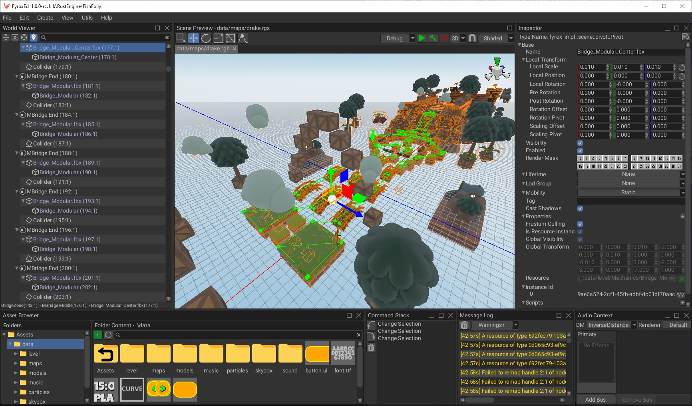
Programming languages
Everything of your game can be written entirely in Rust, utilizing its safety guarantees as well as speed. However, it is possible to use any scripting language that you want, but other languages may have no built-in support, and you will need to implement this manually.
Engine Features
This is a more or less complete (yet, it can be outdated) list of engine features:
General
- Exceptional safety, reliability, and speed.
- PC (Windows, Linux, macOS), Android, iOS, Web (WebAssembly) support.
- Modern, PBR rendering pipeline.
- Comprehensive documentation.
- 2D support.
- Integrated editor.
- Fast iterative compilation with native code hot-reloading support.
- Classic object-oriented design with an ability to be extended with ECS.
- Lots of examples.
Rendering
- Custom shaders, materials, and rendering techniques.
- Physically-based rendering with metallic workflow by default.
- High dynamic range (HDR) rendering.
- Tone mapping.
- Color grading.
- Auto-exposure.
- Gamma correction.
- Deferred shading.
- Directional light.
- Point lights + shadows.
- Spotlights + shadows.
- Screen-Space Ambient Occlusion (SSAO).
- Soft shadows.
- Volumetric light (spot, point).
- Batching.
- Instancing.
- Fast Approximate Anti-Aliasing (FXAA).
- Normal mapping.
- Parallax mapping.
- Render in texture.
- Forward rendering for transparent objects.
- Sky box.
- Deferred decals.
- Multi-camera rendering.
- Lightmapping.
- Soft particles.
- Fully customizable vertex format.
- Compressed textures support.
- High-quality mip-map on-demand generation.
Scene
- Multiple scenes.
- Full-featured scene graph.
- Level-of-detail (LOD) support.
- GPU Skinning.
- Various scene nodes:
- Pivot.
- Camera.
- Decal.
- Mesh.
- Particle system.
- Sprite.
- Multilayer terrain.
- Rectangle (2D Sprites)
- Rigid body + Rigid Body 2D
- Collider + Collider 2D
- Joint + Joint 2D
- Tile map
- Navigation mesh
- Ragdoll
- Sound + Sound Listener
- Various light sources
Sound
- High quality binaural sound with HRTF support.
- Generic and spatial sound sources.
- Built-in streaming for large sounds.
- Raw samples playback support.
- Wide variety of supported formats.
- HRTF support for excellent positioning and binaural effects.
- Reverb effect.
- Audio processing graph.
- Various filters.
Serialization
- Powerful serialization system
- Almost every entity of the engine can be serialized.
- No need to write your own serialization.
Animation
- Animation blending state machine - similar to Mecanim in Unity Engine.
- Animation retargetting - allows you to remap animation from one model to another.
- Blend space
- Root motion
Asset management
- Advanced asset manager.
- Fully asynchronous asset loading.
- PNG, JPG, TGA, DDS, etc. textures.
- FBX/GLTF/GLB models loader.
- WAV, OGG, MP3, etc. sound formats.
- Compressed textures support (DXT1, DXT3, DTX5).
Artificial Intelligence (AI)
- A* pathfinder.
- Navmesh.
- Behavior trees.
User Interface (UI)
- Advanced node-based UI with lots of widgets.
- More than 32 widgets
- Powerful layout system.
- Full TTF/OTF fonts support.
- Based on message passing.
- Fully customizable.
- GAPI-agnostic.
- OS-agnostic.
- Button widget.
- Border widget.
- Canvas widget.
- Color picker widget.
- Color field widget.
- Check box widget.
- Decorator widget.
- Drop-down list widget.
- Grid widget.
- Image widget.
- List view widget.
- Popup widget.
- Progress bar widget.
- Scroll bar widget.
- Scroll panel widget.
- Scroll viewer widget.
- Stack panel widget.
- Tab control widget.
- Text widget.
- Text box widget.
- Tree widget.
- Window widget.
- File browser widget.
- File selector widget.
- Docking manager widget.
- NumericUpDown widget.
Vector3<f32>editor widget.- Menu widget.
- Menu item widget.
- Message box widget.
- Wrap panel widget.
- Curve editor widget.
- User defined widget.
Physics
- Advanced physics (thanks to the rapier physics engine)
- Rigid bodies.
- Rich set of various colliders.
- Joints.
- Ray cast.
- Joints motor.
- 2D support.
- Many other useful features.
System Requirements
As any other software, Fyrox has its own system requirements that will provide the best user experience.
- CPU - at least 2 core CPU with 1.5 GHz per each core. The more is better.
- GPU - any relatively modern GPU with OpenGL 3.3+ support. If the editor fails to start, then it is most likely your video card does not support OpenGL 3.3+. Do not try to run the editor on virtual machines, pretty much all of them have rudimentary support for graphics APIs which won't let you run the editor.
- RAM - at least 1 Gb of RAM. The more is better.
- VRAM - at least 256 Mb of video memory. It highly depends on your game.
- Monitor - 1920x1080 or higher resolution, lower resolutions may work as well.
Supported Platforms
| Platform | Engine | Editor |
|---|---|---|
| Windows | ✅ | ✅ |
| Linux | ✅ | ✅ |
| macOS | ✅¹ | ✅ |
| WebAssembly | ✅ | ❌² |
| Android | ✅ | ❌² |
| iOS | ✅ | ❌² |
- ✅ - first-class support
- ❌ - not supported
- ¹ - macOS suffers from bad GPU performance on Intel chipsets, M1+ works well.
- ² - the editor works only on PC, it requires rich filesystem functionality as well as decent threading support.
Basic concepts
Let's briefly get over some basic concepts of the engine, there's not much, but all of them are crucial to understand design decisions made in the engine.
Classic OOP
The engine uses somewhat classic OOP with composition over inheritance - complex objects in the engine can be constructed using simpler objects. It is also possible to use ECS approach, but you need to manually synchronize ECS entities with the engine entities. This approach is recommended for games with a high number of entities. There's no built-in ECS framework, but there are plenty of them in the Rust ecosystem.
Scenes
In Fyrox, you break down your game in a set of reusable scenes. Pretty much anything can be a scene: a player, a weapon, a bot, level parts, etc. Scenes can be nested one into another, this helps you to break down complex scenes into reusable parts. A Scene in Fyrox also plays the role of a prefab, there's pretty much no difference between them.
Nodes and Scene Graph
A scene is made of one or more nodes. Every scene must have at least one root node, to which everything else is attached. A scene node contains specific set of properties as well as a number of scripts which are responsible for custom game logic.
The typical structure of a scene node can be represented by the following example. The base object for every scene node is
a Base node, it contains a transform, a list of children, etc. A more complex node, that extends functionality of the Base
node stores an instance of Base inside it, i.e. composition. For example, a Mesh node is a Base node plus some specific info
(a list of surfaces, material, etc.). The "hierarchy" depth is unlimited e.g. a Light node in the engine is an enumeration
of three possible types of light source: Directional, Point, and Spot. All three of these light sources all contain a BaseLight node,
which in turn contains a Base node. Graphically, it can be represented like so:
`Point`
|__ Point Light Properties (radius, etc.)
|__`BaseLight`
|__ Base Light Properties (color, etc.)
|__`Base`
|__ Base Node Properties (transform, children nodes, etc.)
As you can see, this forms the nice tree (graph) that shows what the object contains. This is a very natural way of describing scene nodes, it gives you the full power of building an object of any complexity.
Plugins
Plugin is a container for "global" game data and logic, its main usage is to provide scripts with some data and to manage global game state. Your game can have multiple plugins, but usually only one acts as an "entry point".
Scripts
Script - is a separate piece of data and logic, that can be attached to scene nodes. This is the primary (but not only) way of adding custom game logic.
Design Philosophy and Goals
Let's talk a bit about design philosophy and goals of the engine. Development of the engine started in the beginning of 2019 as a hobby project to learn Rust, and it quickly showed that Rust can be a game changer in the game development industry. Initially, the engine was just a port of an engine that is written in C. At the beginning, it was very interesting to build such complex thing as game engine in such low level language without any safety guarantees. After a year of development, it became annoying to fix memory related issues (memory corruption, leaks, etc.), luckily at that time Rust's popularity grew, and it showed on my radar. I (@mrDIMAS) was able to port the engine to it in less than a year. Stability has improved dramatically, no more random crashes, performance was at the same or better levels - time invested in learning new language was paid off. Development speed does not degrade over time as it was in C, it is very easy to manage growing project.
Safety
One of the main goals in the development of the engine is to provide a high level of safety. What does this mean? In short: protection from memory-safety related bugs. This does not include any logic errors, but when your game is free of random crashes due to memory unsafety, it is much easier to fix logic bugs, because you don't have to think about potentially corrupted memory.
Safety also dictates the architectural design decisions of your game. The typical callback hell, that is possible to do in many other languages, is very tedious to implement in Rust. It is possible, but it requires quite a lot of manual work which quickly tells you that you're doing it wrong.
Performance
Game engines are usually built using system-level programming languages, which provide peak performance levels. Fyrox is not an exception. One of its design goals is to provide high levels of performance by default, leaving an opportunity for adding custom solutions for performance-critical places.
Ease of use
Another very important part is that the engine should be friendly to newcomers. It should lower the entry threshold, not make it worse. Fyrox uses well known and battle-tested concepts, thus making it easier to make games with it. On the other hand, it can still be extended with anything you need - it tries to be as good for veterans of the game industry as it is for newcomers.
Battle-tested
Fyrox has large projects built on it, which helps with understanding the real needs of a general-purpose game engine. It also helps reveal weak spots in the design and fix them.
Frequently Asked Questions
This chapter contains answers for frequently asked questions.
Which graphics API does the engine use?
Fyrox uses OpenGL 3.3 on PC and OpenGL ES 3.0 on WebAssembly. Why? Mainly due to historical reasons. Back in the day
(Q4 of 2018), there weren't any good alternatives to it with a wide range of supported platforms. For example, wgpu
didn't even exist, as its first version was released in January 2019. Other crates were taking their first baby steps and weren't ready for production.
Why not use alternatives now?
There is no need for it. The current implementation works and is more than good enough. So instead of focusing on replacing something that works for little to no benefit, the current focus is on adding features that are missing as well as improving existing features when needed. If you have some specific demands, you can implement your own graphics server with a GAPI that you want. See this chapter for more info.
Is the engine based on ECS?
No, the engine uses a mixed composition-based, object-oriented design with message passing and other different approaches that fit the most for a particular task. Why not use ECS for everything, though? Pragmatism. Use the right tool for the job. Don't use a microscope to hammer nails. As was mentioned in the previous chapter, it is possible to use ECS, but you need to manually synchronize the state of your entities with respective engine entities.
What kinds of games can I make using Fyrox?
Pretty much any kind of games, except maybe games with vast open-worlds (since there's no built-in world streaming). In general, it depends on your game development experience.
What if I don't need the editor?
You can completely ignore the editor if you need, you can even delete it from your project without any consequences. It is also possible to initialize the engine manually, as an ordinary Rust crate. See this chapter for more info.
Getting Started
This section of the book will guide you through the basics of the engine. You will learn how to create a project, use plugins, scripts, assets, and the editor. Fyrox is a modern game engine with its own scene editor, that helps you to edit game worlds, manage assets, and much more. By the end this section, you will have learned how to manage game and engine entities, understand how they are structured and have basic knowledge of data management in the engine.
The next chapter will guide you through the major setup of the engine - creating a game project using the special project generator tool.
Installation and Project Creation
Fyrox is a compiled game engine, this means that your game needs to be compiled to native code before it can be run. This fact requires a specific project structure which is generated when you're making a new project. This project consists of a few Rust crates (game, editor, executors for each platform). Every Fyrox game is just a plugin for both the engine and the editor crates. This approach allows the game to run from the editor and enables editing of the game entities from within it, or just run the game without the editor (since not every game needs an editor). This chapter will cover how to install the engine with its platform-specific dependencies, how to use the plugins and scripting system, and how to run the editor.
Platform-specific Dependencies
Before starting to use the engine, make sure all required platform-specific development dependencies are installed. If using Windows or macOS, no additional dependencies are required other than the latest Rust installed with the appropriate toolchain for your platform.
Linux
On Linux, Fyrox needs the following libraries for development: libxcb-shape0, libxcb-xfixes0, libxcb1,
libxkbcommon, libasound2, libegl-mesa0 and the build-essential package group.
For Debian based distros like Ubuntu, they can be installed like below:
sudo apt install libxcb-shape0-dev libxcb-xfixes0-dev libxcb1-dev libxkbcommon-dev libasound2-dev libegl-mesa0 build-essential
For NixOS, run nix develop from the root of your project to open a shell with all the required dependencies.
flake.nix is included in the generated project for you. It's content is the following:
flake.nix
{
inputs = {
nixpkgs.url = "github:nixos/nixpkgs/nixos-unstable";
rust-overlay = {
url = "github:oxalica/rust-overlay";
inputs.nixpkgs.follows = "nixpkgs";
};
};
outputs = {
nixpkgs,
rust-overlay,
...
}:
let
overlays = [
(import rust-overlay)
];
systems = [
"x86_64-linux"
"aarch64-linux"
];
forAllSystems = f:
nixpkgs.lib.genAttrs systems
(system: f { pkgs = import nixpkgs { inherit system overlays; }; });
in
{
devShells = forAllSystems ({ pkgs }: with pkgs; {
default = mkShell rec {
buildInputs = [
rust-bin.stable.latest.default
pkg-config
xorg.libxcb
alsa-lib
wayland
libxkbcommon
libGL
];
LD_LIBRARY_PATH = "${lib.makeLibraryPath buildInputs}";
};
});
};
}
Project Manager

Project manager is a part of the engine that allows you to manage multiple projects made with the engine all at once. It allows you to create a new project or import an existing one, run the project or edit it in the editor, upgrade the project to a selected version of the engine, and many more options. If you want to learn more about the project manager, read this chapter.
Download the project manager for your OS from the website or install it using
cargo install fyrox-project-manager and run it. Then click the +Create button, select the path where you want the
project to be located and click Create. The project manager will create a new directory for your project with the
following structure (some files are omitted to be less verbose):
YourProject
├───Cargo.toml
├───data
│ scene.rgs
├───game
│ │ Cargo.toml
│ └───src
│ lib.rs
├───editor
├───executor
├───executor-android
├───executor-wasm
└───game-dylib
The most important parts in this structure:
Cargo.toml- the workspace of your project.game- your game code.data- the folder where all the assets must be located (subfolders allowed).editor- the editor for your project (can be deleted if not needed).executor- entry point for PC (can be deleted if not needed).executor-android- entry point for Android (can be deleted if not needed).executor-wasm- entry point for WebAssembly (can be deleted if not needed).game-dylib- special "bridge" for native code hot reloading functionality (can be deleted if not needed).
To run the project, select the new project in the list and click Edit button to run the editor, or Run to run
the game without the editor (the game can also be run from the editor). Learn more about the
project manager here.
Your project needs to be compiled from scratch before it can be run, it may take some time, usually it takes up to 10 minutes on a CPU with 4 cores (8 core CPU will compile the engine in just 5 minutes or so). Next runs of the editor will only compile your game, which usually takes a few seconds. Anyway, after some time you should see the editor window.
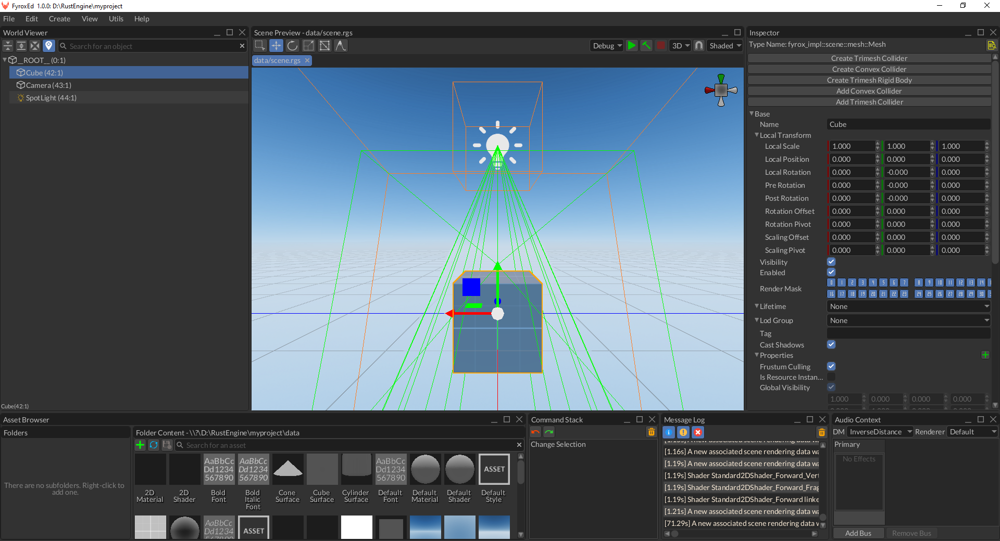
To cut down iteration times, you may want to use a powerful-yet-dangerous tool called native code hot reloading. Learn more about it in this chapter.
Usage Modes
There are a number of ways in which you can use the engine. For example, if you don't need the editor, just don't use it. You can still compile your game to a desired platform. Even the project manager and the projects it generates aren't mandatory at all.
If you want to manually initialize the engine without all these fancy bells and whistles, read the respective chapter. Keep in mind, however, that this book is written in assumption that you're using the engine in the recommended way and all non-standard usage may result in unexpected behavior. The recommended approach does all the "heavy lifting" for you.
Adding Game Logic
Any object-specific game logic should be added using scripts. A script is a "container" for data and code, that will be executed by the engine. Read the respective chapter to learn how to create, edit, and use scripts in your game.
Manual Installation
⚠️ This section is mostly for console users and those who like building their software from source code. This section relies on using
fyrox-templateCLI tool, Project Manager uses it as well, but with the benefits of a GUI.
Quick Start Using Console Commands
Run the following commands to start using the editor as quickly as possible.
cargo install fyrox-template
fyrox-template init --name fyrox_test --style 2d
cd fyrox_test
cargo run --package editor --release
Project Generator CLI
Fyrox offers a special tiny command line tool - fyrox-template, the project manager uses its core functionality as
well. This helps generate all the boilerplate code with a single command. Install it by running the following command:
cargo install fyrox-template
Note for Linux: This installs it in $user/.cargo/bin. If receiving errors about the fyrox-template command not
being found, add this hidden cargo bin folder to the operating systems $PATH environment variable.
Now, navigate to the desired project folder and run the following command:
fyrox-template init --name my_game --style 3d
Note that unlike cargo init, this will create a new folder with the given name.
The tool accepts two arguments - a project name (--name) and a style (--style), which defines the contents of the
default scene. After initializing the project, go to game/src/lib.rs - this is where the game logic is located, as you
will see, the fyrox-template generates quite a bit of code for you. The code is decorated with comments explaining
what each place is for. For more info about each method, please
refer to the docs.
Once the project is generated, two commands can be used to run your game in different modes:
cargo run --package editor --release- launches the editor with your game attached. The editor allows you to run your game from it and edit its game entities. This is intended to be used only for development purposes.cargo run --package executor --release- creates and runs the production binary of your game. This command generates executables which can be shipped (for example - to a store).
Navigate to your project's directory and run cargo run --package editor --release, after a short while, you should see
the editor:
In the editor you can start building your game scene. Important note: your scene must have at least one camera, otherwise you won't see a thing. Read the next chapter to learn how to use the editor.
Using the Latest Engine Version
Due to the nature of software development, bugs will inevitably sneak into the major releases, due to this, it is recommended to always use the latest engine version from the repository on GitHub. This is most likely to have bugs fixed (you can also contribute by fixing any bugs you find or at least, by filing an issue).
Automatic
⚠️
fyrox-templatehas a special sub-command -upgradeto quickly upgrade to a desired engine version. To upgrade to the latest version (nightly) you should executefyrox-template upgrade --version nightlycommand in your game's directory.
There are three main variants for --version switch:
nightly- uses latest nightly version of the engine from GitHub directly. This is the preferable version if you want to use the latest changes and bug fixes as they are released.latest- uses latest stable version of the engine. This option also supports--localkey, that sets the path to the engine to../Fyrox/fyroxand the editor to../Fyrox/editor. Obviously, this path requires the engine to be located in the parent directory of your project. This option could be useful if you want to use a custom version of the engine (for example, if you're developing a patch for the engine).major.minor.patch- uses a specific stable version from crates.io (0.30.0for example).
Manual
The Engine version can also be updated manually. The first step is to install the latest fyrox-template, this can be
done with a single cargo command:
cargo install fyrox-template --force --git https://github.com/FyroxEngine/Fyrox
This will ensure you're using the latest project/script template generator, which is very important; old versions of the template generator will most likely generate outdated code, which is no longer compatible with the engine.
To switch existing projects to the latest version of the engine, you will need to specify paths pointing to the remote
repository for the fyrox and fyroxed_base dependencies. All you need to do is to change paths to these dependencies
in the root Cargo.toml:
[workspace.dependencies.fyrox]
version = { git = "https://github.com/FyroxEngine/Fyrox" }
default-features = false
[workspace.dependencies.fyroxed_base]
version = { git = "https://github.com/FyroxEngine/Fyrox" }
Now your game will use the latest engine and editor, but beware - new commits may surface some API mis-matches. You can
avoid these by specifying a particular commit, just add rev = "desired_commit_hash" to every dependency like so:
[dependencies]
[workspace.dependencies.fyrox]
version = { git = "https://github.com/FyroxEngine/Fyrox", rev = "0195666b30562c1961a9808be38b5e5715da43af" }
default-features = false
[workspace.dependencies.fyroxed_base]
version = { git = "https://github.com/FyroxEngine/Fyrox", rev = "0195666b30562c1961a9808be38b5e5715da43af" }
To bring a local git repository of the engine to the latest version, just call cargo update at the root of the
project's workspace. This will pull the latest changes from the remote, unless there is no rev specified.
Learn more about dependency paths on the official cargo
documentation, here.
FyroxEd Overview
FyroxEd - is the native editor of Fyrox, it is made with one purpose - to be an integrated game development environment that helps you build your game from start to finish with relatively low effort.
You'll be spending a lot of time in the editor, so you should get familiar with it and learn how to use its basic functionalities. This chapter will guide you through the basics, advanced topics will be covered in their respective chapters.
Windows
When you open the editor for the first time you may be confused by the number of windows, buttons, lists, etc. you'll be presented with. Each window serves a different purpose, but all of them work together to help you make your game. Let's take a look at a screenshot of the editor and learn what each part of it is responsible for (please note that this can change over time, because development is quite fast and images can easily become outdated):
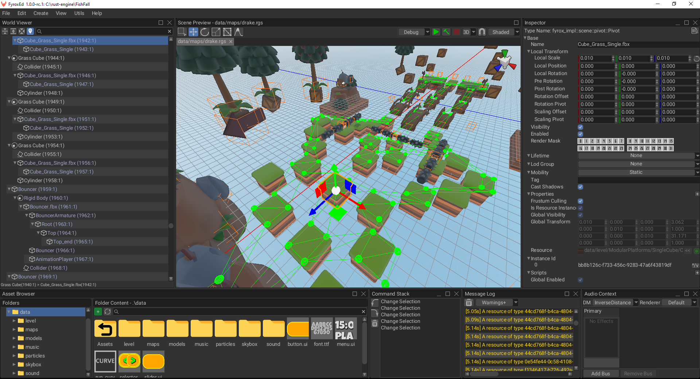
- World viewer - shows every object in the scene and their relationships. Allows inspecting and editing the contents of the scene in a hierarchical form.
- Scene preview - renders the scene with debug info and various editor-specific objects (gizmos, entity icons, etc.). Allows you to select, move, rotate, scale, delete, etc. various entities. The Toolbar on its left side shows available context-dependent tools.
- Inspector - allows you to modify various properties of the selected object.
- Message Log - displays important messages from the editor.
- Navmesh Panel - allows you to create, delete, and edit navigational meshes.
- Command Stack - displays your most recent actions and allows you to undo or redo their changes.
- Asset Browser - allows you to inspect the assets of your game and to instantiate resources in the scene, among other things.
- Audio Context - allows you to edit the settings of the scene's sound context (global volume, available audio buses, effects, etc.)
Creating or loading a Scene
FyroxEd works with scenes - a scene is a container for game entities, you can create and edit one scene at a time. You must have a
scene loaded to begin working with the editor. To create a scene go to File -> New Scene.
To load an existing scene, go to File -> Load and select the desired scene through the file browser. Recently opened
scenes can be loaded more quickly by going to File -> Recent Scenes and selecting the desired one.
Populating a Scene
A scene can contain various game entities. There are two equivalent ways of creating these:
- By going to
Createin the main menu and selecting the desired entity from the drop down. - By right-clicking on a game entity in the
World Viewerand selecting the desired entity from theCreate Childsub-menu.
Complex objects usually made in 3D modelling software (Blender, 3Ds Max, Maya, etc.) can be saved in various formats.
Fyrox supports FBX format, which is supported by pretty much any 3D modelling software. You can instantiate such objects
by simply dragging the one you want and dropping it on the Scene Preview. While dragging it, you'll also see a preview
of the object.
You can do the same with other scenes made in the editor (rgs files), for example, you can create a scene with a few objects in it
with some scripts and re-use them within other scenes. Such scenes are called prefabs.
Saving a Scene
To save your work, go to File -> Save. If you're saving a new scene, the editor will ask you to specify a file name and a
path to where the scene will be saved. Scenes loaded from a file will automatically be saved to the path they were loaded
from.
Undoing and redoing
FyroxEd remembers your actions and allows you to undo and redo the changes done by these. You can undo or redo changes by either
going to Edit -> Undo/Redo or through the usual shortcuts: Ctrl+Z - to undo, Ctrl+Y - to redo.
Controls
There are number of control keys that you'll be using most of the time, pretty much all of them work in the Scene Preview window:
Editor camera movement
Click and hold [Right Mouse Button] within the Scene Preview window to enable the movement controls:
[W][S][A][D]- Move camera forward/backward/left/right[Space][Q]/[E]- Raise/Lower Camera[Ctrl]- Speed up[Shift]- Slowdown
Others
[Left Mouse Button]- Select[Middle Mouse Button]- Pan camera in viewing plane[1]- Select interaction mode[2]- Move interaction mode[3]- Scale interaction mode[4]- Rotate interaction mode[5]- Navigational mesh editing mode[6]- Terrain editing interaction mode[Ctrl]+[Z]- Undo[Ctrl]+[Y]- Redo[Delete]- Delete current selection.
Play Mode
One of the key features of the editor is that it allows you to run your game from it in a separate process. Use the Play/Stop
button at the top of the Scene Preview window to enter or leave Play Mode. Keep in mind, that the editor UI will be locked while
you're in Play Mode.
Play Mode can be activated only for projects made with the fyrox-template (or for projects with a similar structure). The editor
calls cargo commands to build and run your game in a separate process. Running the game in a separate process ensures
that the editor won't crash if your game does, it also provides excellent isolation between the game and the editor, not
giving a chance to break the editor by running the game.
Additional Utilities
There are also number of powerful utilities that will make your life easier, they can be found under the Utils section of the
main menu:
- Curve Editor - allows you to create and edit curve resources to make complex laws for game parameters.
- Path Fixer - helps you fix incorrect resource references in your scenes.
Scene and Scene Graph
When you're playing a game, you often see various objects scattered around the screen, all of them are forming a scene. A scene is just a set of a variety objects, as in many other game engines, Fyrox allows you to create multiple scenes for multiple purposes, for example, one scene could be used for a menu, a bunch of others for game levels, and another one for an ending screen. Scenes can also be used to create a source of data for other scenes, such scenes are called prefabs. Scenes can also be rendered in a texture, which can be used in other scenes - this way you can create interactive screens that show other places.
While playing games, you may have noticed that some objects behaves as if they were linked to other objects, for example, a character in a role-playing game could carry a sword. While the character holds the sword, it is linked to his arm. Such relations between the objects can be presented by a graph structure.
Simply speaking, a graph is a set of objects with hierarchical relationships between each object. Each object in the graph is called a node. In the example with the sword and the character, the sword is a child node of the character, and the character is a parent node of the sword (here we ignore the fact that in reality, character models usually contain complex skeletons, with the sword actually being attached to one of the hands' bones, not to the character).
You can change the hierarchy of nodes in the editor using a simple drag'n'drop functionality in the World Viewer -
drag a node onto some other node, and it will attach itself to it.
Building Blocks or Scene Nodes
The engine offers various types of "building blocks" for your scene, each such block is called a scene node.
- Base - stores hierarchical information (a handle to the parent node and handles to children nodes), local and global transform, name, tag, lifetime, etc. It has self-describing name - it's used as a base node for every other scene node via composition.
- Mesh - represents a 3D model. This one of the most commonly used nodes in almost every game. Meshes can be easily created either programmatically, or be made in some 3D modelling software, such as Blender, and then loaded into the scene.
- Light - represents a light source. There are three types of light sources:
- Point - emits light in every direction. A real-world example would be a light bulb.
- Spot - emits light in a particular direction, with a cone-like shape. A real-world example would be a flashlight.
- Directional - emits light in a particular direction, but does not have position. The closest real-world example would be the Sun.
- Reflection Probe - reflection probe is an object that allows "capturing" a scene content in a cube texture, that can later be used to render reflections and be used as a source of ambient lighting for a scene.
- Camera - allows you to see the world. You must have at least one camera in your scene to be able to see anything.
- Sprite - represents a quad that always faces towards a camera. It can have a texture and size and can also can be rotated around the "look" axis.
- Particle system - allows you to create visual effects using a huge set of small particles. It can be used to create smoke, sparks, blood splatters, etc.
- Terrain - allows you to create complex landscapes with minimal effort.
- Decal - paints on other nodes using a texture. It is used to simulate cracks in concrete walls, damaged parts of the road, blood splatters, bullet holes, etc.
- Rigid Body - a physical entity that is responsible for the dynamic of the rigid. There is
a special variant for 2D -
RigidBody2D. - Collider - a physical shape for a rigid body. It is responsible for contact manifold
generation, without it, any rigid body will not participate in simulation correctly, so every rigid body must have at
least one collider. There is a special variant for 2D -
Collider2D. - Joint - a physical entity that restricts motion between two rigid bodies. It has various
amounts of degrees of freedom depending on the type of the joint. There is a special variant for 2D -
Joint2D. - Rectangle - a simple rectangle mesh that can have a texture and a color. It is a very simple version of a Mesh node, yet it uses very optimized renderer, that allows you to render dozens of rectangles simultaneously. This node is intended for use in 2D games only.
- Tile Map - tile map is a 2D "image", made out of a small blocks called tiles. Tile maps used
- in 2D games to build game worlds quickly and easily. An example of a tile map could be something like this:
- Sound - a sound source universal for 2D and 3D. Spatial blend factor allows you to select a proportion between 2D and 3D.
- Listener - an audio receiver that captures the sound at a particular point in your scene and sends it to an audio context for processing and outputting to an audio playback device.
- Animation Player - a container for multiple animations. It can play animations made in the animation editor and apply animation poses to respective scene nodes.
- Animation Blending State Machine - a state machine that mixes multiple animations from multiple states into one; each state is backed by one or more animation playing or blending nodes. See its respective chapter for more info.
Every node can be created either in the editor (through Create on the main menu, or through Add Child after
right-clicking on a game entity) or programmatically via their respective node builder (
see API docs for more info). These scene nodes allow you to build
almost any kind of game. It is also possible to create your own types of nodes, but that is an advanced topic, which is
covered in a future chapter.
Local and Global Coordinates
A graph describes your scene in a very natural way, allowing you think in terms of relative and absolute coordinates when working with scene nodes.
A scene node has two kinds of transform - a local and global. The local transform defines where the node is located relative to its origin, its scale as a percentage, and its rotation around any arbitrary axis. The global transform is almost the same, but it also includes the whole chain of transforms of the parent nodes. Going back to the example of the character and the sword, if the character moves, and by extension the sword, the global transform of the sword will reflect the changes made to the character position, yet its local transform will not, since that represents the sword's position relative to the character's, which didn't change.
This mechanism is very simple, yet powerful. The full grace of it unfolds when you're working with 3D models with skeletons. Each bone in a skeleton has its parent and a set of children, which allows you to rotate, translate, or scale them to animate your entire character.
Scripts
Scene node can have zero or more scripts assigned to it to execute some logic associated with the node. Scripting is a separate large topic, and it is described in the respective chapter.
Assets
Asset (or resource) is a shared container for some data that is usually stored in an external storage (a disk, a web server, etc.). Pretty much every game depends on various assets, such as 3D models, textures, sounds, etc. Fyrox has its own assets pipeline made to make your life easier.
Asset Types
The engine offers a set of assets that should cover all of your needs:
- Models - are a set of objects. They can be a simple 3D model (barrels, bushes, weapons, etc.) or complex scenes with lots of objects and possibly other model instances. Fyrox supports a number main formats: FBX and GLTF - which can be used to import 3D models, RGS - which are scenes made in FyroxEd. RGS models are special, as they can be used as hierarchical prefabs.
- Textures - are images used to add graphical details to objects. The engine supports multiple texture formats, such as PNG, JPG, BMP, etc. Compressed textures in DDS format are also supported.
- Sound buffers - are data buffers for sound sources. Fyrox supports a number of sound formats, such as WAV, OGG, MP3, etc. formats.
- Curves - are parametric curves. They're used to create complex functions for numeric parameters.
They can be made in the
Curve Editor(Utils -> Curve Editor) - HRIR Spheres - head-related impulse response collection used for head-related transfer function in the HRTF sound rendering.
- Fonts - arbitrary TTF/OTF fonts.
- Materials - materials for rendering.
- Shaders - shaders for rendering.
- UI Style - a set of named variables that can be used to alternate the look of widgets, all at once.
- Tile Set - a set of descriptions for tiles used in tile maps.
- Animation Tracks Container - a special container for shared data of animations.
- It is also possible to create custom assets. See respective chapter for more info.
- Many more very specific asset types.
Asset Management
Asset management is performed from the Asset Browser window in the editor, you can select an asset, preview it, and edit
its import options.
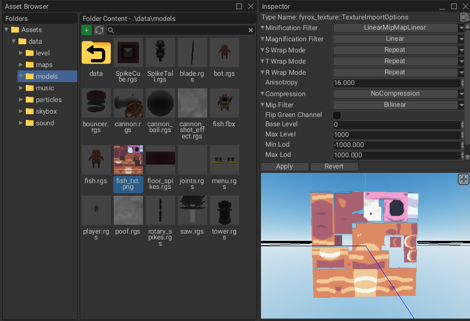
The most interesting part here is the import options section under the previewer. It allows you to set asset-specific import options and apply them. Every asset has its own set of import options. See their respective asset page from the section above to learn what each import option is for.
Asset Instantiation
Some asset types can be instantiated in scenes; for now, you can only create direct instances from models. This
is done by simply dragging the model you want to instantiate and dropping it on the Scene Preview. While dragging it,
you'll also see a preview of the model.
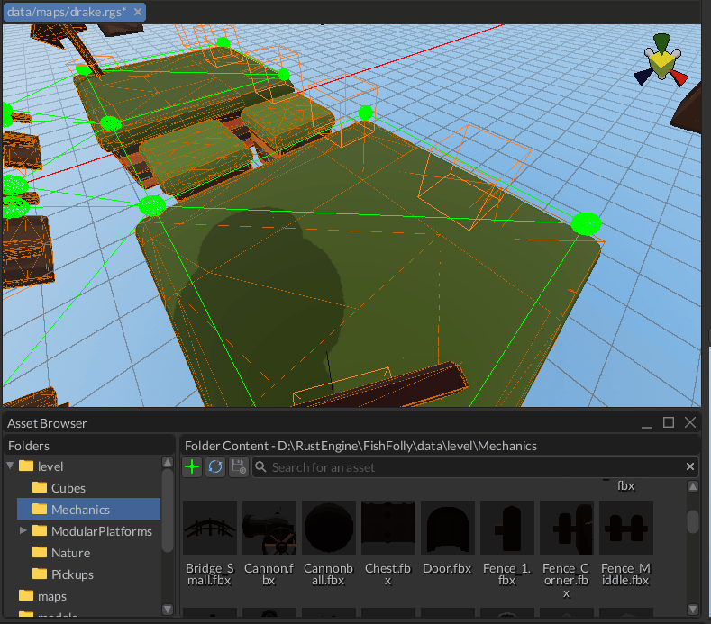
The maximum number of asset instances is not limited by the engine but it is by the memory and CPU resources of your PC. Note that the engine does try to reuse data across instances as much as possible.
You can also instantiate assets dynamically from your code. Here's an example of that for a Model:
#![allow(unused)] fn main() { async fn instantiate_model( path: &Path, resource_manager: ResourceManager, scene: &mut Scene, ) -> Handle<Node> { // Load the model first. Alternatively, you can store the resource handle somewhere and use it for instantiation. let model = resource_manager.request::<Model>(path).await.unwrap(); model.instantiate(scene) } }
This is very useful with prefabs that you may want to instantiate in a scene at runtime.
Loading Assets
Usually, there is no need to manually handle the loading of assets since you have the editor to help with that - just create
a scene with all the required assets. However, there are times when you may need to instantiate some asset dynamically, for
example, a bot prefab. For these cases, you can use the ResourceManager::request<T> method with the appropriate type,
such as Model, Texture, SoundBuffer, etc.
Data Management
The engine uses pools to store most objects (scene nodes in a graph, animations in an animation player, sound sources in an audio context, etc.). Since you'll use them quite often, reading and understanding this chapter is recommended.
Motivation
Rust ownership system and borrow checker, in particular, dictate the rules of data management. In game development, you
often have the need to reference objects from other objects. In languages like C, this is usually achieved by simply storing a raw
pointer and calling it a day. That works, yet it's remarkably unsafe - you risk either forgetting to destroy an object and leaking
memory or destroying an object still being referenced and then trying to access deallocated memory. Other languages, like C++, allow
you to store shared pointers to your data, which by keeping a reference count, ensures the previous doesn't happen at the cost of
a, most often, negligible overhead. Rust counts with smart pointers similar to this, though not without their limitations. There is the Rc/Arc - they function like shared pointers, except they don't allow mutating their content, only
reading it. If you want mutability, you use either a RefCell for a
single-threaded environment, or a Mutex for a multithreaded environment. That is where the problems begin. For
types such as Rc<RefCell> or Arc<Mutex>, Rust enforces its borrowing rules at runtime, which are unlimited readers but
a single writer. Any attempt to borrow mutably more than once at a time will lead to a runtime error.
Another problem with these shared references is that is very easy to accidentally create cyclical references
that prevent objects from ever being destroyed. While the previous could be lived with, the last problem is especially
severe in the case of games: the overhead of runtime checks. In the case of a Rc<RefCell>, it is a single
reference counter for given accesses to the data, but in the case of a Arc<Mutex>, it is a mutex lock.
The solution to these problems is far from ideal; it certainly has its own downfalls. Instead of scattering objects across memory and then having to manage the lifetime of each of them through reference counting, we can store all of the objects in a single and contiguous memory block and then use indices to access each object. Such a structure is called a pool.
Technical Details
A pool is an efficient method of data management. A pool is a vector with entries that can be either vacant or occupied. Each entry, regardless of its status, also stores a number called a generation number. This is used to understand whether an entry has changed over time or not. When an entry is reused, its generation number is increased, rendering all previously created handles leading to the entry invalid. This is a simple and efficient algorithm for tracking the lifetime of objects.
To access the data in the entries, the engine uses the previously mentioned handles. A handle is a pair of the index of an entry and a generation number. When you put an object in the pool, this gives you the handle that leads to the object, as well as the entry's current generation number. The number remains valid until you "free" the object, which makes the entry vacant again.
Advantages
- Since a pool is a contiguous memory block, it is far more CPU cache-friendly. This reduces the occurrences of CPU cache misses, which makes accesses to data blazingly fast.
- Almost every entity in Fyrox lives on its own pool, which makes it easy to create data structures like graphs, where nodes refer to other nodes. In this case, nodes simply need to store a handle to refer to other nodes.
- Simple lifetime management. There is no way to leak memory since cross-references can only be done via handles.
- Fast random access with a constant complexity.
- Handles are the same size as a pointer on a 64-bit architecture, just 8 bytes.
Disadvantages
- Pools can contain lots of gaps between currently used memory, which may lead to less efficient memory usage.
- Handles are sort of weak references, but worse. Since they do not own any data nor even point to their data, you need a reference to its pool instance in order to borrow the data a handle leads to.
- Handles introduce a level of indirection that can hurt performance in places with high loads that require random access, though this is not too significant as random access is already somewhat slow because of potential CPU cache misses.
Usage
You'll use Handle a lot while working with Fyrox. So where are the main usages of pools and
handles? The largest is in a scene graph. This stores all the nodes in a pool and gives handles
to each node. Each scene node stores a handle to their parent node and a set of handles to their children nodes. A scene graph
automatically ensures that such handles are valid. In scripts, you can also store handles
to scene nodes and assign them in the editor.
Animation is another place that stores handles to animated scene nodes. Animation Blending State Machine stores its own state graph using a pool; it also takes handles to animations from an animation player in a scene.
And the list could keep going for a long time. This is why you need to understand the basic concepts of data management, as to efficiently and fearlessly use Fyrox.
Borrowing
Once an object is placed in a pool, you have to use its respective handle to get a reference to it. This can
be done with either pool.borrow(handle) or pool.borrow_mut(handle), or by using the Index trait: pool[handle]. Note that
these methods panic when the handle given is invalid. If you want to be safe, use the try_borrow(handle) or
try_borrow_mut(handle) method.
extern crate fyrox; use fyrox::core::pool::Pool; fn main() { let mut pool = Pool::<u32>::new(); let handle = pool.spawn(1); let obj = pool.borrow_mut(handle); *obj = 11; let obj = pool.borrow(handle); assert_eq!(*obj, 11); }
Freeing
You can extract an object from a pool by calling pool.free(handle). This will give you the object back and make all current
handles to it invalid.
extern crate fyrox; use fyrox::core::pool::Pool; fn main() { let mut pool = Pool::<u32>::new(); let handle = pool.spawn(1); pool.free(handle); let obj = pool.try_borrow(handle); assert_eq!(obj, None); }
Take and Reserve
Sometimes you may want to temporarily extract an object from a pool, do something with it, and then put it back, yet not want to break every handle to the object in the process. There are three methods for this:
take_reserve+try_take_reserve- moves an object out of the pool but leaves the entry in an occupied state. This function returns a tuple with two values(Ticket<T>, T). The latter one being your object, and the former one being a wrapper over its index that allows you to return the object once you're done with it. This is called a ticket. Note that attempting to borrow a moved object will cause a panic!put_back- moves the object back using the given ticket. The ticket contains information about where in the pool to return the object to.forget_ticket- makes the pool entry vacant again. Useful in cases where you move an object out of the pool, and then decide you won't return it. If this is the case, you must call this method, otherwise, the corresponding entry will remain unusable.
Reservation example:
extern crate fyrox; use fyrox::core::pool::Pool; fn main() { let mut pool = Pool::<u32>::new(); let handle = pool.spawn(1); let (ticket, ref mut obj) = pool.take_reserve(handle); *obj = 123; // Attempting to fetch while there is an existing reservation, will fail. let attempt_obj = pool.try_borrow(handle); assert_eq!(attempt_obj, None); // Put the object back, allowing borrowing again. pool.put_back(ticket, *obj); let obj = pool.borrow(handle); assert_eq!(obj, &123); }
Forget example:
extern crate fyrox; use fyrox::core::pool::Pool; fn main() { let mut pool = Pool::<u32>::new(); let handle = pool.spawn(1); let (ticket, _obj) = pool.take_reserve(handle); pool.forget_ticket(ticket); let obj = pool.try_borrow(handle); assert_eq!(obj, None); }
Iterators
There are a few possible iterators, each one serving its own purpose:
iter/iter_mut- creates an iterator over occupied pool entries, returning references to each object.pair_iter/pair_iter_mut- creates an iterator over occupied pool entries, returning tuples of a handle and reference to each object.
extern crate fyrox; use fyrox::core::pool::Pool; fn main() { let mut pool = Pool::<u32>::new(); let _handle = pool.spawn(1); let mut iter = pool.iter_mut(); let next_obj = iter.next().unwrap(); assert_eq!(next_obj, &1); let next_obj = iter.next(); assert_eq!(next_obj, None); }
Direct Access
You have the ability to get an object from a pool using only an index. The methods for that are at and at_mut.
Validation
To check if a handle is valid, you can use the is_valid_handle method.
Type-erased Handles
The pool module also offers type-erased handles that can be of use in some situations. Still, try to avoid using these, as they may introduce hard-to-reproduce bugs. Type safety is always good :3
A type-erased handle is called an ErasedHandle and can be created either manually or from a strongly-typed handle.
Both handle types are interchangeable; you can use the From and Into traits to convert from one to the other.
Getting a Handle to an Object by its Reference
If you need to get a handle to an object from only having a reference to it, you can use the handle_of method.
Iterate Over and Filter Out Objects
The retain method allows you to filter your pool's content using a closure provided by you.
Borrow Checker
Rust has a famous borrow checker, which has become a sort of horror story for newcomers. It is often treated like an enemy that prevents you from writing anything useful in the ways you may be used to in other languages. In fact, it is a very useful part of Rust that proves the correctness of your program and prevents you from doing nasty things like memory corruption, data races, etc. This chapter explains how Fyrox solves the most common borrowing issues and makes game development as easy as in any other game engine.
Multiple Borrowing
When writing a script logic, there is often a need to do a multiple borrowing of some data, usually it is other scene nodes. In normal circumstances, you can borrow each node one-by-one, but in other cases you can't do an action without borrowing two or more nodes simultaneously. In this case, you can use multi-borrowing:
#![allow(unused)] fn main() { #[derive(Clone, Debug, Reflect, Visit, Default, TypeUuidProvider, ComponentProvider)] #[type_uuid(id = "a9fb15ad-ab56-4be6-8a06-73e73d8b1f49")] #[visit(optional)] struct MyScript { some_node: Handle<Node>, some_other_node: Handle<Node>, yet_another_node: Handle<Node>, } impl ScriptTrait for MyScript { fn on_update(&mut self, ctx: &mut ScriptContext) { // Begin multiple borrowing. let mbc = ctx.scene.graph.begin_multi_borrow(); // Borrow immutably. let some_node_ref_1 = mbc.try_get(self.some_node).unwrap(); // Then borrow other nodes mutably. let some_other_node_ref = mbc.try_get_mut(self.some_other_node).unwrap(); let yet_another_node_ref = mbc.try_get_mut(self.yet_another_node).unwrap(); // We can borrow the same node immutably pretty much infinite number of times, if it wasn't // borrowed mutably. let some_node_ref_2 = mbc.try_get(self.some_node).unwrap(); } } }
As you can see, you can borrow multiple nodes at once with no compilation errors. Borrowing rules in this case are enforced at runtime. They're the same as standard Rust borrowing rules:
- You can have infinite number of immutable references to the same object.
- You can have only one mutable reference to the same object.
Multi-borrow context provides detailed error messages for cases when borrowing has failed. For example, it will tell you if you're trying to mutably borrow an object that is already borrowed as immutable (and vice versa). It also provides handle validation and will tell you what's wrong with it. It could be either an invalid index or generation. The latter means that the object at the handle was changed and therefore the handle is invalid.
The previous example looks kinda synthetic and does not show the real-world code that could lead to borrowing issues. Let's fix this. Imagine that you're making a shooter, and that you have bots that can follow and attack targets. Then the code could look like this:
#![allow(unused)] fn main() { #[derive(Clone, Debug, Reflect, Visit, Default, TypeUuidProvider, ComponentProvider)] #[type_uuid(id = "a9fb15ad-ab56-4be6-8a06-73e73d8b1f49")] #[visit(optional)] struct Bot { target: Handle<Node>, absm: Handle<Node>, } impl ScriptTrait for Bot { fn on_update(&mut self, ctx: &mut ScriptContext) { // Begin multiple borrowing. let mbc = ctx.scene.graph.begin_multi_borrow(); // At first, borrow a node on which this script is running on. let this = mbc.get_mut(ctx.handle); // Try to borrow the target. It can fail in two cases: // 1) `self.target` is invalid or unassigned handle. // 2) A node is already borrowed, this could only happen if the bot have itself as the target. match mbc.try_get_mut(self.target) { Ok(target) => { // Check if we are close enough to target. let close_enough = target .global_position() .metric_distance(&this.global_position()) < 1.0; // Switch animations accordingly. let mut absm = mbc .try_get_component_of_type_mut::<AnimationBlendingStateMachine>(self.absm) .unwrap(); absm.machine_mut() .get_value_mut_silent() .set_parameter("Attack", Parameter::Rule(close_enough)); } Err(err) => { // Optionally, you can print the actual reason why borrowing wasn't successful. Log::err(err.to_string()) } }; } } }
As you can see, for this code to compile we need to borrow at least two nodes simultaneously: the node with Bot
script and the target node. This is because we're calculating distance between the two nodes to switch
animations accordingly (attack if the target is close enough).
As with pretty much any approach, this one is not ideal and comes with its own pros and cons. The pros are quite simple:
- No compilation errors - sometimes Rust is too strict about borrowing rules, and valid code does not pass its checks.
- Better ergonomics - no need to juggle with temporary variable here and there to perform an action.
The cons are:
- Multi-borrowing is slightly slower (~1-4% depending on your use case) - this happens because the multi-borrowing context checks borrowing rules at runtime.
Message Passing
Sometimes the code becomes so convoluted that it is hard to maintain and understand what it is doing.
This happens when code coupling gets to a certain point, which requires very broad context for the code to
be executed. For example, if bots in your game have weapons it is so tempting to just borrow the weapon
and call something like weapon.shoot(..). When your weapon is simple, then it might work fine. However, when
your game gets bigger and weapons get new features, a simple weapon.shoot(..) might be not enough. It could be
because the shoot method gets more and more arguments or some other reason. This is quite common. In
general, when your code becomes tightly coupled, it becomes hard to maintain it, and, more importantly, can
easily result in issues with the borrow checker. To illustrate this, let's look at
this code:
#![allow(unused)] fn main() { #[derive(Clone, Debug, Reflect, Visit, Default, TypeUuidProvider, ComponentProvider)] #[type_uuid(id = "a9fb15ad-ab56-4be6-8a06-73e73d8b1f49")] #[visit(optional)] struct Weapon { bullets: u32, } impl Weapon { fn shoot(&mut self, self_handle: Handle<Node>, graph: &mut Graph) { if self.bullets > 0 { let this = &graph[self_handle]; let position = this.global_position(); let direction = this.look_vector().scale(10.0); // Cast a ray in front of the weapon. let mut results = Vec::new(); graph.physics.cast_ray( RayCastOptions { ray_origin: position.into(), ray_direction: direction, max_len: 10.0, groups: Default::default(), sort_results: false, }, &mut results, ); // Try to damage all the bots that were hit by the ray. for result in results { for node in graph.linear_iter_mut() { if let Some(bot) = node.try_get_script_mut::<Bot>() { if bot.collider == result.collider { bot.health -= 10.0; } } } } self.bullets -= 1; } } } impl ScriptTrait for Weapon {} #[derive(Clone, Debug, Reflect, Visit, Default, TypeUuidProvider, ComponentProvider)] #[type_uuid(id = "a9fb15ad-ab56-4be6-8a06-73e73d8b1f49")] #[visit(optional)] struct Bot { weapon: Handle<Node>, collider: Handle<Node>, health: f32, } impl ScriptTrait for Bot { fn on_update(&mut self, ctx: &mut ScriptContext) { // Try to shoot the weapon. if let Some(weapon) = ctx .scene .graph .try_get_script_component_of_mut::<Weapon>(self.weapon) { // !!! This will not compile, because it requires mutable access to the weapon and to // the script context at the same time. This is impossible to do safely, because we've // just borrowed the weapon from the context. // weapon.shoot(ctx.handle, &mut ctx.scene.graph); } } } }
This is probably one of the typical implementations of shooting in games - you cast a ray from the weapon
and if it hits a bot, you apply some damage to it. In this case, bots can also shoot, and this is where
borrow checker again gets in our way. If you try to uncomment the
// weapon.shoot(ctx.handle, &mut ctx.scene.graph); line, you'll get a compilation error that tells you that
ctx.scene.graph is already borrowed. It seems like we are stuck, and we need to somehow fix this issue.
We can't use multi-borrowing in this case because it still enforces borrowing rules and instead of compilation
error, you'll runtime error.
To solve this, you can use the well-known message passing mechanism. The core idea is to not call methods immediately, but to collect all the needed data for the call and send it an object, so it can do the call later. Here's how it will look:
#![allow(unused)] fn main() { #[derive(Clone, Debug, Reflect, Visit, Default, TypeUuidProvider, ComponentProvider)] #[type_uuid(id = "a9fb15ad-ab56-4be6-8a06-73e73d8b1f49")] #[visit(optional)] struct Weapon { bullets: u32, } impl Weapon { fn shoot(&mut self, self_handle: Handle<Node>, graph: &mut Graph) { // -- This method is the same } } #[derive(Debug)] pub struct ShootMessage; impl ScriptTrait for Weapon { fn on_start(&mut self, ctx: &mut ScriptContext) { // Subscribe to shooting message. ctx.message_dispatcher .subscribe_to::<ShootMessage>(ctx.handle); } fn on_message( &mut self, message: &mut dyn ScriptMessagePayload, ctx: &mut ScriptMessageContext, ) { // Receive shooting messages. if message.downcast_ref::<ShootMessage>().is_some() { self.shoot(ctx.handle, &mut ctx.scene.graph); } } } #[derive(Clone, Debug, Reflect, Visit, Default, TypeUuidProvider, ComponentProvider)] #[type_uuid(id = "a9fb15ad-ab56-4be6-8a06-73e73d8b1f49")] #[visit(optional)] struct Bot { weapon: Handle<Node>, collider: Handle<Node>, health: f32, } impl ScriptTrait for Bot { fn on_update(&mut self, ctx: &mut ScriptContext) { // Note, that we know nothing about the weapon here - just its handle and a message that it // can accept and process. ctx.message_sender.send_to_target(self.weapon, ShootMessage); } } }
The weapon now subscribes to ShootMessage and listens to it in on_message method and from there it can
perform the actual shooting without any borrowing issues. The bot now just sends the ShootMessage instead of
borrowing the weapon trying to call shoot directly. The messages do not add any one-frame delay as you might
think, they're processed in the same frame, so there's no one-or-more frames desynchronization.
This approach with messages has its own pros and cons. The pros are quite significant:
- Decoupling - coupling is now very loose and done mostly on the message side.
- Easy to refactor - since the coupling is loose, you can refactor the internals with a low chance of breaking existing code, that could otherwise be done because of intertwined and convoluted code.
- No borrowing issues - the method calls are done in different places and thus there are no lifetime collisions.
- Easy to write unit and integration tests - this comes from loose coupling.
The cons are the following:
- Message passing is slightly slower than direct method calls (~1-7% depending on your use case) - you should keep message granularity at a reasonable level. Do not use message passing for tiny changes, as it will most likely make your game slower.
Project Manager
This chapter explains how to use various parts of the project manager, what it can do in general, and why you should prefer it over good ol' console commands.
Overview
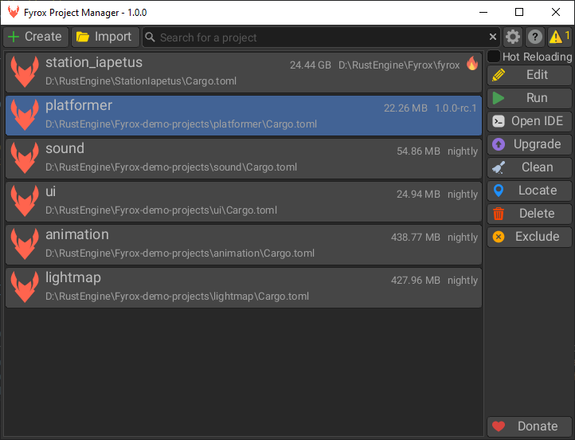
Project manager is a tool that is able to create projects, import existing projects, configure and build them, etc. Its main purpose is to reduce the complexity of project management to the minimum. For example, a new project can be created and built in a few clicks. While the same is possible to be done manually, it requires some juggling with console commands that in some cases (code hot reloading) contains a lot of unexpected parts.
Creating a New Project
To create a new project simply click on +Create button, and you should see the following window:

This window contains four major options for your project:
Path- specifies a parent directory in which a project's directory will be created and then filled with the project's files.Name- project name, it must follow specific rules. The name must start either from a letter or underscore (_), the rest of the characters must be letters, numbers, hyphens (-), underscore (_). The project manager performs name validation for you:

Style- defines initial content of the default scene. In general, it does not restrict you to a specific number of dimensions—you can still use both 2D and 3D or mix them.Version Control- allows you to select a desired version control system (VCS) for your project. It is Git by default, but you can select any VCS you like or disable it completely by selectingNoneoption.
Every project has its own item in the list of projects, it shows important information about the project:
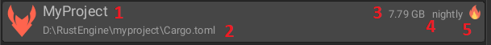
- Project name.
- Full path to the project.
- Version of the engine the project uses.
- Code hot reloading marker.
Project Management
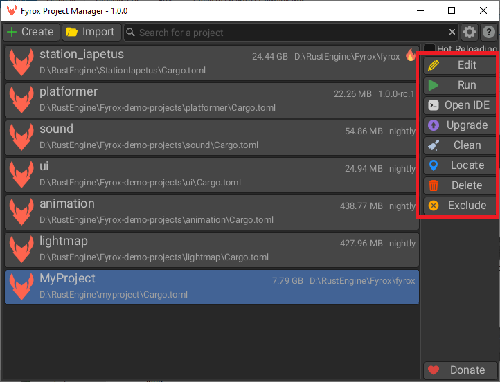
When a project is selected, it is possible to manage it using the toolbar on the right side. The available options are the following:
Hot Reloading- allows you to enable or disable code hot reloading. Code hot reloading is a handy feature for rapid prototyping. See the respective chapter for more info.Edit- builds and runs the editor.Run- builds and runs the game. Final builds of the game should be produced using the project exporter tool of the editor. See the respective chapter for more info.Open IDE- opens the specified IDE to edit the project's source code.Upgrade- opens a separate tool that allows you to select a desired engine version. See the section below for more info.Clean- removes all build artifacts from the project. Essentially it just runscargo cleancommand for your project.Locate- opens the project directory in the file system explorer.Delete- deletes the project. This is a destructive operation, and it is "gated" with a separate confirmation dialog.Exclude- removes the project from the list of projects.
Project Upgrade

This tiny tool allows you to select a desired version of the engine in a few clicks. Available options are the following:
Specific- specific version of the engine. The version must comply with semver rules (for example -0.36.0).Nightly- latest possible potentially unstable version of the engine directly from the development branch (master) of the GitHub repo. Use it if you need latest features and bugfixes.Local- special option that allows you to switch the engine to local copy of the engine repository. The engine must be located in the parent folder of your project's directory.
Settings
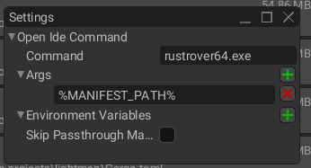
Project manager has its own settings, it is not much for now, but it will grow over time. Currently, there's only one option—an IDE that can be used to edit source code of your project.
All that you need to is to specify a name of the executable of your IDE. The image above uses RustRover IDE. Keep in
mind, that you must modify your PATH environment variable to include full path to the specified executable, otherwise
this option will not work correctly!
Code Hot Reloading
Fyrox supports code hot reloading (CHR for short), which allows you to recompile the game code while the game is running. This functionality significantly reduces iteration times and allows rapid prototyping. This way, Rust becomes a sort of "scripting" language, but with all Rust safety and performance guarantees. CHR in action looks like this:
How To Use
⚠️ If you have an existing project from one of the previous versions of the engine, the best way to add support for CHR is to re-generate the entire project and copy all the assets and game code in the new project. CHR requires very specific project structure and a small mistake in it could lead to incorrect behavior.
CHR is quite simple to use - a project generated by the project manager or fyrox-template already has all that is
needed for hot reloading. There are two ways of enabling hot reloading support—using the project manager and doing
the same manually using console commands.
Project Manager
The easiest way of enabling hot reloading support is to simply click on Hot Reloading checkbox in the project
manager and click Edit or Run:

Note the small "fire" icon, it means that the project has this feature turned on. You can enable or disable it at any time.
Console Commands
Doing the same via console commands requires some bootstrapping. At first, you need to compile your game plugin using the following command:
RUSTFLAGS="-C prefer-dynamic=yes" cargo build --package game_dylib --no-default-features --features="dylib-engine" --profile dev-hot-reload
This command will compile the engine DLL (fyrox_dylib.dll/so) and the plugin DLL (game_dylib.dll/so). Please note the
mandatory environment variable RUSTFLAGS="-C prefer-dynamic=yes". It forces the compiler to link the standard library
dynamically. It is crucial because if not set, the standard library will be duplicated in game plugin and engine,
which will lead to subtle bugs.
⚠️ Environment variables can be set in a different ways, depending on your OS. On Linux it simply prepends the actual command, on Windows it requires a separate command. Other OSes can have their own ways of setting environment variables.
The next step is to compile the editor in CHR mode. To do that, run the following command:
RUSTFLAGS="-C prefer-dynamic=yes" cargo run --package editor --no-default-features --features="dylib" --profile dev-hot-reload
This command will compile the editor in CHR mode and run it. After this, all you need to do is to select build profile
in the editor to be Debug (HR):

Once that's done you can run your game by clicking on the green Play button. You can switch between CHR and normal mode
(static linking) at any time. Keep in mind that if you run the editor in CHR mode, it will also reload all changed plugins.
Build Profiles
CHR uses separate build profiles: dev-hot-reload (no optimizations) and release-hot-reload (with optimizations).
Separate build profiles allow you to quickly switch between statically linked plugins and code hot reloading. This could
be useful if you're experiencing some issues with hot reloading (see next section for more info).
Stability
CHR is a very new and experimental feature of the engine. It is based on wildly unsafe functionality which could result in memory corruption, subtle bugs, etc. If you experience weird behavior of your game after hot reloading, run the game in normal (static linking) mode instead. Please report any bugs in the issue tracker of the engine. CHR was tested on two relatively large games - Fish Folly and Station Iapetus. You can download these projects and try CHR yourself.
Technical Details and Limitations
CHR is using the standard operating system (OS) mechanism of shared libraries (DLL for short). Pretty much any OS can load native code into a running process dynamically from a DLL. Any dynamically loaded library can then be unloaded from the process memory. This gives a perfect opportunity to reload game code in runtime. It may sound quite easy, but in practice, there are a lot of issues.
Plugin Entities and Reloading
Plugins can supply the engine with a predefined set of entities (such as scripts, etc.). These entities are serialized into
a memory blob before the plugin itself is unloaded. When all plugins are reloaded, this memory blob is used to restore
the state of plugin entities. That being said, pretty much all the plugin entities must be serializable (implement Visit trait).
Trait Objects
Trait objects are very problematic with hot reloading, because internally trait objects contain vtable with function pointers. These pointers can be easily invalidated if the plugin is unloaded. This applies even to engine trait objects if they're created directly from the plugin side. The only way to bypass this issue is to use special methods from the engine to create its trait objects. It is possible to add a lint to clippy to check for such cases (see the respective issue).
Dangling Objects
The current plugin system tries its best to remove all plugin entities from the engine internals before reloading plugins.
However, some objects could be overlooked by this system, which could result in crash or memory corruption. The current
approach of preventing from having dangling objects is based on the built-in reflection system—the plugin system iterates
across all fields of every object and checks its assembly name. If the assembly name matches the plugin's assembly name,
then this object must be deleted before the plugin is unloaded.
Non-serializable Entities
Not every object can be serialized, and in this case, the current plugin system calls a special method to restore such non-serializable entities after hot reloading. Such entities could include server connections, job queues, etc.
Game Logic
A game based on Fyrox is a plugin to the engine and the editor. The plugin defines global application logic and can provide a set of scripts, that can be used to assign custom logic to scene nodes. Every script can be attached to only one plugin. All of these entities "live" in the engine, which is initialized from one of platform-specific executors. It is some sort of OS-dependent entry point of your game. Read the respective chapter for more info.
Fyrox uses scripts to create custom game logic, scripts can be written only in Rust which ensures that your game will be crash-free, fast and easy to refactor.
The overall structure of plugins and scripts could be described in this diagram:

The next chapters will cover all parts and will help you to learn how to use plugins and scripts correctly.
Plugins
A game based on Fyrox is a plugin to the engine and the editor. Plugin defines global application logic and provides a set of scripts, that can be used to assign custom logic to scene nodes.
Plugin is an "entry point" of your game, it has a fixed set of methods that can be used for initialization, update, OS event handling, etc. Every plugin could be linked to the engine (and the editor) in two ways: statically or dynamically using hot reloading. Code hot reloading is usually used for development purposes only.
The main purpose of the plugins is to hold and operate on some global application data, that can be used in scripts and provide a set of scripts to the engine. Plugins also have much wider access to engine internals, than scripts. For example, it is possible to change scenes, add render passes, change resolution, etc. which is not possible from scripts.
Structure
Plugin structure is defined by Plugin trait. Typical implementation can be generated by fyrox-template tool,
and it looks something like this:
#![allow(unused)] fn main() { #[derive(Visit, Reflect, Debug)] pub struct Game { scene: Handle<Scene>, } impl Game { pub fn new(scene_path: Option<&str>, context: PluginContext) -> Self { context .async_scene_loader .request(scene_path.unwrap_or("data/scene.rgs")); Self { scene: Handle::NONE, } } } impl Plugin for Game { fn register(&self, context: PluginRegistrationContext) { // Register scripts here. } fn register_property_editors(&self) -> PropertyEditorDefinitionContainer { // Register custom property editors for the editor here. PropertyEditorDefinitionContainer::empty() } fn init(&mut self, scene_path: Option<&str>, context: PluginContext) { // Do initialization logic here. Usually it just requests a scene: context .async_scene_loader .request(scene_path.unwrap_or("data/scene.rgs")); } fn on_loaded(&mut self, context: PluginContext) { // For hot reloading only! Only for development. // Re-initialize non-serializable data. } fn on_deinit(&mut self, _context: PluginContext) { // Do a cleanup here. } fn update(&mut self, _context: &mut PluginContext) { // Add your global update code here. } fn on_os_event(&mut self, _event: &Event<()>, _context: PluginContext) { // Do something on OS event here. } fn on_graphics_context_initialized(&mut self, context: PluginContext) { // Executed when graphics context was initialized. } fn before_rendering(&mut self, context: PluginContext) { // Executed before rendering begins. } fn on_graphics_context_destroyed(&mut self, context: PluginContext) { // Executed when graphics context was destroyed. } fn on_ui_message(&mut self, _context: &mut PluginContext, _message: &UiMessage) { // Handle UI events here. } fn on_scene_begin_loading(&mut self, path: &Path, context: &mut PluginContext) { // Handle started scene loading here. } fn on_scene_loaded( &mut self, _path: &Path, scene: Handle<Scene>, data: &[u8], context: &mut PluginContext, ) { if self.scene.is_some() { context.scenes.remove(self.scene); } self.scene = scene; } fn on_scene_loading_failed( &mut self, path: &Path, error: &VisitError, context: &mut PluginContext, ) { // Handle failed scenes here. } } }
As you can see, the game structure (struct Game) implements a bunch of traits.
Reflect- is needed for static reflection to inspect the content of the plugin.Visit- is mostly needed for hot reloading, to save/load the content of the plugin.Default- provides sensible default state of the game.
Plugin trait is very special - it can execute the actual game logic in one of its methods:
register- called once on start allowing you to register your scripts. Important: You must register all your scripts here, otherwise the engine (and the editor) will know nothing about them. Also, you should register loaders for your custom resources here. See Custom Resource chapter more info.init- called once when the plugin registers in the engine. This method allows you to initialize the game into some sensible state. Keep in mind, that the editor will not call this method, it does not create any game instance. The method hasscene_pathparameter, in short it is a path to a scene that is currently opened in the editor (it will beNoneif either there's no opened scene or your game was started outside the editor). It is described in Editor and Plugins section down below.on_deinit- it is called when the game is about to shut down. Can be used for any clean up, for example logging that the game has closed.update- it is called each frame at a stable rate (usually 60 Hz, but can be configured in the Executor) after the plugin is created and fully initialized. It is the main place where you should put object-independent game logic (such as user interface handling, global application state management, etc.), any other logic should be added via scripts.on_os_event- it is called when the main application window receives an event from the operating system, it can be any event such as keyboard, mouse, game pad events or any other events. Please note that as forupdatemethod, you should put here only object-independent logic. Scripts can catch OS events too.on_ui_message- it is called when there is a message from the user interface, it should be used to react to user actions (like pressed buttons, etc.)on_graphics_context_initialized- it is called when a graphics context was successfully initialized. This method could be used to access the renderer (to change its quality settings, for instance). You can also access a main window instance and change its properties (such as title, size, resolution, etc.).on_graphics_context_destroyed- it is called when the current graphics context was destroyed. It could happen on a small number of platforms, such as Android. Such platforms usually have some sort of suspension mode, in which you are not allowed to render graphics, to have a "window", etc.before_rendering- it is called when the engine is about to render a new frame. This method is useful to perform offscreen rendering (for example - user interface).on_scene_begin_loading- it is called when the engine starts to load a game scene. This method could be used to show a progress bar or some sort of loading screen, etc.on_scene_loaded- it is called when the engine successfully loaded a game scene. This method could be used to add custom logic to do something with a newly loaded scene.
Plugin Context
Vast majority of methods accept PluginContext - it provides almost full access to engine entities, it has access
to the renderer, scenes container, resource manager, user interface, main application window. Typical content of the
context is something like this:
#![allow(unused)] fn main() { pub struct PluginContext<'a, 'b> { pub scenes: &'a mut SceneContainer, pub resource_manager: &'a ResourceManager, pub user_interfaces: &'a mut UiContainer, pub graphics_context: &'a mut GraphicsContext, pub dt: f32, pub lag: &'b mut f32, pub serialization_context: &'a Arc<SerializationContext>, pub widget_constructors: &'a Arc<WidgetConstructorContainer>, pub performance_statistics: &'a PerformanceStatistics, pub elapsed_time: f32, pub script_processor: &'a ScriptProcessor, pub async_scene_loader: &'a mut AsyncSceneLoader, pub loop_controller: ApplicationLoopController<'b>, pub task_pool: &'a mut TaskPoolHandler, } }
scenes- a scene container, could be used to manage game scenes - add, remove, borrow. An example of scene loading is given in the previous code snippet inGame::new()method.resource_manager- is used to load external resources (scenes, models, textures, animations, sound buffers, etc.) from different sources (disk, network storage on WebAssembly, etc.)user_interfaces- use it to create user interface for your game, the interface is scene-independent and will remain the same even if there are multiple scenes created. There's always at least one user interface created, it can be accessed using.first()/first_mut()methods. The engine support unlimited instances of user interfaces.graphics_context- a reference to the graphics_context, it contains a reference to the window and the current renderer. It could beGraphicsContext::Uninitializedif your application is suspended (possible only on Android).dt- a time passed since the last frame. The actual value is implementation-defined, but on current implementation it is equal to 1/60 of a second and does not change event if the frame rate is changing (the engine stabilizes update rate for the logic).lag- a reference to the time accumulator, that holds remaining amount of time that should be used to update a plugin. A caller splitslaginto multiple sub-steps usingdtand thus stabilizes update rate. The main use of this variable, is to be able to resetlagwhen you're doing some heavy calculations in a game loop (i.e. loading a new level) so the engine won't try to "catch up" with all the time that was spent in heavy calculation.serialization_context- it can be used to register scripts and custom scene nodes constructors at runtime.widget_constructors- it can be used to register custom widgets.performance_statistics- performance statistics from the last frame. To get a rendering performance statistics, useRenderer::get_statisticsmethod, that could be obtained from the renderer instance in the current graphics context.elapsed_time- amount of time (in seconds) that passed from creation of the engine. Keep in mind, that this value is not guaranteed to match real time. A user can change delta time with which the engine "ticks" and this delta time affects elapsed time.script_processor- a reference to the current script processor instance, which could be used to access a list of scenes that supports scripts.async_scene_loader- a reference to the current asynchronous scene loader instance. It could be used to request a new scene to be loaded.window_target- special field that associates main application event loop (not game loop) with OS-specific windows. It also can be used to alternate control flow of the application.task_pool- task pool for asynchronous task management.
Control Flow
Plugin context provides access to a special variable window_target, which could be used to alternate control flow of
the application. The most common use of it is to close the game by calling window_target.unwrap().exit() method.
Notice the unwrap() here, window_target could not be available at all times. Ideally you should do checked access here.
Editor and Plugins
When you're running your game from the editor, it starts the game as a separate process and if there's a scene opened
in the editor, it tells the game instance to load it on startup. Let's look closely at Plugin::init method:
#![allow(unused)] fn main() { fn init(&mut self, scene_path: Option<&str>, context: PluginContext) { // Do initialization logic here. Usually it just requests a scene: context .async_scene_loader .request(scene_path.unwrap_or("data/scene.rgs")); } }
The scene_path parameter is a path to a scene that is currently opened in the editor, your game should use it if you
need to load a currently selected scene of the editor in your game. However, it is not strictly necessary - you may
desire to start your game from a specific scene all the time, even when the game starts from the editor. If the parameter
is None, then there is no scene loaded in the editor or the game was run outside the editor.
Scripts
Script - is a container for game data and logic that can be assigned to a scene node. Fyrox uses Rust for scripting, so scripts are as fast as native code. Every scene node can have any number of scripts assigned.
When to Use Scripts and When Not
Scripts are meant to be used to add data and some logic to scene nodes. That being said, you should not use scripts to hold some global state of your game (use your game plugin for that). For example, use scripts for your game items, bots, player, level, etc. On the other hand do not use scripts for leader boards, game menus, progress information, etc.
Also, scripts cannot be assigned to UI widgets due to intentional Game <-> UI decoupling reasons. All user interface components should be created and handled in the game plugin of your game.
Script Structure
Typical script structure is something like this:
#![allow(unused)] fn main() { #[derive(Visit, Reflect, Default, Debug, Clone, TypeUuidProvider, ComponentProvider)] #[type_uuid(id = "bf0f9804-56cb-4a2e-beba-93d75371a568")] #[visit(optional)] struct MyScript { // Add fields here. } impl ScriptTrait for MyScript { fn on_init(&mut self, context: &mut ScriptContext) { // Put initialization logic here. } fn on_start(&mut self, context: &mut ScriptContext) { // Put start logic - it is called when every other script is already initialized. } fn on_deinit(&mut self, context: &mut ScriptDeinitContext) { // Put de-initialization logic here. } fn on_os_event(&mut self, event: &Event<()>, context: &mut ScriptContext) { // Respond to OS events here. } fn on_update(&mut self, context: &mut ScriptContext) { // Put object logic here. } fn on_message( &mut self, message: &mut dyn ScriptMessagePayload, ctx: &mut ScriptMessageContext, ) { // See "message passing" section below. } } #[derive(Visit, Reflect, Debug)] struct MyPlugin; impl Plugin for MyPlugin { fn register(&self, context: PluginRegistrationContext) { context .serialization_context .script_constructors .add::<MyScript>("My Script"); } } fn add_my_script(node: &mut Node) { node.add_script(MyScript::default()) } }
Each script must implement following traits:
Visitimplements serialization/deserialization functionality, it is used by the editor to save your object to a scene file.Reflectimplements compile-time reflection that provides a way to iterate over script fields, set their values, find fields by their paths, etc.Debug- provides debugging functionality, it is mostly for the editor to let it turn the structure and its fields into string.Clone- makes your structure clone-able, since we can clone objects, we also want the script instance to be cloned.Defaultimplementation is very important - the scripting system uses it to create your scripts in the default state. This is necessary to set some data to it and so on. If it's a special case, you can always implement your ownDefault's implementation if it's necessary for your script.TypeUuidProvideris used to attach some unique id for your type, every script must have a unique ID, otherwise, the engine will not be able to save and load your scripts. To generate a new UUID, use Online UUID Generator or any other tool that can generate UUIDs.ComponentProvider- gives access to inner fields of the script marked with#[component(include)]attribute.
#[visit(optional)] attribute is used to suppress serialization errors when some fields are missing or changed.
Script Template Generator
You can use fyrox-template tool to generate all required boilerplate code for a new script, it makes adding new scripts
much less tedious. To generate a new script use script command:
fyrox-template script --name MyScript
It will create a new file in game/src directory with my_script.rs name and fill with required code. Do not forget
to add the module with the new script to lib.rs like this:
#![allow(unused)] fn main() { // Use your script name instead of `my_script` here. pub mod my_script; }
Comments in each generated method should help you to figure out which code should be placed where and what is the purpose of every method.
⚠️ Keep in mind that every new script must be registered in
PluginConstructor::register, otherwise you won't be able to assign the script in the editor to a node. See the next section for more info.
Script Registration
Every script must be registered before use, otherwise the engine won't "see" your script and won't let you assign it
to an object. PluginConstructor trait has register method exactly for script registration. To register a script
you need to register it in the list of script constructors like so:
#![allow(unused)] fn main() { #[derive(Visit, Reflect, Debug)] struct MyPlugin; impl Plugin for MyPlugin { fn register(&self, context: PluginRegistrationContext) { context .serialization_context .script_constructors .add::<MyScript>("My Script"); } } }
Every script type (MyScript in the code snippet above, you need to change it to your script type) must be registered using
ScriptConstructorsContainer::add
method, which accepts a script type as a generic argument and its name, that will be shown in the editor. The name can be
arbitrary, it is used only in the editor. You can also change it at any time, it won't break existing scenes.
Script Attachment
To assign a script and see it in action, run the editor, select an object and find Scripts property in the Inspector.
Click on a small + button and select your script from the drop-down list on the newly added entry. To see the script
in action, click "Play/Stop" button. The editor will run your game in separate process with the scene active in the editor.
The script can be attached to a scene node from code:
#![allow(unused)] fn main() { fn add_my_script(node: &mut Node) { node.add_script(MyScript::default()) } }
Initialization as well as update of newly assigned script will happen on next update tick of the engine.
Script Context
Script context provides access to the environment that can be used to modify engine and game state from scripts. Typical content of the context is something like this:
#![allow(unused)] fn main() { pub struct ScriptContext<'a, 'b, 'c> { pub dt: f32, pub elapsed_time: f32, pub plugins: PluginsRefMut<'a>, pub handle: Handle<Node>, pub scene: &'b mut Scene, pub scene_handle: Handle<Scene>, pub resource_manager: &'a ResourceManager, pub message_sender: &'c ScriptMessageSender, pub message_dispatcher: &'c mut ScriptMessageDispatcher, pub task_pool: &'a mut TaskPoolHandler, pub graphics_context: &'a mut GraphicsContext, pub user_interfaces: &'a mut UiContainer, pub script_index: usize, } }
dt- amount of time passed since last frame. The value of the variable is implementation-defined, usually it is something like 1/60 (0.016) of a second.elapsed_time- amount of time that passed since start of your game (in seconds).plugins- a mutable reference to all registered plugins, it allows you to access some "global" game data that does not belong to any object. For example, a plugin could store key mapping used for player controls, you can access it usingpluginsfield and find desired plugin. In case of a single plugin, you just need to cast the reference to a particular type usingcontext.plugins[0].cast::<MyPlugin>().unwrap()call.handle- a handle of the node to which the script is assigned to (parent node). You can borrow the node usingcontext.scene.graph[handle]call. Typecasting can be used to obtain a reference to a particular node type.scene- a reference to parent scene of the script, it provides you full access to scene content, allowing you to add/modify/remove scene nodes.scene_handle- a handle of a scene the script instance belongs to.resource_manager- a reference to resource manager, you can use it to load and instantiate assets.message_sender- a message sender. Every message sent via this sender will be then passed to everyScriptTrait::on_messagemethod of every script.message_dispatcher- a message dispatcher. If you need to receive messages of a particular type, you must subscribe to a type explicitly.task_pool- task pool for asynchronous task management.graphics_context- Current graphics context of the engine.user_interfaces- a reference to user interface container of the engine. The engine guarantees that there's at least one user interface exists. Usecontext.user_interfaces.first()/first_mut()to get a reference to it.script_index- index of the script. Never save this index, it is only valid while this context exists!
Execution order
Scripts have strictly defined execution order for their methods (the order if execution is linear and do not depend on actual tree structure of the graph where the script is located):
on_init- called first for every script instanceon_start- called after everyon_initis calledon_update- called zero or more times per one render frame. The engine stabilizes update rate of the logic, so if your game runs at 15 FPS, the logic will still run at 60 FPS thus theon_updatewill be called 4 times per frame. The method can also be not called at all, if the FPS is very high. For example, if your game runs at 240 FPS, thenon_updatewill be called once per 4 frames.on_message- called once per incoming message.on_os_event- called once per incoming OS event.on_deinit- called at the end of the update cycle once when the script (or parent node) is about to be deleted.
If a scene node has multiple scripts assigned, then they will be processed as described above in the same order as they assigned to the scene node.
Message passing
Script system of Fyrox supports message passing for scripts. Message passing is a mechanism that allows you to send some data (message) to a node, hierarchy of nodes or the entire graph. Each script can subscribe for a specific message type. It is an efficient way for decoupling scripts from each other. For instance, you may want to detect and respond to some event in your game. In this case when the event has happened, you send a message of a type and every "subscriber" will react to it. This way subscribers will not know anything about sender(s); they'll only use message data to do some actions.
A simple example where the message passing can be useful is when you need to react to some event in your game. Imagine,
that you have weapons in your game, and they can have a laser sight that flashes with a different color when some target
was hit. In very naive approach you can handle all laser sights where you handle all intersection for projectiles, but
this adds a very tight coupling between laser sight and projectiles. This is totally unnecessary coupling can be made
loose by using message passing. Instead of handling laser sights directly, all you need to do is to broadcast an
ActorDamaged { actor: Handle<Node>, attacker: Handle<Node> } message. Laser sight in its turn can subscribe for such
message and handle all incoming messages and compare attacker with owner of the laser sight and if the hit was made
by attacker flash with some different color. In code this would like so:
#![allow(unused)] fn main() { #[derive(Debug)] enum Message { Damage { actor: Handle<Node>, attacker: Handle<Node>, }, } #[derive(Default, Clone, Reflect, Visit, Debug, ComponentProvider, TypeUuidProvider)] #[type_uuid(id = "eb3c6354-eaf5-4e43-827d-0bb10d6d966b")] #[visit(optional)] struct Projectile; impl ScriptTrait for Projectile { fn on_update(&mut self, ctx: &mut ScriptContext) { // Broadcast the message globally. ctx.message_sender.send_global(Message::Damage { actor: Default::default(), attacker: ctx.handle, }); } } #[derive(Default, Clone, Reflect, Visit, Debug, ComponentProvider, TypeUuidProvider)] #[type_uuid(id = "ede36945-5cba-41a1-9ef9-9b33b0f0db36")] #[visit(optional)] struct LaserSight; impl ScriptTrait for LaserSight { fn on_start(&mut self, ctx: &mut ScriptContext) { // Subscript to messages. ctx.message_dispatcher.subscribe_to::<Message>(ctx.handle); } fn on_message( &mut self, message: &mut dyn ScriptMessagePayload, _ctx: &mut ScriptMessageContext, ) { // React to message. if let Some(Message::Damage { actor, attacker }) = message.downcast_ref::<Message>() { Log::info(format!("{actor} damaged {attacker}",)) } } } }
There are few key parts:
- You should explicitly subscribe script instance to a message type, otherwise messages of the type won't be delivered
to your script. This is done using the message dispatcher:
ctx.message_dispatcher.subscribe_to::<Message>(ctx.handle);. This should be done inon_startmethod, however it is possible to subscribe/unsubscribe at runime. - You can react to messages only in special method
on_message- here you just need to check for message type using pattern matching and do something useful.
Try to use message passing in all cases, loose coupling significantly improves code quality and readability, however in simple projects it can be ignored completely.
Accessing Other Script's Data
Every script "lives" on some scene node, so to access a script data from some other script you need to know a handle of a scene node with that script first. You can do this like so:
#![allow(unused)] fn main() { #[derive(Clone, Debug, Reflect, Visit, Default, TypeUuidProvider, ComponentProvider)] #[type_uuid(id = "a9fb05ad-ab56-4be6-8a06-73e73d8b1f48")] #[visit(optional)] struct MyScript { second_node: Handle<Node>, } impl ScriptTrait for MyScript { fn on_update(&mut self, ctx: &mut ScriptContext) { if let Some(second_nodes_script_ref) = ctx .scene .graph .try_get_script_of::<MyOtherScript>(self.second_node) { if second_nodes_script_ref.counter > 60.0 { Log::info("Done!"); } } // The code below is equivalent to the code above. The only difference is that // it borrows the node and then borrows the script from it, giving you access // to the node. if let Some(second_node_ref) = ctx.scene.graph.try_get(self.second_node) { if let Some(second_nodes_script_ref) = second_node_ref.try_get_script::<MyOtherScript>() { if second_nodes_script_ref.counter > 60.0 { Log::info("Done!"); } } } } } #[derive(Clone, Debug, Reflect, Visit, Default, TypeUuidProvider, ComponentProvider)] #[type_uuid(id = "a9fb05ad-ab56-4be6-8a06-73e73d8b1f49")] #[visit(optional)] struct MyOtherScript { counter: f32, } impl ScriptTrait for MyOtherScript { fn on_update(&mut self, _ctx: &mut ScriptContext) { // Counting. self.counter += 1.0; } } }
In this example we have the two script types: MyScript and MyOtherScript. Now imagine that we have two scene
nodes, where the first one contains MyScript and the second one MyOtherScript. MyScript knows about
the second node by storing a handle of in second_node field. MyScript waits until MyOtherScript will count
its internal counter to 60.0 and then prints a message into the log. This code does immutable borrowing and
does not allow you to modify other script's data. If you a mutable access, then use try_get_script_of_mut
method (or try_get_script_mut for the alternative code).
second_node field of the MyScript is usually assigned in the editor, but you can also find the node in
your scene by using the following code:
#![allow(unused)] fn main() { fn on_start(&mut self, ctx: &mut ScriptContext) { self.second_node = ctx .scene .graph .find_by_name_from_root("SomeName") .map(|(handle, _)| handle) .unwrap_or_default(); } }
This code searches for a node with SomeName and assigns its handle to the second_node variable in the script
for later use.
Accessing Plugins From Scripts
Sometimes there's a need to access plugin data from scripts, there may be various reasons for that, for example you may need to register a bot in the list of bots. This list could then be used for AI to search targets without searching in the entire scene graph at every frame.
Accessing plugins from scripts is very easy, all you need to do is to call get/get_mut method from ctx.plugins:
#![allow(unused)] fn main() { #[derive(Default, Debug, Reflect, Visit)] struct GamePlugin { bots: Vec<Handle<Node>>, } impl Plugin for GamePlugin { // .. } #[derive(Clone, Debug, Default, Visit, Reflect, ComponentProvider, TypeUuidProvider)] #[type_uuid(id = "460cd09f-8768-4f38-8799-5e9c0c08b8fd")] struct Bot { // .. } impl ScriptTrait for Bot { fn on_start(&mut self, ctx: &mut ScriptContext) { // Get a reference to the plugin. let plugin = ctx.plugins.get_mut::<GamePlugin>(); // Register self in the "global" list of bots. plugin.bots.push(ctx.handle); } fn on_deinit(&mut self, ctx: &mut ScriptDeinitContext) { let plugin = ctx.plugins.get_mut::<GamePlugin>(); // Unregister the bot from the list. if let Some(index) = plugin .bots .iter() .position(|handle| *handle == ctx.node_handle) { plugin.bots.remove(index); } } fn on_update(&mut self, ctx: &mut ScriptContext) { let plugin = ctx.plugins.get::<GamePlugin>(); for bot in plugin.bots.iter() { if *bot != ctx.handle { // Search for target. } } } } }
In this example the Bot script registers itself in a global list of bots on start, and unregisters on destruction.
update is then used to search for targets in that list.
In multiplayer games, plugin could store server/client instances and scripts could easily access them to send messages across the network for other players. In general, you could use plugins as an arbitrary, global data storage for your scripts.
Tasks
Fyrox supports task-based programming for both scripts and plugins. Task is a closure that does something in a separate thread and then the result of it is returned back to the main thread. This is very useful technique, that allows you to perform heavy calculations using all available CPU power, not just one CPU core with a single main thread. Tasks could be used for pretty much anything, that can be done as a separate piece of work.
How it works
Main thread spawns a task which is then sent to the task pool. There's a fixed set of worker threads, that extracts tasks from the task pool when there's any. Task's code is then executed in one of the worker thread, which may take any amount of time. When the task is completed, its result is sent to the main thread and then a callback closure is executed to do a desired action on task completion. Usually it's something relatively fast - for example you may spawn a task that calculates a path on a large navigational mesh and when it is done, you store that path in one of your script instance from which the task was spawned. As you can see, there are two major parts - the task itself and the closure. Graphically it can be represented like this:

Green line represents the main thread and the two purple lines are the worker threads. There could be any number of
worker threads, and usually it is a worker thread per each CPU core. Let's take a look at a typical task path on
this image (yellow-ish one). At first, we spawn a task, and it is immediately put in the task pool (in the same thread),
after this if we have a free worker thread it extracts our task from the pool and sends it to execution. As you can
see any task must implement Send trait, otherwise you'll get a compilation error. When the task is complete, the
worker thread sends the result (again, the result must be Send) to the main thread and an associated callback closure
is executed to do something with the result. While the task is being executed, the main thread is not blocked, and it
can do other useful stuff.
Examples
The following example calculates a path on a navigational mesh in using task-based approach described above. At first,
it prepares the "environment" for the task by cloning a shared navigational mesh (Arc<RwLock<NavMesh>>) into a
local variable. Then it spawns a new task (async move { .. } block) which reads the shared navigational mesh
and calculates a long path, that could take a few frames to compute (imagine a huge island, and we need to get
a path from one corner to another). As the last argument to the spawn_script_task method we pass a closure that
will be executed on the main thread when the task is complete. It just saves the computed path in the script's
field which is then used for visualization.
#![allow(unused)] fn main() { #[derive(Visit, Default, Reflect, Debug, Clone, ComponentProvider, TypeUuidProvider)] #[type_uuid(id = "efc71c98-ecf1-4ec3-a08d-116e1656611b")] struct MyScript { navmesh: Handle<Node>, path: Option<Vec<Vector3<f32>>>, } impl ScriptTrait for MyScript { fn on_start(&mut self, ctx: &mut ScriptContext) { // Borrow a navigational mesh scene node first. if let Some(navmesh_node) = ctx .scene .graph .try_get_of_type::<NavigationalMesh>(self.navmesh) { // Take a shared reference to the internal navigational mesh. let shared_navmesh = navmesh_node.navmesh(); // Spawn a task, that will calculate a long path. ctx.task_pool.spawn_script_task( ctx.scene_handle, ctx.handle, ctx.script_index, async move { let navmesh = shared_navmesh.read(); if let Some((_, begin_index)) = navmesh.query_closest(Vector3::new(1.0, 0.0, 3.0)) { if let Some((_, end_index)) = navmesh.query_closest(Vector3::new(500.0, 0.0, 800.0)) { let mut path = Vec::new(); if navmesh .build_path(begin_index, end_index, &mut path) .is_ok() { return Some(path); } } } None }, |path, this: &mut MyScript, _ctx| { this.path = path; Log::info("Path is calculated!"); }, ); } } fn on_update(&mut self, ctx: &mut ScriptContext) { // Draw the computed path. if let Some(path) = self.path.as_ref() { for segment in path.windows(2) { ctx.scene.drawing_context.add_line(Line { begin: segment[0], end: segment[1], color: Default::default(), }) } } } } }
Plugins could also spawn tasks, which operates on application scale basis, unlike script tasks which operates with separate script instances. A plugin task is a bit easier to use:
#![allow(unused)] fn main() { #[derive(Debug, Visit, Reflect)] struct MyGame { data: Option<Vec<u8>>, } impl MyGame { pub fn new(context: PluginContext) -> Self { context.task_pool.spawn_plugin_task( // Emulate heavy task by reading a potentially large file. The game will be fully // responsive while it runs. async move { let mut file = File::open("some/file.txt").unwrap(); let mut data = Vec::new(); file.read_to_end(&mut data).unwrap(); data }, // This closure is called when the future above has finished, but not immediately - on // the next update iteration. |data, game: &mut MyGame, _context| { // Store the data in the game instance. game.data = Some(data); }, ); // Immediately return the new game instance with empty data. Self { data: None } } } impl Plugin for MyGame { fn update(&mut self, _context: &mut PluginContext) { // Do something with the data. if let Some(data) = self.data.take() { println!("The data is: {:?}", data); } } } }
Performance
You should avoid task-based approach for small (in time terms) tasks, because each task has additional cost which might be larger than the actual task executed in-place. This is because you need to send your task to a separate thread using a channel, then the callback closure is stored as a trait object which involves memory allocation. Since tasks uses type erasure technique, they perform dynamic type casting which is not free. Also, there could be any other implementation-defined "slow" spots.
A general advice would be: run a profiler first to find hot spots in your game, then try to optimize them. If you hit the optimization limit, use tasks. Do not use tasks until you really need them, try to optimize your game first! If you're working on a simple 2D game, you'll never need to use tasks. You might need to use tasks when your have, for instance, a procedurally generated world that should be generated on the fly. For example, if you're making a dungeon crawler with infinite world. Tasks are also very useful for large games with loads of content and activities. You could off-thread AI, world manipulation (for example if you have a destructible world), etc. In other words - do not use a sledgehammer to hammer nails, unless you have a huge nail.
Executor
Executor is a simple wrapper that drives your game plugins, it is intended to be used for production builds of your game.
The editor runs the executor in a separate process when you're entering the play mode. Basically, there is no significant
difference between running the game from the editor or running it as a separate application. The main difference is that
the editor passes scene_path parameter for the executor when entering the play mode.
Motivation
Why there's a need for such a thing like executor? The first reason was already highlighted - game process isolation
during the game development. The next major reason is the fact that your game can be run on a number of different platforms.
If you check the list of supported platforms, you'll understand
why there's such a need. Each platform has its own way of how the native code is processed. For example, on WebAssembly
the game code is compiled into an WASM module which is then loaded by a web browser and executed. This platform requires
the native code to be compiled into a "dynamic library", while, for instance, the PC builds can be compiled directly
into an executable file. Android, for instance, requires the game to be compiled into a shared library (.so) and then
loaded by a bunch of "glue" code and executed.
Usage
Executor is meant to be a part of your project's workspace, its typical look could something like this:
extern crate fyrox; use fyrox::{ core::{pool::Handle, uuid::Uuid}, engine::executor::Executor, plugin::{Plugin, PluginConstructor, PluginContext}, scene::{Scene}, }; struct GameConstructor; impl PluginConstructor for GameConstructor { fn create_instance( &self, _scene_path: Option<&str>, _context: PluginContext, ) -> Box<dyn Plugin> { todo!() } } fn main() { let mut executor = Executor::new(); // Register your game constructor here. executor.add_plugin_constructor(GameConstructor); executor.run() }
The executor has full access to the engine, and through it to the main application window. You can freely change desired
parts, Executor implements Deref<Target = Engine> + DerefMut traits, so you can use its instance as an "alias"
to engine instance.
To add a plugin to the executor, just use add_plugin_constructor method, it accepts any entity that implements
PluginConstructor traits.
Typical Use Cases
This section covers typical use cases for the Executor.
Setting Window Title
You can set window title when creating executor instance:
fn main() { let executor = Executor::from_params( EventLoop::new().ok(), GraphicsContextParams { window_attributes: WindowAttributes { // Set window title. title: "My Game".to_string(), ..Default::default() }, vsync: true, msaa_sample_count: None, graphics_server_constructor: Default::default(), named_objects: false, }, ); // ... }
Scene
Scene is a container for game entities. Scene allows you to create an isolated "world" which won't interact with other scenes, it is very useful for many more or less complex games.
What game scenes cannot handle is user interface entities, they're handled by a separate scene class, so-called UI scene. UI scenes are discussed in the respective chapter. UI can still be incorporated in the game scene, see this chapter for more info.
How to create
A scene could be created either in the editor or programmatically. You can also combine both approaches, where you build all "static" content in the editor and adding rest of the entities (bots, interactive objects, etc.) manually by instantiating the respective prefabs at runtime.
Using FyroxEd
There is a separate chapter in the book that should help you to create a scene. After a scene is created, you can load it using async scene loader:
#![allow(unused)] fn main() { #[derive(Visit, Reflect, Debug)] struct MyGame { main_scene: Handle<Scene>, } impl Plugin for MyGame { fn init(&mut self, scene_path: Option<&str>, context: PluginContext) { // Step 1. Kick off scene loading in a separate thread. This method could // be located in any place of your code. context.async_scene_loader.request("path/to/your/scene.rgs") } fn on_scene_loaded( &mut self, path: &Path, scene: Handle<Scene>, data: &[u8], context: &mut PluginContext, ) { // Step 2. // This method is called once a scene was fully loaded. // You may want to remove previous scene first. if self.main_scene.is_some() { context.scenes.remove(self.main_scene) } // Remember new scene as main. self.main_scene = scene; } fn on_scene_begin_loading(&mut self, path: &Path, context: &mut PluginContext) { // This method is called if a scene just began to load. } fn on_scene_loading_failed( &mut self, path: &Path, error: &VisitError, context: &mut PluginContext, ) { // This method is called if a scene failed to load. } // ... }
The code is quite straightforward. At first, we're using async scene loader to create a scene loading request.
This request will be processed in a separate thread, leaving your game fully responsible while the scene is loading.
Next, when the scene is fully loaded and added to the engine, on_scene_loaded method is called. Usually there's
only one active scene, so we're removing the previous one and setting the new one as active.
There are two additional methods:
on_scene_begin_loading- is called when a scene is just began to load. Keep in mind that async scene loader could load multiple scenes at once, and this method is guaranteed to be called exactly before the scene is started to load.on_scene_loading_failed- is called when a scene is failed to load. This method could be useful if you're using non-verified scenes (i.e. from game mods) and want to react somehow when the scene is failed to load.
Create scene manually
A scene could also be created manually, the following code creates a cube and a camera to visualize the cube:
#![allow(unused)] fn main() { fn create_scene(ctx: &mut PluginContext) -> Handle<Scene> { let mut scene = Scene::new(); // Use node builders, create sounds, add physics, etc. here to fill the scene. // The following code creates a simple cube and a camera to visualize it. CameraBuilder::new(BaseBuilder::new()).build(&mut scene.graph); MeshBuilder::new( BaseBuilder::new().with_local_transform( TransformBuilder::new() .with_local_position(Vector3::new(0.0, 0.0, 3.0)) .build(), ), ) .with_surfaces(vec![ SurfaceBuilder::new(surface::CUBE.resource.clone()).build() ]) .build(&mut scene.graph); ctx.scenes.add(scene) } }
See the respective node builders docs to populate the scene.
Where are all my scenes located?
All scenes "live" in the engine, the engine has ownership over your scene after you've added it to the engine. You can borrow a scene at any time using its handle and do some changes to it and its nodes:
#![allow(unused)] fn main() { fn update(&mut self, context: &mut PluginContext) { // Borrow a scene using its handle. `try_get` performs immutable borrow, to mutably borrow the scene // use `try_get_mut`. if let Some(scene) = context.scenes.try_get(self.main_scene) { // Do something. println!("{:?}", scene.graph.performance_statistics); } } }
Building a scene asynchronously
You can create your scene in a separate thread and then pass it to the main thread to insert it in the engine. Why this is needed? Remember the last time you've played a relatively large game, you've probably noticed that it has loading screens and loading screen has some fancy interactive stuff with progress bar. Loading screen is fully responsive while the game is doing a hard job loading the world for you. Got it already? Asynchronous scene loading is needed to create/load large scenes with tons of resources without blocking the main thread, thus leaving the game fully responsive.
Managing multiple scenes
Usually you should have only one scene active (unless you're making something very special), you should use
.enabled flag of a scene to turn it off or on. Deactivated scenes won't be rendered, the physics won't be
updated, the sound will stop, and so on. In other words, the scene will be frozen. This is useful for situations
when you often need to switch between scenes, leaving other scenes in frozen state. One of the examples where this
can be useful is menus. In most games when you're entering the menu, game world is paused.
If multiple scenes are enabled, they'll be rendered in the same order as they were created. Multiple active scenes have very limited use.
Graph
Graph is a set of objects with hierarchical relationships between each object. It is one of the most important entities in the engine. Graph takes care of your scene objects and does all the hard work for you.
How to create
You don't need to create a graph manually, every scene has its own instance of the graph. It can be accessed pretty
easily: scene_ref.graph
Adding nodes
There are two ways of adding nodes to the graph, either using node builders or manually by calling graph.add_node.
Using node builders
Every node in the engine has its respective builder which can be used to create an instance of the node. Using builders is a preferable way to create scene nodes. The most significant node builders are the following:
BaseBuilder- creates an instance of base node. See Base node for more info.PivotBuilder- creates an instance of pivot node. See Base node for more info.CameraBuilder- creates an instance of camera node. See Camera node for more info.MeshBuilder- creates an instance of mesh node. See Mesh node for more info.LightBuilder- creates an instance of light node. See Light node for more info.SpriteBuilder- creates an instance of sprite node. See Sprite node for more info.ParticleSystemBuilder- creates an instance of particle system node. See Particle system node for more info.TerrainBuilder- creates an instance of terrain node. See Terrain node for more info.DecalBuilder- creates an instance of decal node. See Decal node for more info.RigidBodyBuilder- creates an instance of rigid body node. See Rigid body for more info.ColliderBuilder- creates an instance of collider node. See Collider for more info.JointBuilder- creates an instance of joint node. See Joint for more info.RectangleBuilder- creates an instance of 2D rectangle node. See Rectangle for more info.AnimationPlayerBuilder- creates an instance ofAnimationPlayernode. See Animation chapter for more info.AnimationBlendingStateMachineBuilder- creates an instance ofAnimationBlendingStateMachineBuildernode. See Animation Blending chapter for more info.ReflectionProbeBuilder- creates an instance of a Reflection Probe node.TileMapBuilder- creates an instance of a Tile Map node.Ragdoll- creates and instance of a Ragdoll node.
Every builder, other than BaseBuilder, accepts BaseBuilder as a parameter in .new(..) method. Why so?
Because every node (other than Base) is "derived" from Base via composition and the derived
builder must know how to build Base node. While it may sound confusing, it is actually very useful and clear.
Consider this example:
#![allow(unused)] fn main() { fn create_camera(scene: &mut Scene) -> Handle<Node> { CameraBuilder::new( // Here we passing a base builder. Note that, since we can build Base node separately // we can pass any custom values to it while building. BaseBuilder::new().with_local_transform( TransformBuilder::new() .with_local_position(Vector3::new(2.0, 0.0, 3.0)) .build(), ), ) // Here we just setting desired Camera properties. .with_fov(60.0f32.to_radians()) .build(&mut scene.graph) } }
As you can see, we're creating an instance of BaseBuilder and fill it with desired properties as well as filling the CameraBuilder's instance properties. This is a very flexible mechanism, allowing you to build complex hierarchies in a declarative manner:
#![allow(unused)] fn main() { fn create_node(scene: &mut Scene) -> Handle<Node> { CameraBuilder::new( BaseBuilder::new() // Add some children nodes. .with_children(&[ // A staff... MeshBuilder::new( BaseBuilder::new() .with_name("MyFancyStaff") .with_local_transform( TransformBuilder::new() .with_local_position(Vector3::new(0.5, 0.5, 1.0)) .build(), ), ) .build(&mut scene.graph), // and a spell. SpriteBuilder::new( BaseBuilder::new() .with_name("MyFancyFireball") .with_local_transform( TransformBuilder::new() .with_local_position(Vector3::new(-0.5, 0.5, 1.0)) .build(), ), ) .build(&mut scene.graph), ]) .with_local_transform( TransformBuilder::new() .with_local_position(Vector3::new(2.0, 0.0, 3.0)) .build(), ), ) .with_fov(60.0f32.to_radians()) .build(&mut scene.graph) } }
This code snippet creates a camera for first-person role-playing game's player, it will have a staff in "right-hand" and a spell in the left hand. Of course, all of this is very simplified, but should give you the main idea. Note that staff and fireball will be children nodes of camera, and when setting their transform, we're actually setting local transform which means that the transform will be relative to camera's. The staff and the spell will move together with the camera.
Adding a node manually
For some rare cases you may also want to delay adding a node to the graph, specifically for that purpose, every node
builder has .build_node method which creates an instance of Node but does not add it to the graph.
#![allow(unused)] fn main() { fn create_node_manually(scene: &mut Scene) -> Handle<Node> { let node: Node = CameraBuilder::new(BaseBuilder::new()).build_node(); // We must explicitly add the node to the graph. scene.graph.add_node(node) } }
How to modify the hierarchy
For many cases, you can't use builders to create complex hierarchy, the simplest example of such situation when
you're creating an instance of some 3D model. If you want the instance to be a child object of some other object,
you should attach it explicitly by using graph.link_nodes(..):
#![allow(unused)] fn main() { fn link_weapon_to_camera( scene: &mut Scene, camera: Handle<Node>, resource_manager: ResourceManager, ) { let weapon = block_on(resource_manager.request::<Model>("path/to/weapon.fbx")) .unwrap() .instantiate(scene); // Link weapon to the camera. scene.graph.link_nodes(weapon, camera); } }
Here we've loaded a weapon 3D model, instantiated it on scene and attached to existing camera.
How to remove nodes
A node could be removed by simply calling graph.remove_node(handle), this method removes the node from the
graph with all of its children nodes. Sometimes this is unwanted behavior, and you want to preserve children
nodes while deleting parent node. To do that, you need to explicitly detach children nodes of the node you're about
to delete:
#![allow(unused)] fn main() { fn remove_preserve_children(scene: &mut Scene, node_to_remove: Handle<Node>) { for child in scene.graph[node_to_remove].children().to_vec() { scene.graph.unlink_node(child); } scene.graph.remove_node(node_to_remove); } }
After calling this function, every child node of node_to_remove will be detached from it and the node_to_remove
will be deleted. remove_node has some limitations: it cannot be used to extract "sub-graph" from the graph, it
just drops nodes immediately.
Transformation
Transformation (transform for short) - is a special entity that changes coordinate system from one to another. It is used primarily in scene nodes to store their position/rotation/scale/pivots/etc. Fyrox has quite complex transformations, that supports:
- Position (
T) - Rotation (
R) - Scale (
S) - Pre-rotation (
Rpre) - Post-rotation (
Rpost) - Rotation Pivot (
Rp) - Rotation Offset (
Roff) - Scaling Offset (
Soff) - Scaling Pivot (
Sp)
Final transformation matrix will be Transform = T * Roff * Rp * Rpre * R * Rpost * Rp⁻¹ * Soff * Sp * S * Sp⁻¹. In 99.9%
cases first three are enough for pretty much every task. Other six components used for specific stuff (mainly for nodes
that imported from FBX file format).
Prefabs
A prefab is a separate scene that can be instantiated in some other scene, while preserving links between properties of its instances and of its parent prefab. Prefabs allow you to create a part of a scene and have multiple instances of it in other scenes.
Let's quickly check what that means on practice. The engine has a prefab system which allows you to build hierarchical scenes which can include any number of other scenes as child scenes. Child scenes can have their own child scenes and so on. This is very efficient decoupling mechanism that allows you to put pieces of the scene in separate scenes (prefabs) and modify them independently. The changes in child scenes will be automatically reflected to all parent scenes. Here is the very simple example of why this is important: imagine you need to populate a town with 3D models of cars. Each kind of car has its own 3D model and for example, a collision body that won't allow the player to walk through cars. How would you do this? The simplest (and dumbest) solution is to copy dozens of car models in the scene, and you're done. Imagine that now you need to change something in your car, for example, add a trunk that can be opened. What will you do? Of course, you should "iterate" over each car model and do the required changes, you simply don't have any other option. This will eat huge amount of time and in general it is very non-productive.
This is where prefabs will save you hours of work. All you need to do is to create a car prefab and instantiate it multiple times in your scene. When you'll need to change something in the car, you simply go to the prefab and change it. After that every prefab instance will have your changes!
Prefabs can be used to create self-contained entities in your game, examples of this includes: visual effects, any scripted game entities (bots, turrets, player, doors, etc.). Such prefabs can be either directly instantiated in a scene in the editor, or instantiated at runtime when needed.
How to create and use a prefab
All you need to do is to make a scene in the editor with all required objects and save it! After that, you can use the scene in other scenes and just do its instantiation, as in usual 3D models. You can either instantiate it from the editor by drag'n'drop a prefab to scene previewer, or do standard model resource instantiation
Property inheritance
As already mentioned in the intro section, instances inherit properties from their parent prefabs. For example, you can change position of an object in prefab and every instance will reflect that change - the object's instances will also move. This works until there's no manual change to a property in instance, if you do so, your change is considered with higher priority. See this chapter for more info.
Hierarchical Prefabs
Prefabs can have other prefab instances inside it. This means that you can, for example, create a room populated with instances of other prefabs (bookshelves, chairs, tables, etc.) and then use the room prefab to build a bigger scene. The changes in the base prefabs will be reflected in their instances, regardless of how deep the hierarchy is.
Property Inheritance
Property inheritance is used to propagate changes of unmodified properties from a prefab to its instances. For example, you can change scale of a node in a prefab and its instances will have the same scale too, unless the scale is set explicitly in an instance. Such feature allows you to tweak instances, add some unique details to them, but take general properties from parent prefabs.
Property inheritance works for prefab hierarchies of any depth, this means that you can create something like this: a room prefab can have multiple instances of various furniture prefabs in it, while the furniture prefabs can also be constructed from other prefabs and so on. In this case if you modify a property in one of the prefabs in the chain, all instance will immediately sync their unmodified properties.
How To Create Inheritable Properties
It is possible to use property inheritance for script variables. To make a property of your script inheritable, all you
need is to wrap its value using InheritableVariable wrapper.
#![allow(unused)] fn main() { #[derive(Reflect, Visit, Default, Clone, Debug)] struct MyScript { foo: InheritableVariable<f32>, } }
The engine will automatically resolve the correct value for the property when a scene with the script is loaded. If your property was modified, then its value will remain the same, it won't be overwritten by parent's value. Keep in mind, that the type of the inheritable variable must be cloneable and support reflection.
InheritableVariable implements the Deref<Target = T> + DerefMut traits, this means that any access via the DerefMut trait
will mark the property as modified. This could be undesired in some cases so InheritableVariable supports special xxx_silent
methods that don't touch the internal modifiers and allows you to substitute the value with some other "silently" -
without marking the variable as modified.
Which Fields Should Be Inheritable?
Inheritable variables intended to be "atomic" - it means that the variable stores some simple variable (f32, String,
Handle<Node>, etc.). While it is possible to store "compound" variables (InheritableVariable<YourStruct>), it is
not advised because of inheritance mechanism. When the engine sees inheritable variable, it searches the same variable
in a parent entity and copies its value to the child, thus completely replacing its content. In this case, even if you
have inheritable variables inside compound field, they won't be inherited correctly. Let's demonstrate this in the
following code snippet:
#![allow(unused)] fn main() { #[derive(Reflect, Clone, PartialEq, Eq, Debug)] struct SomeComplexData { foo: InheritableVariable<u32>, bar: InheritableVariable<String>, } #[derive(Reflect, Debug)] struct MyEntity { some_field: InheritableVariable<f32>, // This field won't be inherited correctly - at first it will take parent's value and then // will try to inherit inner fields, but its is useless step, because inner data is already // a full copy of parent's field value. incorrectly_inheritable_data: InheritableVariable<SomeComplexData>, // Subfields of this field will be correctly inherited, because the field itself is not inheritable. inheritable_data: SomeComplexData, } }
This code snippet should clarify, that inheritable fields should contain some "simple" data, and almost never - complex structs.
Editor
The editor wraps all inheritable properties in a special widget that supports property reversion. Reversion allows you to drop current changes and take the parent's property value. This is useful if you want a property to inherit its parent's value. In the Inspector it looks like this:
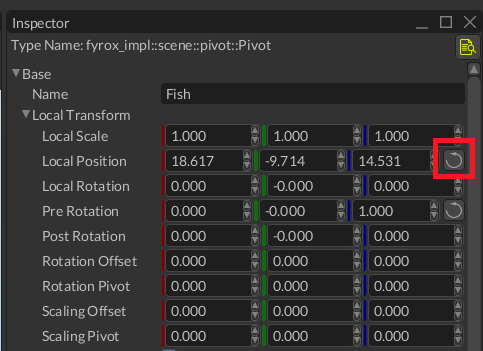
Clicking on the < button will take the value from the parent prefab and the property won't be marked as modified anymore. In case
there is no parent prefab, the button will just drop modified flag.
Base node
Base node is a scene node that stores hierarchical information (a handle to the parent node and a set of handles to children nodes), local and global transform, name, tag, lifetime, etc. It has self-describing name - it is used as a base node for every other scene node (via composition).
It has no graphical information, so it is invisible all the time, but it is useful as a "container" for children nodes.
How to create
Use the PivotBuilder to create an instance of the Pivot node (remember Base node itself is used only to build other
node types):
#![allow(unused)] fn main() { let handle = PivotBuilder::new(BaseBuilder::new()).build(&mut scene.graph); }
Building a complex hierarchy
To build a complex hierarchy of some nodes, use .with_children() method of the BaseBuilder, it allows you
to build a hierarchy of any complexity:
#![allow(unused)] fn main() { let handle = PivotBuilder::new( BaseBuilder::new().with_children(&[ CameraBuilder::new(BaseBuilder::new()).build(&mut scene.graph), PivotBuilder::new(BaseBuilder::new().with_children(&[ PivotBuilder::new(BaseBuilder::new()).build(&mut scene.graph), ])) .build(&mut scene.graph), ]), ) .build(&mut scene.graph); }
Note that when we're building a Camera instance, we're passing a new instance of BaseBuilder to it, this
instance can also be used to set some properties and a set of children nodes.
The "fluent syntax" is not mandatory to use, the above code snipped could be rewritten like this:
#![allow(unused)] fn main() { let camera = CameraBuilder::new(BaseBuilder::new()).build(&mut scene.graph); let child_base = PivotBuilder::new(BaseBuilder::new()).build(&mut scene.graph); let base = PivotBuilder::new(BaseBuilder::new().with_children(&[child_base])).build(&mut scene.graph); let handle = PivotBuilder::new(BaseBuilder::new().with_children(&[camera, base])) .build(&mut scene.graph); }
However, it looks less informative, because it loses the hierarchical view and it is harder to tell the relations between objects.
Transform
Base node has a local transform that allows you to translate/scale/rotate/etc. your node as you want to. For example, to move a node at specific location you could use this:
#![allow(unused)] fn main() { scene.graph[node_handle] .local_transform_mut() .set_position(Vector3::new(1.0, 0.0, 2.0)); }
You could also chain multiple set_x calls, like so:
#![allow(unused)] fn main() { scene.graph[node_handle] .local_transform_mut() .set_position(Vector3::new(1.0, 0.0, 2.0)) .set_scale(Vector3::new(2.0, 2.0, 2.0)) .set_rotation_offset(Vector3::new(1.0, 1.0, 0.0)); }
See more info about transformations here.
Visibility
Base node stores all info about local visibility and global visibility (with parent's chain visibility included).
Changing node's visibility could be useful if you want to improve performance by hiding distant objects (however it
strongly advised to use level-of-detail for this) or to hide some objects in your scene. There are three main methods
to set or fetch visibility:
set_visibility- sets local visibility for a node.visibility- returns current local visibility of a node.global_visibility- returns combined visibility of a node. It includes visibility of every parent node in the hierarchy, so if you have a parent node with some children nodes and set parent's visibility tofalse, global visibility of children nodes will befalsetoo, even if local visibility istrue. This is useful technique for hiding complex objects with lots of children nodes.
Enabling/disabling scene nodes
A scene node could be enabled or disabled. Disabled nodes are excluded from a game loop and has almost zero CPU consumption (their global transform/visibility/enabled state is still updated due to limitations of the engine). Disabling a node could be useful if you need to completely freeze some hierarchy and do keep it in this state until it is enabled again. It could be useful to disable parts of a scene with which a player cannot interact to improve performance. Keep in mind, that enabled state is hierarchical like visibility. When you're disabling a parent node with some children nodes, the children nodes will be disabled too.
Mesh node
Mesh is a scene node that represents a 3D model. This one of the most commonly used nodes in almost every game. Meshes could be easily created either programmatically or be made in some 3D modelling software (like Blender) and loaded in your scene.
Surfaces
Surface is a set of triangles that uses the same material. Mesh node could contain zero of more surfaces; each surface contains a set of vertices and indices that binds vertices with triangles. Mesh nodes split into surfaces to be rendered effectively by modern GPUs.
How to create
There are basically two ways, how to pick one depends on your needs. In general, using a 3D modelling software is the way to go, especially with tons and tons of free 3D models available online.
⚠️ The engine supports only FBX and GLTF file format for 3D models! To use GLTF, specify
gltffeature of the engine in your root Cargo.toml
Using a 3D modelling software
To create a 3D model, you could use Blender and then export it to FBX file format.
To load your 3D model in the game, you should do few simple steps (loading a 3D model does not differ from a prefab
instantiation):
#![allow(unused)] fn main() { fn load_model_to_scene( scene: &mut Scene, path: &Path, resource_manager: ResourceManager, ) -> Handle<Node> { // Request model resource and block until it loading. let model_resource = block_on(resource_manager.request::<Model>(path)).unwrap(); // Create an instance of the resource in the scene. model_resource.instantiate(scene) } }
This code snippet intentionally omits proper async/await usage (instead it just blocks current thread until
model is loading) and error handling. In the real game you should carefully handle all errors and use async/await
properly.
Creating a procedural mesh
A mesh instance could be created from code, such meshes are called "procedural". They're suitable for cases when you cannot create a mesh in 3D modelling software.
#![allow(unused)] fn main() { fn create_procedural_mesh(scene: &mut Scene, resource_manager: ResourceManager) -> Handle<Node> { let mut material = Material::standard(); // Material is completely optional, but here we'll demonstrate that it is possible to // create procedural meshes with any material you want. material.bind( "diffuseTexture", Some(resource_manager.request::<Texture>("some_texture.jpg")), ); // Notice the MeshBuilder. MeshBuilder::new( BaseBuilder::new().with_local_transform( TransformBuilder::new() .with_local_position(Vector3::new(0.0, -0.25, 0.0)) .build(), ), ) .with_surfaces(vec![SurfaceBuilder::new(SurfaceResource::new_ok( ResourceKind::Embedded, // Our procedural mesh will have a form of squashed cube. // A mesh can have unlimited number of surfaces. SurfaceData::make_cube(Matrix4::new_nonuniform_scaling(&Vector3::new( 25.0, 0.25, 25.0, ))), )) .with_material(MaterialResource::new_ok(ResourceKind::Embedded, material)) .build()]) .build(&mut scene.graph) } }
As you can see, creating a mesh procedurally requires lots of manual work and not so easy.
Animation
Mesh node supports bone-based animation (skinning) and blend shapes. See Animation chapter for more info.
Data Buffers
It is possible to access vertex buffer and index buffer of a mesh to either read or write some data there. For example, the following code extracts world-space positions of every vertex of an animated mesh:
#![allow(unused)] fn main() { fn extract_world_space_vertices(mesh: &Mesh, graph: &Graph) -> Vec<Vector3<f32>> { let mut vertices = Vec::new(); for surface in mesh.surfaces() { let guard = surface.data(); let data = guard.data_ref(); for vertex in data.vertex_buffer.iter() { let Ok(position) = vertex.read_3_f32(VertexAttributeUsage::Position) else { continue; }; let Ok(weights) = vertex.read_4_f32(VertexAttributeUsage::BoneWeight) else { continue; }; let Ok(indices) = vertex.read_4_u8(VertexAttributeUsage::BoneIndices) else { continue; }; let mut world_space_vertex = Vector3::default(); for (weight, index) in weights.iter().zip(indices.iter()) { if let Some(bone_node) = surface .bones() .get(*index as usize) .and_then(|bone_handle| graph.try_get(*bone_handle)) { let bone_transform = bone_node.global_transform() * bone_node.inv_bind_pose_transform(); world_space_vertex += bone_transform .transform_point(&Point3::from(position)) .coords .scale(*weight); } } vertices.push(world_space_vertex); } } vertices } }
Lighting
This chapter explains how the lighting works in the engine and which methods of lighting it uses. Fyrox uses industry-standard physically based rendering pipeline by default.
Ambient lighting
The engine uses PBR pipeline which supports two major ways of applying ambient lighting.
Environment lighting (via IBL)
Physically correct ambient image-based lighting (IBL). It uses an environment map as a source of lighting for the entire scene. By default, every scene has an environment map with bright-blue sky, and this bright lighting is used to light the scene. To change it, use the following code snippet:
#![allow(unused)] fn main() { async fn create_skybox(resource_manager: ResourceManager) -> SkyBox { // Load skybox textures in parallel. let (front, back, left, right, top, bottom) = fyrox::core::futures::join!( resource_manager.request::<Texture>("path/to/front.jpg"), resource_manager.request::<Texture>("path/to/back.jpg"), resource_manager.request::<Texture>("path/to/left.jpg"), resource_manager.request::<Texture>("path/to/right.jpg"), resource_manager.request::<Texture>("path/to/up.jpg"), resource_manager.request::<Texture>("path/to/down.jpg") ); // Unwrap everything. let skybox = SkyBoxBuilder { front: Some(front.unwrap()), back: Some(back.unwrap()), left: Some(left.unwrap()), right: Some(right.unwrap()), top: Some(top.unwrap()), bottom: Some(bottom.unwrap()), } .build() .unwrap(); // Set S and T coordinate wrap mode, ClampToEdge will remove any possible seams on edges // of the skybox. let skybox_texture = skybox.cubemap().unwrap(); let mut data = skybox_texture.data_ref(); data.set_s_wrap_mode(TextureWrapMode::ClampToEdge); data.set_t_wrap_mode(TextureWrapMode::ClampToEdge); skybox } fn set_scene_skybox(scene: &mut Scene, resource_manager: ResourceManager) { scene.set_skybox(create_skybox(resource_manager)); } }
This, however, may still produce weird lighting inside indoor scenes - all objects will be equally lit from the respective side of the skybox. The engine has a special mechanism to solve this issue called reflection probes. See the respective chapter for more info.
Single-color lighting
Simplest possible lighting, but not physically correct. Every scene has default ambient lighting setting, it is defined by a single RGB color. By default, every scene has some pre-defined ambient lighting, it is bright enough, so you can see your objects. In some cases, you may need to adjust it or even make it black (for horror games for instance), this can be achieved by a few lines of code:
#![allow(unused)] fn main() { fn set_ambient_lighting(scene: &mut Scene) { scene.rendering_options.ambient_lighting_color = Color::opaque(30, 30, 30); scene.rendering_options.environment_lighting_source = EnvironmentLightingSource::AmbientColor; }
Please keep in mind that ambient lighting does not mean global illumination, it is a different lighting technique which is not available in the engine yet.
Light Sources
There are number of built-in light sources:
- Directional Light
- Point Light
- Spot Light
Light node
The engine offers complex lighting system with various types of light sources.
Light types
There are three main types of light sources: directional, point, and spotlights.
Directional light
Directional light does not have a position, its rays are always parallel, and it has a particular direction in space. An example of directional light in real-life could be our Sun. Even if it is a point light, it is so far away from the Earth, so we can assume that its rays are always parallel. Directional light sources are suitable for outdoor scenes.
A directional light source could be created like this:
#![allow(unused)] fn main() { fn create_directional_light(scene: &mut Scene) -> Handle<Node> { DirectionalLightBuilder::new(BaseLightBuilder::new(BaseBuilder::new())).build(&mut scene.graph) } }
By default, the light source will be oriented to lit "the ground". In other words its direction will be faced towards
(0.0, -1.0, 0.0) vector. You can rotate it as you want by setting local transform of it while building. Something
like this:
#![allow(unused)] fn main() { fn create_oriented_directional_light(scene: &mut Scene) -> Handle<Node> { DirectionalLightBuilder::new(BaseLightBuilder::new( BaseBuilder::new().with_local_transform( TransformBuilder::new() .with_local_rotation(UnitQuaternion::from_axis_angle( &Vector3::x_axis(), -45.0f32.to_radians(), )) .build(), ), )) .build(&mut scene.graph) } }
Point light
Point light is a light source that emits lights in all directions, it has a position, but does not have an orientation. An example of a point light source: light bulb.
#![allow(unused)] fn main() { fn create_point_light(scene: &mut Scene) -> Handle<Node> { PointLightBuilder::new(BaseLightBuilder::new(BaseBuilder::new())) .with_radius(5.0) .build(&mut scene.graph) } }
Spotlight
Spotlight is a light source that emits lights in cone shape, it has a position and orientation. An example of a spotlight source: flashlight.
#![allow(unused)] fn main() { fn create_spot_light(scene: &mut Scene) -> Handle<Node> { SpotLightBuilder::new(BaseLightBuilder::new(BaseBuilder::new())) .with_distance(5.0) .with_hotspot_cone_angle(50.0f32.to_radians()) .with_falloff_angle_delta(10.0f32.to_radians()) .build(&mut scene.graph) } }
Light scattering

Spot and point lights support light scattering effect. Imagine you're walking with a flashlight in a foggy weather, the fog will scatter the light from your flashlight making it, so you'll see the "light volume". Light scattering is enabled by default, so you don't have to do anything to enable it. However, in some cases you might want to disable it, you can do this either while building a light source or change light scattering options on existing light source. Here is the small example of how to do that.
#![allow(unused)] fn main() { fn disable_light_scatter(scene: &mut Scene, light_handle: Handle<Node>) { scene.graph[light_handle] .component_mut::<BaseLight>() .unwrap() .enable_scatter(false); } }
You could also change the amount of scattering per each color channel, using this you could imitate the Rayleigh scattering:
#![allow(unused)] fn main() { fn use_rayleigh_scattering(scene: &mut Scene, light_handle: Handle<Node>) { scene.graph[light_handle] .component_mut::<BaseLight>() .unwrap() .set_scatter(Vector3::new(0.03, 0.035, 0.055)); } }
Shadows
By default, light sources cast shadows. You can change this by using set_cast_shadows method of a light source. You
should carefully manage shadows: shadows giving the most significant performance impact, you should keep the number of
light sources that can cast shadows at lowest possible to keep performance at good levels. You can also turn
on/off shadows when you need:
#![allow(unused)] fn main() { fn switch_shadows(scene: &mut Scene, light_handle: Handle<Node>, cast_shadows: bool) { scene.graph[light_handle] .component_mut::<BaseLight>() .unwrap() .set_cast_shadows(cast_shadows); } }
Not every light should cast shadows, for example a small light that a player can see only in a distance can have shadows disabled. You should set the appropriate values depending on your scene, just remember: the fewer the shadows the better the performance. The most expensive shadows are from point lights, the less, from spotlights and directional lights.
Performance
Lights are not cheap, every light source has some performance impact. As a general rule, try to keep the amount of light sources at reasonable levels and especially try to avoid creating tons of light sources in a small area. Keep in mind that the less area the light needs to "cover", the higher the performance. This means that you can have tons of small light sources for free.
Reflection Probe
Reflection probe is an object that allows "capturing" a scene content in a cube texture, that can later be used to render reflections and be used as a source of ambient lighting for a scene.
Update Mode
Reflection probe can be updated either once or every frame. The default mode is [UpdateMode::Once].
If you need dynamic reflections, then use [UpdateMode::EachFrame] mode. However, it may lead
to performance issues.
Performance
Reflection probe renders the scene six times which is quite slow. In most cases, it does not matter because most of the probes can be updated just once (static probes). Such probes can have increased resolution.
Dynamic probes are the heaviest and require careful performance tweaking. There should be a balance between the resolution and the speed. Reflection probes does frustum culling, so some part of the scene geometry can be excluded. This functionality can be tweaked by setting the far clipping plane distance to lower values to prevent the probe to render distant objects.
Interaction With Cameras
When rendering, the engine will automatically pick a reflection probe for a camera. It is done by a simple point-box intersection test. This reflection probe will then be used for rendering using the camera.
Example
The following example creates a new reflection probe 20 units wide in all directions, centered at (0.0, 10.0, 0.0) point with a rendering position offset by 10 units along X axis.
#![allow(unused)] fn main() { fn create_probe(graph: &mut Graph) -> Handle<Node> { ReflectionProbeBuilder::new( BaseBuilder::new().with_local_transform( TransformBuilder::new() // The center of the probe's bounding box is located 10 units above the ground. .with_local_position(Vector3::new(0.0, 10.0, 0.0)) // The size of the probe's bounding box is 20 units. .with_local_scale(Vector3::repeat(20.0)) .build(), ), ) // Set resolution of the probe. .with_resolution(256) // The probe will capture the scene once it is created. .with_update_mode(UpdateMode::Once) // Set the capture point slightly off-center. The probe will capture the scene at // (10.0, 10.0, 0.0) point. .with_rendering_local_position(Vector3::new(10.0, 0.0, 0.0)) .build(graph) } }
Sprite
Sprite is just a quad mesh that is always facing camera. It has size, color, rotation around "look" axis and a texture. Sprites are useful mostly for projectiles, like glowing plasma, and for things that should always face a camera.
⚠️ It should be noted that sprites are not meant to be used for 2D games, they're only for 3D. Use Rectangle node if you need 2D sprites.
How to create
A sprite instance could be created using SpriteBuilder:
#![allow(unused)] fn main() { fn create_sprite(scene: &mut Scene) -> Handle<Node> { SpriteBuilder::new(BaseBuilder::new()) .with_size(2.0) .with_rotation(45.0f32.to_radians()) .with_color(Color::RED) .build(&mut scene.graph) } }
A sprite with a texture could be created by using .with_material method of the builder:
#![allow(unused)] fn main() { fn create_sprite_with_texture( scene: &mut Scene, resource_manager: ResourceManager, ) -> Handle<Node> { let mut material = Material::standard_sprite(); material.bind( "diffuseTexture", Some(resource_manager.request::<Texture>("path/to/your_texture.jpg")), ); // Material resources can be shared across multiple sprites (via simple `clone`). // This significantly improves performance if you have multiple rectangles with the // same material. let material_resource = MaterialResource::new_ok(ResourceKind::Embedded, material); SpriteBuilder::new(BaseBuilder::new()) .with_material(material_resource) .build(&mut scene.graph) } }
Please note, that this code create a material per each sprite. This could be very unoptimal if you're using tons of sprites at once, share the same material resource across multiple sprites if you can. Otherwise, each sprite will be rendered in a separate draw call and the overall performance will be very low.
Animation
See Sprite Animation chapter for more info.
General rules
Sprites must not be used to create any visual effects that involve many particles. You should use particle systems for that. Why so? Particles systems are very well optimized for managing huge amounts of particles at the same time, but sprites are not. Each sprite is quite heavy to be used as a particle in particle systems, it has a lot of "useless" info that will eat a lot of memory.
Particle system
Particle system is a scene node that is used to create complex visual effects (VFX). It operates on huge amount of particles at once allowing you to do complex simulation that involves large number of particles. Typically, particle systems are used to create following visual effects: smoke, sparks, blood splatters, steam, etc.

Basic Concepts
Particle system uses single texture for every particle in the system, only Red channel is used. Red channel interpreted as an alpha for all particles.
Every particle is affected by Acceleration parameters of the particle system. It defines acceleration
(in m/s2) that will affect velocities of every particle. It is used to simulate gravity.
Particle
Particle is a square (not quadrilateral, this is important) with a texture which is always facing towards camera. It has the following properties:
Position- defines a position in local coordinates of particle system (this means that if you rotate a particle system, all particles will be rotated too).Velocity- defines a speed vector (in local coordinates) that will be used to modify local position of the particle each frame.Size- size (in meters) of the square shape of the particle.Size Modifier- a numeric value (in meters per second), that will be added to the Size at each frame, it is used to modify size of the particles.Lifetime- amount of time (in seconds) that the particle can be active for.Rotation- angle (in radians) that defines rotation around particle-to-camera axis (clockwise).Rotation Speed- speed (in radians per second, rad/s) of rotation of the particle.Color- RGBA color of the particle.
Emitters
Particle system uses emitters to define a set of zones where particles will be spawned, it also defines initial ranges of parameters of particles. Particle system must have at least one emitter to generate particles.
Emitter can be one of the following types:
Cuboid- emits particles uniformly in a cuboid shape, the shape cannot be rotated, only translated.Sphere- emits particles uniformly in a sphere shape.Cylinder- emits particle uniformly in a cylinder shape, the shape cannot be rotated, only translated.
Each emitter have fixed set of parameters that affects initial values for every spawned particle:
Position- emitter have its own local position (position relative to parent particle system node), this helps you to create complex particle systems that may spawn particles from multiple zones in space at once.Max Particles- maximum number of particles available for spawn. By default, it isNone, which says that there is no limit.Spawn Rate- rate (in units per second) defines how fast the emitter will spawn particles.Lifetime Range- numeric range (in seconds) for particle lifetime values. The lower the beginning of the range the less spawned particles will live, and vice versa.Size Range- numeric range (in meters) for particle size.Size Modifier Range- numeric range (in meters per second, m/s) for particle size modifier parameter.X/Y/Z Velocity Range- a numeric range (in meters per second, m/s) for a respective velocity axis (X, Y, Z) that defines initial speed along the axis.Rotation Range- a numeric range (in radians) for initial rotation of a new particle.Rotation Speed Range- a numeric range (in radians per second, rad/s) for rotation speed of a new particle.
Important: Every range (like Lifetime Range, Size Range, etc.) parameter generates random value for respective
parameter of a particle. You can tweak the seed of current random number generator (fyrox::core::thread_rng()) to
ensure that generated values will be different each time.
How to create
There are multiple ways of creating a particle system, pick one that best suits your current needs.
Using the editor
The best way to create a particle system is to configure it in the editor, creating from code is possible too (see below),
but way harder and may be not intuitive, because of the large number of parameters. The editor allows you see the result
and tweak it very fast. Create a particle system by Create -> Particle System and then you can start editing its
properties. By default, new particle system has one Sphere particle emitter, you can add new emitters by clicking +
button at the right of Emitters property in the Inspector (or remove by clicking -). Here's a simple example:

Now start tweaking desired parameters, it is hard to give any recommendations of how to achieve a particular effect, only practice matters here.
Using the code
You can also create particle systems from code (in case if you need some procedurally-generated effects):
#![allow(unused)] fn main() { fn create_smoke(graph: &mut Graph, resource_manager: &mut ResourceManager, pos: Vector3<f32>) { let mut material = Material::standard_particle_system(); material.bind( "diffuseTexture", Some(resource_manager.request::<Texture>("data/particles/smoke_04.tga")), ); let material_resource = MaterialResource::new_ok(ResourceKind::Embedded, material); ParticleSystemBuilder::new( BaseBuilder::new() .with_lifetime(5.0) .with_local_transform(TransformBuilder::new().with_local_position(pos).build()), ) .with_acceleration(Vector3::new(0.0, 0.0, 0.0)) .with_color_over_lifetime_gradient({ let mut gradient = ColorGradient::new(); gradient.add_point(GradientPoint::new(0.00, Color::from_rgba(150, 150, 150, 0))); gradient.add_point(GradientPoint::new( 0.05, Color::from_rgba(150, 150, 150, 220), )); gradient.add_point(GradientPoint::new( 0.85, Color::from_rgba(255, 255, 255, 180), )); gradient.add_point(GradientPoint::new(1.00, Color::from_rgba(255, 255, 255, 0))); gradient }) .with_emitters(vec![SphereEmitterBuilder::new( BaseEmitterBuilder::new() .with_max_particles(100) .with_spawn_rate(50) .with_x_velocity_range(-0.01..0.01) .with_y_velocity_range(0.02..0.03) .with_z_velocity_range(-0.01..0.01), ) .with_radius(0.01) .build()]) .with_material(material_resource) .build(graph); } }
This code creates smoke effect with smooth dissolving (by using color-over-lifetime gradient). Please refer to API docs for particle system for more information.
Using prefabs
If you need to create particle systems made in the editor, you can always use prefabs. Create a scene with desired particle system and then instantiate it to your scene.
Soft particles
Fyrox used special technique, called soft particles, that smooths sharp transitions between particles and scene geometry:

This technique especially useful for effects such as smoke, fog, etc. where you don't want to see the "edge" between
particles and scene geometry. You can tweak this effect using Soft Boundary Sharpness Factor, the larger the value
the more "sharp" the edge will be and vice versa.
Restarting emission
You can "rewind" particle systems in the "initial" state by calling particle_system.clear_particles() method, it
will remove all generated particles and emission will start over.
Enabling or disabling particle systems
By default, every particle system is enabled. Sometimes there is a need to create a particle system, but not enable
it (for example for some delayed effect). You can achieve this by calling particle_system.set_enabled(true/false)
method. Disabled particle systems will still be drawn, but emission and animation will be stopped. To hide particle
system completely, use particle_system.set_visibility(false) method.
Performance
Particle systems using special renderer that optimized to draw millions of particles with very low overhead, however particles simulated on CPU side and may significantly impact overall performance when there are many particle systems with lots of particles in each.
Limitations
Particle systems does not interact with lighting, this means that particles will not be lit by light sources in the scene.
Terrain
Terrain is a scene node that represents uniform grid of cells where each cell can have different height. Other, commonly known name for terrain is heightmap. Terrains used to create maps for open-world games, it is used to create hills, mountains, plateau, roads, etc.
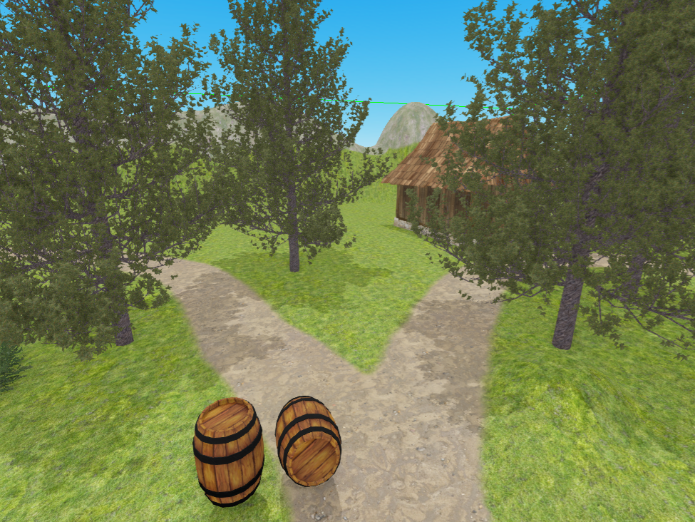
Basic concepts
There are few basic concepts that you should understand before trying to use terrains. This will help you to understand design decisions and potential use cases.
Heightmap
As it was already mentioned, terrain is a uniform grid where X and Z coordinates of cells have fixed values, while Y can change. In this case we can store only width, height and resolution numerical parameters to calculate X and Z coordinates, while Y is stored in a separate array which is then used to modify heights of cells. Such array is called heightmap.

Layers
Layer is a material + mask applied to terrain's mesh. Mask is a separate, greyscale texture that defines in which parts of the terrain the material should be visible or not. White pixels in the mask makes the material to be visible, black - completely transparent, everything between helps you to create smooth transitions between layers. Here's a simple example of multiple layers:

There are 3 layers: 1 - dirt, 2 - grass, 3 - rocks and grass. As you can see, there are smooth transitions between each layer, it is achieved by layer's mask.
Each layer uses separate material, which can be edited from respective property editor in the Inspector:
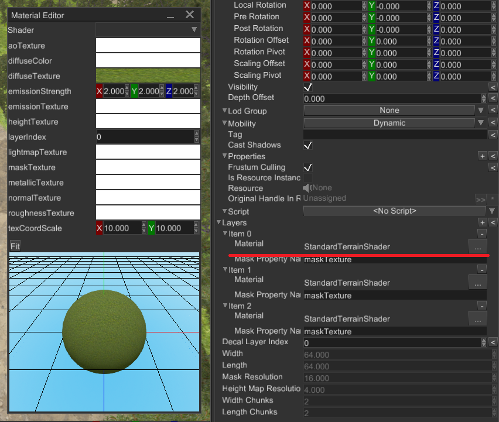
Creating terrain in the editor
You can create a terrain node by clicking Create -> Terrain. It will create a terrain with fixed width, height,
and resolution (see limitations). Once the terrain is created, select
it in the World Viewer and click on Hill icon on the toolbar. This will enable terrain editing, brush options panel
should also appear. See the picture below with all the steps:

The green rectangle on the terrain under the cursor represents current brush. You can edit brush options in the
Brush Options window:
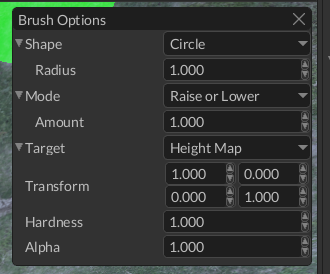
- Shape: Select a circular brush or a rectangular brush. When a circular brush is selected, a control to adjust its radius appears. When a rectangular brush is select, controls for its width and length appear. The size of the green rectangle changes to reflect the size of the brush based on these controls.
- Mode: Select the terrain editing operation that the brush should perform.
- Raise or Lower: Modifies the existing value by a fixed amount. When the number is positive, the value is
increased. When the number is negative, the value is decreased. When the brush target is "Height Map", this can be
to raise or lower the terrain. When the
Shiftkey is held at the start of a brush stroke, the number of raising or lowering is negated, so a raise operation becomes a lowering operation. - Assign Value: Replaces the existing value with a given value. For example, if you want to create a plateau with land of a specific height, you can select this mode and type in the height you want as the brush value.
- Flatten: Levels terrain by spreading the value of the terrain from point where you click across wherever you drag the brush. It works just like Assign Value except you do not need to specify the desired value because it is taken automatically from the value of the terrain where the brush stroke starts.
- Smooth: For each point of the terrain touched by the brush, replace that value with an average of the nearby values. This tends to diminish sharp transitions in terrain value.
- Raise or Lower: Modifies the existing value by a fixed amount. When the number is positive, the value is
increased. When the number is negative, the value is decreased. When the brush target is "Height Map", this can be
to raise or lower the terrain. When the
- Target: There are multiple aspects of terrain that can be edited by a brush, and this control allows you to select which one you will be editing. Setting it to "Height Map" causes the brush to change the terrain elevation. Setting it to "Layer Mask" causes it to change the transparency of the layer with a chosen index. Masks are always clamped to be between 0 and 1, regardless of what brush mode is selected, since 0 represents fully transparent and 1 represents the layer being fully opaque.
- Transform: This is a 2x2 matrix that is applied to the brush's shape, allowing linear transformations such as rotating a rectangular brush, or skewing, or stretching. For most purposes the identity matrix of \(\begin{bmatrix}1&0\\0&1\end{bmatrix}\) works well, since that is the default that applies no modification to the brush's shape. If the matrix is not invertable, then it will be ignored.
- Hardness: The effect of a brush does not need to be applied equally across its entire area. The hardness of a brush controls how much of a brush gets its full effect. When hardness is 0, only the exact center of the brush receives the full effect, while the rest of the brush fades from full effect to no effect at the edges. When hardness is 1 or greater, the entire brush gets the full effect. If the value is less than 0, then even the center of the brush does not receive the full effect.
- Alpha: The \(\alpha\) value linearlly interpolates between the current value of the terrain and the value that would be produced by the full effect of the brush. If \(v_0\) is the current value of a point on the terrain and and \(v_1\) is the full effect of the brush, then the actual effect that the brush will apply will be \((1 - \alpha) * v_0 + \alpha * v_1\). There is no requirement that \(\alpha\) must be between 0 and 1. Values less than 0 will invert the effect of the brush, while values greater than 1 will exaggerate the effect of the brush. Values close to 0 can be used to make fine adjustments by applying an effect incrementally across multiple brush strokes.
Each brush stroke is treated as an independent operation starting from when the mouse button is pressed and ending when the mouse button is released. Repeatedly dragging the mouse across the same area of terrain will not increase the effect of the brush as it is all part of the same brush stroke, but repeatedly pressing and releasing the mouse button will cause the brush's effect to be applied repeatedly since that is counted as multiple brush strokes.
Creating terrain from code
Terrain brushes can also be used to edit terrain from code by using fyrox::scene:terrain::Brush and fyrox::scene::terrain::BrushContext.
The Brush structure has fields for each of the brush options, and the BrushContext structure has methods for accepting a Brush and
applying it to a terrain. BrushContext allows you to start a new stroke, perform stamps and smears during the stroke, then end the stroke
to write the constructed brush stroke to the terrain. It is also possible to flush a partially finished stroke to the terrain, so that
a brush stroke may be animated across multiple frames instead of appearing on the terrain all at once.
Here is a list of methods provided by BrushContext:
#![allow(unused)] fn main() { fn start_stroke(&mut self, terrain: &Terrain, brush: Brush) }
Call this to choose the brush that will be used for the rest of the stroke. At this point the BrushContext records which textures the
terrain is using to represent the data for the given brush's target. and those textures are the ones that will finally be modified
when end_stroke is eventually called.
#![allow(unused)] fn main() { fn stamp(&mut self, terrain: &Terrain, position: Vector3<f32>) }
Call this to stamp the brush at a single point on the terrain. A stroke should already have been started, as this is potentially just one operation out of many that could make up a stroke.
The terrain is not modified; it is only being used to translate the the given position from world space to terrain texture space.
In order to actually see the results of this stamp in the terrain, flush or end_stroke must be called.
The y-coordinate of the position is ignored as the position is projected onto the terrain.
#![allow(unused)] fn main() { fn smear(&mut self, terrain: &Terrain, start: Vector3<f32>, end: Vector3<f32>) }
A smear is just like a stamp, except it continuously paints with the brush along a line from start to end.
Again, a stroke should already have been started in order to select the brush to paint with, and the results will not
appear immediately on the terrain.
#![allow(unused)] fn main() { fn flush(&mut self) }
Call this to force the terrain to update to include the modifications due to a partially completed brush stroke.
If a stroke is being drawn across multiple frames, it would make sense to call flush at the end of each frame.
The flush method does not require the terrain to be passed in because BrushContext already knows which textures
need to be modified in order to update the terrain.
#![allow(unused)] fn main() { fn end_stroke(&mut self) }
Call this to update the terrain to include the modifications due to the stroke, and clear all data for that stroke so that the context is ready to begin a new stroke.
#![allow(unused)] fn main() { fn shape(&mut self) -> &mut BrushShape }
This provides mutable access to the brush's shape, making it possible to change the shape without starting a new stroke.
#![allow(unused)] fn main() { fn hardness(&mut self) -> &mut f32 }
This provides mutable access to the brush's hardness, making it possible to change the hardness without starting a new stroke.
There are also similiar methods for changing the brush's alpha and mode in the middle of a stroke, but these are unlikely to serve
any practical use as brush strokes do not tend to react well to such changes. It is best to start a new stroke if a new brush mode
is needed. It is particularly not possible to change the brush's target in the middle of a stroke, because that would require
updating other details of the internal state of the BrushContext.
Here is an example of BrushContext in use:
#![allow(unused)] fn main() { fn setup_layer_material( material: &mut Material, resource_manager: ResourceManager, diffuse_texture: &str, normal_texture: &str, ) { material.bind( "diffuseTexture", Some(resource_manager.request::<Texture>(diffuse_texture)), ); material.bind( "normalTexture", Some(resource_manager.request::<Texture>(normal_texture)), ); material.set_property("texCoordScale", Vector2::new(10.0, 10.0)); } pub fn create_random_two_layer_terrain( graph: &mut Graph, resource_manager: &ResourceManager, ) -> Handle<Node> { let terrain = TerrainBuilder::new(BaseBuilder::new()) .with_layers(vec![ Layer { material: { let mut material = Material::standard_terrain(); setup_layer_material( &mut material, resource_manager.clone(), "examples/data/Grass_DiffuseColor.jpg", "examples/data/Grass_NormalColor.jpg", ); MaterialResource::new_ok(ResourceKind::Embedded, material) }, ..Default::default() }, Layer { material: { let mut material = Material::standard_terrain(); setup_layer_material( &mut material, resource_manager.clone(), "examples/data/Rock_DiffuseColor.jpg", "examples/data/Rock_Normal.jpg", ); MaterialResource::new_ok(ResourceKind::Embedded, material) }, ..Default::default() }, ]) .build(graph); let terrain_ref = graph[terrain].as_terrain_mut(); let mut context = BrushContext::default(); // Draw something on the terrain. for _ in 0..60 { let x = thread_rng().gen_range(4.0..60.00); let z = thread_rng().gen_range(4.0..60.00); let radius = thread_rng().gen_range(2.0..4.0); let height = thread_rng().gen_range(1.0..3.0); let tail_x = thread_rng().gen_range(-5.0..=5.0); let tail_z = thread_rng().gen_range(-5.0..=5.0); // Pull terrain. context.start_stroke( terrain_ref, Brush { shape: BrushShape::Circle { radius }, mode: BrushMode::Raise { amount: height }, target: BrushTarget::HeightMap, hardness: 0.0, ..Brush::default() }, ); context.stamp(terrain_ref, Vector3::new(x, 0.0, z)); *context.shape() = BrushShape::Circle { radius: radius * 0.5, }; context.smear( terrain_ref, Vector3::new(x, 0.0, z), Vector3::new(x + tail_x, 0.0, z + tail_z), ); context.end_stroke(); // Draw rock texture on top. context.start_stroke( terrain_ref, Brush { shape: BrushShape::Circle { radius }, mode: BrushMode::Assign { value: 1.0 }, target: BrushTarget::LayerMask { layer: 1 }, hardness: 0.0, ..Brush::default() }, ); context.stamp(terrain_ref, Vector3::new(x, 0.0, z)); *context.shape() = BrushShape::Circle { radius: radius * 0.5, }; context.smear( terrain_ref, Vector3::new(x, 0.0, z), Vector3::new(x + tail_x, 0.0, z + tail_z), ); context.end_stroke(); } terrain } }
As you can see there is quite a lot of code, ideally you should use editor all the times, because handling everything from code could be very tedious. The result of its execution (if all textures are set correctly) could be something like this (keep in mind that terrain will be random everytime you run the code):
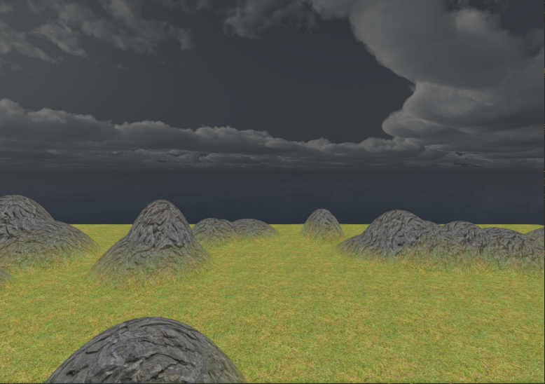
Physics
By default, terrains does not have respective physical body and shape, it should be added manually. Create a static rigid body node with a collider with Heightmap shape (learn more about colliders). Then attach the terrain to the rigid body. Keep in mind that terrain's origin differs from Heightmap rigid body, so you need to offset the terrain to match its physical representation. Enable physics visualization in editor settings to see physical shapes and move terrain. Now to move the terrain you should move the body, instead of the terrain (because of parent-child relations).
Performance
Terrain rendering complexity have linear dependency with the number of layers terrain have. Each layer forces the engine to re-render terrain's geometry with different textures and mask. Typical number of layers is from 4 to 8. For example, a terrain could have the following layers: dirt, grass, rock, snow. This is a relatively lightweight scheme. In any case, you should measure frame time to understand how each new layer affects performance in your case.
Chunking
Terrain itself does not define any geometry or rendering data, instead it uses one or more chunks for that purpose. Each
chunk could be considered as a "sub-terrain". You can "stack" any number of chunks from any side of the terrain. To do
that, you define a range of chunks along each axis. This is very useful if you need to extend your terrain in a particular
direction. Imagine that you've created a terrain with just one chunk (0..1 range on both axes), but suddenly you found
that you need to extend the terrain to add some new game locations. In this case you can change the range of chunks at
the desired axis. For instance, if you want to add a new location to the right from your single chunk, then you should
change width_chunks range to 0..2 and leave length_chunks as is (0..1). This way terrain will be extended, and
you can start shaping the new location.
Level-of-detail
Terrain has automatic LOD system, which means that the closest portions of it will be rendered with the highest possible quality (defined by the resolution of height map and masks), while the furthest portions will be rendered with the lowest quality. This effectively balances GPU load and allows you to render huge terrains with low overhead.
The main parameter that affects LOD system is block_size (Terrain::set_block_size), which defines size of the patch
that will be used for rendering. It is used to divide the size of the height map into a fixed set of blocks using
quad-tree algorithm.
Current implementation uses modified version of CDLOD algorithm without patch morphing. Apparently it is not needed, since bilinear filtration in vertex shader prevents seams to occur.
Current implementation makes it possible to render huge terrains (64x64 km) with 4096x4096 heightmap resolution in about a millisecond on average low-to-middle-end GPU.
Limitations and known issues
There is no way to cut holes in the terrain yet, it makes impossible to create caves. There is also no way to create ledges, use separate meshes to imitate this. See tracking issue for more info.
Camera node
Camera is a special scene node that allows you to "look" at your scene from any point and with any orientation. Currently, the engine supports only perspective cameras, which could be represented as a frustum volume. Everything that "intersects" with the frustum will be rendered.

How to create
An instance of camera node could be created using CameraBuilder:
#![allow(unused)] fn main() { fn create_camera(scene: &mut Scene) -> Handle<Node> { CameraBuilder::new(BaseBuilder::new()) // Set some properties. .with_fov(80.0f32.to_radians()) .with_z_far(256.0) .build(&mut scene.graph) } }
Orientation and position should be set in BaseBuilder as usual.
Projection modes
Projection mode defines how your scene will look like after rendering, there are two projection modes available.
Perspective
Perspective projection makes distant objects smaller and parallel lines converging when using it, it is the most common projection type for 3D games. By default, each camera uses perspective projection. It's defined by three parameters that describes frustum volume:
- Field of view angle
- Near clipping plane location
- Far clipping plane location
Here is a simple example of how to create a camera with perspective projection:
#![allow(unused)] fn main() { fn create_perspective_camera(graph: &mut Graph) -> Handle<Node> { CameraBuilder::new(BaseBuilder::new()) .with_projection(Projection::Perspective(PerspectiveProjection { // Keep in mind that field of view expressed in radians! fov: 60.0f32.to_radians(), z_near: 0.025, z_far: 1024.0, })) .build(graph) } }
Orthographic
Orthographic projection prevents parallel lines from converging, it does not affect object size with distance. If you're making 2D games or isometric 3D games, this is the projection mode you're looking for. Orthographic projection defined by three parameters:
- Vertical Size
- Near Clipping Plane
- Far Clipping Plane
Vertical size defines how large the "box" will be in vertical axis, horizontal size is derived from vertical size by multiplying vertical size with aspect ratio.
Here is a simple example of how to create a camera with orthographic projection:
#![allow(unused)] fn main() { fn create_orthographic_camera(graph: &mut Graph) -> Handle<Node> { CameraBuilder::new(BaseBuilder::new()) .with_projection(Projection::Orthographic(OrthographicProjection { vertical_size: 5.0, z_near: 0.025, z_far: 1024.0, })) .build(graph) } }
Performance
Each camera forces engine to re-render scene one more time, which can be very resource-intensive (both CPU and GPU) operation.
To reduce GPU load, try to keep the Far Clipping Plane at lowest possible values. For example, if you're making a game with closed environment (lots of corridors, small rooms, etc.) set the Far clipping Plane to max possible distance that can be "seen" in your game - if the largest thing is a corridor, then set the Far clipping Plane to slightly exceed the length. This will force the engine to clip everything that is out of bounds and do not draw such objects.
Skybox
Outdoor scenes usually have distant objects that can't be reached, these can be mountains, sky, distant forest, etc. such objects can be pre-rendered and then applied to a huge cube around camera, it will always be rendered first and will be the background of your scene. To create a Skybox and set it to a camera, you can use the following code:
#![allow(unused)] fn main() { }
Color grading look-up tables
Color grading Look-Up Tables (LUT) allows you to transform color space of your frame. Probably everyone saw the famous "mexican" movie effect when everything becomes yellow-ish when action takes place in Mexico, this is done via color grading LUT effect. When used wisely, it can significantly improve perception of your scene.
Here is the same scene having no color correction along with another case that has "mexico" color correction:
| Scene | Look-up-table |
|---|---|
 |  |
 |  |
To use color grading LUT you could do something like this:
#![allow(unused)] fn main() { fn create_camera_with_lut(scene: &mut Scene, resource_manager: ResourceManager) -> Handle<Node> { CameraBuilder::new(BaseBuilder::new()) .with_color_grading_enabled(true) .with_color_grading_lut( block_on(ColorGradingLut::new( resource_manager.request::<Texture>("path/to/lut.jpg"), )) .unwrap(), ) .build(&mut scene.graph) } }
Picking
In some games you may need to do mouse picking of objects in your scene. To do that, at first you need to somehow convert
a point on the screen to ray in the world. Camera has make_ray method exactly for that purpose:
#![allow(unused)] fn main() { fn make_picking_ray(camera: &Camera, point: Vector2<f32>, renderer: &Renderer) -> Ray { camera.make_ray(point, renderer.get_frame_bounds()) } }
The ray then can be used to perform a ray cast over physics entities. This is the simplest way of camera picking, and you should prefer it most of the time.
Advanced picking
Important: The following picking method is for advanced engine users only, if you don't know the math you should not use it.
If you know the math and don't want to create physical entities, you can use this ray to perform manual ray intersection check:
#![allow(unused)] fn main() { fn read_vertex_position(data: &SurfaceData, i: u32) -> Option<Vector3<f32>> { data.vertex_buffer .get(i as usize) .and_then(|v| v.read_3_f32(VertexAttributeUsage::Position).ok()) } fn transform_vertex(vertex: Vector3<f32>, transform: &Matrix4<f32>) -> Vector3<f32> { transform.transform_point(&Point3::from(vertex)).coords } fn read_triangle( data: &SurfaceData, triangle: &TriangleDefinition, transform: &Matrix4<f32>, ) -> Option<[Vector3<f32>; 3]> { let a = transform_vertex(read_vertex_position(data, triangle[0])?, transform); let b = transform_vertex(read_vertex_position(data, triangle[1])?, transform); let c = transform_vertex(read_vertex_position(data, triangle[2])?, transform); Some([a, b, c]) } pub fn precise_ray_test( node: &Node, ray: &Ray, ignore_back_faces: bool, ) -> Option<(f32, Vector3<f32>)> { let mut closest_distance = f32::MAX; let mut closest_point = None; if let Some(mesh) = node.component_ref::<Mesh>() { let transform = mesh.global_transform(); for surface in mesh.surfaces().iter() { let data = surface.data(); let data = data.data_ref(); for triangle in data .geometry_buffer .iter() .filter_map(|t| read_triangle(&data, t, &transform)) { if ignore_back_faces { // If normal of the triangle is facing in the same direction as ray's direction, // then we skip such triangle. let normal = (triangle[1] - triangle[0]).cross(&(triangle[2] - triangle[0])); if normal.dot(&ray.dir) >= 0.0 { continue; } } if let Some(pt) = ray.triangle_intersection_point(&triangle) { let distance = ray.origin.sqr_distance(&pt); if distance < closest_distance { closest_distance = distance; closest_point = Some(pt); } } } } } closest_point.map(|pt| (closest_distance, pt)) } }
precise_ray_test is what you need, it performs precise intersection check with geometry of a mesh node. It returns a
tuple of the closest distance and the closest intersection point.
Exposure and HDR
(WIP)
Decal node
Decal nodes allow you to "project" a texture onto your scene within some specific bounds. It is widely used for bullet holes, blood splatter, dirt, cracks and so on. Here is the example of the decal applied to the scene:

The rust marks are applied on existing geometry of the scene by projecting a rust texture in specific direction.
How to create
A decal instance can be created using DecalBuilder:
#![allow(unused)] fn main() { fn create_decal(scene: &mut Scene, resource_manager: ResourceManager) -> Handle<Node> { DecalBuilder::new(BaseBuilder::new()) .with_diffuse_texture(resource_manager.request::<Texture>("path/to/your/decal.png")) .build(&mut scene.graph) } }
Textures
You can specify which textures the decal will be projecting, currently there is only diffuse and normal maps supported.
Rendering
Currently, the engine supports only deferred decals, which means that decals modify the information stored in G-Buffer. This fact means that decals will be lit correctly with other geometry in the scene. However, if you have some objects in your scene that uses forward rendering path, your decals won't be applied to them.
Bounds
Decal uses Object-Oriented Bounding Box (OOB) to determine pixels on which decal's textures will be projected, everything that got into OOB will be covered. Exact bounds can be set by tweaking local transform of a decal. If you want your decal to be larger, set its scale to some large value. To position a decal - use local position, to rotate - local rotation.
A decal defines a cube that projects a texture on every pixel of a scene that got into the cube. Exact cube size is defined by decal's local scale. For example, if you have a decal with scale of (1.0, 2.0, 0.1) then the size of the cube (in local coordinates) will be width = 1.0, height = 2.0 and depth = 0.1. The decal can be rotated as any other scene node. Its final size and orientation are defined by the chain of transformations of parent nodes.
Layers
There are situations when you want to prevent some geometry from being covered with a decal, to do that the engine offers a concept of layers. A decal will be applied to a geometry if and only if they have matching layer index. This allows you to create environment damage decals, and they won't affect dynamic objects since they're located on different layers.
Performance
Current implementation of decals is relatively cheap, this allows you to create many decals on scene. However, you should keep the number of decals at a reasonable level.
Rectangle node
Rectangle is the simplest "2D" node, it can be used to create "2D" graphics. 2D is in quotes here because the node is actually a 3D node, like everything else in the engine. Here is an example scene made with the rectangle nodes and an orthographic camera:
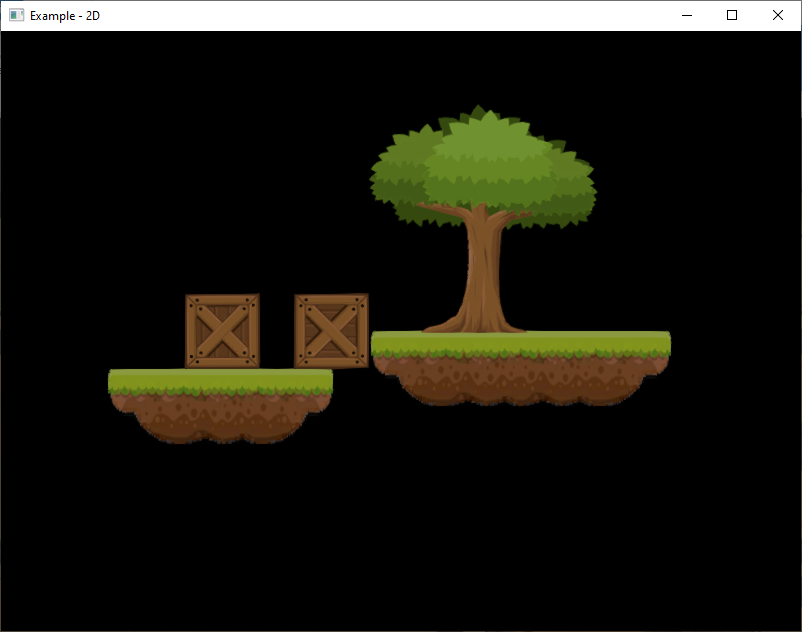
As you can see it is a good basis for 2D games.
How to create
Use the RectangleBuilder to create Rectangle nodes:
#![allow(unused)] fn main() { fn create_rect(graph: &mut Graph, resource_manager: ResourceManager) -> Handle<Node> { let mut material = Material::standard_2d(); material.bind( "diffuseTexture", Some(resource_manager.request::<Texture>("path/to/your_texture.jpg")), ); // Material resources can be shared across multiple rectangles (via simple `clone`). // This significantly improves performance if you have multiple rectangles with the // same material. let material_resource = MaterialResource::new_ok(ResourceKind::Embedded, material); RectangleBuilder::new( BaseBuilder::new().with_local_transform( TransformBuilder::new() // Size of the rectangle is defined only by scale. .with_local_scale(Vector3::new(0.4, 0.2, 1.0)) .build(), ), ) .with_color(Color::RED) .with_material(material_resource) .build(graph) } }
Specifying image portion for rendering
By default, Rectangle node uses entire image for rendering, but for some applications it is not enough. For example,
you may want to use sprite sheets to animate your 2D entities. In this case you need to be able to use only portion
of an image. It is possible to do by using set_uv_rect method of the Rectangle node. Here's an example of setting
right-top quarter of an image to be used by a Rectangle node:
#![allow(unused)] fn main() { fn set_2nd_quarter_image_portion(rectangle: &mut Rectangle) { rectangle.set_uv_rect(Rect::new( 0.5, // Offset by 50% to the right 0.0, // No need to offset to bottom. 0.5, // Use half (50%) of width and height 0.5, )); } }
Keep in mind that every part of uv rectangle is proportional. For example 0.5 means 50%, 1.5 = 150% and so on. If width or height is exceeding 1.0 and the texture being used is set to Wrapping mode at respective axis, the image will tile across axes.
Animation
See Sprite Animation chapter for more info.
Performance
Rectangles use specialized renderer that is heavily optimized to render tons of rectangles at once, so you can use rectangles almost for everything in 2D games.
Tile Map
Tile map is a 2D "image", made out of a small blocks called tiles. Tile maps used in 2D games to build game worlds quickly and easily. An example of a tile map could be something like this:
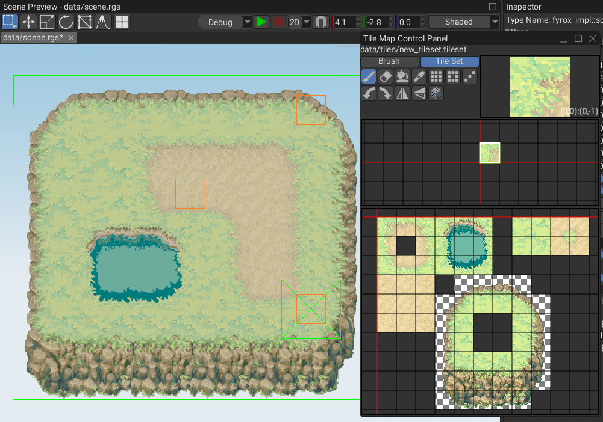
How to Create
A tile map comes in two pieces: A TileMap node that can be added to a scene, and a TileSet resource that holds the
data required to render each tile.
Tiles in a tile set are organized into pages. Each page has a position on a 2D grid along with all the other pages in the
tile set, and each page contains another 2D grid where the tiles are arranged. Pages and tiles can be positioned anywhere
on their grids according to whatever organizational principles you please. The chosen position for each tile becomes its
handle, called a TileDefinitionHandle, and this handle is what will be stored in the tile map to determine how to render
the tiles.
Here is an example handle: (0,2):(-3,5). This handle means that the tile is on the page at coordinates
(0,2) and the tile data is at (-3,5) within that page's grid. Once a handle like this has been put into a tile map cell,
the tile map rendering process will look for a page at that position and a tile at that position within the page.
If it fails to find a page at that position, or the tile position is empty in the page, then a pink texture will be
rendered to indicate a missing tile texture. Be aware of this if you are considering changing the position of
pages or tiles in the tile set.
Warning: If you change the position of a page, tile maps will not be automatically updated to find the page at its new position. It may be best to choose the positions of pages carefully and never change them.
Tile set pages come in multiple varieties depending on what data will be stored in each grid cell of the page.
-
Atlas: An atlas page renders all of its tiles using a single shared material that acts as a sprite sheet. The material starts at the upper-left corner of tile (0,-1) and extends down into negative-y cells and right into positive-x cells. Any tiles that you add to an atlas page will be rendered with their UV-coordinates based on their position on the page relative to the material.
-
Freeform: A freeform page is a collection of tiles with their own independent materials and UV-coordinate positions. Unlike an atlas page, the positions of tiles in a freeform page does not matter, but each tile needs to have its material and UV-coordinates specified manually. Tile UV-coordinates are measured in pixels of the texture, not from 0.0 to 1.0.
-
Transform: A transform set page stores handles to tiles on other pages and represents how tiles may be flipped or rotated. The page is divided into 2x4 sets of cells. Within each set, the left 2x2 cells hold tiles that may be transformed into each other by 90-degree rotations. The right 2x2 cells represent same tiles horizontally mirrored. The tile set resource can search its transform pages to convert any handle into the handle of a flipped or rotated version of the tile.
-
Animation: An animation page stores handles to tiles on other pages and represents how tiles change their appearance over time. Each animation on the page is represented by a horizontal sequence of tile handles. Any tile whose handle is on an animation page becomes an animated tile, and its appearance will cycle from left-to-right along its row until it comes to an empty cell, then it will will start again from the first non-empty cell to its left. When tiles animate through an animation page, the tile map data does not actually change over time; only the rendering changes.
If the same handle appears in more than one cell on an animation page, then the animation starts at the first occurrence of the handle, when reading the page from left-to-right and top-to-bottom, as one would read a book.
Once we have a tile set resource, we can create a tile map node and set its tile_set field to point to our resource.
Then we can fill the tile map node with the handles for whatever tiles we want to render.
As usual, there are two major ways of creating a tile map - via code or via the editor. Code-based approach is ideal for procedural worlds, while the editor-based approach is good for hand-crafted worlds.
Code
The following example creates a simple tile map with two tile types - grass and stone. It creates stone foundation and lays grass on top of it.
#![allow(unused)] fn main() { fn create_tile_map(graph: &mut Graph) -> Handle<Node> { // Each tile could have its own material, for simplicity it is just a standard 2D material. let material = MaterialResource::new_ok(ResourceKind::Embedded, Material::standard_tile()); // Create a tile set - it is a data source for the tile map. Tile map will reference the tiles // stored in the tile set by handles. We'll create two tile types with different colors. // In order to create a tile set, we must first create a tile set page. let mut tiles = TileGridMap::default(); // Now we decide where we want our tiles to live on that page by creating TileDefinitionHandles for our tiles. // Each tile definition handle has four numbers: the (x,y) of the page, and the (x,y) of the tile within the page. let stone_tile = TileDefinitionHandle::new(0, 0, 0, 0); let grass_tile = TileDefinitionHandle::new(0, 0, 1, 0); // Now we insert tile data for each tile in our new page. tiles.insert( stone_tile.tile(), TileDefinition { material_bounds: TileMaterialBounds { material: material.clone(), bounds: TileBounds { left_top_corner: Vector2::new(0, 0), right_top_corner: Vector2::new(16, 0), left_bottom_corner: Vector2::new(0, 16), right_bottom_corner: Vector2::new(16, 16), }, }, data: TileData { color: Color::BROWN, properties: FxHashMap::default(), colliders: FxHashMap::default(), }, }, ); tiles.insert( grass_tile.tile(), TileDefinition { material_bounds: TileMaterialBounds { material: material.clone(), bounds: TileBounds { left_top_corner: Vector2::new(0, 0), right_top_corner: Vector2::new(16, 0), left_bottom_corner: Vector2::new(0, 16), right_bottom_corner: Vector2::new(16, 16), }, }, data: TileData { color: Color::GREEN, properties: FxHashMap::default(), colliders: FxHashMap::default(), }, }, ); // Finish creating the page. let source = TileSetPageSource::Freeform(tiles); let page = TileSetPage { // The icon is the handle of a tile that would represent the page in the editor. icon: stone_tile, // The tiles that we've created. source, }; // Finally we create our tile set and add our page to it at position (0,0). let mut tile_set = TileSet::default(); tile_set.insert_page(Vector2::new(0, 0), page); let tile_set = TileSetResource::new_ok(ResourceKind::Embedded, tile_set); // This positions of all the tiles in our tile map using their TileDefinitionHandle // to find the tiles in the tile set. let mut tiles = Tiles::default(); // Create stone foundation. for x in 0..10 { for y in 0..2 { tiles.insert(Vector2::new(x, y), stone_tile); } } // Add grass on top of it. for x in 0..10 { tiles.insert(Vector2::new(x, 2), grass_tile); } // Finally create the tile map. TileMapBuilder::new(BaseBuilder::new()) .with_tile_set(tile_set) .with_tiles(&tiles) .build(graph) } }
Please refer to the API docs for more info about each method.
Editor
Editor-based approach requires a bit of preparation, yet it is still simple. First you need a tile set, something like this:
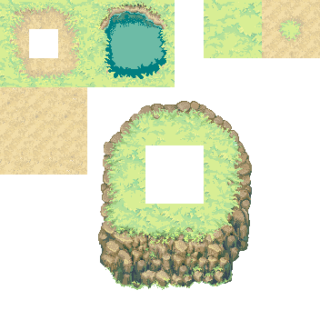
It is a 11x11 sprite sheet for a top-down game. Now you need to create a tile set resource from this tile set. Navigate
the asset browser and click on + button near the search bar. Select TileSet resource and click OK. Find the resource
you've just created in the asset browser, then double-click on it to open the tile set editor.
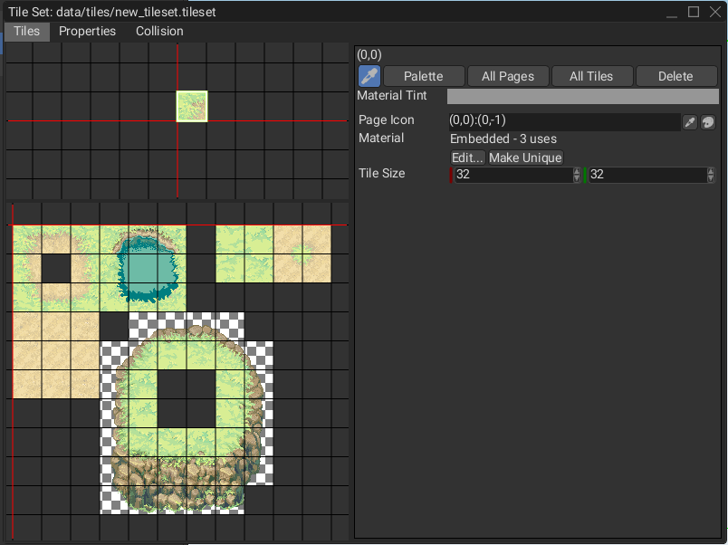
Creating an Atlas Page
Now it is time to create the first page for our new tile set. Click anywhere in the upper grid to select the position for the page, then click the "Tile Atlas" button under "Create New Page" on the right side of the editor.
Because the selected page position is no longer empty, the "Create New Page" menu is replaced by an inspector for the properties of the new atlas page. Here you can edit the material for the tiles and change the size of the tiles as measured in texture pixels. These properties can be changed at any time, and the resulting changes will affect all the tiles of the page.
Once you have set your sprite sheet as the texture for the material, the texture will become visible in the lower grid of the editor. Use the scroll wheel to zoom and pan if necessary to see all of it. This is only a preview of what the tiles might look like; the tiles have not yet been created, and the texture is faded to distinguish it from actual tiles. You can adjust the fade using the "Material Tint" color field in the top-right of the editor. This has no affect on the tile set resource; it is purely cosmetic within the editor.
To actually create some tiles, left-click and drag on the lower grid to select whatever areas of the material should have tiles. Holding shift will allow you to select multiple areas at once. Once you are satisfied with your selection, press the "Create Tile" button on the right side of the editor. This will fill any empty selected cells with new tiles, covering the faded material preview with the full-color of actual tiles.
Creating a Freeform Page
Select any empty cell in the upper grid to cause the "Create New Page" menu to appear. Click "Free Tiles" button to start creating freeform tiles on your tile set's new page. Unlike the atlas page, a freeform page has very few properties to edit in the inspector. This is because each tile has its own material and size fields.

Select any empty cell in the lower grid and click "Create Tile" to begin editing the properties for a new freeform tile. At the top is a field for choosing the material for the tile. It will initially be a blank material with the standard tile shader. Below that are four pairs of coordinates that represent for points on the material's texture as measured in texture pixels. The left-top point represents the left-top corner of the tile, and so on around all four corners of the tile.
Below the tile corners are four buttons for performing flips and rotations on the corner coordinates. By changing the coordinates of the corners of the tile, the tile can be rotated by 90 degrees and flipped horizontally and vertically.
Next there is the tile's color which can be used to apply tinting or transparency to the tile.
It is also possible to add tiles to a freeform page by painting them with tools on the Tile Map Control Panel which will be discussed later.
Creating a Transform Page
Once you have prepared a library of tiles with your tile set, you may want to specify which tiles are mirrored or rotated versions of other tiles. This will allow the tile set to produce a flipped or rotated version of a tile just by giving it the handle of the tile and the desired transformation. Start by selecting an empty page cell and clicking "Transform" under "Create New Page."
In the lower grid area you should see that the cells have been divided into 2x4 groups. Each cell of these groups can store
a TileDefinitionHandle and the eight handles together will specify all possible combinations of flips and 90-degree rotations
that may be needed for a tile. The left 2x2 tiles are supposed to be a horizontal reflection of the right 2x2 tiles,
and within each 2x2 the tiles are supposed to rotate as you look clockwise or counter-clockwise around the square, as illustrated below.
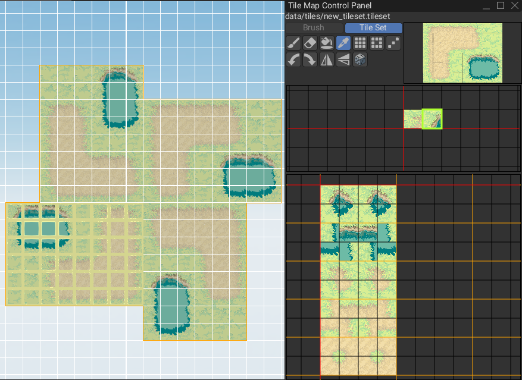
In order to fill this page with tile handles, click the "Palette" button in the upper-right to open the "Tile Map Control Panel" window, if it is not already open. This is the same window that you will use to edit a tile map, and so it has tools designed for selecting tile handles and putting them wherever you want them. The panel should already be showing the grid of pages from your tile set. If the panel is showing something else, then find your tile set in the asset browser and drag it onto the panel.
Use the panel to select a page from your tile set, and then select a tile that you want to put into your transform page. Click the button with the paint brush icon to activate the brush tool, then click in the tile set editor to paint the handle for the selected tile into a cell of the transform page. The tools available for painting, moving, copying, and deleting tile handles will be discussed in more detail later.
Creating an Animation Page
In order to make your tiles move over time, first create a sequence of animation frames for your tile, and make a tile for each from using an atlas page or a freeform page. Now we are ready to create an animation page.

While the animation page is selected, choose the frame rate for animations on this page, measured in frames per second. All animations on the same page share the same frame rate.
Editing an animation page is just like editing a transform page, but instead of organizing the tile handles in groups of eight, we are creating horizontal sequences of tiles. These sequences can start and end anywhere on the page, so long as there is an empty cell immediately to the left and right of the sequence to indicate where the sequence begins and ends. The editor will draw a mark in the empty cells to confirm where the animation starts and ends. When an animation reaches the end of the sequence it automatically repeats.
As soon as you have finished making your animation page, your tile set will already be animating. The editor may not draw frames as smoothly as a running game, so put some animated tiles in your tile map and then run your game to see the full effect of the animation.
Creating the Tile Map Node
Now we have the tile set, and we can start creating a tile map using it. Click Create -> 2D -> Tile Map and you should
see something like this:

If you look closely, the editor warns us about a missing tile set. Find the tile set you've just made and drag'n'drop it
from the asset browser to the Tile Set field in the inspector.
Tile Map Brush
There's one more step before we start editing the tile map—we may want a brush to paint on the tile map.
Click + button in the asset browser and select TileMapBrush, set a name for it and click OK.
Now select the tile map scene node and drag'n'drop the brush you've just created to "Active Brush" property.
This will make it the default brush whenever you edit this tile map node.
Double-click the brush asset in the asset browser to open the tile set editor again. This time the editor will be in brush-editing mode, which is simpler because a brush has only one kind of page and it has no tabs for properties or collision. The purpose of a brush is just to create convenient arrangements of tile handles from some tile set to streamline the process of tile map editing.
Drag the tile set asset from the asset browser into the "Tile Set" field in the upper-right of the tile set editor to store a reference to the tile set in the brush asset. The brush needs to know which tile set its tile handles refer to.
Click some empty cell in the upper grid of the editor and then click "Add Page" to add your first page to the brush.
Next, press the "Palette" button to open the Tile Map Control Panel so that you can paint some tile handles into the new brush. Initially the control panel will show the tiles and pages of the brush you are currently editing, which is no help when the brush is empty, so click the "Tile Set" button in the control panel to switch to showing the pages and tiles of the tile set. Select some tiles and paint them into the brush in whatever arrangement is most convenient for editing.
Unlike a tile set resource, the content of a brush resource is only used in the editor, so you can re-arrange the pages and tiles of your brush or even delete your brush without any consequences for your tile map or for the running game. While you can draw tiles to the tile map directly from the tile set, using a brush offers far more flexibility in how you arrange your tiles, allowing you to create multiple copies of tiles and arrange tiles in convient groups that gather your most-often-used tiles.
At this point everything is ready for painting. Select the tile map node and click tile map interaction mode button at the top of the Scene Preview window. You should now see the tile map grid in the Scene Preview. The Tile Map Control Panel should automatically open if it is not already open, and it should be showing the pages and tiles of your brush.

Select some tiles on the control panel and start drawing:

Drawing Tools
There are number of tools that could be useful while editing tile maps when in the tile map interaction mode.
Brush Tool

The brush tool takes whatever tiles are selected and puts the handles for those tiles wherever you click on the selected tile map. The selected tiles are called the stamp, and the stamp will be used in one way or another by each of the drawing tools. You can select any number of tiles and their handles will be drawn in the same relative positions where you click, or you can use the flip and rotation buttons to flip and rotate the stamp before drawing it. The preview area of the Tile Map Control Panel shows approximately what the tiles should look like when they are drawn.
Erase Tool
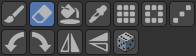
Erases tiles using the shape of the current stamp. Activate it using the 2 key or by clicking on the
button with eraser icon.
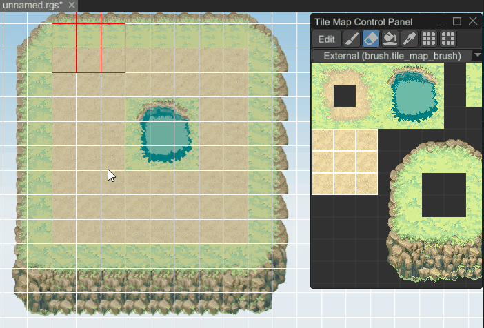
Flood Fill Tool

Fills a region with the same tile kind (or empty space) using the tiles of the current stamp. Activate it using the button with paint bucket icon.
Unlike the other tools, the flood fill tool is not implemented for use in the Tile Set Editor, so in the Tile Set Editor the flood tool will just act like the brush tool.

Pick Tool
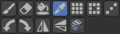
Picks a rectangular region of tiles from the tile map itself and turns them into the current stamp.
Hold shift to add additional rectangular regions to the stamp.
Activate it using the 1 key or by clicking the button with pipette icon.
Hold alt to drag the currently selected tiles and move them to a different location in the tile map, or tile set editor page. You can also use this to change the position of a page in the tile set editor, but beware that the position of a tile set page is part of a tile's handle, so moving a page can invalidate any handle that refers to a tile on that page. Handles are not destroyed when they are invalidated this way; they merely fail to render correctly until a page is added to the tile set with a tile where the handle is expecting to find tile data.
Rectangular Fill Tool

Fills a rectangular region with the tiles from the current stamp. It tiles the given region using the
tiles from current stamp. Could be activated using 3 key or by clicking on the button with the tiles icon.
To randomize the order of the tiles within the rectangle, toggle the on the dice button.

Nine Slice Tool
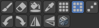
Fills a rectangular region using a rectangluer stamp divided into nine sections: four corners, four sides, and the center. The corners of the stamp will be placed at the corners of the selected region. The sides of the stamp will fill the sides of the selected reation, and the center of the stamp will fill the center of the selected region.
To randomize the order of the tiles within the rectangle, toggle the on the dice button.
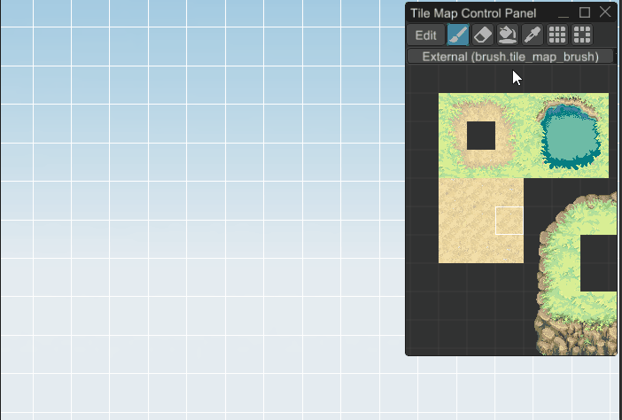
Line Tool

Drag the mouse from one cell to another to draw a line of tiles between the two cells using the tiles of the current brush.
Physics
Tile maps support physics for tiles, if collision shape data is included in the tile set. Start by opening the tile set editor, then click on the "Collison" tab at the top of the window. This will allow you to edit the list of collision layers of the tile set. Each layer allows a collision shape to be added to the tiles, so with multiple layers a tile may have multiple collison shapes.
Each layer has a name and a color, and in code it can be identified by a UUID. The color is cosmetic, and controls how the shapes on that layer appear when they are visible. The name is used to identify the layer for a 2D rigid body.
There are currently three different ways to set the collision shape for each tile:
-
None: The tile has no collision shape, the default.
-
Full: The tile's full square is covered by a collision shape.
-
Custom: The user supplies a list of triangles to construct a collision shape.
In code, custom collision shapes are created using a fyrox::scene::tilemap::CustomTileCollider which is a simple struct like so:
#![allow(unused)] fn main() { pub struct CustomTileCollider { /// The vertices of the triangles, with the boundaries of the tile being between (0,0) and (1,1). pub vertices: Vec<Vector2<f32>>, /// The indices of the vertices of each triangle pub triangles: Vec<TriangleDefinition>, } }
To create a custom tile collider in the editor, it is currently required that the user manually types in the information as a list of vertices and triangle indices, such as "(0,0) (1,1) (1,0) [0,1,2]". This would create a triangle covering the bottom right half of the tile. The parentheses and brackets are optional and are ignored; only the numbers and commas are parsed to understand the user's intended triangles.
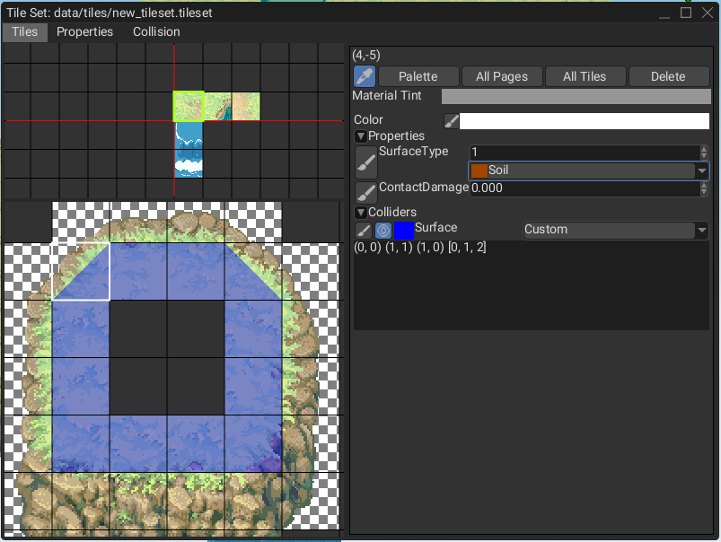
Click the eye button next to the collision layer to toggle visibility of collision shapes for that layer. Collisions shapes will be drawn over the tiles in the color you have chosen for that collision layer, so it is best to choose an alpha value with some transparency.
Adding a 2D Rigid Body
Enable physics for a tile map by using the collider shape called TileMap and specifying the name of the layer.
In code it could be done something like this:
#![allow(unused)] fn main() { fn add_tile_map_physics(tile_map: Handle<Node>, graph: &mut Graph) { // Create a new collider with tile map shape. let collider = ColliderBuilder::new(BaseBuilder::new()) .with_shape(ColliderShape::TileMap(TileMapShape { tile_map: GeometrySource(tile_map), layer_name: "MainColliders".into(), })) .build(graph); // Create a static rigid body with the tile map collider. let rigid_body = RigidBodyBuilder::new(BaseBuilder::new().with_children(&[collider])) .with_body_type(RigidBodyType::Static) .build(graph); } }
In the editor it could be done by creating a static 2D rigid body with a 2D collider that has the TileMap shape.
Give the shape the tile map and the name of the collision layer that the rigid body is supposed to represent.
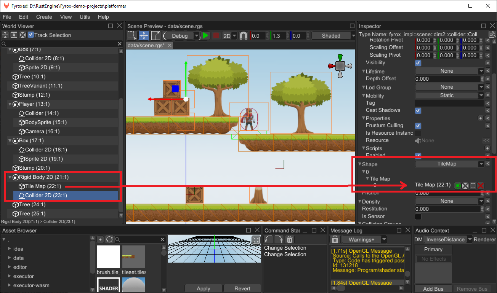
Layers
Tile map does not support any layers on its own, but layers can be added very easily by simply creating another tile map with its own tile set and shifting this new layer by Z axis towards camera by some small value.
Tile Properties
Tile set could contain custom properties for each tile, these properties could be used to attach additional information to the tiles in your game. This could include surface type (water, lava, dirt, etc.), physics properties (friction, restitution, etc.) and any other you need.
In the tile set editor, create properties using the "Properties" tab which gives you access to a list of property layers. Each property layer has a data type, and the type must be chosen when the layer is created, since changing the type of an already existing layer could cause tiles to have the wrong type of value for the property.

Each property may also have a list of pre-defined values. Each pre-defined value has a name and a color to help the user visualize which tiles have that value for the property and to help keep track of the meaning of that value. Once a property has been created in the Properties tab, the value for that property can be set for each tile in the Tiles tab.
In code, properties can be created, set, and accessed like this:
#![allow(unused)] fn main() { const SOIL: i32 = 1; const SLIME: i32 = 2; const SURFACE_TYPE_UUID: Uuid = uuid!("a70a754b-eed5-4e60-bf8a-3239f0b6004b"); fn create_tile_map_with_props(graph: &mut Graph) { let material = MaterialResource::new_ok(ResourceKind::Embedded, Material::standard_2d()); let mut tiles = TileGridMap::default(); let stone_tile = TileDefinitionHandle::new(0, 0, 0, 0); let grass_tile = TileDefinitionHandle::new(0, 0, 1, 0); tiles.insert( stone_tile.tile(), TileDefinition { material_bounds: TileMaterialBounds { material: material.clone(), bounds: TileBounds { left_top_corner: Vector2::new(0, 0), right_top_corner: Vector2::new(16, 0), left_bottom_corner: Vector2::new(0, 16), right_bottom_corner: Vector2::new(16, 16), }, }, data: TileData { color: Color::BROWN, properties: [(SURFACE_TYPE_UUID, TileSetPropertyValue::I32(SLIME))] .into_iter() .collect(), colliders: FxHashMap::default(), }, }, ); tiles.insert( grass_tile.tile(), TileDefinition { material_bounds: TileMaterialBounds { material: material.clone(), bounds: TileBounds { left_top_corner: Vector2::new(0, 0), right_top_corner: Vector2::new(16, 0), left_bottom_corner: Vector2::new(0, 16), right_bottom_corner: Vector2::new(16, 16), }, }, data: TileData { color: Color::GREEN, properties: [(SURFACE_TYPE_UUID, TileSetPropertyValue::I32(SOIL))] .into_iter() .collect(), colliders: FxHashMap::default(), }, }, ); let source = TileSetPageSource::Freeform(tiles); let page = TileSetPage { icon: TileDefinitionHandle::new(0, 0, 0, 0), source, }; let mut tile_set = TileSet::default(); tile_set.insert_page(Vector2::new(0, 0), page); tile_set.properties.push(TileSetPropertyLayer { name: "SurfaceType".into(), uuid: SURFACE_TYPE_UUID, prop_type: TileSetPropertyType::F32, named_values: Vec::default(), }); let tile_set = TileSetResource::new_ok(ResourceKind::Embedded, tile_set); // .. } fn calculate_speed_factor(tile_map: &TileMap, player_position: Vector3<f32>) -> f32 { let grid_position = tile_map.world_to_grid(player_position); match tile_map.tile_property_value(grid_position, SURFACE_TYPE_UUID) { Ok(SOIL) => 1.0, Ok(SLIME) => 0.7, Ok(_) => { Log::err("Unknown surface type"); 1.0 } // See fyrox::scene::tilemap::TilePropertyError for a list of possible errors. Err(err) => { Log::err(err.to_string()); 1.0 } } } }
Here we have two types of tiles - soil and slime, soil does not have any effect on player's movement speed, while the slime slows down the player by 30%. This code does not actually use any physical contact information and just uses tile position, but it could be fixed pretty easily - supply physical contact position to it, and it will return correct results.
Autotiling
An advanced feature of tile map brushes is the ability to create macros that can automate some aspects of tile map editing. These macros include Autotile and Wave Function Collapse.
The Autotile Macro
To make a tile map look more natural, there will often be tiles that seamlessly blend with their neighboring tiles, and many versions of a tile may be created depending on its which neighbors it is to be used with. A set of tiles that represent various versions of the same tile for this purpose is sometimes called a terrain, and each tile in a terrain will have a pattern which specifies which other tiles it may be adjacent to when creating a seamless tile map.
A simple case is when a tile set has just two terrains, such as land and water. In this case each land tile may have a water along its edges depending on whether there is a water tile in each of the eight directions. If there is no water in a direction, then the land tile can smoothly blend with the land tile in that direction. In order to have land tiles that account for both possibilities in all eight directions, 47 land tiles are required.
Here is a template that illustrates the 47 required tiles:

And here is an example tile set created using the above template:
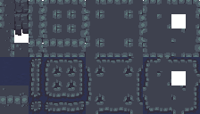
Even more tiles are required if three or more different terrains are involved. Selecting the right tile from such large tile sets can be time-consuming for an artist while editing a tile map unless we automate the task.
The Autotile macro can search the tile set to automatically find the right tile for any terrain, but first we must specify the pattern for every tile in the terrain. To do this we need a nine-slice property in the tile set. A nine-slice property gives every tile a 3x3 array of 8-bit values, and this array will be the tile's pattern that determines which other tiles it may be adjacent to.
The center of the 3x3 array is a number that represents the tile's terrain. Every tile with the same center value is considered to be part of the same terrain. The default value of 0 is treated specially and any tile with a 0 value is not part of any terrain and will be ignored by the autotiler.
The surrounding eight values in the 3x3 array are called peering bits because they specify which neighbors this tile may be adjancent to. Only neighbors with the same peering bits along the matching edge may be adjacent to this tile.
The 3x3 pattern with zeroes in every cell is reserved to represent the empty tile. When a peering bit is 0, that indicates that this tile may be adjacent to an empty tile in that that direction.

Named values can be used to make it easier to remember the meaning of each value in the 3x3 grid.
Even though the center value is not part of the process of determining whether to two tiles may be adjacent, it is important that the center value matches the peering bits when appropriate because the autotiler compares the center value against the surrounding peering bits in its heuristic to decide which tile it will choose. The autotiler prioritizes choosing tiles where more peering bits are equal to the center value.
This heuristic is important because tiles like this technically match along their shared edge:

Because the right side of the left pattern is all 2s and the left side of the right pattern is all 2s, the autotiler might choose these two tiles to be adjacent to each other, but since these tiles are in the 1 terrain, the heuristic will cause the autotiler to prefer patterns with more 1s and avoid creating unnecessary seams.
Now that we have a nine-slice property to store our patterns and we understand what values should go in each tile's pattern, we can use the tile set editor to fill in the patterns for each tile.

Select one of the tiles in the terrain, then go to the property and click the brush tool beside the property. This puts the tile set editor into property drawing mode and allows you to paint property values onto tile tiles. Enter the number you wish to draw in the property field, then click and drag the mouse on the tiles to apply that value to any cell of any tile.
If you do not already have a float property to represent the frequency of each tile, you may want to add one because the autotiler can optionally use that property when it is forced to randomly choose a tile. The autotiler is intended to deterministically choose the best tile in any situation, but when two tiles share exactly the same pattern, the autotiler will use randomness to pick between the tiles.
Once the tile set is ready, all that remains is to add an autotile macro to the tile map's brush. Open the brush in the tile set editor and switch to the "Macros" tab.

Click the "Autotile" button to add an autotile macro to the brush's list of macros. On the right side you will see the macro's name field and the settings that control how the macro will modify your tile map drawing operations. Choose a name for the macro, as this may help later.
Set the pattern property to whichever nine-slice property you used to store the patterns using the dropdown list. If the dropdown list is empty, go back to the "Tiles" tab and ensure that the brush is set to use the correct tile set.
You may choose to leave the frequency property as "None." In that case, all tiles will be assumed to have equal frequency, just as if you gave them all a frequency of 1.0.
Finally, return to the "Tiles" tab and add some terrain tiles alongside whatever normal tiles you may be using. Add a tile from the tile set or select an existing tile, then find the name of the autotile macro that you created in the tile properties on the right. Click the "+" button to add this tile to the macro.
Once the tile is added to the macro, the macro will know to activate whenever you attempt to draw this tile into the tile map. As soon as the "+" is pressed, additional settings will appear for the tile: "Terrain", "Adjacent", and "Diagonal".
"Terrain" is the center value of the pattern of the tiles you wish to draw. Whenever you draw with this tile, the autotile macro will attempt to replace the tile with the best available tile from the tile set with this center value. If no appropriate tile is available, then the autotiler will not replace the tile. If "Terrain" is set to 0, the autotiler will attempt to replace the tile you draw with the empty tile.
The "Adjacent" toggle indicates that the autotiler should also try to replace the four orthogonally adjacent tiles surrounding the tile you drew. This allows nearby tiles to dynamically adapt as you draw. The "Diagonal" toggle is similar, but for the four tiles that surround the tile diagonally.
Turning "Adjacent" and "Diagonal" on makes the autotiler more aggressive in that it will modify tiles even if you have not explicitly drawn on them, which is often desired, but turning "Adjacent" and "Diagonal" off can give the artist more control.
Once you have added all the terrains you will need to the brush, close the tile set editor and select the tile map you want to edit. Activate the tile map interaction mode and open the brush in the tile map control panel, then select one of the terrain tiles you created and draw something.

The Wave Function Collapse Macro
Wave function collapse is much like autotiling, but instead of always trying to choose the best tile for the artist's chosen terrain, wave function collapse randomly chooses the terrain for each cell and randomly chooses the tile for each terrain. In this way wave function collapse is a tool for randomly generating tile maps.
Start by creating a pattern property and filling in its values for every tile you want to use, just as for the Autotile macro.
Next, open the brush in the tile set editor and open the "Macros" tab. Click the "Wave Function Collapse" button to add a wave function collapse macro to the list of macros and give the macro a name.
The wave function collapse macro has far more settings than autotile:
-
Pattern Property: Just like for autotile, the wave function collapse macro needs a pattern for each tile so that it knows which tiles may be placed adjacent to which other tiles.
-
Frequency Property: This float property lets the wave function collapse know how often it should use each tile. Higher numbers mean that the tile will be chosen more often. 0 or less will cause a tile to never be chosen. If this property is set to "None" then all tiles will be given a frequency of 1.0.
-
Contrain Edges: This toggle indicates that the macro will ensure that the tiles it is placing will match the surrounding tiles that were already in the tile map. For example, if you were to draw a filled rectangle using a wave function collapse tile, the macro would be forced to choose tiles that match the existing tiles around the edges of the rectangle. If this toggle is off, then the wave function collapse will ignore surrounding tiles.
-
Max Attempts: Due to the random nature of the algorithm, wave function collapse can create situations where it becomes impossible to find a tile that satisfies all the requirements. Simply starting again and repeating the algorithm from the beginning can resolve this issue. This field determines the maximum number of tiles the macro will run the wave function collapse algorithm before giving up.
-
Terrain: This lets you add terrains to the list of terrains that wave function collapse may randomly choose. Any terrain that is not on this list will never be chosen. If 0 is on the list, then the empty tile may sometimes be chosen. Each terrain on the list has a weight value that lets you control how often that terrain is chosen.
Once you have configured the wave function collapse, go to the "Tiles" tab to add a wave function collapse tile to the brush. When you draw with this tile, the wave function collapse macro will wait until you have finished drawing, then attempt to replace everything you have drawn with random tiles from your chosen terrains.

Custom Scene Node
Sometimes there is a need to have custom scene nodes, it is possible to do, but it requires quite a lot of boilerplate code.
#![allow(unused)] fn main() { #[derive(Default, Clone, Reflect, Visit, Debug, ComponentProvider)] pub struct CustomNode { base: Base, } impl Deref for CustomNode { type Target = Base; fn deref(&self) -> &Self::Target { &self.base } } impl DerefMut for CustomNode { fn deref_mut(&mut self) -> &mut Self::Target { &mut self.base } } impl NodeTrait for CustomNode { fn local_bounding_box(&self) -> AxisAlignedBoundingBox { self.base.local_bounding_box() } fn world_bounding_box(&self) -> AxisAlignedBoundingBox { self.base.world_bounding_box() } fn id(&self) -> Uuid { // Provide unique id for serialization needs. It must be unique, use https://www.uuidgenerator.net/ // to generate one. uuid!("f592e7f7-5e34-4043-9226-407c7457bb48") } } }
Once the node is defined, you can create is as usual and put in the graph:
#![allow(unused)] fn main() { fn add_custom_node(graph: &mut Graph) -> Handle<Node> { graph.add_node(Node::new(CustomNode::default())) } }
Limitations
Scene nodes have no access to outer context, this means that you cannot reference any data that is located outside graph easily. You still can define a global variable that will be accessible, but it is considered as a hack and should be avoided. If you want to add custom logic to scene nodes, then you should use scripts instead. Custom nodes are intended for very specific use cases, such as adding "data sources" for renderer, etc.
Editor support
For now, you cannot create custom nodes from the editor. This will be available in future versions of the engine.
Physics
The engine have full-featured physics engine under the hood (Rapier), it helps you to simulate physics in your games. There is first-class support for both 2D and 3D physics. There are three main physics entities in the engine:
- Rigid Body - responsible for rigid body dynamics simulation, must have at least one collider to be able to interact with other rigid bodies in the world.
- Collider - responsible for collision detection.
- Joint - responsible for motion restriction between two rigid bodies.
All these entities are ordinary scene nodes, so they can be arranged into any hierarchy in the scene. However there some rules that have to be followed to make physics simulation work as intended:
- Rigid body node must have at least one direct child Collider node, otherwise rigid body won't interact with other rigid bodies in the world.
- Joint node must have two direct child rigid bodies, otherwise joint will have no effect.
Differences between 3D and 2D
There is a very few differences between 3D and 2D physics, the most obvious is that 2D physics does simulation only in
oXY plane (the plane of the screen). 2D physics has less collider shapes available since some 3D shapes degenerate in
2D, for example cylinder 3D shape in 2D is just a rectangle. There is also lesser number of joints available in 2D,
there is no revolute joint for example. Unlike 3D physics entities, 2D physics entities exist in the separate
scene::dim2 module.
Rigid body node
Rigid body node is the one of main physical entities in the engine. Rigid body nodes can be affected by gravity, external forces and other rigid bodies. Use rigid body node everywhere you need natural physical behaviour for your objects.
How to create
Use RigidBodyBuilder to create a rigid body instance:
#![allow(unused)] fn main() { fn create_cube_rigid_body(graph: &mut Graph) -> Handle<Node> { RigidBodyBuilder::new( BaseBuilder::new().with_children(&[ // Rigid body must have at least one collider ColliderBuilder::new(BaseBuilder::new()) .with_shape(ColliderShape::cuboid(0.5, 0.5, 0.5)) .build(graph), ]), ) .with_mass(2.0) .with_lin_vel(Vector3::new(0.0, 3.0, 1.0)) .build(graph) } }
Colliders
Rigid body must have at least one collider to participate in simulation properly, multiple colliders can be used to create complex shapes from simple shapes, you can create concave objects this way. Every collider must be a direct child node of a rigid body. In the editor it could look like this:
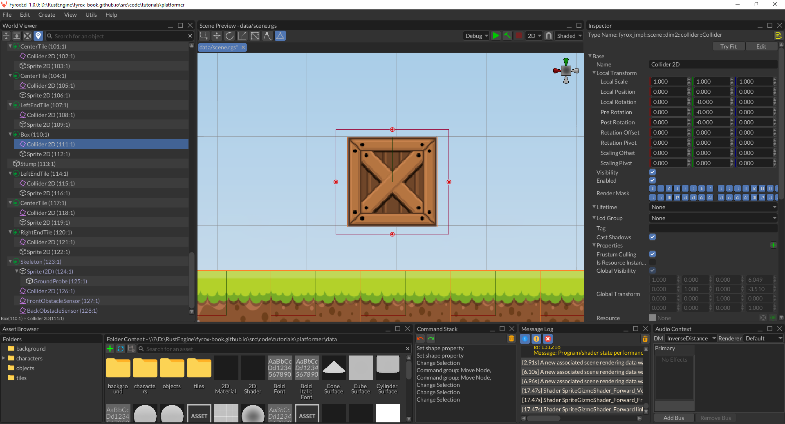
Note that, Box node here is an instance of Rigid Body 2D, and it has Collider 2D as a child and some sprite. This
structure (when a rigid body has a collider as a child) is mandatory for physics engine to work correctly! Collider
won't work (participate in physical simulation) without a rigid body and a rigid body won't work without a collider.
This applied to both 2D and 3D.
Keep in mind, that your graphical representation of an object (some node like Mesh, Sprite, etc.) must be attached
to a rigid body. Otherwise, the rigid body will move, but the graphical representation won't. You can also arrange
it other way around: a graphical node can have rigid body with a collider, but that requires the rigid body to be
kinematic. This is used to create hit boxes, or any other things
that should have physical representation, but move together with graphical node.
Force and torque
You can apply forces and torque to any rigid body, but only dynamic bodies will be affected. There is two ways of applying force to a rigid body: at center of mass or at particular point at the body:
#![allow(unused)] fn main() { fn apply_force_and_torque(rigid_body: &mut RigidBody) { // Push rigid body forward at the center of mass. rigid_body.apply_force(Vector3::new(0.0, 0.0, 1.0)); // Kick rigid body at the side (this will also make it rotate) rigid_body.apply_force_at_point(Vector3::new(0.0, 0.0, 1.0), Vector3::new(1.0, 0.0, 0.0)); // Turn rigid body around center of mass. rigid_body.apply_torque(Vector3::new(0.0, 3.0, 0.0)); } }
Kinematic rigid bodies
Sometimes you may want to have direct control over position/rotation of a rigid body and tell the physics engine to not do simulation for the body. This can be achieved by making the rigid body kinematic:
#![allow(unused)] fn main() { fn create_kinematic_rigid_body(graph: &mut Graph) -> Handle<Node> { RigidBodyBuilder::new( BaseBuilder::new().with_children(&[ // Rigid body must have at least one collider ColliderBuilder::new(BaseBuilder::new()) .with_shape(ColliderShape::cuboid(0.5, 0.5, 0.5)) .build(graph), ]), ) .with_body_type(RigidBodyType::KinematicPositionBased) .build(graph) } }
Continuous collision detection
Fast-moving rigid bodies can "fly through" other objects (for example a bullet can completely ignore walls if it is
moving too fast), this happens because of discrete calculation. This can be fixed by using continuous collision detection,
to enable it use either .with_ccd_enabled(state) of RigidBodyBuilder or .set_ccd_enabled(state) of RigidBody.
Dominance
Dominance allows you to set a priority of forces applied to rigid bodies. It defines which rigid body can affect what rigid body, for example you can set the highest dominance for actors and leave dominance of everything else at zero, this way actors will be able to push any other dynamic bodies, but dynamic bodies won't affect actors. This is useful when you don't want your actors be pushed by surrounding objects (like if someone throws a box at an actor, it will stay still if it has higher dominance)
2D rigid bodies
2D rigid bodies have no difference with 3D, except the simulation happens in oXY plane and Z coordinate is ignored.
Collider node
Collider is a geometrical shape that is used for collision detection, contact manifold generation, etc. Colliders are used in pair with rigid bodies, they make rigid body participate in collisions.
Important: Colliders only works in pair with rigid bodies! Colliders won't be used by the engine, unless they're direct children of a rigid body. Read this chapter for more info.
Shapes
Collider can have almost any shape, the engine offers the following shapes for 3D:
- Ball - dynamic sphere shape.
- Cylinder - dynamic cylinder shape.
- Cone - dynamic cone shape.
- Cuboid - dynamic box shape.
- Capsule - dynamic capsule shape.
- Segment - dynamic segment ("line") shape
- Triangle - simple dynamic triangle shape
- Triangle mesh - static concave shape, can be used together with any static level geometry (wall, floors, ceilings, anything else)
- Height field - static height field shape, can be used together with terrains.
- Polyhedron - dynamic concave shape.
Also, there is a similar, but smaller set for 2D (because some shapes degenerate in 2D):
- Ball - dynamic circle shape.
- Cuboid - dynamic rectangle shape.
- Capsule - dynamic capsule shape.
- Segment - dynamic segment ("line") shape.
- Triangle - dynamic triangle shape.
- Trimesh - static triangle mesh shape.
- Heightfield - static height field shape.
Dynamic in both lists means that such shapes can be used together with dynamic rigid bodies, they'll correctly handle all collisions and simulation will look as it should. Static means that such shape should be used only with static rigid bodies.
How to create
Use ColliderBuilder to create an instance of collider from code with any shape you want.
#![allow(unused)] fn main() { fn create_capsule_collider(graph: &mut Graph) -> Handle<Node> { ColliderBuilder::new(BaseBuilder::new()) .with_shape(ColliderShape::capsule_y(0.5, 0.2)) .with_friction(1.0) .build(graph) } }
In the editor you can use MainMenu -> Create -> Physics -> Collider, or right-click on a node in World Viewer and
select Add Child -> Physics -> Collider. Collider must be direct child of a rigid body, colliders do nothing on
their own!
Collision filtering
Sometimes there's a need to prevent collision between various groups of colliders. Fyrox supports bit-wise collision filtering exactly for this purpose. For instance, you may have two groups of colliders: actors and powerups, and you want the actors to completely ignore collisions with powerups (and vice versa). In this case you can set collision groups for actors like so:
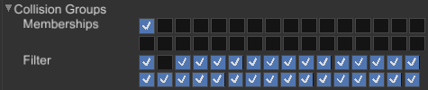
And set the collision groups for powerups like so:

As you can see, actors and powerups now have separate memberships (read - groups) and filters. This way, the actors
will collide with everything, but powerups and vice versa.
Using colliders for hit boxes
You can use colliders to simulate hit boxes for your game characters. It can be done by creating a rigid body with
KinematicPositionBased type and an appropriate collider as a child node. As the last step you need to attach the body
to a bone in your character's model. Here's a quick example from the editor:

As you can see, the rigid body has a capsule collider as a child and the body is attached to the neck bone. The body
has KinematicPositionBased type, which will ensure that the body won't be simulated, instead its position will be
synchronized with the position of the parent bone.
To actually use the hit boxes in your game, you can either use a ray-casting to perform a hit scan or you can use contacts information to fetch the stuff with which a hit box was contacted. See Ray casting chapter of the section.
Joint
Joint is a configurable link between two rigid bodies, it restricts relative motion of two bodies. Fyrox provides a fixed set of joints that are suitable for various applications.
- Fixed Joint - hard link between two bodies, it is the same is if two rigid bodies were "welded" to each other with a metal rod.
- Revolute Joint - restricts all translational movement and any rotations around Y and Z axes, but leaves rotation around local X axis free. An example of the joint from real world is a door hinge, it allows the door to rotate around single axis, but not move.
- Prismatic Joint - restricts all rotations, movement is allowed along single axis (local X of the joint). An example of the joint from real world could be a slider that supports drawers on a table.
- Ball Joint - restricts all movement, but leaves rotations unrestricted. An example of a ball joint from real world could be human shoulder.
2D joints does not have revolute joints, because it degenerates into ball joint.
Bodies Binding
When the joint is created and all bodies are set to it, it uses self global transform and bodies global transforms to calculate local frames for bodies. This process is called binding, it happens once when the joint is created, but can be initiated by moving the joint to some other position by changing local transform of the joint.
How to create
To create a joint from code use JointBuilder:
#![allow(unused)] fn main() { fn create_joint(graph: &mut Graph, body1: Handle<Node>, body2: Handle<Node>) -> Handle<Node> { JointBuilder::new(BaseBuilder::new()) .with_body1(body1) .with_body2(body2) .with_params(JointParams::BallJoint(BallJoint { x_limits_enabled: false, x_limits_angles: Default::default(), y_limits_enabled: false, y_limits_angles: Default::default(), z_limits_enabled: false, z_limits_angles: Default::default(), })) .build(graph) } }
Once the joint is created, it will bind given bodies, using the process describe in the above section.
To create a joint from editor, use MainMenu -> Create -> Physics -> Joint, select the new joint and find Body1 and
Body2 properties. Assign the fields by holding Alt key and drag'n'drop a rigid body to a field. Move the joint to
correct position to ensure the binding will happen as intended.
Limits
You can restrict motion on primary joint axis (rotational and translational) by setting a limit to desired axis.
- Ball Joint have three angular limits, one per rotation around an axis. The angle range is given in radians.
- Prismatic Joint have only one limit it is maximum linear distance between two bodies along primary joint axis.
- Revolute Joint have a single angular limit around primary axis. The angle range is given in radians.
- Fixed Joint does not have any limit setting, because it locks all degrees of freedom.
Usage
Joints can be used to create many game entities, such as doors, chains and rag dolls. The most interesting here is rag doll. It is used to create realistic behaviour for humans and creatures in games. In general, it is a set of rigid bodies, colliders and joints. Where each joint configured to match joints of a creature, for example ball joint could be used for shoulders, revolute joints for knees and elbows.
Ray Casting
Ray casting allows you to query intersections of a ray with rigid bodies in a scene. Typical usage for ray casting is hit-scan weapons (weapons that shoots high-speed projectiles), AI collision avoidance, etc. To query intersections, use physics world instance of a scene graph:
#![allow(unused)] fn main() { fn do_ray_cast(graph: &mut Graph, begin: Vector3<f32>, end: Vector3<f32>) -> Vec<Intersection> { let mut buffer = Vec::new(); let ray_direction = end - begin; graph.physics.cast_ray( RayCastOptions { ray_origin: Point3::from(begin), ray_direction, max_len: ray_direction.norm(), groups: Default::default(), sort_results: true, }, &mut buffer, ); buffer } }
The function above will return a collection of intersections that are sorted by intersection distance (a distance from beginning of the ray to an intersection point). Each intersection is represented by the following structure:
#![allow(unused)] fn main() { pub struct Intersection { pub collider: Handle<Node>, pub normal: Vector3<f32>, pub position: Point3<f32>, pub feature: FeatureId, pub toi: f32, } }
collider- a handle of the collider with which intersection was detected. To obtain a handle to rigid body, borrow thecolliderand fetch itsparentfield:graph[collider].parent().normal- a normal at the intersection position in world coordinates.position- a position of the intersection in world coordinates.feature- additional data that contains a kind of the feature with which intersection was detected as well as its index. FeatureId::Face might have index that is greater than number of triangles in a triangle mesh, this means that intersection was detected from "back" side of a face. To "fix" that index, simply subtract number of triangles of a triangle mesh from the value.toi- (time of impact) a distance from ray's origin toposition.
Avoiding unnecessary allocations
As you might've noticed, the function above return Vec<Intersection> which allocates intersections on heap. This is
relatively slow and could be sped up a lot by using static array on stack:
#![allow(unused)] fn main() { fn do_static_ray_cast<const N: usize>( graph: &mut Graph, begin: Vector3<f32>, end: Vector3<f32>, ) -> ArrayVec<Intersection, N> { let mut buffer = ArrayVec::<Intersection, N>::new(); let ray_direction = end - begin; graph.physics.cast_ray( RayCastOptions { ray_origin: Point3::from(begin), ray_direction, max_len: ray_direction.norm(), groups: Default::default(), sort_results: true, }, &mut buffer, ); buffer } fn usage_example(graph: &mut Graph, begin: Vector3<f32>, end: Vector3<f32>) { // Fetch first 32 intersections. dbg!(do_static_ray_cast::<32>(graph, begin, end)); } }
usage_example shows how to use the do_static_ray_cast function - all you need to do is to specify maximum number of
intersections you're interested in as a generic parameter.
Ragdoll
Ragdoll physics is a sort of procedural animation, that allows you to create naturally looking death animations and body physics in general. Ragdoll is just an arbitrary combination of rigid bodies, colliders, joints. Rigid bodies and colliders define physical "boundaries" for limbs of your character, while joints restrict relative motion (linear and rotational).
How To Create
Creating a ragdoll manually is a very tedious procedure, you need to create rigid bodies and colliders for every body
part of your character, place them correctly, adjust their size, etc. Then you need to create a set of joints, that
connects body parts, and then setup linear and angular limits. To save time, Fyrox has a special tool called
Ragdoll Wizard:

It can be opened from Utils menu and contains quite a lot of node handle fields that needs to be filled. Thankfully,
there's an Autofill button, by pressing which, the wizard will try to find respective bones of the skeleton and put their
handles in the respective fields in the wizard. For now, it is configured to work with mixamo
skeletons.
Other parameters are listed below:
Total Mass- total mass of the ragdoll, it will be used to configure masses of rigid bodies of body parts.Use CCD- a flag, that defines whether the continuous collision detection (CCD) for body parts should be used or not. It is advised to keep this flag on, otherwise body parts might get stuck or fall through the floor, leading to "explosive" ragdoll behaviour.Can Sleep- a flag, that defines whether the body parts can "sleep" or not. Sleep in this case means, that a body part can be excluded from physical simulation if it is not moving for some time.Collision GroupsandSolver Groupscould be used to configure collision filtering. It is very important in case if your character has a physical capsule, that is used to "standard" character physics. In this case body parts must ignore physical capsule (and vice versa), otherwise your ragdoll will "explode".
After everything is filled in, you can click OK button and if everything is correct, you should see a bunch of new
scene nodes in the world viewer, located under a Ragdoll scene node:
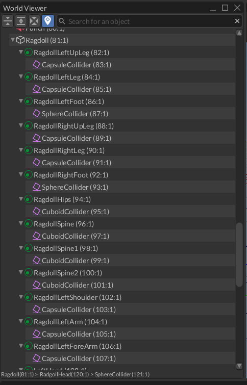
As you can see, the number of entities you'd have to create and configure manually is quite high. Keep in mind, that ragdoll wizard can't generate perfect ragdoll, because of lack of information. The generated ragdoll will most likely require some minor tweaks (mostly joint angular limits).
Video Tutorials
There's one video tutorial about ragdoll wizard, it also shows the final results in game:
Sound System
Fyrox has quite powerful and flexible audio system which will be covered in this chapter. Basic "building blocks" are sound sources, sound buffers, audio processing buses with various sound effects, sound context. Read the next chapters to learn more.
Audio Bus
Audio bus is an audio processing unit that takes audio samples from any number of sound sources and passes them through a chain of effects (zero or more). Processed samples then can be either sent to an audio playback device (speakers, headphones, etc.) or to some other audio bus. There's always one audio bus (primary) that sends its data to an audio playback device, every other audio buses are considered secondary.
Graph
As stated above, any audio bus (except primary), can output its audio samples to some other audio bus (primary or secondary). Such relationship forms an audio bus graph:

As you can see, there can be any number of sound sources which attached to the respective audio buses. Each audio bus can have any number of effects (such as lowpass, highpass, etc. filtering; reverb effect and more). Finally, each audio bus is connected to some other audio bus.
Such complex audio processing structure allows you to create pretty much any sound environment. For example, you can create an audio bus with a reverb effect, that will represent a huge hangar with lots of echoes. Then you attach all sound sources located in this "hangar" to the audio bus and your sound sources will sound more naturally, according to environment.
Effects
Audio bus can have zero or more audio processing effects. The effects applied one after another (see the arrows on the picture above). You can set any of the following effects:
- Attenuation - changes "volume" of input sound samples.
- Reverb - adds echoes, early and late reflections. Could be used to simulate environment with high reflectivity (hangars, parking lots, etc.)
- Low Pass Filter - passes all frequencies below the specified cut-off frequency.
- High Pass Filter - passes all frequencies above the specified cut-off frequency.
- Band Pass Filter - passes all frequencies in a given range around the specified cut-off frequency.
- All Pass Filter - shifts phase of the signal by 90 degrees at the specified cut-off frequency.
- Low Shelf Filter - reduces amplitude of frequencies in a shape like this ̅ _ at the cutoff frequency.
- High Shelf Filter - reduces amplitude of frequencies in a shape like this _/̅ at the cutoff frequency.
Editor
In the editor, audio bus graph is located in the Audio Context panel:

Primary audio bus is located at the left of the panel, every other audio bus is located to the right. Each audio bus (except primary) has a dropdown list (at the bottom), that specifies output audio bus. The list of effect is located in the center; it can be edited in the Inspector (right side of the image).
To attach a sound source to an audio bus, select in the scene and find Audio Bus property in the Inspector and set it
to the name of desired audio bus.
Sound
In Fyrox, sounds are nodes of type Sound, with all the consequent properties and workflows.
How to create
There are two major ways to create sound sources: from the editor and from code.
From Editor
A sound source could be created from Create menu (or from the same menu by right-clicking on a node in the world viewer):
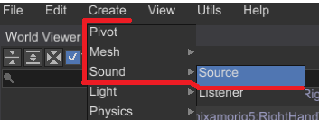
After the source is created, you can select it and start editing its properties:
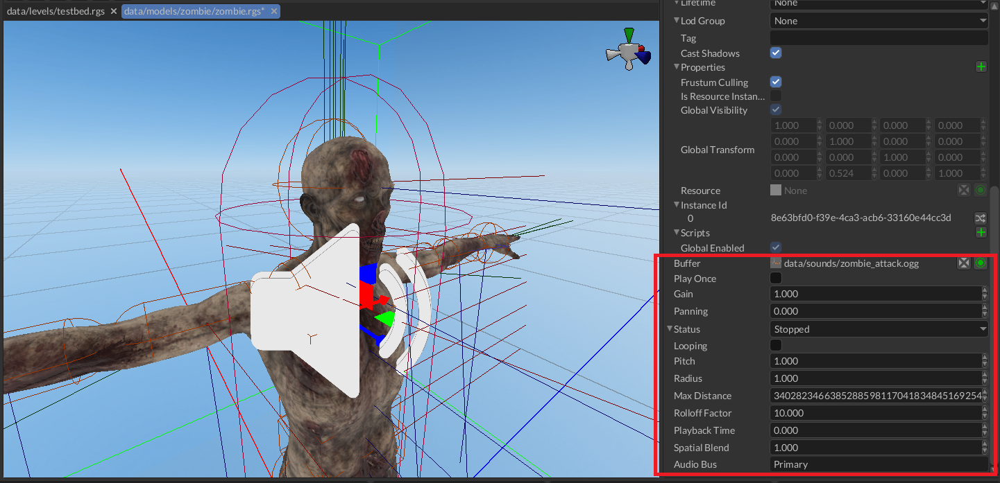
Buffer- a sound buffer resource, that will be used as a source of samples. If it is empty, then no sound will be played. Drag'n'drop a sound resource from the Asset Browser here to assign it to the source.Play Once- a flag, that defines whether the engine should automatically delete the sound source node from the scene when it is finished playing. Could be useful for one-shot sounds.Gain- a numeric value in[0..1]range, that defines total volume of the sound source. Keep in mind, that this value sets the volume in linear scale, while physically-correct approach would be to use logarithmic scale. This will be fixed in future versions.Panning- a numeric value in[-1..1]range, that defines how loud audio channels will be.-1- all the sound will be routed to the left channel,1- to the right channel. This option works only with 2D sounds (whose spatial blend factor is0.0)Status- a switch with three possible states:Stopped,Playing,Paused. By default, every sound source is in stopped state, do not forget to switch it to thePlayingstate, otherwise you won't hear anything.Looping- a flag, that defines whether the sound source should be playing infinitely, or not. Looping sound source will never switch their status toStopped.Pitch- playback speed multiplier. By default, it is1.0which means default speed.Max Distance- maximum distance, at which the sound source is affected by distance attenuation (for 3D sounds). By default, it set to max possible value. Lower values could be used to prevent sound source from be silent at certain distance.Rolloff Factor- a numeric value, that defines how fast the volume of the sound source will decay with increasing distance to a listener.Playback Time- desired time from which the playback should start (in seconds).Spatial Blend- a numeric value, that defines blending factor between 2D and 3D sound, where0.0- the sound is fully 2D,1.0- the sound is fully 3D. By default, the value is1.0.Audio Bus- a name of an audio bus, that will be used to process the samples from the sound source. By default, it is set toPrimary. It should match the name of some audio bus, that will be used in your scene. More info about audio processing could found here.
From Code
Audio files are loaded using the resource manager:
#![allow(unused)] fn main() { pub fn load_sound(path: &Path, resource_manager: &ResourceManager) -> SoundBufferResource { resource_manager.request::<SoundBuffer>(path) } }
Then, the node is built using the standard builder pattern:
#![allow(unused)] fn main() { fn build_sound_node(resource_manager: &ResourceManager, scene: &mut Scene) -> Handle<Node> { let sound = resource_manager.request::<SoundBuffer>("/path/to/resource.ogg"); SoundBuilder::new(BaseBuilder::new()) .with_buffer(Some(sound)) .with_status(Status::Playing) .with_play_once(true) .build(&mut scene.graph) } }
There are a few notable things in the example above.
The first is that sounds don't play automatically; in order to do so, we need to invoke .with_status(Status::Playing).
The second is that sound nodes are not dropped automatically after playback; dropping it can be performed in two ways.
One way is to use the convenient builder API .with_play_once(true); another is to use the graph APIs:
#![allow(unused)] fn main() { fn update_sound(sound_handle: Handle<Node>, scene: &mut Scene) { let sound = scene.graph[sound_handle].as_sound(); if sound.status() == Status::Stopped { scene.graph.remove_node(sound_handle); } } }
If we want to play background music (or anyway a repeated sound), we just set the looping property when building the node:
#![allow(unused)] fn main() { fn build_looping_sound(scene: &mut Scene) { SoundBuilder::new(BaseBuilder::new()) .with_looping(true) // ... .build(&mut scene.graph); } }
In order to stream large audio files, instead of loading them entirely in memory, the simplest strategy is to create a
corresponding .options file, with the following content:
(
stream: true
)
If the audio file is called, for example, /path/to/background.ogg, call this /path/to/background.ogg.options.
2D and 3D
There's no strict separation between 2D and 3D sound sources. The same source could be switched from 2D to 3D (and vice
versa) at runtime, by just adjusting Spatial Blend property. Spatial blend factor is a numeric value, that defines
blending factor between 2D and 3D sound, where 0.0 - the sound is fully 2D, 1.0 - the sound is fully 3D. By default,
the value is 1.0 which makes it 3D. Intermediate values could be used to create "ambisonic" sound sources - when the
source sounds like it is placed at some position in the world, but some part of it is just 2D and does not depend on
positioning.
Audio bus
It is possible to specify target audio bus to which the sound will output its audio samples. Audio bus is responsible
for various audio processing, such as filtering, reverb, etc. To specify output audio bus, just use the set_audio_bus
method and set the name of an audio bus.
Listener
An audio receiver that captures the sound at a particular point in your scene and sends it to an audio context for processing and outputting to an audio playback device. Every game scene has only one listener. There's nothing specific in listener's API, in general it is just an oriented point in 3D space. "Ear" axis is the local X axis.
Head Related Transfer Function
Head Related Transfer Function (HRTF for short) is special audio processing technique that improves audio spatialization. By default, sound spatialization is very simple - volume of each audio channel (left and right) changes accordingly to orientation of the listener. While this simple and fast, it does not provide good audio spatialization - sometimes it is hard to tell from which direction the actual sound is coming from. To solve this issue, we can use head-related transfer function. Despite its scary, mathematical name, it is easy to understand what it's doing. Instead of uniformly changing volume of all frequencies of the signal (as the naive spatialization does), it changes them separately for each channel. The exact "gains" of each frequency of each channel is depends on the contents of head-related transfer function. This is done for each azimuth and elevation angles, which gives full picture of how audio signal from each direction travels to each ear.
HRTF is usually recorded using a head model with ears with a microphone inside each ear. To capture head-related impulse response (time domain) at a fixed distance and angle pair (azimuth and elevation), a very short impulse of sound is produced. Microphones inside each ear records the signal, and then HRIR (time domain) can be converted in HRTF (frequency domain).
HRTF on practice
The theory above could be boring, however it is very simple to use HRTF on practice. Pick a HRIR sphere from the database (any of *.bin files) and load it in the Audio Context panel:
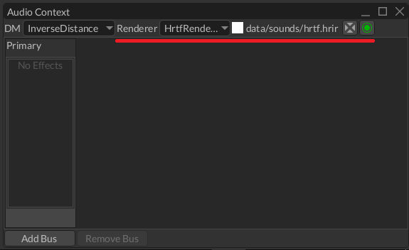
Once it is loaded, all sounds in the scene will use the HRTF for rendering. The same can be achieved by code:
#![allow(unused)] fn main() { extern crate fyrox; use fyrox::scene::{ graph::Graph, sound::{self, HrirSphere, HrirSphereResource, HrirSphereResourceExt, HrtfRenderer, Renderer}, }; fn use_hrtf(graph: &mut Graph) { let hrir_sphere = HrirSphereResource::from_hrir_sphere( HrirSphere::from_file("path/to/hrir.bin", sound::SAMPLE_RATE).unwrap(), "path/to/hrir.bin".into()); graph .sound_context .state() .set_renderer(Renderer::HrtfRenderer(HrtfRenderer::new(hrir_sphere))); } }
Performance
HRTF is heavy. It is 5-6 times slower than the simple spatialization, so use it only on middle-end or high-end hardware. HRTF performance is linearly dependent on the number of sound sources: the more sound sources use HRTF, the worse performance will be and vice versa.
Animation
Animation allows you to change properties of scene nodes at runtime using a set of key frames. Animation
consists of multiple tracks, where each track is bound to a property of a scene node. A track can animate
any numeric properties, starting from numbers (including bool) end ending by 2/3/4 dimensional vectors.
Each component (number, x/y/z/w vector components) is stored in a parametric curve. Every parametric curve contains zero or more key frames.
Graphically this could be represented like so:
Timeline
v
Time > |---------------|------------------------------------>
| |
Track1 > | node.position |
| X curve |..1..........5...........10..........
| Y curve |..2.........-2..................1.... < Curve key frames
| Z curve |..1..........9......................4
|_______________|
Track2 | node.property |
| ............ |.....................................
| ............ |.....................................
| ............ |.....................................
Each key frame is just a real number with interpolation mode. Interpolation mode tells the engine how to calculate intermediate values between key frames. There are three kinds of interpolation used in animations (you can skip "boring math" if you want):
- Constant - intermediate value will be calculated using leftmost value of two. Constant "interpolation" is usually used to create step-like behaviour, the most common case is to "interpolate" two boolean values.
- Linear - intermediate value will be calculated using linear interpolation
i = left + (right - left) / t, wheret = (time_position - left) / (right - left).tis always in0..1range. Linear interpolation is usually used to create "straight" transitions between two values. - Cubic - intermediate value will be calculated using Hermite cubic spline:
i = (2t^3 - 3t^2 + 1) * left + (t^3 - 2t^2 + t) * left_tangent + (-2t^3 + 3t^2) * right + (t^3 - t^2) * right_tangent, wheret = (time_position - left) / (right - left)(tis always in0..1range),left_tangentandright_tangentis usually atan(angle). Cubic interpolation is usually used to create "smooth" transitions between two values.
Web Demo
You can explore animation system capabilities in this web demo. Keep in mind, that it was designed to run on PC and wasn't tested on mobile devices.
Track binding
Each track is always bound to a property in a node, either by its name or by a special binding. The name is used to fetch the property using reflection, the special binding is a faster way of fetching built-in properties. It is usually used to animate position, scale and rotation (these are the most common properties available in every scene node).
Time slice and looping
While key frames on the curves can be located at arbitrary position in time, animations usually plays a specific time slice. By default, each animation will play on a given time slice infinitely - it is called animation looping, it works in both playback directions.
Speed
You can vary playback speed in wide range, by default every animation has playback speed multiplier set to 1.0. The multiplier tells how faster (>1) or slower (<1) the animation needs to be played. Negative speed multiplier values will reverse playback.
Enabling or disabling animations
Sometimes there's a need to disable/enable an animation or check if it is enabled or not, you can do this by using the pair
of respective methods - Animation::set_enabled and Animation::is_enabled.
Signals
Signal is a named marker on specific time position on the animation timeline. Signal will emit an event if the animation playback time passes signal's position from left-to-right (or vice versa depending on playback direction). Signals are usually used to attach some specific actions to a position in time. For example, you can have a walking animation and you want to emit sounds when character's feet touch ground. In this case you need to add a few signals at times when each foot touches the ground. After that all you need to do is to fetch animation events one-by-one and emit respective sounds. See respective chapter for more info.
Creating From Code
Usually, animations are created from the editor or some external tool and then imported in the engine. Before trying the example
below, please read the docs for AnimationPlayer node, it is much more convenient way of animating
other nodes. The node can be created from the editor, and you don't even need to write any code.
Use the following example code as a guide only if you need to create procedural animations:
#![allow(unused)] fn main() { fn create_animation(node: Handle<Node>) -> Animation { let mut frames_container = TrackDataContainer::new(TrackValueKind::Vector3); // We'll animate only X coordinate (at index 0). frames_container.curves_mut()[0] = Curve::from(vec![ CurveKey::new(0.5, 2.0, CurveKeyKind::Linear), CurveKey::new(0.75, 1.0, CurveKeyKind::Linear), CurveKey::new(1.0, 3.0, CurveKeyKind::Linear), ]); // Create a track that will animated the node using the curve above. let track = Track::new(frames_container, ValueBinding::Position); // Finally create an animation and set its time slice and turn it on. let mut animation = Animation::default(); animation.add_track_with_binding(TrackBinding::new(node), track); animation.set_time_slice(0.0..1.0); animation.set_enabled(true); animation } fn use_animation() { // Create a graph with a node. let mut graph = Graph::new(); let some_node = PivotBuilder::new(BaseBuilder::new()).build(&mut graph); // Create the animation. let mut animation = create_animation(some_node); // Emulate some ticks (like it was updated from the main loop of your game). for _ in 0..10 { animation.tick(1.0 / 60.0); animation.pose().apply(&mut graph); } } }
The code above creates a simple animation that moves a node along X axis in various ways. The usage of the animation is only for the sake of completeness of the example. In the real games you need to add the animation to an animation player scene node, and it will do the job for you.
Importing
It is also possible to import an animation from external source (such as FBX files). You can do this in two major ways: from code or from the editor. The following sections shows how to use both ways.
From Editor
At first, make sure that you have your 3D model instantiated in the scene. The following example has agent.fbx
instance in the scene (to do that, just drag'n'drop your 3D model in the scene from the Asset Browser). To import
an animation you need to create an Animation Player scene node, open the Animation Editor and
click the button with arrow-down icon:

Now you need to pick the root node of your 3D model to which you'll import your animation. Usually it will be called
the same as your 3D model (agent.fbx on the screenshot below):

The last thing you need to do is to pick the animation you want to import:

If everything is correct, you can preview your animation by clicking Preview checkbox:

From Code
You can do the same as in the previous section, but from code:
#![allow(unused)] fn main() { async fn create_animated_character( scene: &mut Scene, resource_manager: &ResourceManager, ) -> (Handle<Node>, Handle<Node>) { // Load a character model first. let character_resource = resource_manager .request::<Model>("path/to/my/character.fbx") .await .unwrap(); // Create its instance. let character_instance = character_resource.instantiate(scene); // Create a new animation player. let animation_player = AnimationPlayerBuilder::new(BaseBuilder::new()).build(&mut scene.graph); // Load an animation. let animation_resource = resource_manager .request::<Model>("path/to/my/animation.fbx") .await .unwrap(); // "Instantiate" an animation from the animation resource to the animation player. // You can call this method multiple times with different animations, each time it // will create a new animation instance and put it in the animation player. let _animations = animation_resource.retarget_animations_to_player( character_instance, animation_player, &mut scene.graph, ); (character_instance, animation_player) } }
As you can see, at first this code creates an instance of a 3D model. Then it loads an animation and creates its
instance in the animation player. Please note, that this code uses async, which produces a future which should
be driven by some executor. You can use block_on method to execute it at call site (this won't work on WebAssembly).
It is advised to prefer the editor to code approach, because it hides all this tedious code and properly handles asynchronous loading on all platforms.
Playing an Animation
Animations will be played automatically if the respective animation player is has the property Auto Apply set to
true. Since the animation player can contain multiple animations, all of them will be played at once. You can
enable/disable animations when needed by finding them by name from code and switching Enabled property:
#![allow(unused)] fn main() { fn enable_animation(animation_player: Handle<Node>, graph: &mut Graph, name: &str, enabled: bool) { if let Some(animation_player) = graph.try_get_mut_of_type::<AnimationPlayer>(animation_player) { // `get_value_mut_silent` prevents marking the variable as modified (see Property Inheritance // chapter for more info). let animations = animation_player.animations_mut().get_value_mut_silent(); // Find an animation with the given name. if let Some((_animation_handle, animation)) = animations.find_by_name_mut(name) { // You could also store _animation_handle somewhere and use animations.get_mut/get(handle) // to fetch an animation faster. // Turn the animation on/off. animation.set_enabled(enabled); } } } }
This code could also be used to change animation properties at runtime. To do that, replace set_enabled with some
other methods, such as set_speed, set_loop, set_root_motion_settings etc.
Animation Editor

Animation Editor is a tool that helps you to create and preview animations. This is a powerful tool that can be used to animate pretty much any numeric property. It has three main parts:
Toolbar- contains a set of tools that changes a particular part of an animation (name, length, speed, etc.)Track List- contains a list of tracks of nodes that will be animated.Curve Editor- curve editor allows you to edit behaviour of a numeric parameter over the time.
The editor can be opened in two ways - using Utils -> Animation Editor or by selecting an animation player node and
clicking Open Animation Editor button in the inspector.

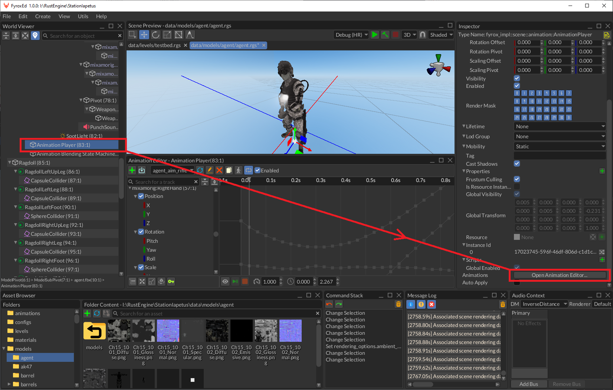
In both ways you still need to select an animation player for editing.
Typical Workflow
At first, you need to create or import an animation, then you need to set its time slice to desired range (see Time Slice in the section below), then you need to add a few tracks for desired properties and finally add some keys. You can preview the results at any time, keep in mind that any attempt to change an animation while it is the preview mode, will revert every change from the preview mode and only then apply your change.
Toolbar
The toolbar contains a set of tools that changes a particular part of an animation (name, length, speed, etc.). It looks like this:
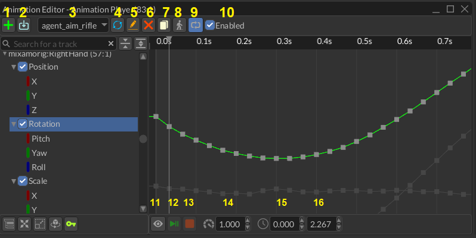
Animation Name- name of a currently selected animation.Add Animation- adds a new empty animation with the name from the text box at the left to the animation player.Import Animation- starts animation importing process. See Animation Importing section for more info.Reimport Animation- re-imports the animation from an external file, it is useful if you need to change animation's content, while keep references to it valid.Rename Animation- renames a currently selected animation using the name from the text box at the left.Animation Selector- allows you to switch currently edited animation.Delete Animation- deletes a currently selected animation, tries to select last animation from the list if possible.Duplicate Animation- clones a currently selected animation.Loop Animation- enables or disables looping of a currently selected animation.Enable Animation- enables or disables a currently selected animation.Animation Speed- sets a new playback speed of a currently selected animation.Time Slice- a time range (in seconds) which defines start and end time of a currently selected animation. The range is highlighted in the curve editor.Root Motion- open root motion settings. See Root Motion section for more info.Preview Switch- enables or disables animation preview. SeePreview Modesection for more info.Play/Pause- plays or pauses a currently selected animation (allowed only in the preview mode).Stop- stops a currently selected animation (allowed only in the preview mode).
Track List
The track list contains a list of tracks of nodes that will be animated. It looks like this:

Filter Bar- filters the track list by finding tracks whose names matching the filter. You can use this to find tracks that belong to a particular scene node.Clear Filter- clears the filter, the track list will show all the tracks after this.Collapse All- collapses all the tracks in the list.Expand All- expands all the tracks in the list.Track- a track with some number of children parametric curves.Track Component Curve- parametric curve that serves a data source for the animation for a particular track.Track Switch- enables or disables a track; disabled tracks won't "touch" their properties.Add Track- starts property binding process, see Property Binding section for more info.
Track Context Menu
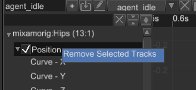
Remove Selected Tracks- removes selected tracks; you can remove multiple tracks at a time by selecting them while holdingCtrl.
Curve Editor
Curve editor allows you to edit parametric curves (one at a time). A curve consists of zero or more key frames with various transition rules between current and the next. The editor looks like this:
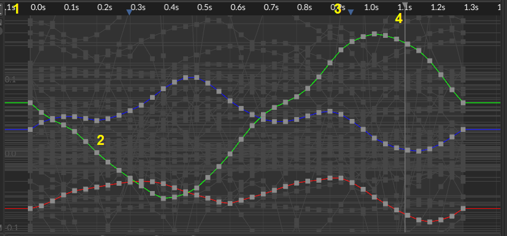
Time Ruler- shows time values and every signal of a currently selected animation. A click on the time ruler will move the playback cursor at the click position. You can move it by clicking at the cursor and moving the mouse while holding the left mouse button. Animation signals can be moved in the same fashion.Parametric Curve- a curve that defines how a value changes over time.Time Thumb- animation playback cursor, useful only for preview.Animation Signal- some animation signal that will produce animation events when the playback cursor passes it.
Time Ruler Context Menu
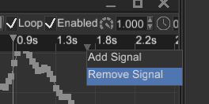
Remove Signal- removes an animation signal under the mouse cursor.Add Signal- adds a new animation signal at the mouse cursor position.
Key Frame Context Menu

Location- shows a key location and allows you to change it. Useful for setting precise values.Value- shows a key value and allows you to change it. Useful for setting precise values.Add Key- adds a new key to the curve.Remove- removes all selected keys. You can select multiple keys either by box selection (click and drag the mouse to active box selection) or by clicking on separate keys while holdingCtrl.Key...- allows you to change the interpolation type of key. It could be one of the following values: Constant, Linear, Cubic.Zoom To Fit- tries to find zooming values (for both axes) and the view position with which the entire curve fits in the viewport.
Property Binding
To animate a property all you need to do is to click on Add Track... button at the bottom of the track list, select
a node to animate and then select a property that will be animated. There are two windows that will be shown one after
another:
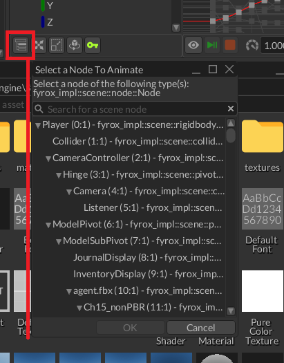
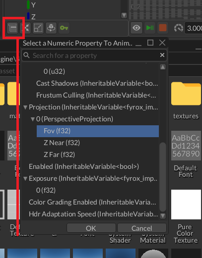
You can cancel property binding at any time by clicking Cancel in any of the windows. Keep in mind that you can animate
only numeric properties, so not every property is shown in the window.
Animation Importing
Animations can be stored in separate files, but the engine requires all of them to be in a single Animation Player. To
put an animation from an external resource (an FBX, for instance) in the animation player you can use animation
importing. To do that, click on animation import icon and then select a root node of the hierarchy that is animated in
the external animation file, then select the animation file and click Ok. The engine will try to import the animation
and map it to the given hierarchy, mapping is done using node names, so animated node names must match in both your
scene and your external animation file.


Content of existing animations can be replaced by reimporting. Click on a button with two circular arrows to reimport your animation. It could be useful if you changed your animation in some external editor (Blender for example) and want to apply changes in your game.
Preview Mode
Preview mode helps you to see and debug your animation. After activating the mode, you need to play the animation by
clicking the Play/Pause button:
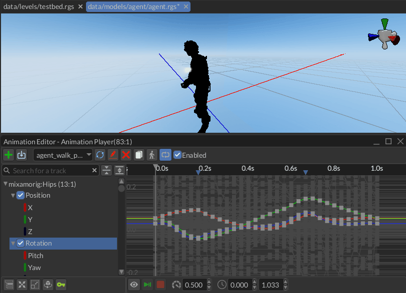
Any significant change made in the scene will automatically deactivate the preview mode reverting all the changes made by playing animation.
Root Motion
See Root Motion chapter for more info.
Limitations
For now there's no dopesheet mode in the editor, you can edit only one numeric parameter at a time. Also, there's no capture mode - this is a special mode in which the editor automatically adds your changes in the scene to the animation. These limitations will be removed in the future versions.
Animation Blending
Animation blending is a powerful feature that allows you to mix multiple animations into one. Each animation is mixed with a various weights which in sum gives 1.0 (100%). By having opposite coefficients (k1 = 0 -> 1, k2 = 1 -> 0) changing in time it is possible to create transition effect.
Handling transitions with all the coefficients is a routine job, the engine can handle it for you giving you some nice features:
- Multiple states with smooth transitions between them
- Ability to blend multiple animations in one and use it as pose source for blending
- Ability to specify a set of variables that will be used as blending coefficients and transition rules.
All these features consolidated in so-called animation blending state machine (ABSM). Machine is used to blend multiple animation as well as perform automatic "smooth" transition between states. In general, ABSM could be represented like this:

At the first look it may seem very complicated, but in reality it uses quite simple techniques. Let's start from the left side of the picture and go to the right. Yellow rectangle at the left depicts an animation player node that contains a bunch of animations, that will be used for blending. Two center blocks (layer 0 and layer 1) depicts separate layers (ABSM could have any number of layers in it). Each layer can contain an arbitrary nodes (green shapes), states (blue shapes), transitions (thick yellow arrows).
Nodes serves as a source of poses, that can be blended in any desired way. States are the part of the inner state machine, only one state could be active at the same time. Transitions are used to specify state transition rules.
At the "exit" of each layer there's a layer filter, it is responsible for filtering out values for specific scene nodes and could be used to prevent some scene nodes from being animated by a certain layer. Please note that despite the look of it, layer filter not necessarily be applied after all animations and states are blended - it could be done at any moment and drawn like so only for simplicity reasons.
The last, but not the least, important thing on the picture is the parameters container on the right side of the picture. Parameter either a transition rule, blending weight, or sampling point. If you look closely at the transitions or animation blending nodes you'll see small text marks. This is the names of the respective parameters.
In general, any state machine works like this - ABSM nodes are used to blend or fetch animations and their resulting poses are used by ABSM states. Active state provides final pose, which is then passes filtering and returned to you. After the last stage, you can apply the pose to a scene graph to make the resulting animation to have effect.
How to create
As always, there are two major ways of creating things in Fyrox - from the editor or from code. Take your pick.
From editor
Use ABSM Editor for to create animation blending state machines.
From code
You can always create an ABSM from code, a simple ABSM could be created like this:
#![allow(unused)] fn main() { fn create_absm() -> Machine { // Assume that these are correct handles. let idle_animation = Handle::default(); let walk_animation = Handle::default(); let aim_animation = Handle::default(); let mut machine = Machine::new(); let root_layer = machine.layers_mut().first_mut().unwrap(); let aim = root_layer.add_node(PoseNode::PlayAnimation(PlayAnimation::new(aim_animation))); let walk = root_layer.add_node(PoseNode::PlayAnimation(PlayAnimation::new(walk_animation))); // Blend two animations together let blend_aim_walk = root_layer.add_node(PoseNode::BlendAnimations(BlendAnimations::new(vec![ BlendPose::new(PoseWeight::Constant(0.75), aim), BlendPose::new(PoseWeight::Constant(0.25), walk), ]))); let walk_state = root_layer.add_state(State::new("Walk", blend_aim_walk)); let idle = root_layer.add_node(PoseNode::PlayAnimation(PlayAnimation::new(idle_animation))); let idle_state = root_layer.add_state(State::new("Idle", idle)); root_layer.add_transition(Transition::new( "Walk->Idle", walk_state, idle_state, 1.0, "WalkToIdle", )); root_layer.add_transition(Transition::new( "Idle->Walk", idle_state, walk_state, 1.0, "IdleToWalk", )); machine } }
Here we have Walk, Idle and Run states which use different sources of poses:
- Walk - is the most complicated here - it uses result of blending between
AimandWalkanimations with different weights. This is useful if your character can only walk or can walk and aim at the same time. Desired pose determined by Walk Weight and Aim Weight parameters combination. - Run and idle both directly use animation as pose source.
There are four transitions between three states each with its own rule. Rule is just a boolean parameter that indicates that transition should be activated. Let's look at the code example of the above state graph:
As you can see, everything is quite straightforward. Even such simple state machine requires quite a lot of code, which can be removed by using ABSM editor. Read the next chapter to learn about it.
Animation Blending State Machine (ABSM) Editor
While it is possible to create and manage animation blending and state manually from code, it quickly becomes too annoying and hardly manageable. To help you create and manage blending machines in easy way, the engine offers an ABSM Editor tool. This chapter is an overview of the editor, it is quite complex, but the guide should help you to figure out which part is made for what. Next chapter will help you to create your first animation blending state machine.

The editor has four main parts (panels):
Toolbar- contains a set of tools to edit animation layers and enable/disable preview mode. See Toolbar section for more info.Parameters- allows you to edit various variables that are responsible for transitions, weight parameters for blending, etc. See Parameters section for more info.State Graph- allows you to create, delete, edit states and transition between them. See State Graph section for more info.State Viewer- allows you to edit pose source for a state. Pose source can be represented either by a single node that plays an animation, or a series of play animation nodes connected to blending nodes (which can be connected to other blending nodes, etc.). See State Viewer section for more info.
{kind=link}
The editor can be opened in two ways - using Utils -> ABSM Editor or by selecting an animation blending state machine
node and clicking Open ABSM Editor... button:

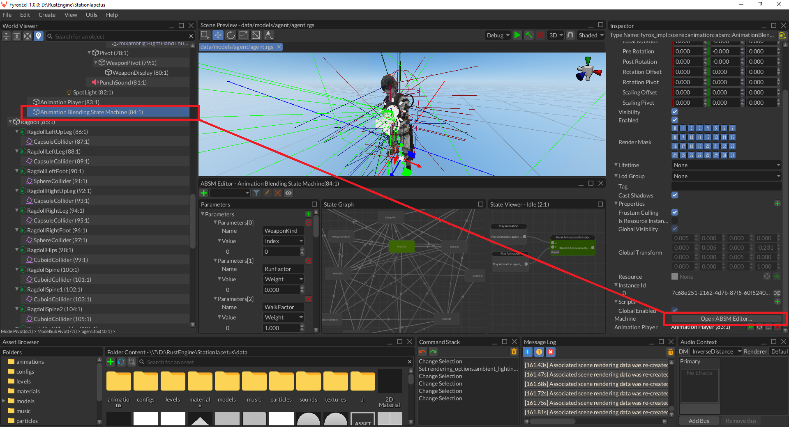
In both ways you still need to select an an animation blending state machine node for editing.
Toolbar

Preview Switch- enables or disables preview mode for the ABSM. See Preview Mode section for more info.Layer Name- name of the selected layer. Type a new name here to rename currently selected layer (hit enter or just click elsewhere to rename).Add Layer- adds a new layer with the name in theLayer Nametext box to the ABSM. ABSM can have multiple layers with the same name, but it strongly advised to set unique names here.Remove Current Layer- removes currently selected layer. You can delete all layers, but in this case your ABSM won't have any effect.Layer Selector- allows you to select a layer for editing, default selection is none.Layer Mask- opens aLayer Mask Editorand helps you to edit the layer mask of the current layer. See Layer Mask section for more info.
Parameters
Parameter is a named and typed variable that provides the animation system with some data required for it to work. There are only three type of parameters:
Rule- boolean value that used as a trigger for transitions. When transition is using some rule, it checks the value of the parameter and if it istruetransition starts.Weight- real number (f32) that is used a weight when you're blending multiple animations into one.Index- natural number (i32) that is used as an animation selector.
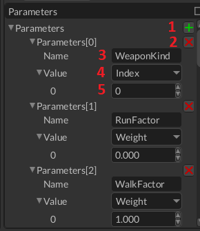
Add Parameters- adds a new parameter to the parameters' container.Remove a Parameter- removes selected parameter from the parameters' container.Parameter Name- allows you to set a parameter name.Parameter Type- allows you to select the type of the parameter.Parameter Value- allows you to set parameter value.
State Graph
State Graph allows you to create states and transitions between them.
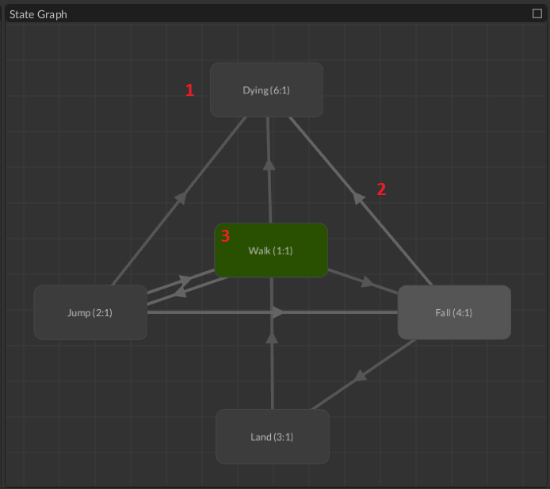
State- state is final animation for a set of scene nodes, only one state can be active at a time.Transition- is an ordered connection between two states, it defines how much time it needed to perform blending of two states.Root State- is an entry state of the current layer.
State Context Menu

Create Transition- starts transition creation from the current state to some other.Remove- removes the state.Set As Entry State- marks the state as an entry state (this state will be active at beginning).
Transition Context Menu

Remove Transition- removes selected transition.
State Properties
Select a State node to edit the following properties:

Position- is a location of the state on the canvas.Name- name of the state.Root- handle of the backing animation node inside the state.
Transition Properties
Select a Transition node to edit the following properties:
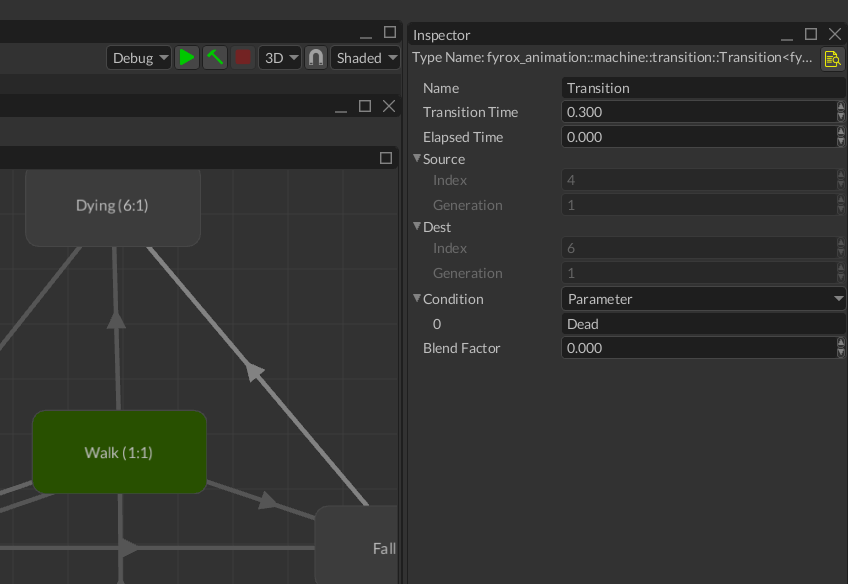
Name- name of the state.Transition Time- amount of time for blending between two states (in seconds).Elapsed Time- starting amount of blending time.Source- handle of a source state.Desc- handle of a destination state.Rule- a name ofRuletype parameter that defines whether the transition can be activated or not.Invert Rule- defines whether to invert the value ofRuleor not.Blend Factor- defines a percentage (in0..1range) of how much transition was active.
State Viewer
State Viewer allows you to edit contents of states. You can create animation blending chains of any complexity, the
simplest content of a state is just a single Play Animation node. Currently, the engine supports just three animation
blending nodes:
Play Animation- takes animation pose directly from specified animation, does nothing to it.Blend Animations- takes multiple animation poses from respective animations and blends them together with respective blend weights.Blend Animations By Index- takes multiple animation poses from respective animations and switches between them with "smooth" transition using an index parameter.

Node- is a source of animation for blending.Connection- defines how nodes are connected to each other. To create a new connection, click on a small dot on a node, hold the button and start dragging to a dot on some other node.Root Node- root node is marked green; root node is a final source of animation for the parent state.
Play Animation Properties
Select a Play Animation node to edit the following properties:
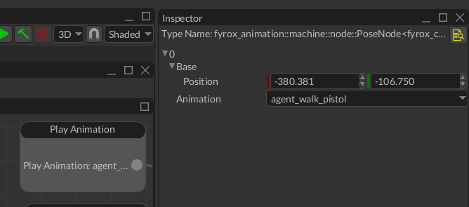
Position- is a location of the node on the canvas.Animation- an animation to fetch the pose from.
Blend Animations Properties
Select a Blend Animations node to edit the following properties:
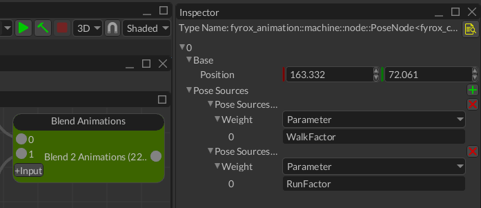
Position- is a location of the node on the canvas.Pose Sources- a set of input poses. To add a pose either click on+or+Inputon the node itself. Don't forget to connect some nodes to the new input poses.Weight- a weight of the pose; could be either a constant value or some parameter.
Blend Animations By Index Properties
Select a Blend Animations By Index node to edit the following properties:
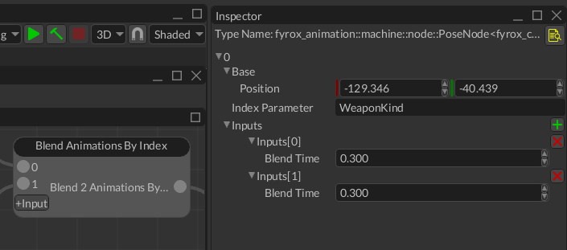
Position- is a location of the node on the canvas.Index Parameter- a name of an indexing parameter (must beIndextype).Inputs- a set of input poses. To add a pose either click on+or+Inputon the node itself. Don't forget to connect some nodes to the new input poses.Blend Time- defines how much time is needed to transition to the pose.
Connection Context Menu
Every connection has a context menu that can be shown by a right-click on a connection.
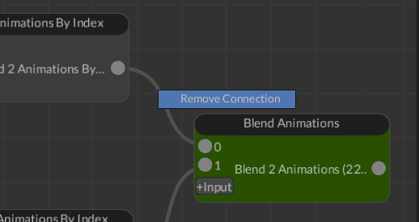
Remove Connection- removes the connection between parent nodes.
Node Context Menu
Every node has a context menu that can be shown by a right-click on a connection.
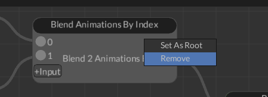
Set As Root- sets the node as the final pose source of the parent state.Remove- removes the node from the state.
Layer Mask
Layer mask editor allows you to select which nodes won't be animated by the current animation layer. Selected nodes
are marked with dark color. To select multiple nodes at once, hold Ctrl and click on items. The text box at the top
of the window allows you to search for a particular scene node. To save edited layer mask click OK.
Preview Mode
Preview mode turns on the animation blending state machine and its animation player and allows you to see the result of the work of the machine. Any significant changes in the scene automatically disables the preview mode and any changes done by the machine is discarded. While the preview mode is active, you can freely change the values of the parameters to see how the machine will react to this. This helps you to debug your state machine, it is especially useful for complex state machines with lots of layers. Here's how the preview mode works:

Signals
In some cases you may need to perform an action when at certain time of your animation. It could be a footstep sound, when foot touches ground, grenade tossing, etc. This could be done via animation signals. Animation signal is just a named marker that has time position at an animation timeline. It will be emitted when animation playback time passes it (left-to-right or right-to-left depending on the actual speed of your animation). All you need to do, is to catch these signals in your game code and do the desired actions.
How to add
As usual, there are two possible ways of adding animation signals - from the animation editor and from code.
From animation editor
To add a signal to some animation, select an animation player, open the animation editor, select some animation in
it. Now all you need to do is to right-click on the timeline and press Add Signal.

After the signal is added, you can select it and edit its properties in the inspector. Also, you can drag it on the timeline to adjust its position.

Set a meaningful name to the signal, and it is pretty much done - all you need to do next is to write signal handling code in your game. See the next section to learn how to do it.
From code
A signal could also be added from code, this requires knowing a handle of your animation player and a name/handle of your animation. Please note the comment about signal's uuid in the code below.
#![allow(unused)] fn main() { fn add_signal( animation_player: Handle<Node>, animation_name: &str, signal_name: &str, graph: &mut Graph, ) { if let Some(animation_player) = graph.try_get_mut_of_type::<AnimationPlayer>(animation_player) { let animations = animation_player.animations_mut().get_value_mut_silent(); if let Some((_, animation)) = animations.find_by_name_mut(animation_name) { // This uuid should be unique, you could also use Uuid::new_v4() method, but it // will generate random uuid on every call. This uuid does not used by the engine, // it is used only for searching and useful when you have multiple signals with the // same name, but with different uuid. let uuid = uuid!("6d472c99-e1d3-44fd-81fd-5eb83bbafdf7"); animation.add_signal(AnimationSignal::new(uuid, signal_name, 0.5)); } } } }
Reacting to signal events
When you have your signals ready for use, all you need to do is to react to the signals somehow. This is very simple: just borrow your animation from the animation player and pop animation event one-by-one from internal queue:
#![allow(unused)] fn main() { fn react_to_signal_events( animation_player: Handle<Node>, animation_name: &str, signal_name: &str, graph: &mut Graph, ) { if let Some(animation_player) = graph.try_get_mut_of_type::<AnimationPlayer>(animation_player) { let animations = animation_player.animations_mut().get_value_mut_silent(); // Ideally, animation fetching should be done via its handle (the first argument of the // tuple returned by find_by_name_mut/ref), but for the sake of simplicity we'll do // this by name. if let Some((_, animation)) = animations.find_by_name_mut(animation_name) { // Pop every event one-by-one and do something. while let Some(signal) = animation.pop_event() { // We're interested only in signals with specific name. if signal.name == signal_name { println!("Signal event {} has occurred!", signal.name); } } } } } }
You can do pretty much anything when reacting to signals. For example, this could be a prefab instantiation to create smoke effect under the feet, playing a footstep sound, etc.
Events from ABSM
Animation blending state machines are able to collect events from the currently playing animations using different strategies. This ability prevents you from tedious manual animation events collection from a bunch of animations manually.
#![allow(unused)] fn main() { fn collect_events_from_absm( absm: Handle<Node>, strategy: AnimationEventCollectionStrategy, ctx: &mut ScriptContext, ) -> LayerAnimationEventsCollection { if let Some(absm) = ctx .scene .graph .try_get_of_type::<AnimationBlendingStateMachine>(absm) { if let Some(animation_player) = ctx .scene .graph .try_get_of_type::<AnimationPlayer>(absm.animation_player()) { // Fetch a layer first, it could be any layer of the ABMS, but for simplicity // we'll use the first layer. if let Some(layer) = absm.machine().layers().first() { return layer.collect_active_animations_events( absm.machine().parameters(), animation_player.animations(), strategy, ); } } } Default::default() } }
This function collects all animation events from all active animations in the specified ABSM (in its first layer). The arguments to it are the following:
absm- a handle to an animation blending state machine node.strategy- event collection strategy, which includes all events collection, max and min weight. The last two may be used if you're getting a lot of events and want to get events from the animations with max or min weights respectively.ctx- current script context, available in pretty much any script methods.
Root Motion
Root motion is a special technique that transfers motion from some node in a hierarchy to a physical capsule, which is then used to perform the actual motion. In action it looks like this:
As you can see in the first part of the video, the movement of the character looks more like floating above the ground. This happens because the actual movement of the physical capsule is not synchronized with the movement of the character. Root motion fixes exactly this issue by taking the motion of some root node of the animated hierarchy (hips in case of this character) and transferring it to the physical capsule. This makes the actual movement to be fully synchronized with the movement "baked" in the animation.
Root motion also have some nice effect - you can move your character solely by the movement from animation, and it will work perfectly in 99% of cases. Animations can also contain some rotations which can also be extracted and applied to the physical capsule. The next awesome property is that your character will never stand out of its physical capsule, which will prevent phasing it into walls when playing animations with large movements.
In general, you should prefer root motion -driven movement for your characters whenever you can. Simply because it eliminates a lot of common problems with character movement. It can also be applied to 2D world and will work exactly the same.
How to enable
You can enable/disable/setup it in the drop-down menu that opens by clicking RM button in the animation editor.
Keep in mind, that root motion should be configured on per animation basis. Most of the animations does not
need the root motion at all.

The most important part here is the Root handle, it should be set to a root node that moves by your animation, usually
it is called like "hips" or similar:

After that, you need to apply filters for axes - most of the locomotion animations "works" in oXZ plane, so Y axis should be ignored. Also, if you don't have any turns in your animation, you can also filter out the rotation part.
Alternatively, you can do the same from code:
#![allow(unused)] fn main() { fn setup_root_motion( animation_player: Handle<Node>, animation: Handle<Animation>, root_node: Handle<Node>, ctx: &mut ScriptContext, ) { if let Some(animation_player) = ctx .scene .graph .try_get_mut_of_type::<AnimationPlayer>(animation_player) { if let Some(animation) = animation_player.animations_mut().try_get_mut(animation) { animation.set_root_motion_settings(Some(RootMotionSettings { node: root_node, ignore_x_movement: false, ignore_y_movement: true, ignore_z_movement: false, ignore_rotations: true, })) } } } }
This code does pretty much the same as the editor on the screenshots above. The arguments of this function are the following:
animation_player- a handle to the animation player in which all your animations are stored,animation- a handle of the animation in which you want to enable the root motion (you can obtain the handle by using AnimationContainer::find_by_name_ref method).root_node- a handle to a root node of your character's hierarchy, usually it is called something like "Hips" or "Pelvis".ctx- script context from your current script.
How to use
Direct root motion values extracted from animations are kind of useless by their own and in 99% of the cases you should get the average root motion values from a state machine that animates your character. This is because animation blending state machine properly blends the root motion from all active animation sources. In general, it could look something like this:
#![allow(unused)] fn main() { fn fetch_and_apply_root_motion( absm: Handle<Node>, rigid_body: Handle<Node>, character_model: Handle<Node>, ctx: &mut ScriptContext, ) { // Step 1. Fetch the velocity vector from the animation blending state machine. let transform = ctx.scene.graph[character_model].global_transform(); let mut velocity = Vector3::default(); if let Some(state_machine) = ctx .scene .graph .try_get(absm) .and_then(|node| node.component_ref::<AnimationBlendingStateMachine>()) { if let Some(root_motion) = state_machine.machine().pose().root_motion() { velocity = transform .transform_vector(&root_motion.delta_position) .scale(1.0 / ctx.dt); } } // Step 2. Apply the velocity to the rigid body and lock rotations. if let Some(body) = ctx.scene.graph.try_get_mut_of_type::<RigidBody>(rigid_body) { body.set_ang_vel(Default::default()); body.set_lin_vel(Vector3::new(velocity.x, body.lin_vel().y, velocity.z)); } } }
This code extracts the current local-space offset for the current frame and then transforms the offset to
world-space coordinates. Finally, it reduces the offset by the current delta time (1.0 / ctx.dt) to obtain the
new velocity vector which is then applied to the rigid body (player's capsule).
The arguments in this function are following:
absma handle to an instance of Animation Blending State Machine noderigid_bodya handle to the rigid body that is used by your charactermodel- a handle to the root node of your character's 3D model.
Raw root motion values
If for some reason you still need raw root motion values from animations, then you can extract them directly from the desired animation by using Animation::root_motion method.
Combining root motion with procedural motion
Sometimes there's a need to combine root motion with some procedural motion (for example - inertia after jumping). This could be done pretty easily by adding two velocity vectors - one from the root motion, and one from the procedural motion.
Sprite Animation
Sprites can be animated using a series of pre-made images. For performance reasons they're usually packed into a rectangular texture, where each individual image located in its own cell of a grid. Such texture is called a sprite sheet, and it looks something like this:

As you can see, there are multiple frames for each animation (idle, run, sword swing, etc.) packed into a single image. To play an animation, all we need to do is to change frames with some desired frequency and... that's pretty much all. That's the simplest animation technique one could imagine.
Sprite sheets usually made by artists, not programmers, so just search online for some sprite sheet or order a new one from an artist. Programmer's art is pretty much always bad.
How to use
Fyrox offers a built-in sprite animation system which has its own editor. To be able to use sprite animation
all you need to do is to add a SpriteSheetAnimation field (or a bunch of them) to your script and put
the following code in its on_update:
#![allow(unused)] fn main() { #[derive(Default, Clone, Debug, Reflect, Visit, TypeUuidProvider, ComponentProvider)] #[type_uuid(id = "aeebb95f-8e32-490e-971c-c22417bd19c5")] #[visit(optional)] struct Player { animation: SpriteSheetAnimation, } impl ScriptTrait for Player { fn on_update(&mut self, ctx: &mut ScriptContext) { // Update the animation first, it will switch current frame automatically if needed. self.animation.update(ctx.dt); if let Some(sprite) = ctx .scene .graph .try_get_mut(ctx.handle) .and_then(|n| n.cast_mut::<Rectangle>()) { // Assign the texture from the animation to the sprite first. sprite .material() .data_ref() .bind("diffuseTexture", self.animation.texture()); // Set the current animation's UV rect to the sprite. sprite.set_uv_rect(self.animation.current_frame_uv_rect().unwrap_or_default()); } } } }
Debugging
This section of the book explains how to debug various aspects of scenes.
Debug Drawing
Sometimes you may need to visualize some objects, that are normally invisible. The engine has built-in debug drawing context exactly for this purpose. For example, to visualize a point use the following code:
#![allow(unused)] fn main() { #[derive(Visit, Default, Reflect, Debug, Clone, ComponentProvider, TypeUuidProvider)] #[type_uuid(id = "efc71c98-ecf1-4ec3-a08d-116e1656611b")] struct MyScript {} impl ScriptTrait for MyScript { fn on_update(&mut self, ctx: &mut ScriptContext) { let self_position = ctx.scene.graph[ctx.handle].global_position(); ctx.scene .drawing_context .draw_sphere(self_position, 16, 16, 0.1, Color::GREEN); } } }
This code will draw a wireframe sphere at the position of an object, to which the script is attached to.
Keep in mind, that all drawing is performed in world-space coordinates. It is important to note, that
the code above will just add the wireframe sphere line-by-line to internal list of lines, which you must
clear at least once per frame. This is not done automatically, because having a "ghosting" effect could
be useful for debugging to see trajectories and to trace short events. To clear the buffer call the
clear_lines method somewhere in your plugin's update method:
#![allow(unused)] fn main() { #[derive(Visit, Reflect, Debug)] struct Game { scene: Handle<Scene>, } impl Plugin for Game { fn update(&mut self, context: &mut PluginContext) { context.scenes[self.scene].drawing_context.clear_lines(); } } }
Drawing context provides a wide variety of helper methods to draw various shapes, starting from lines and ending by cones, cylinders, etc. The full list of methods is provided below:
draw_frustum- draws a frustum, which could be obtained, for instance, from a Camera node.draw_aabb- draws an axis-aligned bounding box.draw_oob- draws an object-oriented bounding box.draw_transform- draws three basis vectors of an arbitrary transformation 4x4 matrix.draw_triangle- draws a triangle by 3 vertices.draw_pyramid- draws a pyramid, using vertices for its top, and four vertices for the base.draw_wire_sphere- draws a wireframe sphere.draw_circle- draws a circle.draw_circle_segment- draws a circle segment using angles range.draw_rectangle- draws a rectangle.draw_sphere- draws a sphere.draw_sphere_section- draws a sphere section.draw_cone- draws a cone.draw_cylinder- draws a cylinder.draw_flat_capsule- draws a flat capsule (axial slice).draw_capsule- draws a volumetric capsule.draw_segment_flat_capsule- draws a segment of a flat capsuledraw_segment_capsule- draws a segment of volumetric capsule.draw_arrow- draws an arrow.add_line- draws a single line from point to point.
Nodes
Scene nodes could draw their own debug info to the scene drawing context by overriding debug_draw method
provided by NodeTrait. For example, navigational meshes are normally invisible and only used to calculate
paths, however it could be very useful to actually see them when debugging game's AI:

You can debug draw either all scene nodes at once:
#![allow(unused)] fn main() { #[derive(Visit, Reflect, Debug)] struct Game { scene: Handle<Scene>, } impl Plugin for Game { fn update(&mut self, context: &mut PluginContext) { let scene = &mut context.scenes[self.scene]; for node in scene.graph.linear_iter() { node.debug_draw(&mut scene.drawing_context); } } } }
Or filter out only specific ones:
#![allow(unused)] fn main() { #[derive(Visit, Reflect, Debug)] struct Game { scene: Handle<Scene>, } impl Plugin for Game { fn update(&mut self, context: &mut PluginContext) { let scene = &mut context.scenes[self.scene]; for node in scene.graph.linear_iter() { if let Some(navmesh) = node.component_ref::<NavigationalMesh>() { navmesh.debug_draw(&mut scene.drawing_context); } } } } }
Physics
You can enable debug visualization of physics using built-in drawing methods. All that is needed is to call the draw()
method of a physics world (2D or 3D) like so:
#![allow(unused)] fn main() { #[derive(Visit, Reflect, Debug)] struct Game { scene: Handle<Scene>, } impl Plugin for Game { fn update(&mut self, context: &mut PluginContext) { let scene = &mut context.scenes[self.scene]; scene.graph.physics.draw(&mut scene.drawing_context); } } }
2D physics can be drawn the same way, just replace .physics with .physics2d. The result should look like this:
Input
This chapter explains how the input handling in the engine works. The input system based on various events, that comes to the window from the OS. It could be mouse events (such as mouse motion, button clicks), keyboard events, touchpad events, etc.
There are two major points for event handling: Plugin::on_os_event and Script::on_os_event, the first one is used
to react to OS events on plugin scale and the latter - on script scale. Here's a list (not full) of the most common
events that could be used in your game (some rare events are omitted):
#![allow(unused)] fn main() { #[derive(Reflect, Debug, Visit)] struct MyGame {} impl Plugin for MyGame { fn on_os_event(&mut self, event: &Event<()>, _context: PluginContext) { match event { // This branch should be used for pre-processed events that comes from // the main window. Event::WindowEvent { event, .. } => match event { WindowEvent::Resized(_) => {} WindowEvent::Moved(_) => {} WindowEvent::CloseRequested => {} WindowEvent::Destroyed => {} WindowEvent::DroppedFile(_) => {} WindowEvent::HoveredFile(_) => {} WindowEvent::HoveredFileCancelled => {} WindowEvent::Focused(_) => {} WindowEvent::KeyboardInput { .. } => {} WindowEvent::ModifiersChanged(_) => {} WindowEvent::Ime(_) => {} WindowEvent::CursorMoved { .. } => {} WindowEvent::CursorEntered { .. } => {} WindowEvent::CursorLeft { .. } => {} WindowEvent::MouseWheel { .. } => {} WindowEvent::MouseInput { .. } => {} WindowEvent::TouchpadPressure { .. } => {} WindowEvent::AxisMotion { .. } => {} WindowEvent::Touch(_) => {} WindowEvent::ScaleFactorChanged { .. } => {} WindowEvent::RedrawRequested => {} _ => (), }, // This branch should be used for raw input events from various devices. Event::DeviceEvent { event, .. } => match event { DeviceEvent::Added => {} DeviceEvent::Removed => {} DeviceEvent::MouseMotion { .. } => {} DeviceEvent::MouseWheel { .. } => {} DeviceEvent::Motion { .. } => {} DeviceEvent::Button { .. } => {} DeviceEvent::Key(_) => {} }, _ => (), } } } }
As you can see, to do an action in response to an event, all you need to do is to write some code in a desired branch. You can also put the handler code into a method of your plugin/script and call it instead.
Immediate input state fetching
You may be used to much simpler approach of immediate input state fetching, such as keyboard.is_key_pressed(..) or
mouse.position() - Fyrox has this functionality as well. It is up to you which one to pick, but in general, the
event-based approach is much more predictable, consumes less CPU resources, and it leads to less convoluted code.
Read the next few chapters to learn about both approaches and find the one that suits you the most.
Keyboard Input
There are two major ways to check the keyboard state - the simple and the event-based ones.
Simple way
The simplest way to check if a key was pressed/released or if it is still down is three methods of InputState:
is_key_down- returnstrueif the specified key is pressed,false- otherwise.is_key_pressed- returnstrueif the specified key was pressed in the current frame,false- otherwise. This method will returnfalseif the key is still pressed in the next frame. This is useful to check if a key was pressed and some action, but do not repeat the same action over and over until the key is released.is_key_released- returnstrueif the specified key was released in the current frame,false- otherwise. This method will returnfalseif the key is still released in the next frame. This is useful to check if a key was released and some action, but do not repeat the same action over and over until the key is pressed.
Typical usage of these methods is the following.
#![allow(unused)] fn main() { #[derive(Clone, Debug, Reflect, Visit, TypeUuidProvider, ComponentProvider)] #[type_uuid(id = "abbad54c-e267-4d7e-a3cd-e125a7e87ff0")] #[visit(optional)] pub struct Player {} impl ScriptTrait for Player { fn on_update(&mut self, ctx: &mut ScriptContext) { let node = &mut ctx.scene.graph[ctx.handle]; let transform = node.local_transform_mut(); // Check if the keys are down and move the player accordingly. if ctx.input_state.is_key_down(KeyCode::KeyA) { transform.offset(Vector3::new(-1.0, 0.0, 0.0)); } if ctx.input_state.is_key_down(KeyCode::KeyD) { transform.offset(Vector3::new(1.0, 0.0, 0.0)); } // It is also possible to check if a key was pressed or released on this frame. This // could be useful to do something only once per each press or release. For example, // jump could be performed on a key press. if ctx.input_state.is_key_pressed(KeyCode::Space) { transform.offset(Vector3::new(0.0, 1.0, 0.0)); } } } }
Event-based approach
The more advanced approach is to use keyboard events directly. This may seem harder to maintain than the simple
approach with functions like is_key_down, but in reality it is slightly more verbose. The main advantage is
that this approach allows you to carefully select which entity will receive an event.
Keyboard input events can be handled by listening to WindowEvent::KeyboardInput, for example you can check for A, D
keys and save their state in some variables in your script. These variables will tell the script that an entity, to
which the script was assigned, should move in a certain direction. This could be expressed like so:
#![allow(unused)] fn main() { #[derive(Clone, Debug, Reflect, Visit, TypeUuidProvider, ComponentProvider)] #[type_uuid(id = "abbad54c-e267-4d7e-a3cd-e125a7e87ff0")] #[visit(optional)] pub struct Player { move_left: bool, move_right: bool, } impl ScriptTrait for Player { fn on_os_event(&mut self, event: &Event<()>, _ctx: &mut ScriptContext) { // Listen to keyboard events, that comes to the main window. if let Event::WindowEvent { event: WindowEvent::KeyboardInput { event, .. }, .. } = event { let pressed = event.state == ElementState::Pressed; if let PhysicalKey::Code(code) = event.physical_key { // Check which key was pressed and remember this state for further usage. match code { KeyCode::KeyA => { self.move_left = pressed; } KeyCode::KeyD => { self.move_right = pressed; } _ => (), } } } } fn on_update(&mut self, ctx: &mut ScriptContext) { let node = &mut ctx.scene.graph[ctx.handle]; let transform = node.local_transform_mut(); if self.move_left { transform.offset(Vector3::new(-1.0, 0.0, 0.0)); } if self.move_right { transform.offset(Vector3::new(1.0, 0.0, 0.0)); } } } }
The main method here is on_os_event, which listens for keyboard events and modifies script variables accordingly.
These two variables are then used in the on_update method to move the entity, to which the script is assigned to.
Mouse Input
Mouse input is usually used to control a camera rotation, to pick objects in game world, etc. There are two major ways to get the mouse state - the simple and the event-based ones.
Mouse Motion
The following example shows how to use raw mouse events to rotate an object. It could also be used to rotate a camera in your game (with slight modifications).
#![allow(unused)] fn main() { #[derive(Clone, Debug, Reflect, Visit, TypeUuidProvider, ComponentProvider)] #[type_uuid(id = "abbad54c-e267-4d7e-a3cd-e125a7e87ff0")] #[visit(optional)] pub struct Player { yaw: f32, pitch: f32, } impl ScriptTrait for Player { fn on_update(&mut self, ctx: &mut ScriptContext) { let mouse_speed = ctx.input_state.mouse_speed(); let limit = std::f32::consts::FRAC_PI_2; self.pitch = (self.pitch + mouse_speed.y).clamp(-limit, limit); self.yaw += mouse_speed.x; let node = &mut ctx.scene.graph[ctx.handle]; let transform = node.local_transform_mut(); transform.set_rotation( UnitQuaternion::from_axis_angle(&Vector3::x_axis(), self.pitch) * UnitQuaternion::from_axis_angle(&Vector3::y_axis(), self.yaw), ); } } }
The same can be done with an event-based approach:
#![allow(unused)] fn main() { #[derive(Clone, Debug, Reflect, Visit, TypeUuidProvider, ComponentProvider)] #[type_uuid(id = "abbad54c-e267-4d7e-a3cd-e125a7e87ff0")] #[visit(optional)] pub struct Player { yaw: f32, pitch: f32, } impl ScriptTrait for Player { fn on_os_event(&mut self, event: &Event<()>, _ctx: &mut ScriptContext) { // We'll listen to MouseMotion raw device event to rotate an object. It provides // offsets only. if let Event::DeviceEvent { event: DeviceEvent::MouseMotion { delta: (dx, dy), .. }, .. } = event { let limit = std::f32::consts::FRAC_PI_2; self.pitch = (self.pitch + *dy as f32).clamp(-limit, limit); self.yaw += *dx as f32; } } fn on_update(&mut self, ctx: &mut ScriptContext) { let node = &mut ctx.scene.graph[ctx.handle]; let transform = node.local_transform_mut(); transform.set_rotation( UnitQuaternion::from_axis_angle(&Vector3::x_axis(), self.pitch) * UnitQuaternion::from_axis_angle(&Vector3::y_axis(), self.yaw), ); } } }
This example consists of two main parts - on_os_event and on_update methods. The first one is called when some
event comes to the main window, and we need to check if this event is DeviceEvent::MouseMotion. After that, we're taking
relative offsets (dx, dy) and modifying the pitch, yaw variables accordingly. on_update method is called
every frame and it is used to apply pitch and yaw values to the scene node the script is assigned to.
Mouse Buttons
The following example shows how to handle events from mouse buttons.
#![allow(unused)] fn main() { #[derive(Clone, Debug, Reflect, Visit, TypeUuidProvider, ComponentProvider)] #[type_uuid(id = "abbad54c-e267-4d7e-a3cd-e125a7e87ff1")] #[visit(optional)] pub struct Clicker { counter: i32, } impl ScriptTrait for Clicker { fn on_update(&mut self, ctx: &mut ScriptContext) { if ctx.input_state.is_left_mouse_button_pressed() { self.counter += 1; } else if ctx.input_state.is_left_mouse_button_released() { self.counter -= 1; } } } }
The same can be done with an event-based approach:
#![allow(unused)] fn main() { #[derive(Clone, Debug, Reflect, Visit, TypeUuidProvider, ComponentProvider)] #[type_uuid(id = "abbad54c-e267-4d7e-a3cd-e125a7e87ff1")] #[visit(optional)] pub struct Clicker { counter: i32, } impl ScriptTrait for Clicker { fn on_os_event(&mut self, event: &Event<()>, _ctx: &mut ScriptContext) { if let Event::WindowEvent { event: WindowEvent::MouseInput { button, state, .. }, .. } = event { if *state == ElementState::Pressed { match *button { MouseButton::Left => { self.counter -= 1; } MouseButton::Right => { self.counter += 1; } _ => (), } } } } } }
At first, we're checking for WindowEvent::MouseInput and creating respective bindings to its internals (button, state)
and then all we need to do, is to check if the button was pressed and if so, which one.
Raw Text Input (WIP)
Artificial Intelligence (WIP)
Behaviour Trees (WIP)
Path Finding
Fyrox has built-in A* (A-star) algorithm for pathfinding. It can be used to find a path on arbitrary graph without cycles. It could be a simple grid where each point knows about its "neighbours", navigational mesh, or some other graph.
Examples
The simplest examples could be a search of path on uniform grid. This could be useful for games with open worlds, strategies, and any other types of games that uses uniform grid for pathfinding.
#![allow(unused)] fn main() { fn astar_on_uniform_grid() { // Create vertices. let size = 40; let mut vertices = Vec::new(); for y in 0..size { for x in 0..size { vertices.push(GraphVertex::new(Vector3::new(x as f32, y as f32, 0.0))); } } let mut pathfinder = Graph::new(); pathfinder.set_vertices(vertices); // Link vertices to form a uniform grid. for y in 0..(size - 1) { for x in 0..(size - 1) { pathfinder.link_bidirect(y * size + x, y * size + x + 1); pathfinder.link_bidirect(y * size + x, (y + 1) * size + x); } } // Build a path from vertex 0 to vertex 100. let mut path = Vec::new(); assert!(pathfinder.build_positional_path(0, 100, &mut path).is_ok()); } }
Keep in mind, that the returned path is always reversed (its first point corresponds to an end point). You need either
to reverse the path, or (which is much faster) just iterate in reverse over its points.
What to use
A* is very simple, yet powerful algorithm. However, it is not always suitable, because it searches only on graph vertices and cannot build paths that are lying on a surface of arbitrary meshes. Simple path finding on a uniform grid is ok for some games (strategies for instance), but in FPS games it will look awful. In this case you should use navigational meshes which can build path on a surface of arbitrary meshes.
Performance
Current A* implementation is very well optimized, yet it still loses "some points" in comparison to other specialized implementations of this algorithm.
Navigational Meshes

Navigational mesh (navmesh for short) is a surface which can be used for path finding. Unlike A* Pathfinder, it can build arbitrary paths on a surface of large polygons, making a path from point A to point B linear (standard pathfinder builds path only from vertex to vertex). Navmeshes should be used when you have an arbitrary "walkable" surface, for example, a game level with rooms, hallways, multiple floors and so on. A* pathfinder should be used for strategies or any other types of games with uniform pathfinding grid.
How to create
There are three major ways of creating navigational meshes: manual, automatic, from external data.
Using the editor
Navigational meshes can be created and edited in the FyroxEd. At first, create a "Navigational Mesh" node, select it and switch to "navmesh" interaction mode:

Now you can edit the navmesh. For now, editing capabilities are quite limited and the only way to edit the navmesh is to Shift+Drag one if its edges:

You can also delete edges and vertices: select a vertex or an edge and press Delete key. If you need to create closed
loops, use "Connect Edges" button in the "Navmesh" floating panel:

Using automatic generation
Fyrox does not support automatic navigational mesh generation yet. You can help by adding such feature.
Using external data
It is possible to create a navigational mesh from an arbitrary mesh, which could be made somewhere else (in Blender,
3Ds Max, or even generated by a navmesh generator). If you have a Mesh scene node in your scene then you could do
something like this to build a navmesh from it:
#![allow(unused)] fn main() { fn make_navmesh(scene: &Scene, navmesh_name: &str) -> Navmesh { // Find mesh node in existing scene and create navigation mesh from it. let navmesh_node_handle = scene.graph.find_by_name_from_root(navmesh_name).unwrap().0; Navmesh::from_mesh(scene.graph[navmesh_node_handle].as_mesh()) } }
Alternatively, you can create a navmesh directly from code like so:
#![allow(unused)] fn main() { fn make_navmesh_from_vertices() -> Navmesh { Navmesh::new( vec![ TriangleDefinition([0, 1, 3]), TriangleDefinition([1, 2, 3]), TriangleDefinition([2, 5, 3]), TriangleDefinition([2, 4, 5]), TriangleDefinition([4, 7, 5]), TriangleDefinition([4, 6, 7]), ], vec![ Vector3::new(0.0, 0.0, 0.0), Vector3::new(0.0, 0.0, 1.0), Vector3::new(1.0, 0.0, 1.0), Vector3::new(1.0, 0.0, 0.0), Vector3::new(2.0, 0.0, 1.0), Vector3::new(2.0, 0.0, 0.0), Vector3::new(3.0, 0.0, 1.0), Vector3::new(3.0, 0.0, 0.0), ], ) } }
The Navmesh::new method accepts a list of triangles and vertices, where triangles is a set of three indices of
vertices forming a triangle.
Agents
Navigational mesh agent helps you to build paths along the surface of a navigational mesh and follow it. Agents can be used to drive the motion of your game characters. Every agent knows about its target and automatically rebuilds the path if the target has moved. Navmesh agents are able to move along the path, providing you with their current position, so you can use it to perform an actual motion of your game characters. Agents work together with navigational meshes, you need to update their state every frame, so they can recalculate path if needed. A simple example could something like this:
#![allow(unused)] fn main() { extern crate fyrox; use fyrox::utils::navmesh::NavmeshAgent; struct Foo { // Add this to your script agent: NavmeshAgent } }
After that, you need to update the agent every frame to make sure it will follow the target:
#![allow(unused)] fn main() { fn update_agent( agent: &mut NavmeshAgent, target: Vector3<f32>, dt: f32, navmesh: &mut NavigationalMesh, ) { // Set the target to follow and the speed. agent.set_target(target); agent.set_speed(1.0); // Update the agent. let navmesh = navmesh.navmesh(); agent.update(dt, &navmesh.read()).unwrap(); // Print its position - you can use this position as target point of your game character. println!("{}", agent.position()); } }
This method should be called in on_update of your script. It accepts four parameters: a reference to the agent, a
target which it will follow, a time step (context.dt), and a reference to navigational mesh node. You can fetch
navigational mesh from the scene graph by its name:
#![allow(unused)] fn main() { fn find_navmesh<'a>(scene: &'a mut Scene, name: &str) -> &'a mut NavigationalMesh { let handle = scene.graph.find_by_name_from_root(name).unwrap().0; scene.graph[handle].as_navigational_mesh_mut() } }
Radius
It is possible to specify a radius for navigation mesh agents, which could be used to walk around corners like so:

In some cases this behaviour is preferable, because it makes produced paths to look more natural. You can set agent's
radius using set_radius method. By default, it is set to 0.2 meters, which is an average radius that is suitable for
most of the cases.
Rendering (WIP)
Shaders
Shader is a set of programs that run directly on graphics adapter. Each program from the set is called sub-shader. Sub-shaders linked with render pass, each render pass defines "where" to draw an object. "where" means that you can set up your own render pass and the renderer will use the sub-shader with your render pass. For the ease of use, there are a number of predefined render passes.
Shaders have properties of various types that can be used together with materials to draw an object.
Shaders language
The engine uses GLSL shading language for every sub-shader. There are many GLSL guides over the internet, so there is no need to "re-post" the well-documented info again.
There are very few differences:
- No need to define a version of the shader. Every shader source will be pre-processed, and it will get the correct version automatically. Preprocessing is needed because the same shader could run on OpenGL and WebGL (OpenGL ES) which have some differences.
- There is a "standard" library of useful methods that is automatically included in every shader source at preprocessing stage. The library source could be found here. It is well documented, and you may find some functions useful for your job.
- There's automatic generation of uniform buffers for property groups (see this section for more info).
Structure
Shader has a rigid structure that could be described in this code snippet:
(
name: "MyShader",
// A set of resources, the maximum amount of resources is limited by your GPU. The engine
// guarantees, that there could at least 16 textures and 16 resource groups per shader.
resources: [
(
// Each resource binding must have a name.
name: "diffuseTexture",
// Value has limited set of possible variants.
kind: Texture(kind: Sampler2D, fallback: White),
binding: 0
),
(
name: "properties",
kind: PropertyGroup([
(
name: "diffuseColor",
kind: Color(r: 255, g: 255, b: 255, a: 255),
),
]),
binding: 0
),
// There are number of built-in property groups which provides useful data for each shader.
// See the full list of built-in property groups below.
(
name: "fyrox_instanceData",
kind: PropertyGroup([
// Autogenerated
]),
binding: 1
),
],
// A set of passes that are intentionally missing in the shader.
disabled_passes: ["GBuffer", "DirectionalShadow", "PointShadow", "SpotShadow"],
// A set of render passes (see a section `Render pass` for more info)
passes: [
(
// Name must match with the name of either standard render pass (see below) or
// one of your passes.
name: "Forward",
// A set of parameters that regulate renderer pipeline state.
// This is mandatory field of each render pass.
draw_parameters: DrawParameters(
// A face to cull. Either Front or Back.
cull_face: Some(Back),
// Color mask. Defines which colors should be written to render target.
color_write: ColorMask(
red: true,
green: true,
blue: true,
alpha: true,
),
// Whether to modify depth buffer or not.
depth_write: true,
// Whether to use stencil test or not.
stencil_test: None,
// Whether to perform depth test when drawing.
depth_test: Some(Less),
// Blending options.
blend: Some(BlendParameters(
func: BlendFunc(
sfactor: SrcAlpha,
dfactor: OneMinusSrcAlpha,
alpha_sfactor: SrcAlpha,
alpha_dfactor: OneMinusSrcAlpha,
),
equation: BlendEquation(
rgb: Add,
alpha: Add
)
)),
// Stencil options.
stencil_op: StencilOp(
fail: Keep,
zfail: Keep,
zpass: Keep,
write_mask: 0xFFFF_FFFF,
),
// Scissor box. Could be something like this:
//
// scissor_box: Some(ScissorBox(
// x: 10,
// y: 20,
// width: 100,
// height: 30
// ))
scissor_box: None
),
// Vertex shader code.
vertex_shader:
r#"
layout(location = 0) in vec3 vertexPosition;
layout(location = 1) in vec2 vertexTexCoord;
out vec2 texCoord;
void main()
{
texCoord = vertexTexCoord;
gl_Position = fyrox_instanceData.worldViewProjection * vec4(vertexPosition, 1.0);
}
"#,
// Fragment shader code.
fragment_shader:
r#"
out vec4 FragColor;
in vec2 texCoord;
void main()
{
FragColor = properties.diffuseColor * texture(diffuseTexture, texCoord);
}
"#,
)
],
)
Shader should contain at least one render pass to actually do some job. A shader could not have properties at all. Currently only vertex and fragment programs are supported. Each program must be written in GLSL. Comprehensive GLSL documentation can be found here
The engine can load such shaders if you save it in a file with .shader extension. After that, you can assign
the shader to your material in the Material Editor:
Alternatively, you can load the shader from code. To do this, you can use this code:
#![allow(unused)] fn main() { fn load_shader(resource_manager: &ResourceManager) -> ShaderResource { resource_manager.request::<Shader>("path/to/my/cool.shader") } }
After that, you can use the shader to build a material from it:
#![allow(unused)] fn main() { fn create_material(resource_manager: &ResourceManager) -> MaterialResource { let shader = resource_manager.request::<Shader>("path/to/my/cool.shader"); MaterialResource::new(Material::from_shader(shader)) } }
This material instance can be used for rendering. For example, you can assign it a surface of some mesh.
Render pass
Modern rendering is a very complex thing that requires drawing an object multiple times with different "scripts". For example, to draw an object with shadows, you need to draw an object twice: one directly in a render target, and one in a shadow map. Such stages called render passes.
Binding of shaders to render passes is done via names, each render pass has a unique name.
Predefined render passes
Predefined render passes helps you to create your own shader without a need to create your own render pass and to quickly start writing your shaders.
- GBuffer - A pass that fills a set with render target sized textures with various data about each rendered object. These textures then are used for physically based lighting. Use this pass when you want the standard lighting to work with your objects.
- Forward - A pass that draws an object directly in a render target. It could be used to render translucent objects.
- SpotShadow - A pass that emits depth values for an object, later this depth map will be used to render shadows.
- PointShadow - A pass that emits distance from a fragment to a point light, later this depth map will be used to render shadows.
- DirectionalShadow - A pass that emits depth values for an object, later this depth map will be used to render shadows for directional light sources using cascaded shadow mapping.
Disables passes
A render pass can be marked as "disabled" to prevent the renderer emitting errors when it tries
to use such render pass. This mechanism of explicit marking the pass disabled is here to ensure
correctness of shaders. To explicitly disable a pass, add its name to disabled_passes array:
disabled_passes: ["GBuffer", "DirectionalShadow", "PointShadow", "SpotShadow"],
Resources
Each shader requires a specific set of external resources that will be used during the rendering.
This set is defined in resources section of the shader and could contain the following resources:
Texture- a texture of arbitrary typePropertyGroup- a group of numeric properties.
Binding points
Shader resource must define a unique (over its type) binding index. The engine will use these points to prepare appropriate resource descriptor sets for GPU. Keep in mind, that binding point indices are unique per each type of resource. This means that a set of texture resources could use the same indices as property groups. The binding points must be unique in its group. If there is more than one resource of a certain type, that shares the same binding point, the engine will refuse to use such a shader.
Built-in resources
There are a number of built-in resources, that Fyrox will try to assign automatically if they're defined in your shader, something like this:
(
name: "fyrox_instanceData",
kind: PropertyGroup([
// Autogenerated
]),
binding: 1
),
The full list of built-in resources is defined below.
fyrox_instanceData
Property group. Provided for each rendered surface instance.
| Name | Type | Description |
|---|---|---|
| worldMatrix | mat4 | Local-to-world transformation. |
| worldViewProjection | mat4 | Local-to-clip-space transform. |
| blendShapesCount | int | Total amount of blend shapes. |
| useSkeletalAnimation | bool | Whether skinned meshes is rendering or not. |
| blendShapesWeights | vec4[32] | Blend shape weights. |
fyrox_boneMatrices
Property group. Provided for each rendered surface, that has skeletal animation.
| Name | Type | Description |
|---|---|---|
| matrices | mat4[256] | Bone matrices |
fyrox_cameraData
Property group. Contains camera properties. It contains info not only about scene camera, but also observer info when rendering shadow maps. In other words - it is generic observer properties.
| Name | Type | Description |
|---|---|---|
| viewProjectionMatrix | mat4 | World-to-clip-space transformation. |
| position | vec3 | World-space position of the camera. |
| upVector | vec3 | World-space up-vector of the camera. |
| sideVector | vec3 | World-space side-vector of the camera. |
| zNear | float | Near clipping plane location. |
| zFar | float | Far clipping plane location. |
| zRange | float | zFar - zNear |
fyrox_lightData
Property group. Available only in shadow passes.
| Name | Type | Description |
|---|---|---|
| lightPosition | vec3 | World-space light source position. Only for shadow passes. |
| ambientLightColor | vec4 | Ambient lighting color of the scene. |
fyrox_lightsBlock
Property group. Information about visible light sources
| Name | Type | Description |
|---|---|---|
| lightCount | int | Total amount of light sources visible on screen. |
| lightsColorRadius | vec4[16] | Color (xyz) and radius (w) of light source |
| lightsParameters | vec2[16] | Hot-spot cone angle cos (x) and half cone angle cos (y) |
| lightsPosition | vec3[16] | World-space light position. |
| lightsDirection | vec3[16] | World-space light direction |
fyrox_graphicsSettings
Property group. Contains graphics options of the renderer.
| Name | Type | Description |
|---|---|---|
| usePom | bool | Whether to use parallax occlusion mapping or not. |
fyrox_sceneDepth
Texture. Contains depth values of a scene. Available only after opaque geometry is rendered (read - G-Buffer is filled). Typical usage is something like this:
(
name: "fyrox_sceneDepth",
kind: Texture(kind: Sampler2D, fallback: White),
binding: 1
),
fyrox_widgetData
Property group. Contains UI widget-specific data, that can be used in UI shaders.
| Name | Type | Description |
|---|---|---|
| worldViewProjection | mat4 | World-to-clip-space transformation matrix. |
| solidColor | vec4 | RGBA color. |
| gradientColors | vec4[16] | A set of gradient colors. |
| gradientStops | float[16] | A set of normalized (0.0-1.0) stops along the axis. |
| gradientOrigin | vec2 | Origin position of the gradient (local coordinates). |
| gradientEnd | vec2 | End position of the gradient (local coordinates). |
| gradientPointCount | int | Total number of gradient points. |
| resolution | vec2 | Frame buffer size to which the widget is drawn to. |
| boundsMin | vec2 | Top-left point of the screen space bounding rectangle. |
| boundsMax | vec2 | Right-bottom point of the screen space bounding rectangle. |
| isFont | bool | true if the widget is a text, false - otherwise. |
| opacity | float | Opacity (0.0-1.0 range). |
| brushType | int | Brush type (0 solid, 1-linear gradient, 2-radial gradient |
Code generation
Fyrox automatically generates code for resource bindings. This is made specifically to prevent subtle mistakes. For example, when you define this set of resources:
(
name: "MyShader",
resources: [
(
name: "diffuseTexture",
kind: Texture(kind: Sampler2D, fallback: White),
binding: 0
),
(
name: "normalTexture",
kind: Texture(kind: Sampler2D, fallback: Normal),
binding: 1
),
(
name: "properties",
kind: PropertyGroup([
(
name: "texCoordScale",
kind: Vector2((1.0, 1.0)),
),
(
name: "diffuseColor",
kind: Color(r: 255, g: 255, b: 255, a: 255),
),
]),
binding: 0
),
]
)
The engine generates the following code and adds it to source code of every shader in every render pass automatically:
uniform sampler2D diffuseTexture;
uniform sampler2D normalTexture;
struct Tproperties {
vec2 texCoordScale;
vec4 diffuseColor;
};
layout(std140) uniform Uproperties { Tproperties properties; }
The most important thing is that the engine keeps properties in the struct Tproperties in
correct order and forces std140 layout on the generated uniform block. Since the engine knows
the layout of the properties from their definition section, it could easily form a memory block
with all required alignments and paddings that could be uploaded to GPU. The next important thing
is that the engine batches all the data needed into large chunks of data and uploads them
all at once, which is much faster.
Drawing parameters
Drawing parameters defines which GPU functions to use and at which state. For example, to render transparent objects, you need to enable blending with specific blending rules. Or you need to disable culling to draw objects from both sides. This is when draw parameters come in handy.
There is a relatively large list of drawing parameters, and it could confuse a person who didn't get used to work with graphics. The following list should help you to use drawing parameters correctly.
cull_face:- Defines which side of polygon should be culled.
- Possible values:
None,Some(CullFace::Back),Some(CullFace::Front)
color_write:- Defines which components of color should be written to a render target
- Possible values:
ColorMask { .. }
depth_write:- Whether to modify depth buffer or not.
- Possible values:
true/false
stencil_test:- Whether to use stencil test or not.
- Possible values:
NoneSome(StencilFunc { .. })
depth_test:- Whether to perform depth test when drawing.
- Possible values:
true/false
blend:- Blending options.
- Possible values:
NoneSome(BlendFunc { .. } )
stencil_op:- Stencil options.
- Possible values:
StencilOp { .. }
scissor_box:- A rectangle that is used for clipping (screen-space). This value can be redefined when issuing a drawing command.
NoneSome(ScissorBox(x: 10, y: 20, width: 100, height: 30))
Vertex shader
Vertex shader operates on single vertices, it must provide at least the position of the vertex in clipping space. In other words, it has to do at least this:
layout(location = 0) in vec3 vertexPosition;
void main()
{
gl_Position = fyrox_instanceData.worldViewProjection * vertexPosition;
}
This is the simplest vertex shader, using vertex shaders you can create various graphical effects that affect vertices.
Pixel Shader
Pixel shader (or more precisely - fragment shader), operates on a small fragment of your render target. In general, pixel shaders write some color to a render target (or multiple targets) using some program.
out vec4 FragColor;
void main()
{
FragColor = vec4(1, 0, 0, 1);
}
This is the simplest pixel shader, it just fills the render target with red color.
Compute Shaders
Compute shaders aren't supported yet due to the platform limitations (WebGL2 on WebAssembly). However, if you don't need to support such platforms, you can access the underlying graphics API directly and use compute shaders as you want:
#![allow(unused)] fn main() { fn use_gl_compute_shader(ctx: &PluginContext) { let GraphicsContext::Initialized(initialized_context) = ctx.graphics_context else { return; }; let Some(gl_server) = initialized_context .renderer .server .as_any() .downcast_ref::<GlGraphicsServer>() else { return; }; use glow::HasContext; unsafe { // Create a compute shader program and use it. // ... gl_server.gl.dispatch_compute(3, 3, 3); } } }
Keep in mind, that this code snippet uses OpenGL, but it can be pretty much any GAPI for which the
GraphicsServer trait is implemented.
Materials
Material defines a set of values for a shader. Materials usually contains textures (diffuse, normal, height, emission and other maps), numerical values (floats, integers), vectors, booleans, matrices and arrays of each type, except textures. Each parameter can be changed in runtime giving you the ability to create animated materials. However, in practice, most materials are static, this means that once it's created, it won't be changed anymore.
Please keep in mind that the actual "rules" of drawing an entity are stored in the shader, material is only a storage for specific uses of the shader.
Multiple materials can share the same shader, for example standard shader covers 95% of most common use cases, and it is shared across multiple materials. The only difference are property values, for example you can draw multiple cubes using the same shader, but with different textures.
Material itself can be shared across multiple places as well as the shader. This gives you the ability to render multiple objects with the same material efficiently.
Performance
It is very important re-use materials as much as possible, because the number of materials used per frame significantly correlates with performance. The more unique materials you have per frame, the more work the renderer and video driver need in order to render a frame and more time the frame will require for rendering, thus lowering your FPS.
Standard material
The engine offers a standard PBR material, PBR stands for "Physically-Based Rendering" which gives you the quality of shading which is very close to materials in real world (to some extent of course).
The standard material can cover 95% of use cases, and it is suitable for almost any kind of game, except maybe some cartoon-ish or stylized games.
The standard material has quite a lot of properties that can be used to fully utilize the power of PBR rendering:
- diffuseColor - an RGBA color that will be used as a base color for you object. Caveat: the opacity value
(alpha) will be used only with
Forwardrender path! This means that you will need to switch render path on your mesh (see below) - diffuseTexture - a 2D texture containing the unlit "basic" colors of your object, this is the most commonly used texture. For example, you can assign a brick wall texture to this property and your object will look like a brick wall.
- normalTexture - a 2D texture containing per-pixel normal vectors.
- metallicTexture - a 2D texture containing per-pixel metallic factor, where 0 - dielectric, 1 - metal. In simple words it defines whether your object reflects (1.0) the environment or not (0.0).
- roughnessTexture - a 2D texture containing per-pixel roughness factor, where 0 - completely flat, 1 - very rough.
- heightTexture - a 2D texture containing per-pixel displacement value, it is used with parallax mapping to crate an effect of volume on a flat surface.
- emissionTexture - a 2D texture containing per-pixel emission lighting. You could use this to create emissive surfaces like small lamps on wall of sci-fi ship, or to create glowing eyes for your monsters that will scare the player.
- lightmapTexture - a 2D texture containing per-pixel static lighting. It is used to apply precomputed light to your 3D models, and the most common use case is to lit a static object using a static light. Precomputed light is very cheap. The engine offers built-in lightmapper that can generate lightmaps for you.
- aoTexture - a 2D texture containing per-pixel shading values, allows you to "bake" shadows in for your 3D object.
- texCoordScale - a 2D vector that allows you to scale texture coordinates used to sample the textures mentioned above (except lightmaps, they're using separate texture coordinates)
- layerIndex - a natural number that is used for decals masking, a decal will only be applied to your mesh if and only if the decal has matching index.
- emissionStrength - a 3D vector that allows you to set the strength of emission per-channel (R, G, B) for
your
emissionTexture
Transparency
The standard material offers very basic transparency support, to use it you have to explicitly switch render path on your mesh object. It could be done in this way:
#![allow(unused)] fn main() { extern crate fyrox; use fyrox::{ core::pool::Handle, scene::{mesh::RenderPath, node::Node, Scene}, }; fn set_forward_render_path(scene: &mut Scene, mesh_handle: Handle<Node>) { scene.graph[mesh_handle] .as_mesh_mut() .set_render_path(RenderPath::Forward); } }
After this, your mesh will be rendered using a specialized render pass called Forward which supports alpha-blending and transparent objects. Caveat: Current forward renderer implementation does not support any kind of lighting, if you need lighting, you will need to use custom shader for that!
Material import
When you're loading a 3D model in the engine, the engine tries to convert the materials stored inside to standard material. In most cases there is no way to create 100% matching material on the fly, instead the engine tries to do its best to make sure the material will be imported as closely as possible to the original one. Various 3D modelling tools use different material system, but all of them allow you to export your 3D model in one of the commonly used formats (such as FBX).
Blender
When using Blender, make sure you are using Principled BSDF material, it is the closest material that can be converted to engine's standard material at almost 100% fidelity.
3Ds max
It highly depends on the version of the 3Ds max, but in general the default material should work fine.
Light Maps
Fyrox supports light maps for static lighting, that allows you to pre-compute the lighting, store it into a texture and use this texture for rendering. This makes lighting very fast to render, but requires additional pre-processing step and slightly increases memory usage. Light maps are very useful for static lights and static level geometry; they do not work with dynamic objects and lights. Light maps could be used on mobile devices, to significantly increase performance. This is how "baked" light looks like:

This is light map for one of the curtains in the scene on screenshot below. As you can see, there are quite a lot of parts on this texture, this is because the engine generates second texture coordinates for the light map, and sometimes it cannot generate one big chunk, and it has to add seams. Despite the look of it, the light map is actually tightly packed, it contains a lot of black pixels because the ambient color is black and not all pixels on it are actually lit.
How to generate
There are two major ways of generating a light map: from the editor and from code. Usually, using the editor is preferable, because you can immediately see the results. Code-based approach could be used if you're making your own tool for light maps.
From editor
You can generate a light map from the editor in just a few clicks, go to View -> Light Panel and the Light Panel should
open:

There's not many settings in this window, but all of them are very important. At first, choose a folder in which the editor
will store the generated light map by clicking ... button. The last two parameters are the following:
- Texels per unit - it defines 'pixels density' per unit of area (square meters). The more the value, the more detailed the produced light map will be and vice versa. This value directly affects performance in quadratic manner, which means that if you change it from 32 to 64, the time needed to generate the light map won't double, but it will be 4 times more. Default value is 64 which is a good balance between quality and generation speed.
- Spacing - relative spacing between UV elements generated by the built-in UV mapper. The more the value, the more the distance between the UV elements will be. This parameter is used to prevent seams from occurring, when rendering meshes with bilinear filtration. Default value is 0.005, which is a good balance between size of the light maps and their quality (lack of seams).
Usually the default values are fine for most cases, but you can tweak them and compare the results. Now you can click
the Generate Light Map button and wait until the light map is fully generated.

You can cancel the generation at any time, however in some cases there might be a small delay between cancel request and the actual generation cancellation. When the generation is done, you should immediately see the result:

Now if you save the scene, it will remember the generated light map and will load it automatically for you.
From code
The following example creates a simple scene and generates a light map for it, which is then saved to disk:
#![allow(unused)] fn main() { fn generate_lightmap() { // Create a test scene first. let mut scene = Scene::new(); let data = SurfaceData::make_cone( 16, 1.0, 1.0, &Matrix4::new_nonuniform_scaling(&Vector3::new(1.0, 1.1, 1.0)), ); MeshBuilder::new(BaseBuilder::new()) .with_surfaces(vec![SurfaceBuilder::new(SurfaceResource::new_ok( ResourceKind::Embedded, data, )) .build()]) .build(&mut scene.graph); PointLightBuilder::new(BaseLightBuilder::new( BaseBuilder::new().with_local_transform( TransformBuilder::new() .with_local_position(Vector3::new(0.0, 2.0, 0.0)) .build(), ), )) .with_radius(4.0) .build(&mut scene.graph); // Prepare the data for generation using the scene. let data = LightmapInputData::from_scene(&scene, |_, _| true, Default::default(), Default::default()) .unwrap(); // Generate the lightmap. let lightmap = Lightmap::new(data, 64, 0.005, Default::default(), Default::default()).unwrap(); // Save each texture to disk. let mut counter = 0; for entry_set in lightmap.map.values() { for entry in entry_set { let mut data = entry.texture.as_ref().unwrap().data_ref(); data.save(Path::new(&format!("{}.png", counter))).unwrap(); counter += 1; } } } }
Using the lightmap
You can ignore this section if you're generated a light map in the editor, because your scene already contains all required connections to the generated light map, and it will be loaded automatically with the scene. However, if you need to change the light maps on the fly, you can use the following code:
#![allow(unused)] fn main() { fn change_light_map(scene: &mut Scene, resource_manager: ResourceManager) { let light_map = fyrox::core::futures::executor::block_on(Lightmap::load( "a/path/to/lightmap.lmp", resource_manager, )) .unwrap(); scene.graph.set_lightmap(light_map).unwrap(); } }
Limitations
Fyrox uses CPU light map generator, which means that it is quite slow. Light sources that were baked into a light map will also light up any surface with light map on - this essentially means double lighting. To fix that you need to disable light sources that were baked into the light map explicitly.
Settings
Renderer has a large set of settings, that allows you to tweak graphics quality to find optimal balance between rendering quality and performance. Quality settings are represented by the following structure:
#![allow(unused)] fn main() { extern crate fyrox; use fyrox::renderer::{CsmSettings, ShadowMapPrecision}; struct QualitySettings { point_shadow_map_size: usize, point_soft_shadows: bool, point_shadows_enabled: bool, point_shadows_distance: f32, point_shadow_map_precision: ShadowMapPrecision, spot_shadow_map_size: usize, spot_soft_shadows: bool, spot_shadows_enabled: bool, spot_shadows_distance: f32, spot_shadow_map_precision: ShadowMapPrecision, csm_settings: CsmSettings, use_ssao: bool, ssao_radius: f32, light_scatter_enabled: bool, fxaa: bool, use_parallax_mapping: bool, use_bloom: bool, } }
point_shadow_map_size- size of a cube map face of shadow map texture (in pixels). The higher, the better quality, but lower performance. Typical values for medium GPU (GTX 1050) is 1024 pixels.point_soft_shadows- should the shadows from point lights be smooth (true) or blocky (false). The latter option has better performance, but lower quality.point_shadows_enabled- are the shadows from point lights enabled?point_shadows_distance- maximal distance from a camera to draw point light shadows. It is used to disable shadows on distant lights. The distance is given in meters. The lower the value, the better performance is.point_shadow_map_precision- defines bit-depth (u16oru32) for shadow map pixels. Lower bit depth means better performance and lower quality.spot_shadow_map_size- size of a shadow map texture for spotlights. The higher, the better quality, but lower performance. Typical values for medium GPU (GTX 1050) is 1024 pixels.spot_soft_shadows- should the shadows from spotlights be smooth (true) or blocky (false). The latter option has better performance, but lower quality.spot_shadows_enabled- are the shadows from spotlights enabled?spot_shadows_distance- maximal distance from a camera to draw spotlight shadows. It is used to disable shadows on distant lights. The distance is given in meters. The lower the value, the better performance is.spot_shadow_map_precision- defines bit-depth (u16oru32) for shadow map pixels. Lower bit depth means better performance and lower quality.csm_settings- settings for cascaded shadow maps for directional lights.enabled- whether cascaded shadow maps enabled or not.size- size of texture for each cascade.precision- defines bit-depth (u16oru32) for shadow map pixels. Lower bit depth means better performance and lower quality.pcf- should the shadows from directional lights be smooth (true) or blocky (false). The latter option has better performance, but lower quality.
use_ssao- defines whether the renderer should perform separate screen-space ambient occlusion pass. This option has relatively small performance impact.ssao_radius- radius of sampling hemisphere used in SSAO, it defines much ambient occlusion will be in your scene. has no performance impact.light_scatter_enabled- global switch to enable or disable light scattering. Each light have its own scatter switch, but this one is able to globally disable scatter. Light scattering has medium performance impact, it also depends on light count in your scene.fxaa- is full-screen anti-aliasing needed? This option has low performance impact.use_parallax_mapping- defines whether the renderer should use parallax mapping to simulate bumps and dents on flat surfaces using special textures. This option has low performance impact.use_bloom- defines whether the renderer should draw glowing pixels. This option has low performance impact.
Presets
The renderer offers built-in presets for various graphics quality, use QualitySettings::ultra(),
QualitySettings::high(), QualitySettings::medium() and QualitySettings::low() presets to quickly tune
quality-performance balance.
How to apply
To apply the settings, use Renderer::set_quality_settings method:
#![allow(unused)] fn main() { extern crate fyrox; use fyrox::{ core::log::Log, engine::GraphicsContext, plugin::PluginContext, renderer::QualitySettings, }; fn set_quality_settings(context: &mut PluginContext) { // Keep in mind, that graphics context can be non-initialized. This could happen if you're trying to access it before // your game received `Event::Resumed` event. if let GraphicsContext::Initialized(ref mut graphics_context) = context.graphics_context { let mut settings = QualitySettings::high(); // Disable something. settings.use_ssao = false; settings.fxaa = false; // Apply. Log::verify(graphics_context.renderer.set_quality_settings(&settings)) } } }
Keep in mind, that graphics context can be non-initialized. This could happen if you're trying to access it before your
game received Event::Resumed event. See the docs for Event::Resumed
for more info. There is only one place, where graphics context is guaranteed to be initialized -
Plugin::on_graphics_context_initialized method. Inside it, you can access the renderer by simple:
context.graphics_context.as_initialized_mut().renderer, in other places you should always do a checked borrow.
Render Pass
You can define your own render passes that extends the renderer, currently there are render passes only for scenes, so no custom post-effects (this is planned to be improved in Fyrox 0.28). Render pass has full access to graphics framework (which is a thin wrapper around OpenGL) so it can utilize full power of it to implement various graphical effects.
Creating a render pass
Render pass is a complex thing, that requires relatively deep knowledge in computer graphics. It is intended to be used by experienced graphics programmers. Here's the simplest render pass that renders unit quad without any textures.
#![allow(unused)] fn main() { struct MyRenderPass { enabled: bool, shader: Box<dyn GpuProgram>, target_scene: Handle<Scene>, quad: Box<dyn GeometryBuffer>, uniform_location: usize, uniform_buffer: Box<dyn Buffer>, } impl MyRenderPass { pub fn new( renderer: &mut Renderer, target_scene: Handle<Scene>, ) -> Result<Self, FrameworkError> { let vs = r" layout(location = 0) in vec3 vertexPosition; layout(std140) uniform Uniforms { mat4 worldViewProjectionMatrix; } void main() { gl_Position = worldViewProjectionMatrix * vertexPosition; } "; let fs = r" out vec4 FragColor; void main() { FragColor = vec4(1.0, 0.0, 0.0, 1.0); } "; let shader = renderer.server.create_program("MyShader", vs, fs)?; let uniform_buffer = renderer .server .create_buffer(256, BufferKind::Uniform, BufferUsage::DynamicDraw)?; uniform_buffer.write_data_of_type( &StaticUniformBuffer::<256>::new() .with(&Matrix4::identity()) .finish(), )?; Ok(Self { enabled: true, uniform_location: shader.uniform_block_index(&"Uniforms".into())?, uniform_buffer, target_scene, quad: <dyn GeometryBuffer as GeometryBufferExt>::from_surface_data( &SurfaceData::make_quad(&Matrix4::identity()), BufferUsage::StaticDraw, renderer.server.as_ref(), )?, shader, }) } } impl SceneRenderPass for MyRenderPass { fn on_ldr_render( &mut self, ctx: SceneRenderPassContext, ) -> Result<RenderPassStatistics, FrameworkError> { let mut stats = RenderPassStatistics::default(); // Make sure to render only to target scene. if self.enabled && ctx.scene_handle == self.target_scene { let resources = ResourceBindGroup { bindings: &[ResourceBinding::Buffer { buffer: self.uniform_buffer.as_ref(), binding: BufferLocation::Auto { shader_location: self.uniform_location, }, data_usage: BufferDataUsage::default(), }], }; stats += ctx.framebuffer.draw( self.quad.as_ref(), ctx.viewport, self.shader.as_ref(), &DrawParameters::default(), &[resources], ElementRange::Full, )?; } Ok(stats) } fn source_type_id(&self) -> TypeId { ().type_id() } } }
The code snippet shows how to create a shader, find its uniforms, and finally how to actually render something in target frame buffer.
Registering a render pass
Every render pass must be registered in the renderer, otherwise it won't be used. You can register a render pass using
add_render_pass method of the Renderer:
#![allow(unused)] fn main() { fn usage_example(renderer: &mut Renderer, render_pass: MyRenderPass) { let shared_pass = Rc::new(RefCell::new(render_pass)); // You can share the pass across multiple places to be able to control it. renderer.add_render_pass(shared_pass); } }
Please notice that we've wrapped render pass in Rc<RefCell<..>>, this means that you can share it across multiple places
and modify its data from the code of your game.
Normal Maps
This chapter explains how to use normal maps in the engine correctly and how to solve common issues with normal maps as well.
Format
Fyrox uses so-called DirectX Y- normal maps, which means that it expects the origin of local coordinate system of a
normal map to be at the left-top corner of the map, instead of OpenGL Y+ normal maps where the origin is at the
left-bottom corner of the map. DirectX Y- normal maps are much more prevalent nowadays, especially when it comes to
game-ready 3D models. Some software (like Substance Painter), by default has exporting settings to be set to DirectX Y-
style normal maps.
The difference between the two is quite obvious if you look at the lighting with both normal maps:

The left one is DirectX Y- and the right one is OpenGL Y+. As you can see, the left one looks correctly - the
screw head is convex as in reality and the lighting is also correct. On the other side, however, the screw head look to
be concave and the lighting is opposite.
Solving Issues
If you have these sort of issues in your project, all you need to do is to flip (G = 1 - G) green channel of you
normal map. For now, this should be done manually in some pictures editor, future versions of the engine will have a
switch to flip green channel for you automatically.
A simple trick of how to understand which type of normal map you have: look at any obvious bump (convex part) on the normal
map, if its top contains green-ish colors then you have OpenGL Y+ normal maps and its green channel should be flipped:
On the image above, the screw head (in the red circle) is an obviously convex and on the left side you can see, that the green-ish colors is at the bottom, while on the right side green-ish colors is at the top. You could also check the lighting results on your 3D model and see if they're correct (looks the same as in the 3D modelling software, for instance) while moving a light source around.
Graphics Server
Graphics server is an abstraction that hides low-level graphics API (such as DirectX, OpenGL, Vulkan, etc.) calls under a higher level interface that consists of a number of "building blocks" that allows you to render computer graphics in an easier way.
OpenGL Graphics Server
The default graphics server is the OpenGL-based one (GlGraphicsServer). Why using a deprecated API in the
modern world? The answer is simple: OpenGL is wide-spread, runs on pretty much all mainstream platforms
(except consoles). Fyrox has a small developers team, which can't maintain a number of different GAPIs for
different platforms. Foreseeing the next potential question - why not just use wgpu? The answer is again
simple: legacy. Fyrox is a relatively old game engine (compared to the entire Rust ecosystem, of course)
and when its development was started, there was no such thing as wgpu. Transition to it nowadays is a
challenging task, since the renderer of the engine is quite big. Anyway, the engine is still evolving and
more support for other GAPIs will be added in the future.
Custom Graphics Server
It is possible to write a graphics server with pretty much any API, since a graphics server
(GraphicsServer trait) has quite a small number of functions. If you're familiar with other GAPIs, then
it should be relatively straightforward for you to implement your own server.
Usage
Typical use of the graphics server is shown extensively in the render pass section.
Graphics Debugging and Profiling
Fyrox does not have any special tools for graphics debugging and profiling yet, such tools are planned for Fyrox 2.0. For now, you can use third-party tools for this, such as RenderDoc, NVIDIA Nsight, AMD Radeon GPU Profiler, etc.
Names for Graphics Entities
The engine has an ability to assign meaningful names for entities of underlying graphical API for the ease of debugging.
fn main() { let executor = Executor::from_params( EventLoop::new().ok(), GraphicsContextParams { // This option forces the engine to use meaningful names for // GPU objects (textures, buffers, shaders, etc.) named_objects: true, window_attributes: WindowAttributes::default(), vsync: true, msaa_sample_count: None, graphics_server_constructor: Default::default(), }, ); // ... }
Recompile your game and run a graphics debugger (RenderDoc, for instance) and you should see that now GPU entities have meaningful names:
Profiling
Accurate GPU profiling is a hard task, because GPUs work independently of CPUs and any attempt to measure how
much time is spent on GPU from the CPU side will only measure how much time was spent to prepare and issue
commands for a GPU. That being said, profiling requires specialized tools for target GPUs. Use
NVIDIA Nsight or AMD Radeon GPU Profiler,
depending on the GPU you're using. RenderDoc also has some ability to measure
GPU times, but its precision is not very high.
Asset Management
This chapter covers asset management in the engine. Asset management is performed by Asset Browser in the editor
and by ResourceManager from API.
General Info
Assets loading is asynchronous, it is possible to load multiple assets in parallel or load until a specific asset is loaded.
Best Practices
It is strongly advised to specify all resources used by your game entities inside your scripts, instead of requesting resources directly from the resource manager on demand. This approach solves two common issues:
- It allows you to set resources directly from the editor by a simple drag'n'drop from the Asset Browser.
- The engine will be able to wait until all resources used by a scene are fully loaded. This is especially important, because this way can guarantee, that scene loading will be "seamless" and if the scene was loaded, it means that all resources used by it are loaded too.
This can be achieved by adding a respective field in your script. For example, you may a have a weapon script that
shoots some projectiles. In this case all you need to add a projectile: Option<ModelResource> field in your script,
assign it to some prefab in the editor and then instantiate it from code when shooting.
Storing
resource handle directly in your script helps the engine to gather all resources used by parent scene and preload them
too while loading the scene itself. Such approach prevent lags when doing actual shooting, which is especially important
if you're targeting a WebAssembly platform. On WebAssembly all the files accessed over network API which could work with
unstable connection. In any case, even on PC it helps a lot.
Requesting resources on demand could be useful in limited situations:
- You're loading a new game level - in this case it is perfectly fine to request the resource manually.
- You're doing some background work (level streaming for instance).
Asset Browser
Asset browser allows you to preview your assets and edit their import properties. It looks something like this (keep in mind that the screenshot could be outdated).
There are three main areas in it:
- Left directory tree - shows all directories starting from project root. It does not show any files, this is for what the center section is.
- Center asset previewer - shows all assets from selected directory. The path at the top of the section shows asset path.
- Right asset import options inspector - it shows import properties of selected asset.
Typical workflow could look like this:
- Select desired directory from the left tree
- Select desired asset in the center previewer
- Edit import properties of selected asset and click "Apply" button to save import options and re-load the asset with new options.
Alternatively, you can just type in the name of some resource you're looking for in the search bar at the top of the Asset Browser.
Check next chapters to learn how to manage specific asset types and what their import does what.
API Docs
Please read API docs here
Internal State and Access to Data
Resource itself is a small state machine that is used in asynchronous loading. When you've requested a resource from
a resource manager, at first it looks for loaded instance and if it is found - shares a handle to the resource with you.
If there's no such resource, it creates a new instance with Pending state and immediately returns it to you.
All pending resources are placed in some sort of queue which is then processed by a set of worker threads that does
the loading. When a worker thread finished loading of a resource, it marks the resource either as Ok or LoadError,
depending on whether the loading was successful or not respectively. This process makes access to the data more
convoluted.
In simple cases when you don't need the data immediately after request, you can use checked access to resource data:
#![allow(unused)] fn main() { fn checked_access(texture_resource: &Resource<Texture>) { let mut state = texture_resource.state(); if let Some(texture) = state.data() { println!("Kind: {:?}", texture.kind()); } } }
This is relatively cheap, it tries to block a mutex and checks the actual state of the resource. If it is loaded, the reference is returned to you. In some cases you know for sure that a resource is loaded and its data can be obtained like so:
#![allow(unused)] fn main() { fn unchecked_access(texture_resource: &Resource<Texture>) { let texture = texture_resource.data_ref(); println!("Kind: {:?}", texture.kind()); } }
Keep in mind that data_ref call will panic if the resource isn't loaded. Try to avoid using this method everywhere,
especially if you aren't sure about the state of the resource. Never use it in combination with request method of
resource manager, because it most likely will panic randomly, because of async loading.
Every resource implements Future trait and can be awaited in async functions and multiple resources could be
awaited simultaneously:
#![allow(unused)] fn main() { async fn await_resource(texture_resource: Resource<Texture>) { if let Ok(result) = texture_resource.await { // `data_ref` will never panic after the above check. let texture = result.data_ref(); println!("Kind: {:?}", texture.kind()); }; } }
When the data is needed right after the request call, you need to block current thread until the resources is fully
loaded. Depending on the platform, you can use futures::block_on to block current thread in-place and get the resource
data:
#![allow(unused)] fn main() { fn block_and_wait(texture_resource: Resource<Texture>) { // Block the current thread and wait until the resource is loaded. if let Ok(result) = futures::executor::block_on(texture_resource) { // `data_ref` will never panic after the above check. let texture = result.data_ref(); println!("Kind: {:?}", texture.kind()); }; } }
This approach has its disadvantages, the most notable one is lack of proper support on WebAssembly. In short:
main thread cannot be blocked in JS to let any background tasks to finish because of micro-task system which
works in the same thread. All of this complicates even more because of async nature of resource loading in JS.
Internally Fyrox relies on fetch API, which is async by design and non-blocking. All these problems could be
avoided by embedding resources directly in the binary of your game using include_bytes! macro:
#![allow(unused)] fn main() { fn embedded_resource() -> Option<Resource<Texture>> { let data = include_bytes!("texture.png"); TextureResource::load_from_memory( Default::default(), data, TextureImportOptions::default() .with_compression(CompressionOptions::NoCompression) .with_minification_filter(TextureMinificationFilter::Linear), ) .ok() } }
Model resources
Supported formats
Fyrox supports these file formats for 3D models:
- FBX - standard game development industry 3D model exchange format
- RGS - native scenes format produced by Fyroxed (the editor)
The list could be extended in the future.
Instantiation
Model must be instantiated in your scene, there is no other way of using it. To do this, you can either use drag'n'drop from Asset Browser in the editor or instantiate the model dynamically from code:
#![allow(unused)] fn main() { async fn instantiate_model( path: &Path, resource_manager: ResourceManager, scene: &mut Scene, ) -> Handle<Node> { // Load model first. Alternatively, you can store resource handle somewhere and use it for // instantiation. let model = resource_manager.request::<Model>(path).await.unwrap(); model.instantiate(scene) } }
Material import
The engine tries to import materials as close as possible to originals in the model, however it is not always possible because some 3D modelling software could use different shading models. By default, the engine tries to convert everything to PBR materials, so if you have a 3D model with a special material made for cartoon shading, the engine will still import it as PBR material (with lots of missing textures of course). You should take this into account when working with something other than PBR materials.
In cases when your 3D model have some weird materials, you should create appropriate materials and shaders manually, the engine is not a magic tool, it has some defaults that do not cover all possible cases.
It is also possible to specify how to resolve textures while loading a 3D model, select your model in the Asset Browser
and there will be import options right below the model preview:
It is also possible to specify such options manually. To do that, you need to create import options file with the following content near your 3D model (this is what the editor does for you):
(
material_search_options: RecursiveUp
)
The file must have the .options additional extension. For example, if you have a foo.fbx model, the options
file should have foo.fbx.options name. Even if it is possible to modify it by hand, it is strongly advised to use
the editor to edit import options, because it reduces the chance of messing up.
Tips for Blender
Blender's FBX exporter has exporting scale properties usually set to 100%, this may lead to incorrect scale
of your model in the engine. It will have (100.0, 100.0, 100.0) scale which is very huge. To fix that, set
the scale in the exporter to 0.01.
Tips for 3Ds Max
Latest versions of 3Ds max have node-based material editor which creates some "junk" nodes which may mess up material import. To prevent any issues with that, you should clean all assignments to material slots to use maps directly.
Textures
Texture is an image that is used to fill faces to add details to them. In most cases textures are just 2D images, however there are some exclusions to that - for example cube maps, that may be used for environment mapping. Fyrox supports 1D, 2D, 3D and Cube textures.
Supported formats
To load images and decode them, Fyrox uses image and ddsfile crates. Here is the list of supported formats: png, tga, bmp, dds, jpg, gif, tiff, dds.
Compressed textures
Fyrox supports most commonly used formats of compressed textures: DXT1, DXT3, DXT5. Such textures can be loaded
only from DDS files. You can specify on-demand texture compression in import options (see below), it works for every
texture format except DDS. It is meant to be used when you don't want to bother with DDS format, there are two
compression methods:
Quality- has 4:1 compression ratio, supports full 8-bit alpha channel. Textures with gradients will most likely suffer from noticeable banding.Speed- has lower quality compared toQualitymode, but it has 8:1 compression ratio for texture without alpha channel and 6:1 with alpha channel. Keep in mind, that alpha channel in this mode supports only 1 bit - it is either enabled or not.
Compressed textures usually does not support color gradient very well, if you have a texture with a lot of colors and gradients, then you'll most likely get compressed texture with lots of graphical artifacts such as banding.
It is also worth mentioning, that you should never use compression with normal maps, it can significantly distort normals because normal maps usually have lots of color gradients.
Import options
It is possible to define custom import options. Using import options you could set desired compression quality, filtering, wrapping, etc. Import options should be defined using Asset Browser in the editor:

It is also possible to define import options manually in a separate file with the same name as the source
texture, but with additional extension options, this is what the editor does for you. For example, you have a
foo.jpg texture, a file with import options should be called foo.jpg.options. Its content may look something like
this:
(
minification_filter: Linear,
magnification_filter: Linear,
s_wrap_mode: Repeat,
t_wrap_mode: ClampToEdge,
anisotropy: 8.0,
compression: NoCompression,
)
Even if it is possible to modify it by hand, it is strongly advised to use the editor to edit import options, because it reduces chances of messing up.
Render target
Texture can be used as a render target to render a scene in it. To do this you should use new_render_target method and
pass its result to scene's render target property. Renderer will automatically provide you info about metrics of
texture, but it won't give you access to pixels of render target.
Sound Buffer
Sound sources uses dedicated resource type to store the actual waveform they play. Sound buffer could be loaded from a few supported formats: WAV, OGG.
How to Load
Sound buffers could be loaded using standard resource manager methods:
#![allow(unused)] fn main() { fn build_sound_node(resource_manager: &ResourceManager) -> SoundBufferResource { resource_manager.request::<SoundBuffer>("/path/to/resource.ogg") } }
Streaming
In order to stream large audio files, instead of loading them entirely in memory, the simplest strategy is to create a
corresponding .options file near the source file, with the following content:
(
stream: true
)
Keep in mind, that sound buffers that uses streaming cannot be shared across multiple sound sources. Streaming should only be used in unique, large sound source, such as game music.
Custom Resources
In Fyrox, you can create your own, custom resource type that can be embedded in the standard resource management pipeline. It could be useful to access specific data using engine's resource manager. Custom resources has a few major advantages over manual resource management via direct files access:
- Since Fyrox resource system is asynchronous, your resource can be loaded in separate worker thread which speeds up loading (since it may run on a separate CPU core).
- You can access your resources from the Asset Browser and assign their handles to scripts directly from the editor.
- File access for resource management has an abstraction, that unifies the access over all supported platforms. This
means that you don't need to use
fetchAPI directly, if you're targeting WebAssembly platform, or useAssetManageron Android.
To create a custom resource, you need to do three major steps:
- Define your resource structure with all required traits implemented.
- Add a custom resource loader, that will be used by the resource manager to load your custom resource.
- Register the resource loader in the resource manager.
See the code snippet in the next section as a guide.
Example
Custom resource is just an ordinary struct with some data. It must implement Debug, Reflect, Visit, ResourceData
traits. Also, it must contain at least path to external file with the content. Here's the simplest custom resource, that
contains some string data.
#![allow(unused)] fn main() { #[derive(Default, Debug, Visit, Reflect, TypeUuidProvider)] // Every resource must provide a unique identifier, that is used for dynamic type // casting, serialization, etc. #[type_uuid(id = "15551157-651b-4f1d-a5fb-6874fbfe8637")] struct CustomResource { // You resource must store the path. path: PathBuf, some_data: String, } impl ResourceData for CustomResource { fn type_uuid(&self) -> Uuid { <Self as TypeUuidProvider>::type_uuid() } fn save(&mut self, path: &Path) -> Result<(), Box<dyn Error>> { Ok(()) } fn can_be_saved(&self) -> bool { true } } struct CustomResourceLoader; impl ResourceLoader for CustomResourceLoader { fn extensions(&self) -> &[&str] { // An array of extensions, supported by this loader. There could be any number of extensions // since sometimes multiple extensions map to a single resource (for instance, jpg, png, bmp, are // all images). &["my_resource"] } fn data_type_uuid(&self) -> Uuid { <CustomResource as TypeUuidProvider>::type_uuid() } fn load(&self, path: PathBuf, io: Arc<dyn ResourceIo>) -> BoxedLoaderFuture { Box::pin(async move { match io.load_file(&path).await { Ok(content) => { let my_resource = CustomResource { path, some_data: String::from_utf8(content).unwrap(), }; Ok(LoaderPayload::new(my_resource)) } Err(err) => Err(LoadError::new("Failed to load resource")), } }) } } }
Keep in mind, that you must provide unique UUID for every resource type that you're creating. Otherwise, using
existing id multiple times will cause incorrect serialization and type casting. The next step is to register the new
resource in the resource manager. This can be done by adding the following code to the register method for
impl PluginConstructor for GameConstructor:
#![allow(unused)] fn main() { #[derive(Visit, Reflect, Debug)] struct MyGame {} impl Plugin for MyGame { fn register(&self, context: PluginRegistrationContext) { context .resource_manager .state() .loaders .set(CustomResourceLoader); } } }
After doing so, any attempt to load a resource with my_resource extension will call the load method of your
resource loader.
Editor Support
There's one more step before your custom resource is fully usable - you need to register a property editor for it, so
any fields in your scripts that has my_resource: Option<Resource<CustomResource>> fields can be editable in the editor.
Otherwise, you'll see an error message in the Inspector instead of resource selector field. To register a property editor,
add the following lines to editor/src/main.rs file, somewhere after the editor instance is created:
fn main() { // Your editor initialization stuff. let editor = Editor::new(None); // Register property editor. editor .plugins .get::<InspectorPlugin>() .property_editors .insert( ResourceFieldPropertyEditorDefinition::<CustomResource>::new( editor.message_sender.clone(), ), ); // ... }
After this, the editor will create this property editor for my_resource field and will allow you to set its value by
drag'n'dropping an asset from the Asset Browser.
Asset Hot Reloading
Fyrox supports asset hot reloading for most of the supported asset types. Hot reloading is a very useful feature that allows you to reload assets from disk when they're changing. For example, you can change a texture, save it and the engine will automatically reload it and the changes will reflect in the game (and the editor). This section of the book explains how asset hot reloading works for specific asset types and what to expect from it.
Textures
Content of textures will be automatically reloaded when their source files are changed. Textures loading is usually quite fast and even large number of changed textures shouldn't cause significant lags.
Sound
Content of sound buffers will be automatically reloaded when their source files are changed. There might be a "pop" sound when a buffer is reloaded, this happens because of a sudden change of amplitude of the signal. Reloading of sound buffers could be quite slow for large sounds (such a music), since usually sound buffers are encoded with some algorithm and this data needs to be decoded when reloading.
Models
Model resource (which is prefab also) supports hot reloading as well, but with some small limitations.
If a node in FBX or GLTF model changes its name, then its instance in the running game won't receive the changes from the source file. This happens, because the engine uses object name to search for the "ancestor" from which it then takes the data. If you swap names between two or more objects, their properties will be swapped in the game also. This issue does not exist if you're changing names in native engine prefabs.
Hierarchy changes in a source file will be reflected in all instances, however it could not work correctly if you're changing hierarchy in FBX or GLTF model if there are duplicated names. This issue does not exist if you're changing names in native engine prefabs.
Objects deleted in models will be also deleted in the running game, which could result in crash if you're expecting the objects to be always alive.
Any change in a leaf prefab in a chain of hierarchical prefabs will cause an update pass of its first ancestor. In other words, if you have a level with a room prefab, and this room prefab has chair prefab instances in it then any change in the chair prefab source file will be applied to the chair prefab itself, then its instances in the room prefab. See property inheritance chapter for more info.
Events
Resource manager is able to notify its subscribers about specific events of resources. There are four kinds of resource events:
Loaded- occurs when a resource was fully loaded without any errors.Reloaded- occurs when a resource was already fully loaded, but was reloaded by an explicit request.Added- occurs when a resource was just added to the resource manager. This event is fired right after a resource was requested from the manager.Removed- occurs when a resource was removed from the resource manager. This event is fired when the resource manager removes and unloads an unused resource.
To subscribe for resource events use the event broadcaster:
#![allow(unused)] fn main() { pub fn subscribe_to_events(resource_manager: &ResourceManager) { let (sender, receiver) = channel(); resource_manager.state().event_broadcaster.add(sender); while let Ok(event) = receiver.try_recv() { match event { ResourceEvent::Loaded(_) => {} ResourceEvent::Reloaded(_) => {} ResourceEvent::Added(_) => {} ResourceEvent::Removed(_) => {} } } } }
Engine
This chapter of the book contains detailed description for the engine parts, such as graphics context, window management, etc.
Graphics Context
Graphics context stores the main application window and the renderer. Graphics context could not exist at all, this is so called "headless" mode which could be useful for dedicated servers.
Creation
Graphics context is created and destroyed automatically when the engine receives Resumed and Suspended
events. Usually, Suspended event is sent only on platforms that supports suspension, such as Android.
Suspension happens when you switch to another application on your smartphone. Other supported platforms
do not support suspension, so this event is not sent on them.
Keep in mind, that when the engine is just initialized there's no graphics context at all, so you
can't access it (for example, to change the window title). Instead, you have to use
Plugin::on_graphics_context_initialized method to do this, or check if the graphics context is alive in
the game loop and do required actions.
Interaction with Plugins
There's very clear interaction between plugins and graphics context. There are two plugin methods that
will be called when the graphics context is either created or destroyed - on_graphics_context_initialized
and on_graphics_context_destroyed:
#![allow(unused)] fn main() { #[derive(Visit, Reflect, Debug)] struct Game {} impl Plugin for Game { fn on_graphics_context_initialized(&mut self, context: PluginContext) { // At this stage it is safe to call `as_initialized_mut`, because graphics context is guaranteed // to be alive when this method is being called. let graphics_context = context.graphics_context.as_initialized_mut(); graphics_context.window.set_title("My Cool Game"); } fn on_graphics_context_destroyed(&mut self, context: PluginContext) { println!("Graphics context was destroyed.") } }
You can also do a checked borrow of the graphics context at any place in a plugin. For example, the following code tries to fetch current graphics context, and if it succeeds, then it prints current FPS in the window title:
#![allow(unused)] fn main() { fn update(&mut self, context: &mut PluginContext) { if let GraphicsContext::Initialized(graphics_context) = context.graphics_context { graphics_context.window.set_title(&format!( "FPS: {}", graphics_context.renderer.get_statistics().frames_per_second )); } } }
Window
See the next chapter to learn more how to interact with the main application window.
Window Management
This chapter of the book explains how to manage the main application window and its related parts.
⚠️ Main window exists only if there's a graphics context. That's why the following examples checks for a graphics context to be available. Graphics context could be missing if you're using the engine in "headless" mode (could be useful for game servers) or on some platforms (such as Android) that support application suspension.
Title
Setting a title is very easy to do:
#![allow(unused)] fn main() { if let GraphicsContext::Initialized(ref graphics_context) = ctx.graphics_context { graphics_context.window.set_title("My Awesome Game"); } }
Cursor
This section contains the code for the most common use cases of the mouse cursor.
Show or Hide
You can show or hide the mouse cursor using the following code:
#![allow(unused)] fn main() { // Hide the cursor if the window exists. if let GraphicsContext::Initialized(ref graphics_context) = ctx.graphics_context { graphics_context.window.set_cursor_visible(false); } }
Lock Inside Window
It is possible to lock the mouse cursor in the window bounds. You can do it using the set_cursor_grab
method if the main window:
#![allow(unused)] fn main() { if let GraphicsContext::Initialized(ref graphics_context) = ctx.graphics_context { Log::verify(graphics_context.window.set_cursor_grab( // Use one of the following here: None, Confined, Locked. See the API docs for // CursorGrabMode for more info. CursorGrabMode::Confined, )); } }
Fullscreen Mode
#![allow(unused)] fn main() { if let GraphicsContext::Initialized(ref graphics_context) = ctx.graphics_context { // Option 1: Use borderless non-exclusive full screen mode. graphics_context .window .set_fullscreen(Some(Fullscreen::Borderless(None))); // Option 2: Use true exclusive full screen mode. if let Some(monitor) = graphics_context.window.current_monitor() { if let Some(first_avilable_video_mode) = monitor.video_modes().next() { graphics_context .window .set_fullscreen(Some(Fullscreen::Exclusive(first_avilable_video_mode))); } } } }
Manual Engine Initialization
It is possible to initialize the engine manually and have custom game logic loop. It could be done something like this:
fn main() { let event_loop = EventLoop::new().unwrap(); let mut window_attributes = WindowAttributes::default(); window_attributes.resizable = true; window_attributes.title = "My Game".to_string(); let serialization_context = Arc::new(SerializationContext::new()); let task_pool = Arc::new(TaskPool::new()); let mut engine = Engine::new(EngineInitParams { graphics_context_params: GraphicsContextParams { window_attributes, vsync: true, msaa_sample_count: None, graphics_server_constructor: GraphicsServerConstructor::default(), }, resource_manager: ResourceManager::new(task_pool.clone()), serialization_context, task_pool, widget_constructors: Arc::new(new_widget_constructor_container()), }) .unwrap(); let mut previous = Instant::now(); let fixed_time_step = 1.0 / 60.0; let mut lag = 0.0; event_loop .run(move |event, window_target| { window_target.set_control_flow(ControlFlow::Wait); let scenes = engine .scenes .pair_iter() .map(|(s, _)| s) .collect::<Vec<_>>(); match event { Event::Resumed => { engine .initialize_graphics_context(window_target) .expect("Unable to initialize graphics context!"); } Event::Suspended => { engine .destroy_graphics_context() .expect("Unable to destroy graphics context!"); } Event::AboutToWait => { // This main game loop - it has fixed time step which means that game // code will run at fixed speed even if renderer can't give you desired // 60 fps. let elapsed = previous.elapsed(); previous = Instant::now(); lag += elapsed.as_secs_f32(); while lag >= fixed_time_step { lag -= fixed_time_step; // ************************ // ************************ // Put your game logic here. // ************************ // ************************ // It is very important to update the engine every frame! engine.update(fixed_time_step, window_target, &mut lag, Default::default()); } if let GraphicsContext::Initialized(ref ctx) = engine.graphics_context { ctx.window.request_redraw(); } } Event::WindowEvent { event, .. } => { match event { WindowEvent::CloseRequested => window_target.exit(), WindowEvent::Resized(size) => { if let Err(e) = engine.set_frame_size(size.into()) { Log::writeln( MessageKind::Error, format!("Unable to set frame size: {:?}", e), ); } } WindowEvent::RedrawRequested => { engine.render().unwrap(); } _ => (), } if let Some(os_event) = translate_event(&event) { for ui in engine.user_interfaces.iter_mut() { ui.process_os_event(&os_event); } } } _ => (), } }) .unwrap(); }
Keep in mind, that this code does NOT have plugins nor editor support. It is just barebones engine without anything attached to it. If you still need the editor and plugins, but don't like the built-in game loop or initialization routines, read the next section.
Custom Executor
The recommended way of using the engine is to generate a project, that has an editor and a bunch of platform-dependent executor crates. If the built-in executor do not have features you need, or have some issues you know how to fix, you can create custom executor. All you need to do is to copy the built-in one, add it your module tree and modify as you like. Then you need to replace all usages of built-in one with your custom one and that's pretty much it - now you have full control in engine initialization and game loop.
Network
This part of the book explains how to make a multiplayer game with Fyrox and which functionality it has for this purpose. In general, network support in the engine is quite basic and some features might be missing.
Basics
This chapter explains what the engine offers for making multiplayer games.
Protocols
Fyrox has basic support for simple network operations using TCP. This reliable network protocol with guaranteed
delivery, but it may suffer from large latency, thus it may not be suitable for some applications. In particular,
in high pace shooters TCP will result in quite noticeable lag. Such games should use mixed approach of UDP+TCP, where
UDP should be used for "insignificant" data and TCP to send important data. Insignificant data can include the data
that changes every frame (position, rotation, etc.). On the other hand, important data can include player connection
data. Everything related to TCP-based network entities is located in fyrox::core::net module.
Client-Server Architecture
Multiplayer games are usually based on client-server architecture. As stated in the title, it consists of a server and any number of clients. There's also a subdivision for the server side—it could be a dedicated server or a listen server.
Dedicated server is an application that is responsible only for game logic and interaction with clients; it does not render anything on screen, does not accept any input from a player.
Listen server is a combination of a dedicated server and the client running in the same process (application). In most cases, this is the most preferable option for typical players, since it allows them to start a server and play as a "client" and allow other players to join their server.
Typical structure is quite simple for TCP connections, and it is recommended if you've never ever made a multiplayer game. The following example implements a listen server (where you have both the server and the client part running in the same application), which is the easiest kind of server to implement. Its implementation could look like this:
#![allow(unused)] fn main() { // Implements listen server. #[derive(Default, Reflect, Debug)] pub struct Game { scene: Handle<Scene>, server: Option<Server>, client: Option<Client>, } impl Plugin for Game { fn init(&mut self, scene_path: Option<&str>, context: PluginContext) { self.server = Some(Server::new()); self.client = Some(Client::connect(Server::ADDRESS)); } fn update(&mut self, context: &mut PluginContext) { if let Some(server) = self.server.as_mut() { server.accept_connections(); server.read_messages(); } if let Some(client) = self.client.as_mut() { client.read_messages(); } } fn on_scene_loaded( &mut self, path: &Path, scene: Handle<Scene>, data: &[u8], context: &mut PluginContext, ) { self.scene = scene; if self.server.is_none() { context.scenes[scene] .graph .physics .enabled .set_value_and_mark_modified(false); } } } #[derive(Reflect)] pub struct Server { #[reflect(hidden)] listener: NetListener, #[reflect(hidden)] connections: Vec<NetStream>, #[reflect(hidden)] prev_node_states: FxHashMap<Handle<Node>, NodeState>, } impl Server { const ADDRESS: &'static str = "127.0.0.1:10000"; pub fn new() -> Self { Self { listener: NetListener::bind(Self::ADDRESS).unwrap(), connections: Default::default(), prev_node_states: Default::default(), } } pub fn accept_connections(&mut self) { self.connections.extend(self.listener.accept_connections()) } pub fn read_messages(&mut self) { for connection in self.connections.iter_mut() { connection .process_input::<ClientMessage>(|msg| info!("Received client message: {msg:?}")); } } pub fn send_message_to_clients(&mut self, message: ServerMessage) { for connection in self.connections.iter_mut() { connection.send_message(&message).unwrap(); } } } #[derive(Reflect)] pub struct Client { #[reflect(hidden)] connection: NetStream, } impl Client { pub fn connect(address: &str) -> Self { Self { connection: NetStream::connect(address).unwrap(), } } pub fn read_messages(&mut self) { self.connection .process_input::<ServerMessage>(|msg| info!("Received server message: {msg:?}")); } pub fn send_message_to_server(&mut self, message: ClientMessage) { self.connection.send_message(&message).unwrap(); } } impl Visit for Game { fn visit(&mut self, name: &str, visitor: &mut Visitor) -> VisitResult { // This must be implemented only for hot-reloading support. It is up to you to maintain // client-server connections during hot-reloading, and it is out of the scope of this example. Ok(()) } } }
There's a lot of code, but it is very straightforward. There are two main entities here: Server and Client.
The server holds a TCP listener, which internally handles handshake network operations that allows to establish
a reliable connection between the listener and any number of clients. Each such connection is called stream.
The client holds a connection to the server (read: stream). The next interesting part is how the game update loop is structured:
#![allow(unused)] fn main() { fn update(&mut self, context: &mut PluginContext) { if let Some(server) = self.server.as_mut() { server.accept_connections(); server.read_messages(); } if let Some(client) = self.client.as_mut() { client.read_messages(); } } }
At first, the server tries to accept all incoming connections and only then tries to read all the incoming messages.
The client is also trying to read all the incoming messages. The server side will be None for other players (non-host).
The listen server could be quite confusing because it has both the server and the client at the same time. If you've never implemented multiplayer games, it will be even more confusing. The main question that arises very often—how to manage the server and client at the same time? The answer to this is very simple—the same as with dedicated servers: all interaction must be done via messages. The client must never access the server side directly and vice versa.
Messages
Network interaction is usually based on some kind of messages. Message is a simple data storage that contains some data to perform specific actions. There could be server and client messages, each serves different purpose. For example, a server message is sent by a server and interpreted on a client side. It could include commands to load specific level, add other players, synchronize the state of objects, and so on. A client message is sent by a client to a server and interpreted on a server side. For example, it could include player input state. A typical set of messages could look like this:
#![allow(unused)] fn main() { // Server messages are meant to be sent to clients. #[derive(Serialize, Deserialize, Debug)] pub enum ServerMessage { LoadLevel { path: PathBuf }, Sync { entity_states: Vec<NodeState> }, } #[derive(Serialize, Deserialize, Debug)] // Client messages are meant to be sent to a server. pub enum ClientMessage { PlayerInput { left: bool, right: bool }, } }
Sending a message (from either side) is very straightforward:
#![allow(unused)] fn main() { impl Game { fn send_test_messages(&mut self) { // Send the server message to the clients. if let Some(server) = self.server.as_mut() { // Force clients to load a level. server.send_message_to_clients(ServerMessage::LoadLevel { path: PathBuf::from("data/scenes/scene.rgs"), }) } // Send the client message. if let Some(client) = self.client.as_mut() { client.send_message_to_server(ClientMessage::PlayerInput { // Player's moving left. left: true, right: false, }) } } } }
Stable IDs
When it comes to game entities (scene nodes), it is essential to have unique IDs for them, to be able to synchronize their states across multiple clients. The engine uses UUID for this purpose. Why can't we just use node handles for this? The main reason is that it is unreliable, because scene node handles are basically just an index + generation id. The index part could be different for different clients for the same scene node. Usually it happens when relatively heavy prefabs are instantiated in a separate async task (see the respective section below). If we assign a unique id for the scene node across all clients, and it will make client-server synchronization reliable, since we can use this id to find the entity.
There are a number of ways to assign unique ids for scene nodes. The easiest is to use .with_id method when building
a scene node:
#![allow(unused)] fn main() { pub fn create_node_with_id(scene: &mut Scene, id: Uuid) -> Handle<Node> { PivotBuilder::new(BaseBuilder::new().with_instance_id(SceneNodeId(id))).build(&mut scene.graph) } }
What if we want to instantiate a prefab on all clients, how can we ensure that the ids of the entire hierarchy will
be the same? The easiest way to do this is to use a pair of built-in methods - Model::generate_ids and .with_ids().
Typical structure could look like this. At first, define a new message type:
#![allow(unused)] fn main() { #[derive(Serialize, Deserialize, Debug, Default)] pub struct InstantiatePrefabMessage { pub path: PathBuf, pub position: Vector3<f32>, pub rotation: UnitQuaternion<f32>, pub ids: FxHashMap<Handle<Node>, SceneNodeId>, } }
It contains all that is needed to instantiate a new prefab on the client side. The server side needs the following function:
#![allow(unused)] fn main() { // This function is called on the server side. pub fn create_prefab_message(ctx: &mut PluginContext) -> InstantiatePrefabMessage { let path = PathBuf::from("data/models/bot.rgs"); let bot_prefab = fyrox::core::futures::executor::block_on(ctx.resource_manager.request::<Model>(&path)) .unwrap(); InstantiatePrefabMessage { path, position: Vector3::new(1.0, 2.0, 3.0), rotation: Default::default(), ids: bot_prefab.generate_ids(), } } }
At first, it loads the desired prefab, then generates ids for all its sub-nodes and creates a new message with this information. This message is then can be sent over the network to all clients. When a client receives such a message, it could handle it like this:
#![allow(unused)] fn main() { // This function is called on the client side. pub fn on_prefab_message_received( desc: InstantiatePrefabMessage, game: &mut Game, ctx: &mut PluginContext, ) { let result = fyrox::core::futures::executor::block_on(ctx.resource_manager.request::<Model>(&desc.path)); match result { Ok(model) => { let scene = &mut ctx.scenes[game.scene]; model .begin_instantiation(scene) .with_position(desc.position) .with_rotation(desc.rotation) .with_ids(&desc.ids) .finish(); } Err(err) => { Log::err(format!( "Unable to instantiate {} prefab. Reason: {:?}", desc.path.display(), err )); } } } }
The crucial part here is .with_ids(..) call, which forces the prefab's sub-nodes to have the provided set of ids.
This way all the nodes across all clients will have the same unique id per node.
Dealing with Async
Leaving your game responsive while performing some computationally heavy work is crucial for smooth gameplay. Some of the heaviest tasks in pretty much any game is loading an asset. The engine has a built-in task system to help avoid lags during this process.
#![allow(unused)] fn main() { // This function is called on the client side. pub fn on_prefab_message_received_async(desc: InstantiatePrefabMessage, ctx: &mut PluginContext) { ctx.task_pool.spawn_plugin_task( // The resource itself could be used as a task. ctx.resource_manager.request::<Model>(&desc.path), // This closure will be called when the task (resource loading) is completed. move |result, game: &mut Game, ctx| match result { Ok(model) => { let scene = &mut ctx.scenes[game.scene]; model .begin_instantiation(scene) .with_position(desc.position) .with_rotation(desc.rotation) .with_ids(&desc.ids) .finish(); } Err(err) => { Log::err(format!( "Unable to instantiate {} prefab. Reason: {:?}", desc.path.display(), err )); } }, ); } }
Example
There's one quite large multiplayer game built with Fyrox - Fish Folly. It is a "Fall Guys"-like platformer.
Synchronization
Pretty much every game has dozens of changing objects, and you need to synchronize their state across all the clients, so their state matches the server state. In the simplest case, all that you need is to collect information about node positions and rotations and send them to the clients:
#![allow(unused)] fn main() { #[derive(Serialize, Deserialize, Debug, Clone, PartialEq)] pub struct NodeState { pub node: SceneNodeId, pub position: Vector3<f32>, pub rotation: UnitQuaternion<f32>, } impl Server { pub fn sync(&mut self, scene: Handle<Scene>, ctx: &mut PluginContext) { let scene = some_or_return!(ctx.scenes.try_get(scene)); let mut entity_states = Vec::with_capacity(scene.graph.capacity() as usize); for (handle, node) in scene.graph.pair_iter() { entity_states.push(NodeState { node: node.instance_id(), position: **node.local_transform().position(), rotation: **node.local_transform().rotation(), }); } self.send_message_to_clients(ServerMessage::Sync { entity_states }); } } }
If the number of objects is low, it will work fine on most machines and network connections. However, this algorithm is somewhat dumb, because it gathers a ton of useless information. For example, most of the scene objects remain static, and thus their "new" position and rotation can be ignored because it is not new at all—it's the same as in the previous frame.
Delta Compression
Delta compression is used to minimize the amount of data being sent from the server to clients and vice versa. It is a simple, yet very efficient way of reducing the required network bandwidth and performance requirements of your game.
The simplest delta compression could be implemented like this:
#![allow(unused)] fn main() { impl Server { pub fn sync_with_delta_compression(&mut self, scene: Handle<Scene>, ctx: &mut PluginContext) { let scene = some_or_return!(ctx.scenes.try_get(scene)); let mut entity_states = Vec::with_capacity(scene.graph.capacity() as usize); for (handle, node) in scene.graph.pair_iter() { let current_state = NodeState { node: node.instance_id(), position: **node.local_transform().position(), rotation: **node.local_transform().rotation(), }; // Simple delta compression. let prev_state = self .prev_node_states .entry(handle) .or_insert(current_state.clone()); if *prev_state != current_state { entity_states.push(current_state.clone()); *prev_state = current_state; } } self.send_message_to_clients(ServerMessage::Sync { entity_states }); } } }
Physics
Client-server model assumes that the server has the priority in calculations and its state has the top priority than clients. This applies to physics simulation as well, no need to run expensive physics simulation if its state is overwritten by the server state anyway. That being said, the client must have physics simulation disabled. This can be done like this:
#![allow(unused)] fn main() { fn on_scene_loaded( &mut self, path: &Path, scene: Handle<Scene>, data: &[u8], context: &mut PluginContext, ) { self.scene = scene; if self.server.is_none() { context.scenes[scene] .graph .physics .enabled .set_value_and_mark_modified(false); } } }
Game Server Hosting
The main issue with today's Internet is that it is mostly based on very old IPv4, which supports around 4 billion IP addresses and pretty much all of them are already allocated between companies and individuals. Nowadays, internet connection relies on network address translation (NAT) to be able to have multiple devices with their own IP addresses. This fact makes it impossible to connect two devices directly to each other, because the devices simply do not have a stable IP address anymore (it is defined by NAT). This could be solved by IPv6, which essentially has almost unlimited number of addresses, yet its adoption is quite slow.
Unfortunately, there is no easy way to connect two or more devices directly. One of the simplest ways is to rent a virtual personal server (VPS) with a stable IP address and use it as a sort of "proxy" server that will be able to handle connections between the devices. This process is called hole punching. It is used all the time in modern internet, but sometimes it isn't enough and the only solution is to host a dedicated game server on a VPS (or a more powerful, yet costly, real web server).
To bypass all these issues once and for all, your game should be able to run a dedicated game server, which should be deployed on a VPS/real server. The rule of thumb here is to develop and test your game in your local network, and only when its minimal valuable version is ready, rent a server and test it with players across the globe.
User Interface
Fyrox features an extremely powerful and flexible node-based user interface system. Power and flexibility comes with a certain price: it has a steep learning curve. This chapter will cover user interface usage in the engine, explain basic concepts, provide information about most commonly used widgets, and so on.
Web Demo
You can explore UI system capabilities in this web demo. Keep in mind, that it was designed to run on PC and wasn't tested on mobile devices.
Basic concepts
This chapter should help you understand basic concepts lying in the foundation of the GUI in the engine.
Stateful
Stateful UI means that we can create and destroy widgets when we need to, it is the opposite approach of immediate-mode or stateless UIs when you don't have long-lasting state for your widgets (usually stateless UI hold its state only for one or two frames).
Stateful UI is much more powerful and flexible, it allows you to have complex layout system without having to create hacks to create complex layout as you'd do in immediate-mode UIs. It is also much faster in terms of performance.
Stateful UI is a must for complex user interfaces that requires rich layout and high performance. I'm not telling that you can't do it in immediate mode UI, you can, but using tons of hacks. See Layout section for more info.
Model-View-Controller
The UI system is designed to be used in a classic model-view-controller MVC approach. Model in this case is your game state, view is the UI system, controller is your event handlers. In other words - the UI shows what happens in your game and does not store any game-related information. This is quite old, yet powerful mechanism that decouples UI code from game code very efficiently and allows you to change game code and UI code independently.
Node-based architecture
Every user interface could be represented as a set of small blocks that have hierarchical bonding between each other. For example a button could be represented using two parts: a background and a foreground. Usually the background is just a simple rectangle (either a vector or bitmap), and a foreground is a text. The text (the foreground widget) is a child object of the rectangle (the background widget). These two widgets forms another, more complex widget that we call button. Graphically it will look like this:

On the right side of the image we can see the generic button and on the left side, we can see its hierarchical structure. Such approach allows us to modify the look of the button as we wish, we can create a button with image background, or with any vector image, or even other widgets. The foreground can be anything too, it can also contain its own complex hierarchy, like a pair of an icon with a text and so on.
Composition
Every widget in the engine uses composition to build more complex widgets. All widgets (and respective builders) contains
Widget instance inside, it provides basic functionality the widget such as layout information, hierarchy, default
foreground and background brushes (their usage depends on derived widget), render and layout transform and so on.
Component Querying
Many widgets provide component querying functionality - you can get an immutable reference to inner component by its type. It is used instead of type casting in many places. Component querying is much more flexible compared to direct type casting. For example, you may want to build a custom Tree widget, you want your CustomTree to inherit all the functionality from the Tree, but add something new. The Tree widget can manage its children subtrees, but it needs to somehow get required data from subtree. Direct type casting would fail in this case, because now you have something like this:
#![allow(unused)] fn main() { extern crate fyrox; use fyrox::gui::tree::Tree; struct CustomTree { tree: Tree, my_data: u32 } }
On other hand, component querying will work fine, because you can query inner component (Tree in our case). Please note that this has nothing similar with ECS and stuff, it is made to circumvent Rust's lack of inheritance.
Message passing
The engine uses message passing mechanism for any UI logic. What does that mean? Let's see at the button from the previous section and imagine we want to change its text. To do that we need to explicitly "tell" the button's text widget to change its content to something new. This is done by sending a message to the widget.
There is no classic callbacks to handle various types of messages, which may come from widgets. Instead, you should write
your own message dispatcher where you'll handle all messages. Why so? At first - decoupling, in this case business logic
is decoupled from the UI. You just receive messages one-by-one and do specific logic. The next reason is that any
callback would require context capturing which could be somewhat restrictive - since you need to share context with the
UI, it would force you to wrap it in Rc<RefCell<..>>/Arc<Mutex<..>>.
Message dispatcher is very easy to write, all you need to do is to handle UI messages in Plugin::on_ui_message method:
#![allow(unused)] fn main() { #[derive(Visit, Reflect, Debug)] struct MyPlugin { button: Handle<UiNode>, } impl Plugin for MyPlugin { fn on_ui_message(&mut self, _context: &mut PluginContext, message: &UiMessage) { if let Some(ButtonMessage::Click) = message.data() { if message.destination() == self.button { println!("The button was clicked!"); } } } } }
As you can see, all you need to do is to check type of incoming message and message destination, which is a node handle from which a message was come from. Then you do any actions you want.
Message routing strategies
Message passing mechanism works in pair with various routing strategies that allows you to define how the message will "travel" across the tree of nodes.
- Bubble - a message starts its way from a widget and goes up on hierarchy until it reaches root node of hierarchy. Nodes that lies outside that path won't receive the message. This is the most important message routing strategy, that is used for every node by default.
- Direct - a message passed directly to every node that are capable to handle it. There is actual routing in this case. Direct routing is used in rare cases when you need to catch a message outside its normal "bubble" route.
Bubble message routing is used to handle complex hierarchies of widgets with ease. Let's take a look at the button example above - it has text widget as a content and when, for instance, you hover a mouse over the text widget the UI system creates a "mouse moved" message and sends it to the text. Once it was processed by the text, it "floats" one level of hierarchy up - to the button widget itself. This way the button widget can process mouse events as well.
Layout
The UI systems uses complex, yet powerful layout system that allows you to build complex user interfaces with complex layout. Layout pass has two recursive sub-passes:
- Measurement - the sub-pass is used to fetch the desired size of each widget in hierarchy. Each widget in the hierarchy "asked" for its desired size with the constraint from a parent widget. This step is recursive - to know a desired size of a widget root of some hierarchy you need to recursively fetch the desired sizes of every descendant.
- Arrangement - the sub-pass is used to set final position and size of each widget in hierarchy. It uses desired size of every widget from the previous step to set the final size and relative position. This step is recursive.
Such separation in two passes is required because we need to know desired size of each node in hierarchy before we can actually do an arrangement.
Code-first and Editor-first approaches
The UI system supports both ways of making a UI:
- Code-first approach is used when your user interface is procedural and its appearance is heavily depends on your game logic. In this case you need to use various widget builder to create UIs.
- Editor-first approach is used when you have relatively static (animations does not count) user interface, that almost does not change in time. In this case you can use built-in WYSIWYG (what-you-see-is-what-you-get) editor. See Editor chapter for more info.
In case of code-first approach you should prefer so-called fluent syntax: this means that you can create your widget in series of nested call of other widget builders. In code, it looks something like this:
#![allow(unused)] fn main() { fn create_fancy_button( ui: &mut UserInterface, resource_manager: ResourceManager, ) -> Handle<UiNode> { let ctx = &mut ui.build_ctx(); ButtonBuilder::new(WidgetBuilder::new()) .with_back( ImageBuilder::new(WidgetBuilder::new()) .with_texture(resource_manager.request::<Texture>("path/to/your/texture")) .build(ctx), ) .with_text("Click me!") .build(ctx) } }
This code snippet creates a button with an image and a text. Actually it creates three widgets, that forms
complex hierarchy. The topmost widget in hierarchy is the Button widget itself, it has two children widgets:
background image and a text. Background image is set explicitly by calling image widget builder with specific
texture. The text is created implicitly, the button builder creates Text widget for you and attaches it to
the button. The structure of the button can contain any number of nodes, for example you can create a button
that contains text with some icon. To do that, replace .with_text("My Button") with this:
#![allow(unused)] fn main() { fn create_fancy_button_with_text( ui: &mut UserInterface, resource_manager: ResourceManager, ) -> Handle<UiNode> { let ctx = &mut ui.build_ctx(); ButtonBuilder::new(WidgetBuilder::new()) .with_content( GridBuilder::new( WidgetBuilder::new() .with_child( ImageBuilder::new(WidgetBuilder::new().on_column(0)) .with_texture(resource_manager.request::<Texture>("your_icon")) .build(ctx), ) .with_child( TextBuilder::new(WidgetBuilder::new().on_column(1)) .with_text("My Button") .build(ctx), ), ) .add_row(Row::stretch()) .add_column(Column::auto()) .add_column(Column::stretch()) .build(ctx), ) .build(ctx) } }
Quite often you need to store a handle to a widget in a variable, there is one neat trick to do that preserving the fluent syntax:
#![allow(unused)] fn main() { fn create_fancy_button_with_shortcut( ui: &mut UserInterface, resource_manager: ResourceManager, ) -> Handle<UiNode> { let ctx = &mut ui.build_ctx(); let image; ButtonBuilder::new(WidgetBuilder::new()) .with_back({ image = ImageBuilder::new(WidgetBuilder::new()) .with_texture(resource_manager.request::<Texture>("path/to/your/texture")) .build(ctx); image }) .with_text("Click me!") .build(ctx) } }
Limitations
UI system uses completely different kind of scenes - UI scenes, which are fully decoupled from game scenes. This means that you can't incorporate UI widgets in a game scene. As a consequence, you don't have an ability to attach scripts to widgets - their logic is strictly defined in their backing code. This limitation is intentional, and it is here only for one reason - decoupling of UI code from game logic. Currently, there's only one right approach to make UIs - to create widgets in your game plugin and sync the state of the widgets with game entities manually.
UI Editor
User interface (UI) editor is used to create and edit UI scenes. Unlike many other game engines, UI scenes are completely different kind of scenes - their content cannot be mixed with standard game scenes. This is made on purpose - such separation enables a variety of optimizations and greatly improves flexibility.
Appearance
UI editor looks pretty much the same as the editor for game scenes, with the only difference that it is 2D only. On the left side it contains the world viewer, which is used to manipulate the tree of widgets. On the right side it has the inspector, which is used to edit properties of widgets. It also has just a few tools in the toolbar - selection and move tool.
Introduction
To start making a UI scene all you need to do is to create a new UI scene. This could be done from
File -> New UI Scene menu. After this you'll see an example scene with a button and a text. You can either
delete these widgets, or use them as you want. You can create any kinds of widgets in the UI scene, even
custom-made ones. All you need to do is to click Create -> UI and select a desired widget, or you can also
right-click on a widget in the world viewer and create a widget from the context menu. The widget created
from the context menu will become a child widget of the widget from which you've opened the context menu.
Widgets can form an arbitrary hierarchy, which could be changed by dragging a widget and dropping it on some other widget in the world viewer. Keep in mind, that some widgets may contain handles to other widgets, and you need to set them too. For example, the Button widget contains a handle of its content which is used to delete a current content when changing it to some other. If you'll leave button's content as unassigned handle, then your button may behave weirdly. Some of the widgets (like layout panels) works directly with their children widgets and do not have "external" handles.
Widgets
See a respective chapter for each widget to learn how it can be created and tweaked. Keep in mind, that UI editor is a new feature of the engine and the book's chapters could lack some information about the editor.
Video
The following video shows how to create a simple main menu for a 2D platformer.
Rendering
User interface is usually rendered directly on screen, and in most cases this is enough. However, there are some specific cases when you need to incorporate user interface in your game scene as an interactive screen (holographic, for example) or to render some scene inside some UI element (to create some sort of in-game CCTV, for example). This chapter covers these specific cases and rendering nuances in general.
Offscreen Rendering
Offscreen rendering is used to render a UI into a texture, so it can be later used in your game scene. Here's a simple example - holographic inventory in sci-fi games:

Default engine's user interface instance (accessible in context.user_interfaces.first/first_mut() from plugin methods) can't be rendered
offscreen due to engine design. However, you can create a new user interface instance, populate it with widgets, and
then render it to a texture. This could be done like so:
#![allow(unused)] fn main() { #[derive(Default, Visit, Reflect, Debug)] struct Game { // Add these fields to your game. my_ui: UserInterface, render_target: TextureResource, screen_size: Vector2<f32>, } impl Plugin for Game { fn init(&mut self, scene_path: Option<&str>, context: PluginContext) { // Add this code to your Plugin::init // Define the desired render target size. let width = 128; let height = 128; // Create render target and user interface. self.render_target = TextureResource::new_render_target(width, height); self.screen_size = Vector2::new(width as f32, height as f32); self.my_ui = UserInterface::new(self.screen_size); // Create some widgets as usual. ButtonBuilder::new(WidgetBuilder::new()) .with_text("Click Me!") .build(&mut self.my_ui.build_ctx()); // Use render_target as an ordinary texture - it could be applied to any material like so: let mut material = Material::standard(); material.bind("diffuseTexture", Some(self.render_target.clone())); // This material **must** be assigned to some mesh in your scene! } fn update(&mut self, context: &mut PluginContext) { // It is very important to update the UI every frame and process all events that // comes from it. self.my_ui .update(self.screen_size, context.dt, &Default::default()); while let Some(message) = self.my_ui.poll_message() { // Do something with the events coming from the custom UI. } } fn on_os_event(&mut self, event: &Event<()>, context: PluginContext) { // This is the tricky part. Event OS event handling will be different depending on the use case. // In cases if your UI just shows some information, this method can be fully removed. In case when // you need to interact with the UI, there are two different ways. // 1) If your UI will be incorporated in 2D scene, you need to patch mouse events - mostly positions // of the cursor so it will be in local coordinates. // 2) In 3D, it is much more complex - you need to patch mouse events as well, but use mouse OS events // to produce a picking ray and do an intersection test with a quad that will serve as a canvas for your // UI to obtain the local mouse coordinates. if let Event::WindowEvent { event, .. } = event { if let Some(event) = utils::translate_event(event) { self.my_ui.process_os_event(&event); } } } fn before_rendering(&mut self, context: PluginContext) { // Render the UI before every other rendering operation, this way the texture will be ready for use immediately. if let GraphicsContext::Initialized(ref mut graphics_context) = context.graphics_context { Log::verify(graphics_context.renderer.render_ui_to_texture( self.render_target.clone(), self.screen_size, self.my_ui.draw(), Color::TRANSPARENT, PixelKind::RGBA8, )); } } } }
There's quite a lot of code, but it is quite simple and the comments should help you to understand which part does what. It uses standard plugin structure and contents of each method should be placed in the according methods in your game. This code creates a new user interface, a render target of appropriate size and renders the UI into the render target. The render target then could be used as a diffuse texture in one of your materials, which in its turn, can be assigned to pretty much any mesh in your game.
Embedding Scene into UI
It is possible to "embed" a scene into arbitrary user interface. This could be useful if you need to create some sort
of CCTV, or to show 3D graphics in 2D user interface and so on. To do so, you need to specify a render target for your
scene and then use the texture (render target) in an Image widget.
#![allow(unused)] fn main() { fn reroute_scene_rendering( width: u32, height: u32, scene: &mut Scene, context: &mut PluginContext, ) -> Handle<UiNode> { // Create render target first. let render_target = TextureResource::new_render_target(width, height); // Specify render target for the scene. scene.rendering_options.render_target = Some(render_target.clone()); // The scene will be drawn in this image widget. ImageBuilder::new( WidgetBuilder::new() .with_width(width as f32) .with_height(height as f32), ) .with_texture(render_target.clone()) .build(&mut context.user_interfaces.first_mut().build_ctx()) } }
This function could be used as-is to re-route rendering of a scene to an Image widget. It creates a new render target
first, then it assigns it to the scene, and also it creates a new Image widget with the render target as a texture.
A simple example of what this code does is the scene previewer in the editor:
If you set width and height to match your screen size, you'll create a simple "overlay" that will allow you to
render scene entities on top of the UI. In this case, however, you also need to configure scene camera accordingly,
and probably use orthographic projection so the coordinates would match.
Font
Font is used to store graphical representation of unicode characters. The engine supports TTF and OTF fonts, you can load pretty much any font from the internet and use it as is.
Create New Font
There are two ways to create font instance - either load font from file, or load it directly from memory.
Loading Font From File
Since every font in the engine is a resource, you can load fonts using standard resource manager like so:
#![allow(unused)] fn main() { fn load_font_from_file(ctx: &PluginContext) -> Resource<Font> { ctx.resource_manager.request::<Font>("path/to/my/font") } }
Creating Font From Memory
This option could be useful, if you already have your font loaded into memory. Loading font from data buffer is very simple:
#![allow(unused)] fn main() { fn load_font_from_memory(data: Vec<u8>) -> Resource<Font> { Resource::new_ok( ResourceKind::Embedded, Font::from_memory(data, 1024).unwrap(), ) } }
data input parameter could be a buffer that contains any valid TTF/OTF font. For example, you can load TTF file into
a data buffer and create font using the data buffer:
#![allow(unused)] fn main() { fn load_font_from_file_memory() -> Resource<Font> { let mut data = Vec::new(); File::open("path/to/your/font.ttf") .unwrap() .read_to_end(&mut data) .unwrap(); Resource::new_ok( ResourceKind::Embedded, Font::from_memory(data, 1024).unwrap(), ) } }
Default Font
User interface provides its own font of fixed size, it is enough to cover most of the use cases, but the default font includes only ASCII characters, if you need extended character set, you can replace default font using the following code snippet:
#![allow(unused)] fn main() { fn set_default_font(ui: &mut UserInterface, resource_manager: &ResourceManager) { ui.default_font = resource_manager.request::<Font>("path/to/my/font"); } }
How to Change Font Size
All you need to do is to set font size in your Text or TextBox widgets like so:
#![allow(unused)] fn main() { fn text(ctx: &mut BuildContext) -> Handle<UiNode> { TextBuilder::new(WidgetBuilder::new()) .with_text("Some text") .with_font_size(30.0.into()) // Sets the desired font size. .build(ctx) } }
You can also change the font size at runtime using TextMessage::FontSize message like so:
#![allow(unused)] fn main() { fn set_font_size(text: Handle<UiNode>, ui: &UserInterface, new_font_size: f32) { ui.send_message(TextMessage::font_size( text, MessageDirection::ToWidget, new_font_size.into(), )) } }
Important notes
Internally, font may use a number of texture atlases to pack all glyphs into a single texture. Font system creates a new atlas for every glyph size. Each atlas could be split into multiple pages, which essentially just a texture of a fixed size. Such paging is needed, because there's a hardware limit of maximum texture size on video cards and instead of praying that everything fits into a single page, the engine automatically adds a new page if none of the previous cannot fit a new character.
Keep in mind, that when you create a font, its atlases are empty. They're filled on demand when you try to use a character that wasn't used previously.
Styles
The engine has an ability to customize the appearance of widgets, however it is not centralized, and has to be done
per widget. Check Style section of each widget (keep in mind that some of the widgets does not support custom styles,
mainly because they were made in a hurry).
In general, styling of widgets could be performed by replacing parts of a widget with your own. For example, a button by default
uses Decorator widget as its background, which in its turn uses simple set of brushes to control
internal Border widget's parameters, such as background and foreground colors. This is ok if you're
creating some tools, where you don't need bells and whistles. However, buttons in games could be of any shape, color,
have any kind of animations and so on. For this reason, Button widget allows you to change background widget with
your own. So, imagine that you have a button template with two images that represents its state - Pressed and Normal.
In this case you could create a custom widget, that will render different images depending on pressed state and use
this widget as a background widget of your button.
The same applies to pretty much every other widget, for example CheckBox allows you to change check marks for every of three states as well as a widget that is used as a background.
Widgets
The subsections of this chapter explains how to use every widget built into Fyrox. The widgets in the table of contents to the left are ordered in alphebetical order. However, below we will order them by primary function to help introduce them to new users.
Containers
The Container widgets primary purpose is to contain other widgets. They are mostly used as a tool to layout the UI in visually different ways.
- Stack panel: The Stack Panel arranges widgets in a linear fashion, either vertically or horizontally depending on how it's setup.
- Wrap Panel: The Wrap Panel arranges widgets in a linear fashion but if it overflows the widgets are continued adjacent to the first line. Can arrange widgets either vertically or horizontally depending on how it's setup.
- Grid: The Grid arranges widgets into rows and columns with given size constraints.
- Canvas: The Canvas arranges widgets with pixel perfect precision.\
- Window: The Window holds other widgets in a panel that can be configured at setup to be move-able, expanded and
contracted via user input, exited, and have a displayed label. The window has a title bar to assist with these features.
- Message Box: The Message Box is a Window that has been streamlined to show standard confirmation/information dialogues, for example, closing a document with unsaved changes. It has a title, some text, and a fixed set of buttons (Yes, No, Cancel in different combinations).
- Menu: The Menu is a root container for Menu Items, an example could be a menu strip with File, Edit, View, etc. items.
- Popup: The Popup is a panel that locks input to its content while it is open. A simple example of it could be a context menu.
- Scroll Viewer: The ScrollViewer is a wrapper for Scroll Panel that adds two scroll bars to it.
- Scroll Panel: The Scroll Panel is a panel that allows you to apply some offset to children widgets. It is used to create "scrollable" area in conjunction with the Scroll Viewer.
- Expander: The Expander handles hiding and showing multiple panels of widgets in an according style UI element. Multiple panels can be shown or hidden at any time based on user input.
- Tab Control: The Tab Control handles hiding several panels of widgets, only showing the one that the user has selected.
- Docking Manager: The Docking manager allows you to dock windows and hold them in-place.
- Tree: The Tree allows you to create views for hierarchical data.
- Screen: Screen is a widget that always has the size of the screen of the UI in which it is used.
Visual
The Visual widgets primary purpose is to provide the user feedback generally without the user directly interacting with them.
- Text: The Text widget is used to display a string to the user.
- Image: The Image widget is used to display a pixel image to the user.
- Vector Image: The Vector Image is used to render vector instructions as a graphical element.
- Rect: The Rect allows you to specify numeric values for X, Y, Width, and Height of a rectangle.
- Progress Bar: The Progress Bar shows a bar whoes fill state can be adjusted to indicate visually how full something is, for example how close to 100% is a loading process.
- Decorator: The Decorator is used to style any widget. It has support for different styles depending on various
events like mouse hover or click.
- Border: The Border widget is used in conjunction with the Decorator widget to provide configurable boarders to any widget for styling purposes.
Controls
Control widgets primary purpose is to provide users with intractable UI elements to control some aspect of the program.
- Button: The Button provides a press-able control that can contain other UI elements, for example a Text or Image Widget.
- Check Box: The CheckBox is a toggle-able control that can contain other UI elements, for example a Text or Image Widget.
- Text Box: The Text Box is a control that allows the editing of text.
- Scroll Bar: The Scroll Bar provides a scroll bar like control that can be used on its own as a data input or with certain other widgets to provide content scrolling capabilities.
- Numeric Field: The Numeric Field provides the ability to adjust a number via increment and decrement buttons or direct input. The number can be constrained to remain inside a specific range or have a specific step.
- Range: The Range allows the user to edit a numeric range - specify its beginning and end values.
- List View: The List View provides a control where users can select from a list of items.
- Dropdown List: The Drop-down List is a control which shows the currently selected item and provides a drop-down list to select an item.
- File Browser: The File Browser is a tree view of the file system allowing the user to select a file or folder.
- Curve Editor: The CurveEditor allows editing parametric curves - adding points, and setting up transitions (constant, linear, cubic) between them.
- Inspector: The Inspector automatically creates and handles the input of UI elements based on a populated Inspector Context given to it allowing the user to adjust values of a variety of models without manually creating UI's for each type.
Custom Widget
It is possible to create your own widgets, that could solve a specific task that couldn't be solved easily with the widgets that the engine provides.
Let's say, for instance, that we need to have a custom button with specific visual effects. It will have a border and a text, and it will also react to mouse events:
A "skeleton" of such widget could be something like this (for now it does nothing):
#![allow(unused)] fn main() { #[derive(Clone, Debug, Reflect, Visit, TypeUuidProvider, ComponentProvider)] #[type_uuid(id = "e3b067e1-f3d8-4bac-a272-3c9edd960bf3")] struct MyButtonExample { widget: Widget, border: Handle<UiNode>, text: Handle<UiNode>, } define_widget_deref!(MyButtonExample); impl Control for MyButtonExample { fn handle_routed_message(&mut self, ui: &mut UserInterface, message: &mut UiMessage) { // Pass another message to the base widget first. self.widget.handle_routed_message(ui, message); } } #[derive(Debug, Clone, PartialEq)] pub enum MyButtonMessage { // A message, that will be emitted when our button is clicked. Click, } impl MyButtonMessage { // A constructor for `Click` message. define_constructor!( MyButtonMessage:Click => fn click(), layout: false ); } #[derive(Clone, Debug, Reflect, Visit, TypeUuidProvider, ComponentProvider)] #[type_uuid(id = "e3b067e1-f3d8-4bac-a272-3c9edd960bf3")] struct MyButton { widget: Widget, border: Handle<UiNode>, text: Handle<UiNode>, } define_widget_deref!(MyButton); impl MyButton { fn set_colors(&self, ui: &UserInterface, text_color: Color, border_color: Color) { for (handle, color) in [(self.border, border_color), (self.text, text_color)] { ui.send_message(WidgetMessage::foreground( handle, MessageDirection::ToWidget, Brush::Solid(color).into(), )); } // Make the fill brush of the border slightly dimmer than the input value. let mut border_color = Hsv::from(border_color); border_color.set_brightness(border_color.brightness() - 20.0); ui.send_message(WidgetMessage::background( self.border, MessageDirection::ToWidget, Brush::Solid(border_color.into()).into(), )); } } impl Control for MyButton { fn handle_routed_message(&mut self, ui: &mut UserInterface, message: &mut UiMessage) { // Pass another message to the base widget first. self.widget.handle_routed_message(ui, message); // Then process it in our widget. if let Some(msg) = message.data::<WidgetMessage>() { if message.destination() == self.handle() || self.has_descendant(message.destination(), ui) { match msg { WidgetMessage::MouseUp { .. } => { // Send the message to outside world, saying that the button was clicked. ui.send_message(MyButtonMessage::click( self.handle(), MessageDirection::FromWidget, )); ui.release_mouse_capture(); } WidgetMessage::MouseDown { .. } => { ui.capture_mouse(message.destination()); } WidgetMessage::MouseEnter => { // Make both the border and text brighter when the mouse enter the bounds of our button. self.set_colors( ui, Color::opaque(220, 220, 220), Color::opaque(140, 140, 140), ); } WidgetMessage::MouseLeave => { // Make both the border and text dimmer when the mouse leaves the bounds of our button. self.set_colors( ui, Color::opaque(120, 120, 120), Color::opaque(100, 100, 100), ); } _ => (), } } } } } pub struct MyButtonBuilder { widget_builder: WidgetBuilder, // Some text of our button. text: String, } impl MyButtonBuilder { pub fn new(widget_builder: WidgetBuilder) -> Self { Self { widget_builder, text: Default::default(), } } pub fn with_text(mut self, text: String) -> Self { self.text = text; self } pub fn build(self, ctx: &mut BuildContext) -> Handle<UiNode> { let text = TextBuilder::new( WidgetBuilder::new() .with_vertical_alignment(VerticalAlignment::Center) .with_horizontal_alignment(HorizontalAlignment::Center), ) .with_text(self.text) .build(ctx); let border = BorderBuilder::new(WidgetBuilder::new().with_child(text)) .with_stroke_thickness(Thickness::uniform(2.0).into()) .build(ctx); let button = MyButton { widget: self.widget_builder.with_child(border).build(ctx), border, text, }; ctx.add_node(UiNode::new(button)) } } fn my_button_builder_usage(ctx: &mut BuildContext) { MyButtonBuilder::new(WidgetBuilder::new().with_width(200.0).with_height(32.0)) .with_text("Click Me!".to_string()) .build(ctx); } #[derive(Default, Visit, Reflect, Debug)] struct MyPlugin { my_button: Handle<UiNode>, } impl Plugin for MyPlugin { fn on_ui_message(&mut self, context: &mut PluginContext, message: &UiMessage) { if message.destination() == self.my_button { if let Some(MyButtonMessage::Click) = message.data() { // Do something. } } } } }
Every widget in the engine must have an instance of Widget (widget: Widget field) type in them and implement the
Control trait with two required methods. query_component is used for dynamic component fetching and could be used
to support behavior mix-ins and support derived widgets, that based on some other widgets. There's a lot more of
available methods in the Control trait, however for simplicity we won't use it in this chapter.
handle_routed_message is used to react to various messages, but only in the child -> parent -> parent_of_parent -> ...
chain. For example, if some of the child widget of our button will receive a message, it will also be passed to our button,
then to a parent of our button (if any), etc. This routing strategy is called "bubble" routing (it acts like a bubble of
air in the water; it always goes up). See this section for
more info.
Custom Logic
Now let's add some logic to the button, that will handle various mouse events. The full version of our button widget's logic will be like so:
#![allow(unused)] fn main() { #[derive(Debug, Clone, PartialEq)] pub enum MyButtonMessage { // A message, that will be emitted when our button is clicked. Click, } impl MyButtonMessage { // A constructor for `Click` message. define_constructor!( MyButtonMessage:Click => fn click(), layout: false ); } #[derive(Clone, Debug, Reflect, Visit, TypeUuidProvider, ComponentProvider)] #[type_uuid(id = "e3b067e1-f3d8-4bac-a272-3c9edd960bf3")] struct MyButton { widget: Widget, border: Handle<UiNode>, text: Handle<UiNode>, } define_widget_deref!(MyButton); impl MyButton { fn set_colors(&self, ui: &UserInterface, text_color: Color, border_color: Color) { for (handle, color) in [(self.border, border_color), (self.text, text_color)] { ui.send_message(WidgetMessage::foreground( handle, MessageDirection::ToWidget, Brush::Solid(color).into(), )); } // Make the fill brush of the border slightly dimmer than the input value. let mut border_color = Hsv::from(border_color); border_color.set_brightness(border_color.brightness() - 20.0); ui.send_message(WidgetMessage::background( self.border, MessageDirection::ToWidget, Brush::Solid(border_color.into()).into(), )); } } impl Control for MyButton { fn handle_routed_message(&mut self, ui: &mut UserInterface, message: &mut UiMessage) { // Pass another message to the base widget first. self.widget.handle_routed_message(ui, message); // Then process it in our widget. if let Some(msg) = message.data::<WidgetMessage>() { if message.destination() == self.handle() || self.has_descendant(message.destination(), ui) { match msg { WidgetMessage::MouseUp { .. } => { // Send the message to outside world, saying that the button was clicked. ui.send_message(MyButtonMessage::click( self.handle(), MessageDirection::FromWidget, )); ui.release_mouse_capture(); } WidgetMessage::MouseDown { .. } => { ui.capture_mouse(message.destination()); } WidgetMessage::MouseEnter => { // Make both the border and text brighter when the mouse enter the bounds of our button. self.set_colors( ui, Color::opaque(220, 220, 220), Color::opaque(140, 140, 140), ); } WidgetMessage::MouseLeave => { // Make both the border and text dimmer when the mouse leaves the bounds of our button. self.set_colors( ui, Color::opaque(120, 120, 120), Color::opaque(100, 100, 100), ); } _ => (), } } } } } }
As you can see, the most of the code was placed in handle_routed_message, we using it to respond for four messages:
MouseDown + MouseUp, MouseEnter + MouseLeave. Let's look closely at each pair of the messages.
The first two messages is used to handle clicks and send appropriate message to the outside world if a click has happened. When you're sending a message, it is not immediately processed, instead it is put in the common message queue and will be processed by the engine later. You can react to such messages to perform a desired action, see the section below for more info.
The last two events are used to alter the visual appearance of the button by changing the colors of both the border and the text. The source code above is very simple and straightforward, despite the look of it.
Builder
Did you notice, that we didn't assign anything to border and text handles in our button widget? It is because, we
haven't made a respective builder for our button. Builder is a separate structure, that collects all the info from
the outside world and "compiles" it into a finished widget. Usually, widgets contains a bunch of children widgets, which
in their turn could have their own children and so on. In our case, the button will have two child widgets: a border and
a text.
#![allow(unused)] fn main() { pub struct MyButtonBuilder { widget_builder: WidgetBuilder, // Some text of our button. text: String, } impl MyButtonBuilder { pub fn new(widget_builder: WidgetBuilder) -> Self { Self { widget_builder, text: Default::default(), } } pub fn with_text(mut self, text: String) -> Self { self.text = text; self } pub fn build(self, ctx: &mut BuildContext) -> Handle<UiNode> { let text = TextBuilder::new( WidgetBuilder::new() .with_vertical_alignment(VerticalAlignment::Center) .with_horizontal_alignment(HorizontalAlignment::Center), ) .with_text(self.text) .build(ctx); let border = BorderBuilder::new(WidgetBuilder::new().with_child(text)) .with_stroke_thickness(Thickness::uniform(2.0).into()) .build(ctx); let button = MyButton { widget: self.widget_builder.with_child(border).build(ctx), border, text, }; ctx.add_node(UiNode::new(button)) } } }
This is how a button is created, at first we're creating a border widget instance with a text widget as a child of it.
Text widget uses the actual text string from our builder, and also it sets the desired alignment in parent border's
bounds. Finally, we're initializing an instance of MyButton with the handles of the widget we've just made and as
the last step we're adding the widget to the user interface.
Using the Builder
The widget could be created using the builder we've just made like so:
#![allow(unused)] fn main() { fn my_button_builder_usage(ctx: &mut BuildContext) { MyButtonBuilder::new(WidgetBuilder::new().with_width(200.0).with_height(32.0)) .with_text("Click Me!".to_string()) .build(ctx); } }
Reacting to Click Messages
Our button sends a Click message every time when it was pressed, and we can use this message to perform some actions
in an application. All you need to do is to catch MyButtonMessage::Click in Plugin::on_ui_message and do something
in response:
#![allow(unused)] fn main() { #[derive(Default, Visit, Reflect, Debug)] struct MyPlugin { my_button: Handle<UiNode>, } impl Plugin for MyPlugin { fn on_ui_message(&mut self, context: &mut PluginContext, message: &UiMessage) { if message.destination() == self.my_button { if let Some(MyButtonMessage::Click) = message.data() { // Do something. } } } } }
Custom widget or composition of widgets.
When do you need a custom widget? The answer depends on the use case, but the general rules here is quite simple:
- If your widget exist in a single instance, then there is no need to create a custom widget for it.
- If you need to create multiple instances of your widget, and each widget will carry some specific data, then you definitely need a custom widget.
Custom widgets have some limitations that could be limiting, one of them is that custom widgets do not have access to your code, since they're "living" inside UI and know nothing about the "environment" where they're being used.
Source Code and Web Demo
Full source code for this chapter can be found here , and you can also run web demo to see it in action.
Button
Simple button with text
To create a simple button with text you should do something like this:
#![allow(unused)] fn main() { fn create_button(ui: &mut UserInterface) -> Handle<UiNode> { ButtonBuilder::new(WidgetBuilder::new()) .with_text("Click me!") .build(&mut ui.build_ctx()) } }
How to create a button using custom dimensions (100x100) and custom text alignment (Vertical centered and Horizontal right aligned):
#![allow(unused)] fn main() { fn create_button_custom(ui: &mut UserInterface) -> Handle<UiNode> { ButtonBuilder::new(WidgetBuilder::new().with_width(100.0).with_height(100.0)) .with_content( TextBuilder::new(WidgetBuilder::new()) .with_text("Click me!") .with_horizontal_text_alignment(HorizontalAlignment::Right) .with_vertical_text_alignment(VerticalAlignment::Center) .build(&mut ui.build_ctx()), ) .build(&mut ui.build_ctx()) } }
A button with image
More fancy-looking button with an image as a background could be created using this code snippet:
#![allow(unused)] fn main() { fn create_fancy_button( ui: &mut UserInterface, resource_manager: ResourceManager, ) -> Handle<UiNode> { let ctx = &mut ui.build_ctx(); ButtonBuilder::new(WidgetBuilder::new()) .with_back( ImageBuilder::new(WidgetBuilder::new()) .with_texture(resource_manager.request::<Texture>("path/to/your/texture")) .build(ctx), ) .with_text("Click me!") .build(ctx) } }
Message handling
When clicked, a button sends a ButtonMessage::Click message, you can catch it in your code and do something
useful:
#![allow(unused)] fn main() { #[derive(Debug, Reflect, Visit)] struct MyGame { button: Handle<UiNode>, } impl Plugin for MyGame { fn on_ui_message(&mut self, _context: &mut PluginContext, message: &UiMessage) { if let Some(ButtonMessage::Click) = message.data() { if message.destination() == self.button { // // Insert your code clicking handling code here. // } } } } }
Using a button to exit the game
This example shows how to create a button that will close your game.
#![allow(unused)] fn main() { #[derive(Visit, Reflect, Debug)] struct Game { quit_button_handle: Handle<UiNode>, } fn create_quit_button(ui: &mut UserInterface) -> Handle<UiNode> { ButtonBuilder::new(WidgetBuilder::new()) .with_content( TextBuilder::new(WidgetBuilder::new()) .with_text("Quit") .build(&mut ui.build_ctx()), ) .build(&mut ui.build_ctx()) } impl Game { fn new(ctx: PluginContext) -> Self { Self { quit_button_handle: create_quit_button(ctx.user_interfaces.first_mut()), } } } impl Plugin for Game { fn on_ui_message(&mut self, context: &mut PluginContext, message: &UiMessage) { if let Some(ButtonMessage::Click) = message.data() { if message.destination() == self.quit_button_handle { if let Some(window_target) = context.window_target { window_target.exit(); } } } } } }
Border
The Border widget provides a stylized, static border around its child widget. Below is an example of creating a 1 pixel thick border around a button widget:
#![allow(unused)] fn main() { fn create_border_with_button(ui: &mut UserInterface) -> Handle<UiNode> { BorderBuilder::new( WidgetBuilder::new().with_child( TextBuilder::new(WidgetBuilder::new()) .with_text("I'm boxed in!") .build(&mut ui.build_ctx()), ), ) //You can also use Thickness::uniform(1.0) .with_stroke_thickness( Thickness { left: 1.0, right: 1.0, top: 1.0, bottom: 1.0, } .into(), ) .build(&mut ui.build_ctx()) } }
As with other UI elements, we create the border using the BorderBuilder helper struct. The widget that should have a border around it is added as a child of the base WidgetBuilder, and the border thickness can be set by providing a Thickness struct to the BorderBuilder's with_stroke_thickness function. This means you can set different thicknesses for each edge of the border.
You can style the border by creating a Brush and setting the border's base WidgetBuilder's foreground or background. The foreground will set the style of the boarder itself, while setting the background will color the whole area within the border. Below is an example of a blue border and a red background with white text inside.
#![allow(unused)] fn main() { fn create_blue_border_with_red_background(ui: &mut UserInterface) -> Handle<UiNode> { BorderBuilder::new( WidgetBuilder::new() .with_foreground(Brush::Solid(Color::opaque(0, 0, 200)).into()) .with_background(Brush::Solid(Color::opaque(200, 0, 0)).into()) .with_child( TextBuilder::new(WidgetBuilder::new()) .with_text("I'm boxed in Blue and backed in Red!") .build(&mut ui.build_ctx()), ), ) .with_stroke_thickness( Thickness { left: 2.0, right: 2.0, top: 2.0, bottom: 2.0, } .into(), ) .build(&mut ui.build_ctx()) } }
Canvas

Canvas is a panel widget that allows you to explicitly set coordinates for children widgets. It is useful when you need to manually control position of children widgets (like potions on the image above). As any other panel widget, it does not have its own graphical representation, so the image above shows only its positioning capabilities. Root UI node is also canvas, so any widgets that are not attached to any other widgets can have explicit position.
How to create
Use CanvasBuilder to create Canvas instance:
#![allow(unused)] fn main() { fn create_canvas(ctx: &mut BuildContext) -> Handle<UiNode> { CanvasBuilder::new(WidgetBuilder::new()).build(ctx) } }
Canvas does not have any specific options, so its creation is probably simplest of all widgets.
How to position children nodes
Use .with_desired_position on children widgets to set specific position:
#![allow(unused)] fn main() { fn create_canvas_with_children_widgets(ctx: &mut BuildContext) -> Handle<UiNode> { CanvasBuilder::new( WidgetBuilder::new() .with_child( TextBuilder::new( WidgetBuilder::new().with_desired_position(Vector2::new(100.0, 200.0)), ) .with_text("Simple Text at (100.0, 200.0)") .build(ctx), ) .with_child( ButtonBuilder::new( WidgetBuilder::new().with_desired_position(Vector2::new(200.0, 100.0)), ) .with_text("Simple Button at (200.0, 100.0)") .build(ctx), ), ) .build(ctx) } }
The code snippet will create a canvas with a text widget located at (100.0, 200.0) relative to top-left corner of the canvas and a button located at (200.0, 100.0).
Tips
Canvas provides infinite bounds for children widgets, this means that children nodes will not be stretched, instead they'll shrink to fit their content. For example, a button with a text will take slightly bigger rectangle than the text bounds.
Check box
Checkbox is a UI widget that have three states - Checked, Unchecked and Undefined. In most cases it is used
only with two values which fits in bool type. Third, undefined, state is used for specific situations when your
data have such state.
How it looks
Checkbox in Checked state:

Checkbox in Unchecked state:
How to create
To create a checkbox you should do something like this:
#![allow(unused)] fn main() { fn create_checkbox(ui: &mut UserInterface) -> Handle<UiNode> { CheckBoxBuilder::new(WidgetBuilder::new()) // A custom value can be set during initialization. .checked(Some(true)) .build(&mut ui.build_ctx()) } }
The above code will create a checkbox without any textual info, but usually checkboxes have some useful info
near them. To create such checkbox, you could use .with_content(..) method which accepts any widget handle.
For checkbox with text, you could use TextBuilder to create textual content, for checkbox with text - use
ImageBuilder. As already said, you're free to use any widget handle there.
Here's an example of checkbox with textual content.
#![allow(unused)] fn main() { fn create_checkbox_with_text(ui: &mut UserInterface) -> Handle<UiNode> { let ctx = &mut ui.build_ctx(); CheckBoxBuilder::new(WidgetBuilder::new()) // A custom value can be set during initialization. .checked(Some(true)) .with_content( TextBuilder::new(WidgetBuilder::new()) .with_text("This is a checkbox") .build(ctx), ) .build(ctx) } }
Message handling
Checkboxes are not static widget and have multiple states. To handle a message from a checkbox, you need to handle
a CheckBoxMessage::Check message. To do so, you can do something like this:
#![allow(unused)] fn main() { #[derive(Visit, Reflect, Debug, Default)] struct Game { checkbox: Handle<UiNode>, } impl Plugin for Game { fn on_ui_message(&mut self, context: &mut PluginContext, message: &UiMessage) { if let Some(CheckBoxMessage::Check(value)) = message.data() { if message.destination() == self.checkbox { // // Insert your clicking handling code here. // } } } } }
Keep in mind that checkbox (as any other widget) generates WidgetMessage instances. You can catch them too and
do a custom handling if you need.
Theme
Checkbox can be fully customized to have any look you want, there are few methods that will help you with customization:
.with_content(..)- sets the content that will be shown near the checkbox..with_check_mark(..)- sets the widget that will be used as checked icon..with_uncheck_mark(..)- sets the widget that will be used as unchecked icon..with_undefined_mark(..)- sets the widget that will be used as undefined icon.
Curve editor (WIP)

Decorator
A visual element that changes its appearance by listening specific events. It can have "pressed", "hover", "selected" or normal appearance:
Pressed- enables on mouse down message.Selected- whether decorator selected or not.Hovered- mouse is over the decorator.Normal- not selected, pressed or hovered.
This element is widely used to provide some generic visual behaviour for various widgets. For example, it used in buttons, tree items, dropdown list items, etc.; in other words - everywhere where a widget needs to give visual feedback the user.
Example
#![allow(unused)] fn main() { fn create_decorator(ctx: &mut BuildContext) -> Handle<UiNode> { DecoratorBuilder::new(BorderBuilder::new(WidgetBuilder::new())) .with_hover_brush(Brush::Solid(Color::opaque(0, 255, 0)).into()) .build(ctx) } }
Docking manager (WIP)
Docking manager allows you to dock windows and hold them in-place.
Docking manager can hold any types of UI elements, but dragging works only for windows.
Dropdown list

Drop-down list is a control which shows the currently selected item and provides a dropdown list to select its current item. It is used to show a single selected item in a compact way.
Example
A dropdown list with two text items with the last one selected, could be created like so:
#![allow(unused)] fn main() { fn create_drop_down_list(ctx: &mut BuildContext) -> Handle<UiNode> { DropdownListBuilder::new(WidgetBuilder::new()) .with_items(vec![ TextBuilder::new(WidgetBuilder::new()) .with_text("Item 0") .build(ctx), TextBuilder::new(WidgetBuilder::new()) .with_text("Item 1") .build(ctx), ]) .with_selected(1) .build(ctx) } }
Keep in mind, that items of a dropdown list could be any widget, but usually each item is wrapped in some other widget that shows the current state of items (selected, hovered, clicked, etc.). One of the most convenient ways of doing this is to use Decorator widget:
#![allow(unused)] fn main() { fn make_item(text: &str, ctx: &mut BuildContext) -> Handle<UiNode> { DecoratorBuilder::new(BorderBuilder::new( WidgetBuilder::new().with_child( TextBuilder::new(WidgetBuilder::new()) .with_text(text) .build(ctx), ), )) .build(ctx) } fn create_drop_down_list_with_decorators(ctx: &mut BuildContext) -> Handle<UiNode> { DropdownListBuilder::new(WidgetBuilder::new()) .with_items(vec![make_item("Item 0", ctx), make_item("Item 1", ctx)]) .with_selected(1) .build(ctx) } }
Selection
Dropdown list supports two kinds of selection - None or Some(index). To catch a moment when
selection changes, use the following code:
#![allow(unused)] fn main() { struct Foo { dropdown_list: Handle<UiNode>, } impl Foo { fn on_ui_message(&mut self, message: &UiMessage) { if let Some(DropdownListMessage::SelectionChanged(new_selection)) = message.data() { if message.destination() == self.dropdown_list && message.direction() == MessageDirection::FromWidget { // Do something. dbg!(new_selection); } } } } }
To change selection of a dropdown list, send DropdownListMessage::SelectionChanged message
to it.
Items
To change current items of a dropdown list, create the items first and then send them to the
dropdown list using DropdownListMessage::Items message.
Opening and Closing
A dropdown list could be opened and closed manually using DropdownListMessage::Open and
DropdownListMessage::Close messages.
Expander
Expander is a simple collapsible container that has a header and collapsible/expandable content zone. It is used to create collapsible regions with headers.
Examples
The following example creates a simple expander with a textual header and a stack panel widget with few buttons a content:
#![allow(unused)] fn main() { fn create_expander(ctx: &mut BuildContext) -> Handle<UiNode> { ExpanderBuilder::new(WidgetBuilder::new()) // Header is visible all the time. .with_header( TextBuilder::new(WidgetBuilder::new()) .with_text("Foobar") .build(ctx), ) // Define a content of collapsible area. .with_content( StackPanelBuilder::new( WidgetBuilder::new() .with_child( ButtonBuilder::new(WidgetBuilder::new()) .with_text("Button 1") .build(ctx), ) .with_child( ButtonBuilder::new(WidgetBuilder::new()) .with_text("Button 2") .build(ctx), ), ) .build(ctx), ) .build(ctx) } }
Customization
It is possible to completely change the arrow of the header of the expander. By default, the arrow consists
of crate::check_box::CheckBox widget. By changing the arrow, you can customize the look of the header.
For example, you can set the new check box with image check marks, which will use custom graphics:
#![allow(unused)] fn main() { fn create_expander_with_image(ctx: &mut BuildContext) -> Handle<UiNode> { ExpanderBuilder::new(WidgetBuilder::new()) .with_checkbox( CheckBoxBuilder::new(WidgetBuilder::new()) .with_check_mark( ImageBuilder::new(WidgetBuilder::new().with_height(16.0).with_height(16.0)) .with_opt_texture(None) // Set this to required image. .build(ctx), ) .with_uncheck_mark( ImageBuilder::new(WidgetBuilder::new().with_height(16.0).with_height(16.0)) .with_opt_texture(None) // Set this to required image. .build(ctx), ) .build(ctx), ) // The rest is omitted. .build(ctx) } }
Messages
Use ExpanderMessage::Expand message to catch the moment when its state changes:
#![allow(unused)] fn main() { #[derive(Visit, Reflect, Debug, Default)] struct Game { expander: Handle<UiNode>, } impl Plugin for Game { fn on_ui_message(&mut self, context: &mut PluginContext, message: &UiMessage) { if let Some(ExpanderMessage::Expand(expanded)) = message.data() { if message.destination() == self.expander && message.direction() == MessageDirection::FromWidget { println!( "{} expander has changed its state to {}!", message.destination(), expanded ); } } } } }
To switch expander state at runtime, send ExpanderMessage::Expand to your Expander widget instance with
MessageDirection::ToWidget.
File browser (WIP)

FileBrowser widget is a simple file system tree, FileSelector is a window with FileBrowser and few buttons.
Grid
Grids are one of several methods to position multiple widgets in relation to each other. A Grid Widget, as the name implies, is able to position children widgets into a grid of specifically sized rows and columns.
Here is a simple example that positions several text widgets into a 2 by 2 grid:
#![allow(unused)] fn main() { fn create_text_grid(ctx: &mut BuildContext) -> fyrox::core::pool::Handle<UiNode> { GridBuilder::new( WidgetBuilder::new() .with_child( TextBuilder::new(WidgetBuilder::new()) .with_text("top left ") .build(ctx), ) .with_child( TextBuilder::new(WidgetBuilder::new().on_column(1)) .with_text(" top right") .build(ctx), ) .with_child( TextBuilder::new(WidgetBuilder::new().on_row(1)) .with_text("bottom left ") .build(ctx), ) .with_child( TextBuilder::new(WidgetBuilder::new().on_row(1).on_column(1)) .with_text(" bottom right") .build(ctx), ), ) .add_row(GridDimension::auto()) .add_row(GridDimension::auto()) .add_column(GridDimension::auto()) .add_column(GridDimension::auto()) .build(ctx) } }
As with other UI widgets, Grids are created via the GridBuilder struct. Each widget whose position should be controlled by the Grid should be added as a child of the GridBuilder's base widget.
You then need to tell each child what row and column it belongs to via the on_column and on_row functions of their base widget. By default, all children will be placed into row 0, column 0.
After that you need to provide sizing constraints for each row and column to the GridBuilder by using the add_row and add_column functions while providing a GridDimension instance to the call. GridDimension can be constructed with the following functions:
GridDimension::auto()- Sizes the row or column so it's just large enough to fit the largest child's size.GridDimension::stretch()- Stretches the row or column to fill the parent's available space, if multiple rows or columns have this option the size is evenly distributed between them.GridDimension::strict(f32)- Sets the row or column to be exactly the given value of pixels long. So a row will only be the given number of pixels wide, while a column will be that many pixels tall.
You can add any number of rows and columns to a grid widget, and each grid cell does not need to have a UI widget in it to be valid. For example, you can add a column and set it to a specific size via strict to provide spacing between two other columns.
Image
Image widget is a rectangle with a texture, it is used draw custom bitmaps. The UI in the engine is vector-based, Image widget is the only way to draw a bitmap. Usage of the Image is very simple:
Usage
#![allow(unused)] fn main() { fn create_image(ctx: &mut BuildContext, resource_manager: ResourceManager) -> Handle<UiNode> { // You must explicitly set width and height of the image, otherwise it will collapse to a // point and you won't see anything. let width = 100.0; let height = 100.0; ImageBuilder::new(WidgetBuilder::new().with_width(width).with_height(height)) .with_texture( // Ask resource manager to load a texture. resource_manager.request::<Texture>("path/to/your/texture.png"), ) .build(ctx) } }
There are one common pitfall when using Image widget - you must explicitly set width and height of the image if it is not placed to some panel, that will stretch it automatically. In other words if you created an image with undefined width and height, then putting it to some container like Grid' cell will stretch the image to fit cell bounds.
Equal Size to Source
Sometimes you need your image to have equal size with the texture it uses, in this case you should fetch texture bounds first and then create an Image width these bounds:
#![allow(unused)] fn main() { async fn create_image_equal_in_size_to_source( ctx: &mut BuildContext<'_>, resource_manager: ResourceManager, ) -> Handle<UiNode> { // Ask resource manager to load the texture and wait while it loads using `.await`. if let Ok(texture) = resource_manager .request::<Texture>("path/to/your/texture.png") .await { // A texture can be not only rectangular, so we must check that. let texture_kind = texture.data_ref().kind(); if let TextureKind::Rectangle { width, height } = texture_kind { return ImageBuilder::new( WidgetBuilder::new() .with_width(width as f32) .with_height(height as f32), ) .with_texture(texture) .build(ctx); } } // Image wasn't created. Handle::NONE } }
This function can be used as-is whenever you need to create an Image that have same size as the source file. It is
marked as async because resource loading (texture is a resource) happens in separate thread and to get actual texture
data we must wait it. If you don't want to use async, then use any executor to block current thread and execute the
promise immediately:
#![allow(unused)] fn main() { fn create_image_sync( ctx: &mut BuildContext<'_>, resource_manager: ResourceManager, ) -> Handle<UiNode> { fyrox::core::futures::executor::block_on(create_image_equal_in_size_to_source( ctx, resource_manager, )) } }
Vertical Flip
In some rare cases you need to flip your source image before showing it, there is .with_flip option for that:
#![allow(unused)] fn main() { fn create_flipped_image( ctx: &mut BuildContext, resource_manager: ResourceManager, ) -> Handle<UiNode> { ImageBuilder::new(WidgetBuilder::new().with_width(100.0).with_height(100.0)) .with_flip(true) // Flips an image vertically .with_texture(resource_manager.request::<Texture>("path/to/your/texture.png")) .build(ctx) } }
There are few places where it can be helpful:
- You're using render target as a source texture for your Image instance, render targets are vertically flipped due to mismatch of coordinates of UI and graphics API. The UI has origin at left top corner, the graphics API - bottom left.
- Your source image is vertically mirrored.
Inspector (WIP)

A widget that allows you to generate visual representation for arbitrary structures, that implement Reflect trait.
List view (WIP)

Menu (WIP)
Message box (WIP)

NumericUpDown Widget

A widget that handles numbers of any machine type. Use this widget if you need to provide input field for a numeric type.
How to create
Use NumericUpDownBuilder to create a new instance of the NumericUpDown widget:
#![allow(unused)] fn main() { fn create_numeric_widget(ctx: &mut BuildContext) -> Handle<UiNode> { NumericUpDownBuilder::new(WidgetBuilder::new()) .with_value(123.0f32) .build(ctx) } }
Keep in mind, that this widget is generic and can work with any numeric types. Sometimes you might get an "unknown type"
error message from the compiler (especially if your use 123.0 ambiguous numeric literals), in this case you need to
specify the type explicitly (NumericUpDownBuilder::<f32>::new...).
Limits
This widget supports lower and upper limits for the values. It can be specified by NumericUpDownBuilder::with_min_value
and NumericUpDownBuilder::with_max_value (or changed at runtime using NumericUpDownMessage::MinValue and NumericUpDownMessage::MaxValue
messages):
#![allow(unused)] fn main() { fn create_numeric_widget_with_limits(ctx: &mut BuildContext) -> Handle<UiNode> { NumericUpDownBuilder::new(WidgetBuilder::new()) .with_value(123.0f32) .with_min_value(42.0) .with_max_value(666.0) .build(ctx) } }
The default limits for min and max are NumericType::min_value and NumericType::max_value respectively.
Step
Since the value of the widget can be changed via up/down arrow buttons (also by dragging the cursor up or down on them), the widget provides a way to set the step of the value (for increment and decrement at the same time):
#![allow(unused)] fn main() { fn create_numeric_widget_with_step(ctx: &mut BuildContext) -> Handle<UiNode> { NumericUpDownBuilder::new(WidgetBuilder::new()) .with_value(125.0f32) .with_step(5.0) .build(ctx) } }
The default value of the step is NumericType::one.
Precision
It is possible to specify visual rounding of the value up to desired decimal place (it does not change the way how
the actual value is rounded). For example, in some cases you might get irrational values such as 1/3 ~= 0.33333333,
but you interested in only first two decimal places. In this case you can set the precision to 2:
#![allow(unused)] fn main() { fn create_numeric_widget_with_precision(ctx: &mut BuildContext) -> Handle<UiNode> { NumericUpDownBuilder::new(WidgetBuilder::new()) .with_value(0.3333333f32) .with_precision(2) .build(ctx) } }
Popup (WIP)
Progress bar (WIP)
Range (WIP)

Rect editor (WIP)

Scroll bar

Scroll bar is used to represent a value on a finite range. It has a thumb that shows the current value on
on the bar. Usually it is used in pair with ScrollPanel to create something like
ScrollViewer widget. However, it could also be used to create sliders to show some
value that lies within some range.
Example
A simple example of how to create a new ScrollBar could be something like this:
#![allow(unused)] fn main() { fn create_scroll_bar(ctx: &mut BuildContext) -> Handle<UiNode> { ScrollBarBuilder::new(WidgetBuilder::new()) .with_min(0.0) .with_max(200.0) .with_value(123.0) .build(ctx) } }
It creates a horizontal scroll bar with 123.0 value and a range of [0.0..200.0]. To fetch the new value
of the scroll bar, use ScrollBarMessage::Value message:
#![allow(unused)] fn main() { #[derive(Visit, Reflect, Debug, Default)] struct Game { scroll_bar: Handle<UiNode>, } impl Plugin for Game { fn on_ui_message(&mut self, context: &mut PluginContext, message: &UiMessage) { if let Some(ScrollBarMessage::Value(value)) = message.data() { if message.destination() == self.scroll_bar && message.direction() == MessageDirection::FromWidget { // // Insert handler code here. // } } } } }
Please note, that you need to explicitly filter messages by MessageDirection::FromWidget, because it's the only
direction that is used as an "indicator" that the value was accepted by the scroll bar.
Orientation
Scroll bar could be either horizontal (default) or vertical. You can select the orientation when building
a scroll bar using ScrollBarBuilder::with_orientation method and provide a desired value from Orientation
enum there.
Show values
By default, scroll bar does not show its actual value, you can turn it on using ScrollBarBuilder::show_value
method with true as the first argument. To change rounding of the value, use ScrollBarBuilder::with_value_precision
and provide the desired number of decimal places there.
Step
Scroll bar provides arrows to change the current value using a fixed step value. You can change it using
ScrollBarBuilder::with_step method.
Scroll panel
Scroll panel widget does the same as Scroll Viewer widget, but it does not have any additional widgets and does not have any graphics. It is a panel widget that provides basic scrolling functionality and Scroll Viewer is built on top of it. Strictly speaking, scroll panel widget is used to arrange its children widgets, so they can be offset by a certain number of units from top-left corner. It is used to provide basic scrolling functionality.
Examples
#![allow(unused)] fn main() { fn create_scroll_panel(ctx: &mut BuildContext) -> Handle<UiNode> { ScrollPanelBuilder::new( WidgetBuilder::new().with_child( GridBuilder::new( WidgetBuilder::new() .with_child( ButtonBuilder::new(WidgetBuilder::new()) .with_text("Some Button") .build(ctx), ) .with_child( ButtonBuilder::new(WidgetBuilder::new()) .with_text("Some Other Button") .build(ctx), ), ) .add_row(Row::auto()) .add_row(Row::auto()) .add_column(Column::stretch()) .build(ctx), ), ) .with_scroll_value(Vector2::new(100.0, 200.0)) .with_vertical_scroll_allowed(true) .with_horizontal_scroll_allowed(true) .build(ctx) } }
Scrolling
Scrolling value for both axes can be set via ScrollPanelMessage::VerticalScroll and ScrollPanelMessage::HorizontalScroll:
#![allow(unused)] fn main() { fn set_scrolling_value( scroll_panel: Handle<UiNode>, horizontal: f32, vertical: f32, ui: &UserInterface, ) { ui.send_message(ScrollPanelMessage::horizontal_scroll( scroll_panel, MessageDirection::ToWidget, horizontal, )); ui.send_message(ScrollPanelMessage::vertical_scroll( scroll_panel, MessageDirection::ToWidget, vertical, )); } }
Bringing child into view
Calculates the scroll values to bring a desired child into view, it can be used for automatic navigation:
#![allow(unused)] fn main() { fn bring_child_into_view(scroll_panel: Handle<UiNode>, child: Handle<UiNode>, ui: &UserInterface) { ui.send_message(ScrollPanelMessage::bring_into_view( scroll_panel, MessageDirection::ToWidget, child, )) } }
Scroll viewer
Scroll viewer is a scrollable region with two scroll bars for each axis. It is used to wrap a content of unknown size to ensure that all of it will be accessible in its parent widget bounds. For example, it could be used in a Window widget to allow a content of the window to be accessible, even if the window is smaller than the content.
Example
A scroll viewer widget could be created using ScrollViewerBuilder:
#![allow(unused)] fn main() { fn create_scroll_viewer(ctx: &mut BuildContext) -> Handle<UiNode> { ScrollViewerBuilder::new(WidgetBuilder::new()) .with_content( StackPanelBuilder::new( WidgetBuilder::new() .with_child( ButtonBuilder::new(WidgetBuilder::new()) .with_text("Click Me!") .build(ctx), ) .with_child( TextBuilder::new(WidgetBuilder::new()) .with_text("Some\nlong\ntext") .build(ctx), ), ) .build(ctx), ) .build(ctx) } }
Keep in mind, that you can change the content of a scroll viewer at runtime using ScrollViewerMessage::Content message.
Scrolling Speed and Controls
Scroll viewer can have an arbitrary scrolling speed for each axis. Scrolling is performed via mouse wheel and by default it
scrolls vertical axis, which can be changed by holding Shift key. Scrolling speed can be set during the build phase:
#![allow(unused)] fn main() { fn create_scroll_viewer_with_speed(ctx: &mut BuildContext) -> Handle<UiNode> { ScrollViewerBuilder::new(WidgetBuilder::new()) // Set vertical scrolling speed twice as fast as default scrolling speed. .with_v_scroll_speed(60.0) // Set horizontal scrolling speed slightly lower than the default value (30.0). .with_h_scroll_speed(20.0) .build(ctx) } }
Also, it could be set using ScrollViewerMessage::HScrollSpeed or ScrollViewerMessage::VScrollSpeed messages.
Bringing a child into view
Calculates the scroll values to bring a desired child into view, it can be used for automatic navigation:
#![allow(unused)] fn main() { fn bring_child_into_view(scroll_viewer: Handle<UiNode>, child: Handle<UiNode>, ui: &UserInterface) { ui.send_message(ScrollViewerMessage::bring_into_view( scroll_viewer, MessageDirection::ToWidget, child, )) } }
Screen

Screen is a widget that always has the size of the screen of the UI in which it is used. It is main use case is to provide automatic layout functionality, that will always provide screen size to its children widgets. This is needed, because the root node of any UI is Canvas which provides infinite bounds as a layout constraint, thus making it impossible for automatic fitting to the current screen size. For example, Screen widget could be used as a root node for Grid widget - in this case the grid instance will always have the size of the screen and will automatically shrink or expand when the screen size changes. It is ideal choice if you want to have some widgets always centered on screen (for example - crosshair, main menu of your game, etc.).
How To Create
There are two major ways to create a Screen widget - using the editor or by code.
Using the Editor
Go to Create -> UI menu and find Screen widget there, make sure it is a direct child of the
root node of the hierarchy. Alternatively, you can right-click on the root node in the hierarchy
and click Create Child -> Screen. After that you can add any number of children nodes to it.
Screen widget does not have any special properties, so you do not need to tweak it at all.
From Code
The following example creates a simple main menu of a game with just two buttons. The buttons will always be centered in the current screen bounds. It creates something similar to the gif above, but not so fancy.
#![allow(unused)] fn main() { fn create_always_centered_game_menu(ctx: &mut BuildContext) -> Handle<UiNode> { // Screen widget will provide current screen size to its Grid widget as a layout constraint, // thus making it fit to the current screen bounds. ScreenBuilder::new( WidgetBuilder::new().with_child( GridBuilder::new( WidgetBuilder::new() .with_width(300.0) .with_height(400.0) .with_child( // Buttons will be stacked one on top of another. StackPanelBuilder::new( WidgetBuilder::new() .on_row(1) .on_column(1) .with_child( ButtonBuilder::new(WidgetBuilder::new()) .with_text("New Game") .build(ctx), ) .with_child( ButtonBuilder::new(WidgetBuilder::new()) .with_text("Exit") .build(ctx), ), ) .build(ctx), ), ) // Split the grid into 3 rows and 3 columns. The center cell contain the stack panel // instance, that basically stacks main menu buttons one on top of another. The center // cell will also be always centered in screen bounds. .add_row(Row::stretch()) .add_row(Row::auto()) .add_row(Row::stretch()) .add_column(Column::stretch()) .add_column(Column::auto()) .add_column(Column::stretch()) .build(ctx), ), ) .build(ctx) } }
Stack Panel
Stack Panels are one of several methods to position multiple widgets in relation to each other. A Stack Panel Widget orders its children widgets linearly, aka in a stack of widgets, based on the order the widgets were added as children. So the first widget added will be at the top or left most position, while each additional widget will descend from top to bottom or continue from left most to right most. The below example code places 3 text widgets into a vertical stack:
#![allow(unused)] fn main() { fn create_stack_panel(ctx: &mut BuildContext) -> fyrox::core::pool::Handle<UiNode> { StackPanelBuilder::new( WidgetBuilder::new() .with_child( TextBuilder::new(WidgetBuilder::new()) .with_text("Top") .build(ctx), ) .with_child( TextBuilder::new(WidgetBuilder::new()) .with_text("Middle") .build(ctx), ) .with_child( TextBuilder::new(WidgetBuilder::new()) .with_text("Bottom") .build(ctx), ), ) .build(ctx) } }
As you can see from the example, creating a Stack Panel uses the standard method for creating widgets. Create a new StackPanelBuilder and provide it with a new WidgetBuilder. Adding widgets to the stack is done by adding children to the StackBuilder's WidgetBuilder.
Stack Panel Orientation
As has been indicated, Stack Panels can be oriented to order its children either Vertical, from top to bottom, or Horizontal, Left most to right most. This is done using the StackPanelBuilder's with_orientation function providing it with a gui::Orientation enum value. By default, all StackPanel's are Vertical.
#![allow(unused)] fn main() { fn create_horizontal_stack_panel(ctx: &mut BuildContext) -> fyrox::core::pool::Handle<UiNode> { StackPanelBuilder::new( WidgetBuilder::new() .with_child( TextBuilder::new(WidgetBuilder::new()) .with_text("Left") .build(ctx), ) .with_child( TextBuilder::new(WidgetBuilder::new()) .with_text("Middle") .build(ctx), ) .with_child( TextBuilder::new(WidgetBuilder::new()) .with_text("Right") .build(ctx), ), ) .with_orientation(Orientation::Horizontal) .build(ctx) } }
Tab Control
The Tab Control handles the visibility of several tabs, only showing a single tab that the user has selected via the tab header buttons. Each tab is defined via a Tab Definition struct which takes two widgets, one representing the tab header and the other representing the tab's contents.
The following example makes a 2 tab, Tab Control containing some simple text widgets:
#![allow(unused)] fn main() { fn create_tab_control(ctx: &mut BuildContext) { TabControlBuilder::new(WidgetBuilder::new()) .with_tab(TabDefinition { header: TextBuilder::new(WidgetBuilder::new()) .with_text("First") .build(ctx), content: TextBuilder::new(WidgetBuilder::new()) .with_text("First tab's contents!") .build(ctx), can_be_closed: true, user_data: None, }) .with_tab(TabDefinition { header: TextBuilder::new(WidgetBuilder::new()) .with_text("Second") .build(ctx), content: TextBuilder::new(WidgetBuilder::new()) .with_text("Second tab's contents!") .build(ctx), can_be_closed: true, user_data: None, }) .build(ctx); } }
As usual, we create the widget via the builder TabControlBuilder. Tabs are added via the with_tab function in the order you want them to appear, passing each call to the function a directly constructed TabDefinition struct. Tab headers will appear from left to right at the top with tab contents shown directly below the tabs. As usual, if no constraints are given to the base WidgetBuilder of the TabControlBuilder, then the tab content area will resize to fit whatever is in the current tab.
Each tab's content is made up of one widget, so to be useful you will want to use one of the container widgets to help arrange additional widgets within the tab.
Tab Header Styling
Notice that you can put any widget into the tab header, so if you want images to denote each tab you can add an Image widget to each header, and if you want an image and some text you can insert a stack panel with an image on top and text below it.
You will also likely want to style whatever widgets you add. As can be seen when running the code example above, the tab headers are scrunched when there are no margins provided to your text widgets. Simply add something like the below code example and you will get a decent look:
#![allow(unused)] fn main() { fn create_tab_control_with_header(ctx: &mut BuildContext) { TabControlBuilder::new(WidgetBuilder::new()).with_tab(TabDefinition { header: TextBuilder::new(WidgetBuilder::new().with_margin(Thickness::uniform(4.0))) .with_text("First") .build(ctx), content: TextBuilder::new(WidgetBuilder::new()) .with_text("First tab's contents!") .build(ctx), can_be_closed: true, user_data: None, }); } }
Text
Text is a simple widget that allows you to print text on screen. It has various options like word wrapping, text alignment, and so on.
How to create
An instance of the Text widget could be created like so:
#![allow(unused)] fn main() { fn create_text(ui: &mut UserInterface, text: &str) -> Handle<UiNode> { TextBuilder::new(WidgetBuilder::new()) .with_text(text) .build(&mut ui.build_ctx()) } }
Text alignment and word wrapping
There are various text alignment options for both vertical and horizontal axes. Typical alignment values are:
Left, Center, Right for horizontal axis, and Top, Center, Bottom for vertical axis. An instance of
centered text could be created like so:
#![allow(unused)] fn main() { fn create_centered_text(ui: &mut UserInterface, text: &str) -> Handle<UiNode> { TextBuilder::new(WidgetBuilder::new()) .with_horizontal_text_alignment(HorizontalAlignment::Center) .with_vertical_text_alignment(VerticalAlignment::Center) .with_text(text) .build(&mut ui.build_ctx()) } }
Long text is usually needs to wrap on available bounds, there are three possible options for word wrapping:
NoWrap, Letter, Word. An instance of text with word-based wrapping could be created like so:
#![allow(unused)] fn main() { fn create_text_with_word_wrap(ui: &mut UserInterface, text: &str) -> Handle<UiNode> { TextBuilder::new(WidgetBuilder::new()) .with_wrap(WrapMode::Word) .with_text(text) .build(&mut ui.build_ctx()) } }
Background
If you need to have a text with some background, you should use Border widget as a parent widget of your
text. Caveat: Widget::background is ignored for Text widget!
#![allow(unused)] fn main() { fn create_text_with_background(ui: &mut UserInterface, text: &str) -> Handle<UiNode> { let text_widget = TextBuilder::new(WidgetBuilder::new().with_foreground(Brush::Solid(Color::RED).into())) .with_text(text) .build(&mut ui.build_ctx()); BorderBuilder::new( WidgetBuilder::new() .with_child(text_widget) // <-- Text is now a child of the border .with_background(Brush::Solid(Color::opaque(50, 50, 50)).into()), ) .build(&mut ui.build_ctx()) } }
Keep in mind that now the text widget is a child widget of the border, so if you need to position the text, you should position the border, not the text.
Fonts and colors
To set a color of the text just use .with_foreground(..) of the WidgetBuilder while building the text instance:
#![allow(unused)] fn main() { fn create_colored_text(ui: &mut UserInterface, text: &str) -> Handle<UiNode> { // vvvvvvvvvvvvvvvvvvvvvvvvvvvvvvvvvvvvvvvvvvvvvvvvvvvvvvvvvvvvv TextBuilder::new(WidgetBuilder::new().with_foreground(Brush::Solid(Color::RED).into())) .with_text(text) .build(&mut ui.build_ctx()) } }
By default, text is created with default font, however it is possible to set any custom font:
#![allow(unused)] fn main() { fn create_text_with_font( ui: &mut UserInterface, text: &str, resource_manager: &ResourceManager, ) -> Handle<UiNode> { TextBuilder::new(WidgetBuilder::new()) .with_font(resource_manager.request::<Font>("path/to/your/font.ttf")) .with_text(text) // You can set any size as well. .with_font_size(24.0.into()) .build(&mut ui.build_ctx()) } }
Please refer to Font chapter to learn more about fonts.
Shadows
Text widget supports shadows effect to add contrast to your text, which could be useful to make text readable independent on the background colors. This effect could be used for subtitles. Shadows are pretty easy to add, all you need to do is to enable them, setup desired thickness, offset and brush (solid color or gradient).
#![allow(unused)] fn main() { fn create_red_text_with_black_shadows(ui: &mut UserInterface, text: &str) -> Handle<UiNode> { TextBuilder::new(WidgetBuilder::new().with_foreground(Brush::Solid(Color::RED).into())) .with_text(text) // Enable shadows. .with_shadow(true) // Black shadows. .with_shadow_brush(Brush::Solid(Color::BLACK)) // 1px thick. .with_shadow_dilation(1.0) // Offset the shadow slightly to the right-bottom. .with_shadow_offset(Vector2::new(1.0, 1.0)) .build(&mut ui.build_ctx()) } }
Messages
Text widget can accept the following list of messages at runtime (respective constructors are name with small letter -
TextMessage::Text -> TextMessage::text(widget_handle, direction, text)):
TextMessage::Text- sets new text for aTextwidget.TextMessage::Wrap- sets new wrapping mode.TextMessage::Font- sets new fontTextMessage::VerticalAlignmentandTextMessage::HorizontalAlignmentsets vertical and horizontal text alignment respectively.TextMessage::Shadow- enables or disables shadow castingTextMessage::ShadowDilation- sets "thickness" of the shadows under the tex.TextMessage::ShadowBrush- sets shadow brush (allows you to change color and even make shadow with color gradients).TextMessage::ShadowOffset- sets offset of the shadows.
An example of changing text at runtime could be something like this:
#![allow(unused)] fn main() { fn request_change_text(ui: &UserInterface, text_widget_handle: Handle<UiNode>, text: &str) { ui.send_message(TextMessage::text( text_widget_handle, MessageDirection::ToWidget, text.to_owned(), )) } }
Please keep in mind, that like any other situation when you "changing" something via messages, you should remember
that the change is not immediate. The change will be applied on ui.poll_message(..) call somewhere in your
code (or will be done automatically if you're using scripts or Framework (obsolete)).
Text Box
TextBox is a text widget that allows you to edit text and create specialized input fields. It has various options like word wrapping, text alignment, and so on.
How to create
An instance of the TextBox widget could be created like so:
#![allow(unused)] fn main() { fn create_text_box(ui: &mut UserInterface, text: &str) -> Handle<UiNode> { TextBoxBuilder::new(WidgetBuilder::new()) .with_text(text) .build(&mut ui.build_ctx()) } }
Text alignment and word wrapping
There are various text alignment options for both vertical and horizontal axes. Typical alignment values are:
Left, Center, Right for horizontal axis, and Top, Center, Bottom for vertical axis. An instance of
centered text could be created like so:
#![allow(unused)] fn main() { fn create_centered_text(ui: &mut UserInterface, text: &str) -> Handle<UiNode> { TextBoxBuilder::new(WidgetBuilder::new()) .with_horizontal_text_alignment(HorizontalAlignment::Center) .with_vertical_text_alignment(VerticalAlignment::Center) .with_text(text) .build(&mut ui.build_ctx()) } }
Long text is usually needs to wrap on available bounds, there are three possible options for word wrapping:
NoWrap, Letter, Word. An instance of text with word-based wrapping could be created like so:
#![allow(unused)] fn main() { fn create_text_with_word_wrap(ui: &mut UserInterface, text: &str) -> Handle<UiNode> { TextBoxBuilder::new(WidgetBuilder::new()) .with_wrap(WrapMode::Word) .with_text(text) .build(&mut ui.build_ctx()) } }
Fonts and colors
To set a color of the text just use .with_foreground(..) of the WidgetBuilder while building the text instance:
#![allow(unused)] fn main() { fn create_colored_text_box(ui: &mut UserInterface, text: &str) -> Handle<UiNode> { // vvvvvvvvvvvvvvvvvvvvvvvvvvvvvvvvvvvvvvvvvvvvvvvvvvvvvvvvvvvvv TextBoxBuilder::new(WidgetBuilder::new().with_foreground(Brush::Solid(Color::RED).into())) .with_text(text) .build(&mut ui.build_ctx()) } }
By default, text is created with default font, however it is possible to set any custom font:
#![allow(unused)] fn main() { fn create_text_with_font( ui: &mut UserInterface, text: &str, resource_manager: &ResourceManager, ) -> Handle<UiNode> { TextBoxBuilder::new(WidgetBuilder::new()) .with_font(resource_manager.request::<Font>("path/to/your/font.ttf")) .with_text(text) // You can set any size as well. .with_font_size(24.0.into()) .build(&mut ui.build_ctx()) } }
Please refer to Font chapter to learn more about fonts.
Messages
TextBox widget accepts the following list of messages:
TextBoxMessage::SelectionBrush- change the brush that is used to highlight selection.TextBoxMessage::CaretBrush- changes the brush of the caret (small blinking vertical line).TextBoxMessage::TextCommitMode- changes the text commit mode.TextBoxMessage::Multiline- makes the TextBox either multiline (true) or single line (false)TextBoxMessage::Editable- enables or disables editing of the text.
Important: Please keep in mind, that TextBox widget also accepts Text widget messages. An
example of changing text at runtime could be something like this:
#![allow(unused)] fn main() { fn request_change_text(ui: &UserInterface, text_box_widget_handle: Handle<UiNode>, text: &str) { ui.send_message(TextMessage::text( text_box_widget_handle, MessageDirection::ToWidget, text.to_owned(), )) } }
Please keep in mind, that like any other situation when you "changing" something via messages, you should remember
that the change is not immediate. The change will be applied on ui.poll_message(..) call somewhere in your
code (or will be done automatically if you're using scripts or Framework (obsolete)).
Shortcuts
There are number of default shortcuts that can be used to speed up text editing:
Ctrl+A- select allCtrl+C- copy selected textCtrl+V- paste text from clipboardCtrl+Home- move caret to the beginning of the textCtrl+End- move caret to the beginning of the textShift+Home- select everything from current caret position until the beginning of current lineShift+End- select everything from current caret position until the end of current lineArrows- move caret accordinglyDelete- deletes next characterBackspace- deletes previous characterEnter- new line (if multiline mode is set) orcommitmessage
Multiline Text Box
By default, text box will not add new line character to the text if you press Enter on keyboard. To enable this
functionality use .with_multiline(true)
Read-only Mode
You can enable or disable content editing by using read-only mode. Use .with_readonly at build stage.
Mask Character
You can specify replacement character for every other characters, this is useful option for password fields. Use
.with_mask_char at build stage. For example, you can set replacement character to asterisk * using
.with_mask_char(Some('*'))
Text Commit Mode
In many situations you don't need the text box to send new text message every new character, you either want this
message if Enter key is pressed or TextBox has lost keyboard focus (or both). There is with_text_commit_mode on builder
specifically for that purpose. Use one of the following modes:
TextCommitMode::Immediate- text box will immediately sendTextmessage after any change.TextCommitMode::LostFocus- text box will sendTextmessage only when it loses focus.TextCommitMode::LostFocusPlusEnter- text box will sendTextmessage when it loses focus or if Enter key was pressed. This is default behavior. In case of multiline text box hitting Enter key won't commit text!
Filtering
It is possible specify custom input filter, it can be useful if you're creating special input fields like numerical or phone number. A filter can be specified at build stage like so:
#![allow(unused)] fn main() { fn create_text_box_with_filter(ui: &mut UserInterface) -> Handle<UiNode> { TextBoxBuilder::new(WidgetBuilder::new()) // Specify a filter that will pass only digits. .with_filter(Arc::new(Mutex::new(|c: char| c.is_ascii_digit()))) .build(&mut ui.build_ctx()) } }
Style
You can change brush of caret by using .with_caret_brush and also selection brush by using .with_selection_brush,
it could be useful if you don't like default colors.
Tree

Tree widget allows you to create views for hierarchical data. It could be used to show file system entries, graphs, and anything else that could be represented as a tree.
Examples
A simple tree with one root and two children items could be created like so:
#![allow(unused)] fn main() { use fyrox_ui::{ core::pool::Handle, text::TextBuilder, tree::{TreeBuilder, TreeRootBuilder}, widget::WidgetBuilder, BuildContext, UiNode, }; fn create_tree(ctx: &mut BuildContext) -> Handle<UiNode> { // Note, that `TreeRoot` widget is mandatory here. Otherwise some functionality of // descendant trees won't work. TreeRootBuilder::new(WidgetBuilder::new()) .with_items(vec![TreeBuilder::new(WidgetBuilder::new()) .with_content( TextBuilder::new(WidgetBuilder::new()) .with_text("Root Item 0") .build(ctx), ) .with_items(vec![ TreeBuilder::new(WidgetBuilder::new()) .with_content( TextBuilder::new(WidgetBuilder::new()) .with_text("Child Item 0") .build(ctx), ) .build(ctx), TreeBuilder::new(WidgetBuilder::new()) .with_content( TextBuilder::new(WidgetBuilder::new()) .with_text("Child Item 1") .build(ctx), ) .build(ctx), ]) .build(ctx)]) .build(ctx) } }
Note, that TreeRoot widget is mandatory here. Otherwise, some functionality of descendant trees
won't work (primarily - selection). See TreeRoot docs for more detailed explanation.
Built-in controls
Tree widget is a rich control element, which has its own set of controls:
Any Mouse Button - select.
Ctrl+Click - enables multi-selection.
Alt+Click - prevents selection allowing you to use drag'n'drop.
Shift+Click - selects a span of items.
ArrowUp - navigate up from the topmost selection.
ArrowDown - navigate down from the lowermost selection.
ArrowRight - expand the selected item (first from the selection) or (if it is expanded), go
down the tree.
ArrowLeft - collapse the selected item or (if it is collapsed), go up the tree.
Adding Items
An item could be added to a tree using TreeMessage::AddItem message like so:
#![allow(unused)] fn main() { use fyrox_ui::{ core::pool::Handle, message::MessageDirection, text::TextBuilder, tree::{TreeBuilder, TreeMessage}, widget::WidgetBuilder, UiNode, UserInterface, }; fn add_item(tree: Handle<UiNode>, ui: &mut UserInterface) { let ctx = &mut ui.build_ctx(); let item = TreeBuilder::new(WidgetBuilder::new()) .with_content( TextBuilder::new(WidgetBuilder::new()) .with_text("Some New Item") .build(ctx), ) .build(ctx); ui.send_message(TreeMessage::add_item( tree, MessageDirection::ToWidget, item, )); } }
Removing Items
An item could be removed from a tree using TreeMessage::RemoveItem message like so:
#![allow(unused)] fn main() { use fyrox_ui::{ core::pool::Handle, message::MessageDirection, tree::TreeMessage, UiNode, UserInterface, }; fn remove_item(tree: Handle<UiNode>, item_to_remove: Handle<UiNode>, ui: &UserInterface) { // Note that the `ui` is borrowed as immutable here, which means that the item will **not** // be removed immediately, but on the next update call. ui.send_message(TreeMessage::remove_item( tree, MessageDirection::ToWidget, item_to_remove, )); } }
Setting New Items
Tree's items could be changed all at once using the TreeMessage::SetItems message like so:
#![allow(unused)] fn main() { use fyrox_ui::{ core::pool::Handle, message::MessageDirection, text::TextBuilder, tree::{TreeBuilder, TreeMessage}, widget::WidgetBuilder, UiNode, UserInterface, }; fn set_items(tree: Handle<UiNode>, ui: &mut UserInterface) { let ctx = &mut ui.build_ctx(); let items = vec![ TreeBuilder::new(WidgetBuilder::new()) .with_content( TextBuilder::new(WidgetBuilder::new()) .with_text("Item 0") .build(ctx), ) .build(ctx), TreeBuilder::new(WidgetBuilder::new()) .with_content( TextBuilder::new(WidgetBuilder::new()) .with_text("Item 1") .build(ctx), ) .build(ctx), ]; // A flag, that tells that the UI system must destroy previous items first. let remove_previous = true; ui.send_message(TreeMessage::set_items( tree, MessageDirection::ToWidget, items, remove_previous, )); } }
Expanding Items
It is possible to expand/collapse trees at runtime using TreeMessage::Expand message. It provides
different expansion strategies, see docs for TreeExpansionStrategy for more info. Tree expansion
could useful to highlight something visually.
#![allow(unused)] fn main() { use fyrox_ui::{ core::pool::Handle, message::MessageDirection, tree::{TreeExpansionStrategy, TreeMessage}, UiNode, UserInterface, }; fn expand_tree(tree: Handle<UiNode>, ui: &UserInterface) { ui.send_message(TreeMessage::expand( tree, MessageDirection::ToWidget, true, TreeExpansionStrategy::RecursiveAncestors, )); } }
Vector image
Vector image is used to create images, that consists from a fixed set of basic primitives, such as lines, triangles, rectangles, etc. It could be used to create simple images that can be infinitely scaled without aliasing issues.
How To Create
There are two major ways to create a vector image widget - using the editor and from code.
Using the Editor

To create a vector image from the editor, go to Create -> UI and press Vector Image there. An empty image
should be created and selected, now all you need to do is to fill it with a set of pre-defined shapes. For example,
on the picture above there are two yellow lines forming a cross.
From Code
The following example creates a cross shape with given size and thickness:
#![allow(unused)] fn main() { fn make_cross_vector_image(ctx: &mut BuildContext, size: f32, thickness: f32) -> Handle<UiNode> { VectorImageBuilder::new( WidgetBuilder::new() // Color of the image is defined by the foreground brush of the base widget. .with_foreground(ctx.style.property(Style::BRUSH_BRIGHT)), ) .with_primitives(vec![ Primitive::Line { begin: Vector2::new(0.0, 0.0), end: Vector2::new(size, size), thickness, }, Primitive::Line { begin: Vector2::new(size, 0.0), end: Vector2::new(0.0, size), thickness, }, ]) .build(ctx) } }
Keep in mind that all primitives located in local coordinates. The color of the vector image can be changed by setting a new foreground brush.
Window

The Window widget provides a standared window that can contain another widget. Based on setting windows can be configured so users can do any of the following:
- Movable by the user. Not configurable.
- Have title text on the title bar. Set by the with_title function.
- Able to be exited by the user. Set by the can_close function.
- Able to be minimized to just the Title bar, and of course maximized again. Set by the can_minimize function.
- Able to resize the window. Set by the can_resize function.
As with other UI elements, you create and configure the window using the WindowBuilder.
#![allow(unused)] fn main() { fn create_window(ui: &mut UserInterface) { WindowBuilder::new( WidgetBuilder::new() .with_desired_position(Vector2::new(300.0, 0.0)) .with_width(300.0), ) .with_content( TextBuilder::new(WidgetBuilder::new()) .with_text("Example Window content.") .build(&mut ui.build_ctx()), ) .with_title(WindowTitle::text("Window")) .can_close(true) .can_minimize(true) .open(true) .can_resize(false) .build(&mut ui.build_ctx()); } }
You will likely want to constrain the initial size of the window to somethig as shown in the example by providing a set width and/or height to the base WidgetBuilder. Otherwise it will expand to fit it's content.
You may also want to set an inital position with the with_desired_position function called on the base WidgetBuilder which sets the position of the window's top-left corner. Otherwise all your windows will start with it's top-left corner at 0,0 and be stacked on top of eachother.
Windows can only contain a single direct child widget, set by using the with_content function. Additional calls to with_content replaces the widgets given in previous calls, and the old widgets exist outside the window, so you should delete old widgets before changing a window's widget. If you want multiple widgets, you need to use one of the layout container widgets like the Grid, Stack Panel, etc then add the additional widgets to that widget as needed.
The Window is a user editable object, but can only be affected by UI Messages they trigger if the message's corresponding variable has been set to true aka what is set by the can_close, can_minimize, and can_resize functions.
Initial Open State
By default, the window will be created in the open, or maximized, state. You can manually set this state via the open function providing a true or false as desired.
Styling the Buttons
The window close and minimise buttons can be configured with the with_close_button and with_minimize_button functions. You will want to pass them a button widget, but can do anything else you like past that.
Modal (AKA Forced Focus)
A Modal in UI design terms indicates a window or box that has forced focus. The user is not able to interact with anything else until the modal is dissmissed.
Any window can be set and unset as a modal via the modal function.
Wrap panel

Wrap panel is used to stack children widgets either in vertical or horizontal direction with overflow - every widget that does not have enough space on current line, will automatically be placed on the next line.
How to create
Use WrapPanelBuilder to create new wrap panel instance:
#![allow(unused)] fn main() { fn create_wrap_panel(ctx: &mut BuildContext) -> Handle<UiNode> { WrapPanelBuilder::new(WidgetBuilder::new()) .with_orientation(Orientation::Horizontal) .build(ctx) } }
Orientation
Wrap panel can stack your widgets either in vertical or horizontal direction. Use .with_orientation while building
the panel to switch orientation to desired.
Use cases
One of many use case examples could be picture gallery, or asset browser in the Fyroxed:
Serialization
Serialization is a process that converts arbitrary objects into a set of bytes that can be stored to disk or to send them over the network. An opposite to serialization - deserialization - is a process that restores objects from a given set of bytes. Serialization often used to make save/load functionality in games.
Fyrox has built-in serializer that is used all over the place the engine and which is represented by a Visit trait.
Visit name could be confusing, but it is called after well-known Visitor
design pattern.
Serialization and deserialization itself is handled by Visitor, it can be created in two modes: read and write. See
mode info in respective sections below.
Usage
There are two main ways to implement Visit trait, each way serves for specific cases. Let's understand which one to
use when.
Proc-macro #[derive(Visit)]
The engine provides proc-macro, that uses code generation to implement Visit trait for you. All you need to do is
to add #[derive(Visit)] to your struct/enum. Code generation in most cases is capable to generate typical
implementation for serialization/deserialization. You should prefer proc-macro to manual implementation in most cases.
The macro supports few very useful attributes, that can be added to fields of a struct/enum:
#[visit(optional)]- forces the engine to ignore any errors that may occur during deserialization, leaving a field's value in default state. Very useful option if you're adding a new field to your structure, otherwise the engine will refuse to continue loading of your struct. In case of scripts, deserialization will stop on missing field, and it will be partially loaded.#[visit(rename = "new_name")]- replaces the name of a field with given value. Useful if you need to rename a field in the code, but leave backward compatibility with previous versions.#[visit(skip)]- ignores a field completely. Useful if you don't want to serialize a field at all, or a field is not serializable.
To use the macro, you must import all types related to Visit trait by use fyrox::core::visitor::prelude::*;. Here's
an example:
#![allow(unused)] fn main() { #[derive(Visit, Default)] struct MyStruct { foo: u32, #[visit(rename = "baz")] foobar: f32, #[visit(optional)] optional: String, #[visit(skip)] ignored: usize, } }
Manual implementation
Manual implementation of the trait gives you an opportunity to fix compatibility issues, do some specific actions during serialization (logging, for instance). Typical manual implementation could look like this:
#![allow(unused)] fn main() { struct MyStructWithManualVisit { foo: u32, foobar: f32, optional: String, ignored: usize, } impl Visit for MyStructWithManualVisit { fn visit(&mut self, name: &str, visitor: &mut Visitor) -> VisitResult { // Create a region first. let mut region = visitor.enter_region(name)?; // Add fields to it. self.foo.visit("Foo", &mut region)?; // Manually rename the field for serialization. self.foobar.visit("Baz", &mut region)?; // Ignore result for option field. let _ = self.optional.visit("Baz", &mut region); // Ignore `self.ignored` Ok(()) } } }
This code pretty much shows the result of macro expansion from the previous section. As you can see, proc-macro saves you from writing tons of boilerplate code.
Implementing Visit trait is a first step, the next step is to either serialize an object or deserialize it. See
the following section for more info.
Serialization and Deserialization
To serialize an object all you need to do is to create an instance of a Visitor in either read or write mode and use it like so:
#![allow(unused)] fn main() { async fn visit_my_structure(path: &Path, object: &mut MyStruct, write: bool) -> VisitResult { if write { let mut visitor = Visitor::new(); object.visit("MyObject", &mut visitor)?; // Dump to the path. visitor.save_binary(path) } else { let mut visitor = Visitor::load_binary(path).await?; // Create default instance of an object. let mut my_object = MyStruct::default(); // "Fill" it with contents from visitor. my_object.visit("MyObject", &mut visitor) } } }
The key function here is visit_my_structure which works in both serialization and deserialization modes depending on
write flag value.
When write is true (serialization), we're creating a new empty visitor and filling it with values from our object
and then "dump" its content to binary file.
When write is false (deserialization), we're loading contents of a file, creating the object in its default state and
then "filling" it with values from the visitor.
Environment
Sometimes there is a need to pass custom data to visit methods, one of the ways to do this is to use blackboard field
of the visitor:
#![allow(unused)] fn main() { struct MyStructWithEnv { // ... } struct MyEnvironment { some_data: String, } impl Visit for MyStructWithEnv { fn visit(&mut self, name: &str, visitor: &mut Visitor) -> VisitResult { if let Some(environment) = visitor.blackboard.get::<MyEnvironment>() { println!("{}", environment.some_data); } Ok(()) } } fn serialize_with_environment() { let mut my_object = MyStructWithEnv { // ... }; let mut visitor = Visitor::new(); visitor.blackboard.register(Arc::new(MyEnvironment { some_data: "Foobar".to_owned(), })); my_object.visit("MyObject", &mut visitor).unwrap(); } }
Limitations
All fields of your structure must implement Default trait, this is essential limitation because deserialization must
have a way to create an instance of an object for you.
Saved Games
Saved game is used to store progress made in a play-through of a game to disk or some other storage. It is very important for pretty much every game and this chapter will help you to understand basic concepts of saved games in the engine.
Saved Game Structure
This could sound weird, but saved game in most cases is just a scene with additional data. Let's understand why. At first, when you're making a save file you need to take some sort of "snapshot" of your game world. Essential way of storing such data is a scene. Secondly, game plugins is also may store some data that should be saved. By these two facts, it is quite easy to get a full picture: to make a save all you need to do is to serialize current scene, serialize some other data and just "dump" it to a file. You might ask: is this efficient to serialize the entire scene? In short: yes. A bit more detailed answer: when you serialize a scene, it does not store everything, it only stores changed fields and references to external assets.
Usage
Fyrox offers a built-in system for saved games. It does exactly what said in the section above - serializes a "diff" of your scene which can be loaded later as an ordinary scene and the engine will do all the magic for you. Typical usage of this system is very simple:
#![allow(unused)] fn main() { #[derive(Visit, Reflect, Debug, Default)] struct MyGame { scene: Handle<Scene>, } impl MyGame { fn new(scene_path: Option<&str>, context: PluginContext) -> Self { // Load the scene as usual. context .async_scene_loader .request(scene_path.unwrap_or("data/scene.rgs")); Self { scene: Handle::NONE, } } fn save_game(&mut self, context: &mut PluginContext) { let mut visitor = Visitor::new(); // Serialize the current scene. context.scenes[self.scene] .save("Scene", &mut visitor) .unwrap(); // Save it to a file. visitor.save_binary(Path::new("save.rgs")).unwrap() } fn load_game(&mut self, context: &mut PluginContext) { // Loading of a saved game is very easy - just ask the engine to load your save file. // Note the difference with `Game::new` - here we use `request_raw` instead of // `request` method. The main difference is that `request` creates a derived scene // from a source scene, but `request_raw` loads the scene without any modifications. context.async_scene_loader.request_raw("save.rgs"); } } impl Plugin for MyGame { fn on_scene_begin_loading(&mut self, _path: &Path, context: &mut PluginContext) { if self.scene.is_some() { context.scenes.remove(self.scene); } } fn on_scene_loaded( &mut self, _path: &Path, scene: Handle<Scene>, _data: &[u8], _context: &mut PluginContext, ) { self.scene = scene; } } }
This is a typical structure of a game that supports saving and loading. As you can see, it is pretty much the same as
the standard code, that can be generated by fyrox-template. The main difference here is two new methods with
self-describing names: save_game and load_game. Let's try to understand what each one does.
save_game serializes your current game scene into a file. This function is very simple and can be used as-is in
pretty much any game. You can also write additional game data here using the visitor instance (see next section).
load_game - loads a saved game. It just asks the engine to load your save file as an ordinary scene. Note the difference
with code in Game::new - here we use request_raw instead of request method. The main difference is that request
creates a derived scene from a source scene, but request_raw loads the scene without any modifications. What is
derived scene anyway? It is a scene, which does not store all the required data inside, instead, it stores links to
places where the data can be obtained from. You can also think of it as a difference between your saved game and an
original scene.
You can bind these two functions to some keys, for example you can use F5 for save and F9 for load and call the
respective methods for saving/loading. Also, these methods could be used when a button was pressed, etc.
Additional Data
As was mentioned in the previous section, it is possible to store additional data in a saved game. It is very simple to do:
#![allow(unused)] fn main() { #[derive(Visit, Reflect, Debug, Default)] struct MyData { foo: String, bar: u32, } #[derive(Visit, Reflect, Debug, Default)] struct MyGame { scene: Handle<Scene>, data: MyData, } impl MyGame { fn new(scene_path: Option<&str>, context: PluginContext) -> Self { // Load the scene as usual. context .async_scene_loader .request(scene_path.unwrap_or("data/scene.rgs")); Self { scene: Handle::NONE, data: Default::default(), } } fn save_game(&mut self, context: &mut PluginContext) { let mut visitor = Visitor::new(); // Serialize the current scene. context.scenes[self.scene] .save("Scene", &mut visitor) .unwrap(); // Write additional data. self.data.visit("Data", &mut visitor).unwrap(); // Save it to a file. visitor.save_binary(Path::new("save.rgs")).unwrap() } pub fn load_game(&mut self, context: &mut PluginContext) { // Loading of a saved game is very easy - just ask the engine to load your scene. // Note the difference with `Game::new` - here we use `request_raw` instead of // `request` method. The main difference is that `request` creates a derived scene // from a source scene, but `request_raw` loads the scene without any modifications. context.async_scene_loader.request_raw("save.rgs"); } } impl Plugin for MyGame { fn on_scene_begin_loading(&mut self, _path: &Path, context: &mut PluginContext) { if self.scene.is_some() { context.scenes.remove(self.scene); } } fn on_scene_loaded( &mut self, _path: &Path, scene: Handle<Scene>, data: &[u8], _context: &mut PluginContext, ) { self.scene = scene; // Restore the data when the scene was loaded. if let Ok(mut visitor) = Visitor::load_from_memory(data) { self.data.visit("Data", &mut visitor).unwrap(); } } } }
The main difference here with the code snippet from the previous section is that now we have MyData structure which
we want to save in a save file as well as current scene. We're doing that in save_game method by
self.data.visit("Data", &mut visitor).unwrap(); which serializes our data. To load the data back (deserialize), we
have to wait until the scene is fully loaded and then try to deserialize the data. This is done by the last three lines
of code of on_scene_loaded method.
Editor
This section of the book covers various aspects of the editor. Keep in mind, that this section covers aspects of the editor, that does not have direct relations with engine entities. For example, this section covers Editor Settings, but does not cover Animation Editor. This is because, it is better to show how to use a thing from both sides at once (code and editor), than split it to separate sections.
In this section, you'll know how to use editor-specific parts of the engine, how to use special tools it provides. Check next chapters to learn more about a part that interests you now.
Property Editors
The editor uses Inspector widget to show the contents of your scripts and when you're using
custom structures inside your scripts the editor needs to know how to show them in the UI. Inspector widget has a
special mechanism for this called property editors. Basically, it defines a pair TypeId -> Widget - a type has
an associated widget that is responsible for showing the content of the type and (optionally) edit it. If there's no
widget associated with a type, the editor will print an error message near this field, basically telling you that
you need to fix this.
Adding Property Editors
The engine has property editors for pretty much every case, all you need to do is to associate your type with one of
them. The following sections covers the most common use cases, each of them should be added to editor/src/main.rs
file, after editor's initialization.
Structures
This is the most common case when you need to associate your type with a property editor, and in this case the property
editor will be InspectablePropertyEditorDefinition:
#![allow(unused)] fn main() { #[derive(Reflect, Debug)] struct MyStruct { foo: u32, bar: String, } fn add_property_editor(editor: &Editor) { editor .plugins .get::<InspectorPlugin>() .property_editors .insert(InspectablePropertyEditorDefinition::<MyStruct>::new()); } }
Keep in mind, that your structure must implement Reflect trait, otherwise you'll get a compilation error.
Enumerations
Enumerations are a bit trickier to support, than simple structures, because they require a bit more traits to be
implemented for your enumeration. At first, make sure that your editor project has the following dependencies:
#[dependencies]
strum = "0.26.0"
strum_macros = "0.26.0"
These two crates responsible for enum to string (and vice versa) conversions which will be very useful for us. The following example shows a typical usage:
#![allow(unused)] fn main() { #[derive(Reflect, Default, Debug, AsRefStr, EnumString, VariantNames, TypeUuidProvider, Clone)] #[type_uuid(id = "31311d8b-f956-4ae9-a633-1e45b755f322")] enum MyEnum { #[default] Baz, Foo(u32), Bar { baz: String, foobar: u32, }, } fn add_enum_property_editor(editor: &Editor) { editor .plugins .get::<InspectorPlugin>() .property_editors .insert(EnumPropertyEditorDefinition::<MyEnum>::new()); } }
As you can see, your enumeration needs a decent number of trait implementations, hopefully all of them can be derived.
Inheritable Properties
If your structure or enumeration needs to be inheritable (see more info about property inheritance),
then you need one more step. In case of inheritable variables, your fields will be wrapped in InheritableVariable<> and
this fact requires you to register an appropriate property editor for this:
#![allow(unused)] fn main() { #[derive(Reflect, Debug, TypeUuidProvider, Default, Clone)] #[type_uuid(id = "31311d8b-f956-4ae9-a633-1e45b755f323")] struct MyOtherStruct { foo: u32, bar: String, } // An example script with inheritable field of custom structure. struct MyScript { inheritable: InheritableVariable<MyOtherStruct>, } fn add_inheritable_property_editor(editor: &Editor) { editor .plugins .get::<InspectorPlugin>() .property_editors .insert(InspectablePropertyEditorDefinition::<MyOtherStruct>::new()); // This is responsible for supporting inheritable properties in scripts. editor .plugins .get::<InspectorPlugin>() .property_editors .insert(InheritablePropertyEditorDefinition::<MyOtherStruct>::new()); // Alternatively, the two previous insertions could be replaced by a single call of helper // method: editor .plugins .get::<InspectorPlugin>() .property_editors .register_inheritable_inspectable::<MyStruct>(); } }
Collections
If you have a vector of some custom structure (Vec<MyStruct>), then you also need to register a property editor for
it:
#![allow(unused)] fn main() { // An example script with Vec field of custom structure. struct MyOtherScript { inheritable: Vec<MyOtherStruct>, } fn add_collection_property_editor(editor: &Editor) { editor .plugins .get::<InspectorPlugin>() .property_editors .insert(InspectablePropertyEditorDefinition::<MyOtherStruct>::new()); // VecCollectionPropertyEditorDefinition is used to create a property editor for Vec<MyStruct>, // internally it uses a registered property editor for its generic argument (MyStruct). editor .plugins .get::<InspectorPlugin>() .property_editors .insert(VecCollectionPropertyEditorDefinition::<MyOtherStruct>::new()); // Alternatively, you can use a special helper method to replace the two blocks above by a // single one. editor .plugins .get::<InspectorPlugin>() .property_editors .register_inheritable_vec_collection::<MyOtherStruct>(); } }
Custom Property Editors
See Inspector widget chapter to learn how to create custom property editors.
Settings
This chapter should help you to have better understanding of how to configure the editor and which settings are responsible for what.
Selection
This section contains options for objects selection.
Ignore Back Faces- if set, forces mouse picking to ignore back faces of triangles, allowing you to "click-thru" triangles from back side. It is useful to pick objects in scenes where you have a ceiling, if the ceiling is one-sided, then all clicks will pass through it allowing you to select objects below the ceiling.
Graphics
Options in this section defines quality settings for rendering. It directly affects performance and can be used to see how well your scene will be rendered with different options. Almost everything in this section is very well covered in Quality Settings section. The rest of the fields described below.
Z Near- defines near clipping plane for main preview camera in the scene.Z Far- defines far clipping plane for main preview camera in the scene.
Debugging
This section contains options for visual debugging, it helps you to see invisible geometry, such as bounding boxes, physical objects, etc.
Show Physics- if set, shows physical entities in wireframe mode using debug renderer. It is useful to see where physical entities are, and what shape they have.Show Bounds- if set, shows bounding boxes of scene nodes.Show Tbn- if set, shows tangent-binormal-normal basis of every mesh in the scene. It can be useful to debug graphical issues related to incorrect tangent space.
Move Mode Settings
Options in this section responsible for behaviour of Move interaction mode (a tool that allows you to move a node with a gizmo).
Grid Snapping- if set, restricts movement to a 3D grid nodes with axes steps defined by Snap Step parameter for respective axis.X/Y/Z Snap Step- defines snapping step (in meters) on respective axis.
Rotate Mode Settings
This section contains options for Rotate interaction mode (a tool that allows you to rotate a node with a gizmo).
Angle Snapping- if set, restricts rotation around each axis to a series of marks with uniform angular step added to imaginary dial.X/Y/Z Snap Step- defines snapping step (in radians) around respective axis.
Model
Options in this section affects how the editor handles Model assets.
Instantiation Scale- defines a scale that will be applied to a root node of every Model resource being instantiated in the editor. It is useful if you have tons of Model resources that are either too large or too small, and you want to re-scale them automatically.
Camera
This section contains options of editor camera that is used in Scene Preview window.
Speed- speed of camera in meters per second.Invert Dragging- if set, inverts dragging of the camera via middle mouse button.Drag Speed- defines how fast the camera will move while being dragged via middle mouse button.
Editor Plugins
WARNING: This article is not finished
It is possible to extend editor functionality by custom plugins. This chapter will explain how to create one and how editor plugins interact with the editor itself.
Basic Concepts
There are few basic concepts that must be known before start writing an editor plugin.
- MVC - the editor uses classic MVC (model-view-controller) pattern. This means that the editor always "renders" the actual state of your data model and its UI is used only to show the data - it does not store anything. Any user change forces the editor to sync the UI with the new data.
- Commands - the editor usually operates on scenes (there could be multiple opened scenes, but only one active) and any modification of their content must be done via commands. Command is a standard pattern that encapsulates an action. Command pattern is used for undo/redo functionality.
- Preview Mode - sometimes there's a need to preview results in the scene itself, for example if you're making an animation editor plugin of some sort. Any changes to scene nodes done in the preview mode will be discarded after leaving this mode.
Typical update iteration of the editor looks like this: execute scheduled commands, sync the UI with the new state of the entities, sleep until new commands. If the preview mode is active, the editor will be always active (see respective section below for more info).
Plugin
As an example, we'll create a plugin that will edit a script of a scene node. The script itself will contain a list of points which forms a line in 3D space. Our plugin will allow to edit position of these points in 3D space using movement gizmo, like you move scene nodes. Despite the fact that it is possible to edit the points using Inspector, is much more comfortable to edit them and see where they're directly in the scene previewer. A good tool is the one that saves time. Our script looks like this:
#![allow(unused)] fn main() { #[derive(Clone, Debug, TypeUuidProvider, ComponentProvider, Reflect, Visit)] #[type_uuid(id = "69302f1c-f3c7-4853-801c-552c566948d0")] pub struct MyScript { points: Vec<Vector3<f32>>, } impl ScriptTrait for MyScript {} }
All editor plugins must implement EditorPlugin trait, all methods of which are optional. For our purposes we'll use
only a few of them - on_message, on_update, on_sync_to_model. See the API docs for EditorPlugin for more info
about other methods. Typical plugin definition could look like this:
#![allow(unused)] fn main() { #[derive(Default)] pub struct MyPlugin { node_handle: Handle<Node>, } impl EditorPlugin for MyPlugin { } }
Every plugin must be registered in the editor, it could be done from editor crate of your project. Simply add the
following code after editor's initialization:
#![allow(unused)] fn main() { editor.add_editor_plugin(MyPlugin::default()); }
Our plugin will work with scene nodes that has particular script type, and we need to know a handle of object that is
suitable for editing via our plugin, this is where on_message could be useful:
#![allow(unused)] fn main() { fn on_message(&mut self, message: &Message, editor: &mut Editor) { // Fetch the active scene. let Some(entry) = editor.scenes.current_scene_entry_mut() else { return; }; let Some(selection) = entry.selection.as_graph() else { return; }; // Try to cast it to GameScene, it could also be UiScene for UI scene plugins. let Some(game_scene) = entry.controller.downcast_mut::<GameScene>() else { return; }; let scene = &mut editor.engine.scenes[game_scene.scene]; // When user clicks on some object in scene, the editor produces `SelectionChanged` message // which we can catch and check which object was selected. if let Message::SelectionChanged { .. } = message { for node_handle in selection.nodes().iter() { // An object with our script was selected, remember the handle of it in the // plugin. if scene .graph .try_get_script_of::<MyScript>(*node_handle) .is_some() { self.node_handle = *node_handle; break; } } } } }
It is quite verbose, but in general it is very straightforward. We're fetching the active scene first, then checking
selection type of to be graph selection (there are a number of selection types), then checking that the scene is
game scene (there's also UiScene). All that is left to do is to iterate over selected scene nodes and check if
one of them has our script. Once node selection is done, we can write our own interaction mode to
Interaction Modes and Visualization
We need a way to show the points of the line in the scene previewer. The editor uses standard scene nodes for this, and they all live under a "secret" root node (it is hidden in World Viewer, that's why you can't see it there). The good approach for visualization is just a custom structure with a few methods:
#![allow(unused)] fn main() { #[derive(Default)] struct LinePointsGizmo { point_nodes: Vec<Handle<Node>>, } impl LinePointsGizmo { fn sync_to_model( &mut self, node_handle: Handle<Node>, game_scene: &GameScene, graph: &mut Graph, ) { let Some(script) = graph.try_get_script_of::<MyScript>(node_handle) else { return; }; let points = script.points.clone(); if self.point_nodes.len() != points.len() { self.remove_points(graph); for point in points { // Point could be represented via sprite - it will always be facing towards editor's // camera. let point_node = SpriteBuilder::new(BaseBuilder::new()) .with_size(0.1) .build(graph); self.point_nodes.push(point_node); // Link the sprite with the special scene node - the name of it should clearly state // its purpose. graph.link_nodes(point_node, game_scene.editor_objects_root); } } } fn remove_points(&mut self, graph: &mut Graph) { for handle in self.point_nodes.drain(..) { graph.remove_node(handle); } } } }
sync_to_model method can be called on every frame in update method of the interaction mode (see below) - it tracks
the number of scene nodes representing points of the line and if there's mismatch, it recreates the entire set.
remove_points should be used when the gizmo is about to be deleted (usually together with the interaction mode).
All interaction with scene nodes should be performed using interaction modes. Interaction mode is a tiny abstraction layer,
that re-routes input from the scene previewer to the modes. We'll create our own interaction mode that will allow
us to move points of the line. Every interaction mode must implement InteractionMode
trait. Unfortunately, the
editor's still mostly undocumented, due to its unstable API. There are quite a lot of methods in this trait:
on_left_mouse_button_down- called when left mouse button was pressed in the scene viewer.on_left_mouse_button_up- called when left mouse button was released in the scene viewer.on_mouse_move- called when mouse cursor moves in the scene viewer.update- called every frame (only for active mode, inactive modes does are not updated).activate- called when an interaction mode became active.deactivate- called when an interaction mode became inactive (i.e. when you're switched to another mode).on_key_down- called when a key was pressed.on_key_up- called when a key was released.handle_ui_message- called when the editor receives a UI messageon_drop- called on every interaction mode before the current scene is destroyed.on_hot_key_pressed- called when a hotkey was pressed. Could be used to switch sub-modes of interaction mode. For example, tile map editor has single interaction mode, but the mode itself has draw/erase/pick/etc. sub modes which could be switched usingCtrl/Alt/etc. hotkeys.on_hot_key_released- called when a hotkey was released.make_button- used to create a button, that will be placed.uuid- must return type UUID of the mode.
Every method has its particular use case, but we'll use only a handful of them. Let's create a new interaction mode:
#![allow(unused)] fn main() { struct DragContext { point_index: usize, initial_position: Vector3<f32>, plane_kind: PlaneKind, } #[derive(TypeUuidProvider)] #[type_uuid(id = "d7f56947-a106-408a-9c18-d0191ef89925")] pub struct MyInteractionMode { move_gizmo: MoveGizmo, node_handle: Handle<Node>, drag_context: Option<DragContext>, message_sender: MessageSender, line_points_gizmo: LinePointsGizmo, selected_point_index: Option<usize>, } impl MyInteractionMode { pub fn new( game_scene: &GameScene, engine: &mut Engine, message_sender: MessageSender, node_handle: Handle<Node>, ) -> Self { Self { move_gizmo: MoveGizmo::new(game_scene, engine), node_handle, drag_context: None, message_sender, line_points_gizmo: LinePointsGizmo::default(), selected_point_index: None, } } } }
To create an interaction mode all that is needed is to add the following lines in on_message, right after
self.node_handle = *node_handle;:
#![allow(unused)] fn main() { entry.interaction_modes.add(MyInteractionMode::new( game_scene, &mut editor.engine, editor.message_sender.clone(), *node_handle, )); }
The mode must be deleted when we deselect something else, it could be done on Message::SelectionChanged:
#![allow(unused)] fn main() { if let Message::SelectionChanged { .. } = message { if let Some(mode) = entry.interaction_modes.remove_typed::<MyInteractionMode>() { mode.move_gizmo.destroy(&mut scene.graph); } }
Now onto the InteractionMode trait implementation, let's start by adding implementation for make_button method:
#![allow(unused)] fn main() { fn make_button(&mut self, ctx: &mut BuildContext, selected: bool) -> Handle<UiNode> { make_interaction_mode_button(ctx, include_bytes!("icon.png"), "Line Edit Mode", selected) } }
There's nothing special about it - it uses built-in function, that creates a button with an image and a tooltip. You
could use any UI widget here that sends ButtonMessage::Click messages on interaction. Now onto the on_left_mouse_button_down
method:
#![allow(unused)] fn main() { fn on_left_mouse_button_down( &mut self, editor_selection: &Selection, controller: &mut dyn SceneController, engine: &mut Engine, mouse_pos: Vector2<f32>, frame_size: Vector2<f32>, settings: &Settings, ) { let Some(game_scene) = controller.downcast_mut::<GameScene>() else { return; }; let scene = &mut engine.scenes[game_scene.scene]; // Pick scene entity at the cursor position. if let Some(result) = game_scene.camera_controller.pick( &scene.graph, PickingOptions { cursor_pos: mouse_pos, editor_only: true, filter: Some(&mut |handle, _| handle != self.move_gizmo.origin), ..Default::default() }, ) { // The gizmo needs to be fed with input events as well, so it can react to the cursor. if let Some(plane_kind) = self.move_gizmo.handle_pick(result.node, &mut scene.graph) { // Start point dragging if there's any point selected. if let Some(selected_point_index) = self.selected_point_index { self.drag_context = Some(DragContext { point_index: selected_point_index, initial_position: scene.graph [self.line_points_gizmo.point_nodes[selected_point_index]] .global_position(), plane_kind, }) } } else { // Handle point picking and remember a selected point. for (index, point_handle) in self.line_points_gizmo.point_nodes.iter().enumerate() { if result.node == *point_handle { self.selected_point_index = Some(index); } } } } } }
It is responsible for two things: it handles picking of scene nodes at the cursor position, and it is also changes currently selected point. Additionally, it creates dragging context if one of the axes of the movement gizmo was clicked and there's some point selected.
When there's something to drag, we must use new mouse position to determine new location for points in 3D space. There's
on_mouse_move for that:
#![allow(unused)] fn main() { fn on_mouse_move( &mut self, mouse_offset: Vector2<f32>, mouse_position: Vector2<f32>, editor_selection: &Selection, controller: &mut dyn SceneController, engine: &mut Engine, frame_size: Vector2<f32>, settings: &Settings, ) { let Some(game_scene) = controller.downcast_mut::<GameScene>() else { return; }; let scene = &mut engine.scenes[game_scene.scene]; if let Some(drag_context) = self.drag_context.as_ref() { let global_offset = self.move_gizmo.calculate_offset( &scene.graph, game_scene.camera_controller.camera, mouse_offset, mouse_position, frame_size, drag_context.plane_kind, ); if let Some(script) = scene .graph .try_get_script_of_mut::<MyScript>(self.node_handle) { script.points[drag_context.point_index] = drag_context.initial_position + global_offset; } } } }
The dragging could be finished simply by releasing the left mouse button:
#![allow(unused)] fn main() { fn on_left_mouse_button_up( &mut self, editor_selection: &Selection, controller: &mut dyn SceneController, engine: &mut Engine, mouse_pos: Vector2<f32>, frame_size: Vector2<f32>, settings: &Settings, ) { let Some(game_scene) = controller.downcast_mut::<GameScene>() else { return; }; let scene = &mut engine.scenes[game_scene.scene]; if let Some(drag_context) = self.drag_context.take() { if let Some(script) = scene .graph .try_get_script_of_mut::<MyScript>(self.node_handle) { // Restore the position of the point and use its new position as the value for // the command below. let new_position = std::mem::replace( &mut script.points[drag_context.point_index], drag_context.initial_position, ); // Confirm the action by creating respective command. self.message_sender.do_command(SetPointPositionCommand { node_handle: self.node_handle, point_index: drag_context.point_index, point_position: new_position, }); } } } }
This is where the action must be "confirmed" - we're creating a new command and sending it for execution in the command stack of the current scene. The command used in this method could be defined like so:
#![allow(unused)] fn main() { #[derive(Debug)] struct SetPointPositionCommand { node_handle: Handle<Node>, point_index: usize, point_position: Vector3<f32>, } impl SetPointPositionCommand { fn swap(&mut self, context: &mut dyn CommandContext) { // Get typed version of the context, it could also be UiSceneContext for // UI scenes. let context = context.get_mut::<GameSceneContext>(); // Get a reference to the script instance. let script = context.scene.graph[self.node_handle] .try_get_script_mut::<MyScript>() .unwrap(); // Swap the position of the point with the one stored in the command. std::mem::swap( &mut script.points[self.point_index], &mut self.point_position, ); } } impl CommandTrait for SetPointPositionCommand { fn name(&mut self, context: &dyn CommandContext) -> String { "Set Point Position".to_owned() } fn execute(&mut self, context: &mut dyn CommandContext) { self.swap(context) } fn revert(&mut self, context: &mut dyn CommandContext) { self.swap(context) } } }
See the next section for more info about commands and how they interact with the editor.
The next step is to update the gizmo on each frame:
#![allow(unused)] fn main() { fn update( &mut self, editor_selection: &Selection, controller: &mut dyn SceneController, engine: &mut Engine, settings: &Settings, ) { let Some(game_scene) = controller.downcast_mut::<GameScene>() else { return; }; let scene = &mut engine.scenes[game_scene.scene]; self.line_points_gizmo .sync_to_model(self.node_handle, game_scene, &mut scene.graph); } }
Commands
As was mentioned previously, any modification to scene node's content (including scripts) must be done using commands. Commands encapsulates an "atomic" action, this could be simple property or collection modification or something complex, that involves heavy calculations and so on. The editor has a command stack that executes incoming commands and saves them for potential undo. The stack has a top command, when new command is added to the stack, it removes all command prior the top and makes the new command the top one. Every removed command is finalized (see below).
There are two ways of using commands: use reflection-based command, or use custom command. Reflection-based commands usually used when you need to set a new value to some property. On the other hand, custom commands could perform complex actions, that cannot be done using reflection-based command. The previous section contains an example of custom command, they're quite verbose and require decent amount of boilerplate code.
Custom Commands
Custom commands is the best way to get better understanding of command system and how it works. This section explains
how to create custom commands and how they're executed. Each command must implement Command trait which looks like
this:
#![allow(unused)] fn main() { #[derive(Debug)] struct ExampleCommand {} impl CommandTrait for ExampleCommand { fn name(&mut self, context: &dyn CommandContext) -> String { // This method is called to get a name for the command which it will show // in the command stack viewer. "Command".to_string() } fn execute(&mut self, context: &mut dyn CommandContext) { // This method is called when the editor executes the command. } fn revert(&mut self, context: &mut dyn CommandContext) { // This method is called when the editor undo the command. } fn finalize(&mut self, _: &mut dyn CommandContext) { // This method is called when the command is about to be destroyed. // Its main use case is mark some resources as free when they were previously // reserved by `execute` or `revert`. Usually it is for reserved handles in Pool. } } }
This chapter already showed an example of a custom command:
#![allow(unused)] fn main() { #[derive(Debug)] struct SetPointPositionCommand { node_handle: Handle<Node>, point_index: usize, point_position: Vector3<f32>, } impl SetPointPositionCommand { fn swap(&mut self, context: &mut dyn CommandContext) { // Get typed version of the context, it could also be UiSceneContext for // UI scenes. let context = context.get_mut::<GameSceneContext>(); // Get a reference to the script instance. let script = context.scene.graph[self.node_handle] .try_get_script_mut::<MyScript>() .unwrap(); // Swap the position of the point with the one stored in the command. std::mem::swap( &mut script.points[self.point_index], &mut self.point_position, ); } } impl CommandTrait for SetPointPositionCommand { fn name(&mut self, context: &dyn CommandContext) -> String { "Set Point Position".to_owned() } fn execute(&mut self, context: &mut dyn CommandContext) { self.swap(context) } fn revert(&mut self, context: &mut dyn CommandContext) { self.swap(context) } } }
The main idea is very simple, execute must do the required change and revert must undo it. There's one special
method that has very limited use, but it cannot be avoided. finalize is used to return reserved resources back to
where they were obtained from. Typically, it is pool handles that can be reserved for further use. If they won't be
returned, pool will have empty unused entries forever.
Reflection-based Commands
There are three main types of reflection-based commands that can be used to manipulate scene objects:
SetPropertyCommand
Sets a new value for a property at the given path. This command cannot change the size of collections (add or remove items), the next two commands are exactly for this (see next subsections). This is how you could use this command to change position of a point at index 1:
#![allow(unused)] fn main() { fn set_point_1(node_handle: Handle<Node>, message_sender: &MessageSender) { message_sender.do_command(SetPropertyCommand::new( "points[1]".to_string(), Box::new(Vector3::new(1.0, 2.0, 3.0)), // Entity getter supplies a reference to the base object, which will be used // to search on for the property with the specified name. move |ctx| { ctx.get_mut::<GameSceneContext>() .scene .graph .node_mut(node_handle) .try_get_script_mut::<MyScript>() .unwrap() }, )) } }
The first argument is a path to variable, it could be any "depth" and support enum variants, indices, etc:
foo.bar.baz@Some.collection[123].stuff. Enum variants are marked by @ sign. The second argument is a new value for
the property. It could be any object that implements Reflect trait, in our case it is Vector3<f32>. The last argument
is entity getter function. Its purpose is to provide a reference to an object in which the reflection system will search
for the property with the given name.
AddCollectionItemCommand
Adds a new collection item command at the given path. The collection could be anything that implements ReflectList
trait (Vec, ArrayVec, custom types) or ReflectHashMap trait (HashMap, FxHashMap, custom types). Typical usage
is something like this:
#![allow(unused)] fn main() { fn add_collection_element(node_handle: Handle<Node>, message_sender: &MessageSender) { message_sender.do_command(AddCollectionItemCommand::new( "points".to_string(), Box::new(Vector3::new(1.0, 2.0, 3.0)), // Entity getter supplies a reference to the base object, which will be used // to search on for the property with the specified name. move |ctx| { ctx.get_mut::<GameSceneContext>() .scene .graph .node_mut(node_handle) .try_get_script_mut::<MyScript>() .unwrap() }, )) } }
The meaning of each argument is the same as in SetPropertyCommand command.
RemoveCollectionItemCommand
Removes an item from a collection by the given index. The collection could be anything that implements ReflectList
trait (Vec, ArrayVec, custom types) or ReflectHashMap trait (HashMap, FxHashMap, custom types). In case of
hash maps, the index cannot be used reliably, because hash maps do not have an ability to be randomly indexed. To remove
the exact element at the index, you must ensure that hash_map.iter().nth(index) corresponds to the item and only then
use this index in the command. Typical usage is something like this:
#![allow(unused)] fn main() { fn remove_collection_element(node_handle: Handle<Node>, message_sender: &MessageSender) { message_sender.do_command(RemoveCollectionItemCommand::new( "points".to_string(), 1, // Entity getter supplies a reference to the base object, which will be used // to search on for the property with the specified name. move |ctx| { ctx.get_mut::<GameSceneContext>() .scene .graph .node_mut(node_handle) .try_get_script_mut::<MyScript>() .unwrap() }, )) } }
The first argument in this command a name of the collection property, the second - item index, and the third is the
entity getter. See SetPropertyCommand for more info.
Contextual Panels
In some cases you may want to have a panel, that opens when you select a node with the script. This panel could contain any UI elements. For educational purposes, we'll create a contextual panel that will create a line using two points and a number of segments.
(TODO)
Preview Mode
Preview mode allows you to see objects in dynamic directly in the scene preview window. It is a special mode of the editor, where it updates and renders every frame and power-saving mode is disabled. It could be useful to preview various animations.
(TODO)
Miscellaneous
This section contains information about miscellaneous things, which does not deserve separate section.
Logging
The engine has built-in logger that allows you to trace execution of your game by creating log entries when needed.

The window allows you to select severity of the messages that will be put in the window:
Info+will show all messages withInfo,Warning,Errorseverities.Warning+will show all messages withWarningandErrorseverities.Errorwill show all messages with onlyErrorseverity.
Each log entry can be copied to the clipboard by right-clicking on it and pressing Copy in the context menu. You can
also clear the log using Clear button.
Writing to the log
You can use one of Log::info, Log::warn, Log::err methods, or use Log::writeln with severity specified. It is also
possible to select desired severity level:
#![allow(unused)] fn main() { extern crate fyrox; use fyrox::core::log::{Log, MessageKind}; // These lines will be printed. Log::info("This is some info"); Log::warn("This is some warning"); Log::err("This is some error"); Log::set_verbosity(MessageKind::Warning); Log::info("This is some info"); // This won't be printed. Log::warn("This is some warning"); Log::err("This is some error"); }
Shipping
This chapter explains how to build your game for various target platforms. On most platforms (PC, WebAssembly) you can use automated build system:
The editor provides a special tool that can create a build for shipping in a few clicks. It can be opened by going to
File -> Export Project.... At first, you need to select a target platform from the list of available platforms.
Then specify the data folders, ignored extensions of assets, data folders, etc. Finally, click Export and wait until
your game build is done. It can take from few minutes to tens of minutes, depending on the size of your game.
See next chapters, to learn more info about desired target platform.
PC
PC builds can be created using either the automatic approach using the editor or manual. This chapter covers both ways.
Automatic
The editor provides a special tool that can create a build for shipping in a few clicks. It can be opened by going to
File -> Export Project.... At first, you need to select a target platform from the list of available platforms.
Then specify the data folders, ignored extensions of assets, data folders, etc. Finally, click Export and wait until
your game build is done. It can take from few minutes to tens of minutes, depending on the size of your game.
Manual
Manual build consists of three main steps:
- Building the game for desired platform.
- Copying assets.
- Bundling everything together.
Your game can be built pretty easily by a single cargo command:
cargo build --package executor --release
This command will create an executable file of your game in target/release folder. Go to this folder and copy the
executor file (it can have different extension depending on your platform). Create a folder for your final game build
and copy the executor file there.
Now go to the root directory of your game and copy all assets folders (for example, data folder) and paste it in the
folder with your executable. This is pretty much all you need to create a simple build. However, this solution is far
from optimal, because it clones all the assets, even those that aren't actually used in the final build.
WebAssembly
WebAssembly builds can be created using either the automatic approach using the editor or manual. This chapter covers both ways.
Automated
Use the project exporter for automated builds.
Manual
WebAssembly builds requires a bit of preparations. Install wasm-pack first:
cargo install wasm-pack
Then run the following commands:
cd executor-wasm
wasm-pack build --target=web --release
This command will produce pkg folder in the executor-wasm directory. Now create a folder for your game build, and
you need to copy the pkg folder together with index.html, main.js, styles.css to the folder of your final build.
As the last step you need to copy data folder in the same folder.
Android
Android builds requires a lot of preparation steps which include:
- Android build target installation
cargo-apkinstallation- Android Studio
- Android SDK installation (at least API level 26)
- NDK installation
- CMake installation
- JRE installation
Install cargo-apk first:
cargo install cargo-apk
Install Android build target, for example armv7-linux-androideabi:
rustup target add armv7-linux-androideabi
You should install appropriate target for your target device (or emulator), it could also be x86_64-linux-android.
Install Android Studio first. Then install NDK by following these instructions.
Setup environment variables, you need to set two of them to correct paths: ANDROID_HOME and ANDROID_NDK_ROOT.
Follow these instructions
Install Java Runtime Environment from here and add bin folder
of it to your PATH variable. On Windows it could be C:\Program Files\Java\jre-1.8\bin.
Now you can build your game by running the following command from executor-android folder:
cargo-apk apk build --target=armv7-linux-androideabi
Automation
Use the project exporter for automated builds.
Tutorials
The book offers a set of tutorials of how to write a game of specific genre using the engine. Every tutorial starts from mild difficulty and keep increasing the difficulty until the end. All tutorials are very well-structured, and you shouldn't be able to lost in them.
Source code for every tutorial can be found here.
All tutorials in the book are ordered from simplest to hardest, and each chapter in each tutorial is also ordered in the same way.
Code snippets in all tutorials does not include required imports, you should use a good IDE (Visual Studio Code + rust-analyzer, IntelliJ IDEA + Rust Plugin, RustRover, etc.) that can import all missing stuff for your project. Alternatively, you can always look at the source code of all tutorials in the link above. This is intentional, to reduce the size of all tutorials; to prevent them from bloating with useless information.
2D Platformer Tutorial
2D games are the easiest games to make for beginners, and this tutorial will teach you how to use basics of the engine while creating a 2D platformer.
Source Code
Source code for the entire tutorial is available here.
Engine Version
This tutorial is made using Fyrox 0.34.
Character Controller
Table of Contents
Introduction
In this tutorial, we'll make a character controller for our 2D platformer. Here's what you'll get after finishing the tutorial:
You can find the source code of the tutorial here, you can
test it yourself by cloning the repository and cargo run --package editor --release in the platformer directory.
Project
Let's start by making a new project using the special tiny tool - fyrox-template - it allows you to generate all boilerplate
parts in a single call. Install it using the following command:
cargo install fyrox-template
Navigate to a folder where you want the project to be created and do the following command:
fyrox-template init --name platformer --style 2d
The tool accepts two arguments - project name and a style, we're interested in 2D game so the style is set to 2D. After the project is generated, you should memorize two commands:
cargo run --package editor --release- launches the editor with your game attached, the editor allows you to run your game inside it and edit game entities. It is intended to be used only for development.cargo run --package executor --release- creates and runs the production binary of your game that can be shipped (for example - to a store).
Navigate to the platformer directory and run cargo run --package editor --release, after some time you should see the editor:
Great! Now we can start making our game. Go to game/src/lib.rs - it is where your game logic is located, as you can see
the fyrox-template generate quite some code for you. There are tiny comments about which place is for what. For more info
about each method, please refer to the docs.
Using the Editor
For now, we don't even need to write a single line of code, we can create a scene entirely in the editor. This section will guide you through the process of scene creation, as a final result we'll get something similar to this:
At first, we need some assets, I prepared all required (and some more) in a separate zip archive, so you don't need to search
assets all over the internet. Download assets from here and unpack them in a data folder in the root folder of
your project.
Let's start filling the scene. Run the editor and remove all content from the generated scene. Since we're making a 2D game, switch the editor's
camera mode to 2D at the top toolbar of the scene preview window. Now we need to populate the scene with some objects,
we'll start by adding a simple ground block. Right-click on __ROOT__ of the scene in World Viewer and select
Add Child -> Physics2D -> Rigid Body. This will create a rigid body for the ground block, select the rigid body, and
set Body Type to Static in Inspector, by doing this we're telling the physics engine that our ground block should not move
and be rock-solid. Every rigid body requires a collider, otherwise, the physics engine will not know how to handle collisions,
right-click on the rigid body in Inspector and click Add Child -> Physics2D -> Collider. We've just added a new collider to the rigid
body, by default it has a Cuboid shape with a 1.0 meter in height and width. Finally, we need to add some graphics to the rigid body,
right-click on the rigid body and click Add Child -> 2D -> Rectangle. This adds a simple 2D sprite, select it and set a texture
to it by finding the Material property in the Inspector, clicking Edit button near it and setting the diffuseTexture
property by simply drag'n'dropping the texture from the asset browser to the property. For my scene, I'm gonna be using
three sprites.
data/tiles/13.png- left ground blockdata/tiles/14.png- center ground blockdata/tiles/15.png- right ground block
You can use any other textures and build your level as you like. After doing all these steps you should get something like this:
Clone the block by selecting its rigid body and pressing Ctrl+C followed by Ctrl+V, navigate to sprite in the copy and change its
texture to either the left or right end of the block. Use Move Tool to move the block somewhere you like (you can also use grid-snapping
by going to File -> Setting and setting Snap To Grid for Move Interaction Mode). Do this one more time for the opposite end and you
should get something like this:

Repeat these steps if you like, to add more platforms. You can also add some background objects, by creating a new sprite
(right click __ROOT__ and click Add Child -> 2D -> Rectangle) and assigning a texture to it:
As the last step of world editing, let's add some dynamic objects, like boxes. Pick some random ground block, select its rigid body, and
clone it. Switch body type of the copy to Dynamic. Now change its sprite texture to a box (drag'n'drop data/objects/Crate.png to
Texture field) and clone the box a few times, you should get something like this:

Now for the player. As always, let's start by creating a new rigid body, adding a 2D collider to it, and setting its shape to capsule with the following
parameters - Begin = 0.0, 0.0 and End = 0.0, 0.3. Add a 2D sprite (rectangle) to the rigid body and set its texture to
data/characters/adventurer/adventurer-Sheet.png. Set its uv rect to (0.0, 0.0, 0.143, 0.091) to see only one frame.
We also need a camera, otherwise, we won't see anything. Add it as a child to a player's rigid body. By default, our
camera will have no background, there'll be a black "void", this is not great and let's fix that. Select the camera
and set the Skybox property to Some. Now go to asset browser and find data/background/BG.png, drag'n'drop it to
the Front field of the Skybox property. Don't forget to adjust the far plane distance to something like 20.0,
otherwise, you'll see just a portion of the background image. If everything is done correctly, you should get something like this:

Save your scene by goint to File -> Save Scene. Now we can run the game using the Play/Stop button at the top of the
scene previewer. You should see pretty much the same as in the scene preview, except
for service graphics, such as rigid body shapes, node bounds, and so on. Now we can start writing scripts.
As the last preparation step, let's import all entities at the beginning, so you don't need to find them manually, add the following code
at the beginning of the game/src/lib.rs:
#![allow(unused)] fn main() { use crate::bot::Bot; use fyrox::{ core::{ algebra::{Vector2, Vector3}, pool::Handle, reflect::prelude::*, type_traits::prelude::*, visitor::prelude::*, }, event::{ElementState, Event, WindowEvent}, keyboard::{KeyCode, PhysicalKey}, plugin::{Plugin, PluginContext, PluginRegistrationContext}, scene::{ animation::spritesheet::SpriteSheetAnimation, dim2::{rectangle::Rectangle, rigidbody::RigidBody}, node::Node, Scene, }, script::{ScriptContext, ScriptTrait}, }; use std::path::Path; }
Scripts - Player
Our scene has pretty much everything we need to start adding scripts, we'll start from the Player script and make our character
move. Navigate to game/src/lib.rs and at the end of the file add the following code snippet:
#![allow(unused)] fn main() { #[derive(Visit, Reflect, Debug, Clone, Default, TypeUuidProvider, ComponentProvider)] #[type_uuid(id = "c5671d19-9f1a-4286-8486-add4ebaadaec")] #[visit(optional)] struct Player; impl ScriptTrait for Player { // Called once at initialization. fn on_init(&mut self, context: &mut ScriptContext) {} // Put start logic - it is called when every other script is already initialized. fn on_start(&mut self, context: &mut ScriptContext) {} // Called whenever there is an event from OS (mouse click, keypress, etc.) fn on_os_event(&mut self, event: &Event<()>, context: &mut ScriptContext) {} // Called every frame at fixed rate of 60 FPS. fn on_update(&mut self, context: &mut ScriptContext) {} } }
This is a typical "skeleton" of any script, for now, its methods are pretty much empty, we'll fill it with actual code very soon.
Let's go over the most important parts. The snippet starts from the Player structure definition which has #[derive(Visit, Inspect, Debug, Clone, Default)]
attributes:
Visit- implements serialization/deserialization functionality, it is used by the editor to save your object to a scene file.Inspect- generates metadata for the fields of your type - in other words, it allows the editor to "see" what's inside your structure and show additional information attached to the fields via proc-macro attributes.Reflect- implements compile-time reflection that allows the editor to mutate your objects.Debug- provides debugging functionality, it is mostly for the editor to let it print stuff into the console.Clone- makes your structure clone-able, why do we need this? We can clone objects, and we also want the script instance to be copied.Defaultimplementation is very important - the scripting system uses it to create your scripts in the default state. This is necessary to set some data to it and so on. If it's a special case, you can always implement your ownDefault's implementation if it's necessary for your script.TypeUuidProvideris used to attach some unique id for your type, every script *must have a unique ID, otherwise, the engine will not be able to save and load your scripts. To generate a new UUID, use Online UUID Generator or any other tool that can generate UUIDs.
Finally, we implement ScriptTrait for the Player. It has a bunch of methods, their names speak for themselves. Learn more about
every method in documentation
Before we can use the script in the editor, we must tell the engine that our script exists - we must register it. Remember that
register method in the PluginConstructor trait implementation? It is exactly for script registration, replace its implementation with the following
code snippet:
#![allow(unused)] fn main() { impl Plugin for Game { fn register(&self, context: PluginRegistrationContext) { let script_constructors = &context.serialization_context.script_constructors; script_constructors.add::<Player>("Player"); // ... }
Now the engine knows about our script and will be able to use it. It is pretty much useless in the current state, but we can already
assign it to the player. Select the player's rigid body node and find Script in the Inspector, select Player from the respective
drop-down list and that's pretty much it - now the script is assigned:
Let's learn how to edit script properties from the editor. In the next section, we'll be adding keyframe animation for your character,
it is a perfect opportunity to learn how the engine and the editor operate with user-defined properties in scripts. To animate the player
we need to get its sprite first. Let's start by adding the required field in the Player structure:
#![allow(unused)] fn main() { #[derive(Visit, Reflect, Debug, Clone, TypeUuidProvider, ComponentProvider)] #[type_uuid(id = "c5671d19-9f1a-4286-8486-add4ebaadaec")] #[visit(optional)] struct Player { sprite: Handle<Node>, // ... }
After adding this, the editor will be able to see the field and give you the ability to edit it in the Inspector.
To assign the correct handle of the sprite to the respective field in script properties, hold Alt and start dragging
the sprite node from the world viewer to the respective field in the player script. Release the mouse button and if
everything is ok, the field should "say" something different than "Unassigned".
Alright, at this point we know how to work with script properties, now we can start adding basic movement for the player.
Go to the Player structure and add the following fields:
#![allow(unused)] fn main() { move_left: bool, move_right: bool, jump: bool, }
These fields will store the state of keyboard keys responsible for player movement. Now for on_os_event, add the following code there:
#![allow(unused)] fn main() { // Called everytime when there is an event from OS (mouse click, key press, etc.) fn on_os_event(&mut self, event: &Event<()>, _context: &mut ScriptContext) { if let Event::WindowEvent { event, .. } = event { if let WindowEvent::KeyboardInput { event, .. } = event { if let PhysicalKey::Code(keycode) = event.physical_key { let is_pressed = event.state == ElementState::Pressed; match keycode { KeyCode::KeyA => self.move_left = is_pressed, KeyCode::KeyD => self.move_right = is_pressed, KeyCode::Space => self.jump = is_pressed, _ => (), } } } } } }
The code responds to OS events and modifies internal movement flags accordingly. Now we need to use the flags somehow, it's time for
on_update. The method is called each frame and allows you to put game logic there:
#![allow(unused)] fn main() { fn on_update(&mut self, context: &mut ScriptContext) { // The script can be assigned to any scene node, but we assert that it will work only with // 2d rigid body nodes. if let Some(rigid_body) = context.scene.graph[context.handle].cast_mut::<RigidBody>() { let x_speed = if self.move_left { 3.0 } else if self.move_right { -3.0 } else { 0.0 }; if self.jump { rigid_body.set_lin_vel(Vector2::new(x_speed, 4.0)) } else { rigid_body.set_lin_vel(Vector2::new(x_speed, rigid_body.lin_vel().y)) }; // ... } } }
Finally, some interesting code. At first, we check if the node to which the script is assigned is a 2d rigid body, next we're checking movement flags and form horizontal speed, and applying velocity to the body. Velocity is applied in two ways: if the jump button was pressed - apply horizontal velocity and some vertical velocity for jumping. If the jump button wasn't pressed - just change horizontal velocity - this will allow the player to free fall.
Run the editor and enter play mode, press [A][D][Space] buttons to check if everything works correctly - the player should move
horizontally and be able to jump. You can jump to the boxes on the right and push them off the ledge.
The movement is working, but the player does not change orientation, if we'll go to the left - it looks ok (despite the lack of animation),
but if we'll move to the right - it looks like the player moves backward. Let's fix that by changing the horizontal scaling of the player's
sprite. Add the following code at the end of the if let ... block of the code above:
#![allow(unused)] fn main() { // It is always a good practice to check whether the handles are valid, at this point we don't know // for sure what's the value of the `sprite` field. It can be unassigned and the following code won't // execute. A simple `context.scene.graph[self.sprite]` would just panicked in this case. if let Some(sprite) = context.scene.graph.try_get_mut(self.sprite) { // We want to change player orientation only if he's moving. if x_speed != 0.0 { let local_transform = sprite.local_transform_mut(); let current_scale = **local_transform.scale(); local_transform.set_scale(Vector3::new( // Just change X scaling to mirror player's sprite. current_scale.x.copysign(-x_speed), current_scale.y, current_scale.z, )); } } }
The comments should clarify what's going on here, but in short, we're changing the horizontal scaling of the player's sprite if the player is
moving. The line current_scale.x.copysign(-x_speed) could be confusing, what it does? It replaces the sign of current horizontal scaling
using the opposite sign of x_speed.
Now if you run the game, the player will "look" in correct direction depending on the velocity vector.
Animation
Since we're making a 2D game, we'll be using simple animations based on the continuous change of keyframes. In other words, we'll be changing
the texture of the player's body sprite. Luckily for us, the engine has built-in sprite sheet animations. Just add the
following fields to the Player:
#![allow(unused)] fn main() { animations: Vec<SpriteSheetAnimation>, current_animation: u32, }
Currently, we just pass default values.
#![allow(unused)] fn main() { impl Default for Player { fn default() -> Self { Self { // ... animations: Default::default(), current_animation: 0, } } } }
The Player will use multiple animations in future tutorials, but for now, it will use only two - idle and run.
Now we need to somehow switch animations. Go to on_update in Player and add the following lines after
the x_speed declaration:
#![allow(unused)] fn main() { if x_speed != 0.0 { self.current_animation = 0; } else { self.current_animation = 1; } }
Here we assume that the run animation will be at index 1 and the idle animation at index 0. We also need to
apply the texture from the current animation to the player's sprite, and add the following lines at the end of on_update
#![allow(unused)] fn main() { if let Some(current_animation) = self.animations.get_mut(self.current_animation as usize) { current_animation.update(context.dt); if let Some(sprite) = context .scene .graph .try_get_mut(self.sprite) .and_then(|n| n.cast_mut::<Rectangle>()) { // Set new frame to the sprite. sprite .material() .data_ref() .bind("diffuseTexture", current_animation.texture()); sprite.set_uv_rect( current_animation .current_frame_uv_rect() .unwrap_or_default(), ); } } }
The code is pretty straightforward - we start by trying to get a reference to the current animation by its index, and if we're succeeded, we update it. At the next step, we're getting sprite and assigning a current frame of the current animation.
Now we need to go to the editor again and add the animations to the Player, select the player's rigid body, and
find the Script section in the Inspector. Add two animations there like so:
After filling in the animations and turning them on, you can run the game and your character should play animations correctly.
Conclusion
In this tutorial, we've learned the basics of the new scripting system of the engine. The game we've built it very simple, but it is just the beginning. It is easy to add more scripts for enemies, weapons, collectible items, and so on.
Bots and AI
In this tutorial we'll add bots and a simple AI system to our 2D platformer. In the end we'll get something like this:
Bot Prefab
Let's start by creating a prefab for our bots. Prefab is a separate scene, that can be instantiated at any time in some other scene. It allows us to make reusable and well isolated parts of the game. At first, we need a sprite sheet for the bot, we'll use this one. It contains attack, hit, death, walk, idle animations. In this tutorial we'll use only walk and attack animations, other animations will be used in the next tutorial. The sprite sheet looks like this - 13x5 sprites where every sprite is 64x64px:

Save this image in the data/characters folder as skeleton.png. Open the editor and create a new scene, right-click on
the __ROOT__ scene node and click on Replace With -> Physics 2D -> Rigid Body. Rename this node to Skeleton and then
create a Rectangle child node by right-clicking on the Skeleton node and doing Create Child -> 2D -> Rectangle,
select the new rectangle node and set its scale to 2.0, 2.0, 1.0 (default scale of 1.0 is too small and the skeleton
will be half of the height of our player). Now let's apply a texture to the rectangle, find skeleton.png in the asset
browser, select it, set its properties like on the screenshot below - all filtration modes to Nearest (to make its
pixels sharp, not blurry) and wrapping to Clamp To Edge (to prevent potential seams on the edges). Find the Material
property in the inspector and open the material editor, drag the skeleton.png texture from the asset browser to
diffuseTexture property in the material editor. Set the UV Rect -> Size property to 0.077; 0.2 to select a single
sprite from the sprite sheet, and you should see something similar to this:

If you look closely at the world viewer, you should notice a small warning sign near the rigid body - the editor tells
us that we've forgotten to add a collider to the rigid body. Let's fix this by right-clicking on the rigid body, then
select Create Child -> Physics 2D -> Collider. Select the collider and set its shape to Capsule in the properties
like so:

We're almost finished with our prefab, the last step is to configure properties of the rigid body. Currently, we have a simple rigid body, that will rotate freely during collisions and will also "sleep" on inactivity, which will prevent the body from moving. Let's fix this by selecting the rigid body in the inspector and disable rotational movement and prevent it from sleeping:
The "skeleton" of our skeleton (pun intended) prefab is finished, and now we can start writing some code.
Script
Now on to the code part, run the following command in the root folder of your game: fyrox-template script --name=bot and add
the mod bot; line at the beginning of lib.rs of the game package. The code for the script will look something like
this:
#![allow(unused)] fn main() { #[derive(Visit, Reflect, Default, Debug, Clone, TypeUuidProvider, ComponentProvider)] #[type_uuid(id = "d2786d36-a0af-4e67-916a-438af62f818b")] #[visit(optional)] pub struct Bot { // Add fields here. } impl ScriptTrait for Bot { fn on_init(&mut self, context: &mut ScriptContext) { // Put initialization logic here. } fn on_start(&mut self, context: &mut ScriptContext) { // There should be a logic that depends on other scripts in scene. // It is called right after **all** scripts were initialized. } fn on_deinit(&mut self, context: &mut ScriptDeinitContext) { // Put de-initialization logic here. } fn on_os_event(&mut self, event: &Event<()>, context: &mut ScriptContext) { // Respond to OS events here. } fn on_update(&mut self, context: &mut ScriptContext) { // Put object logic here. } } }
We need only on_update method, and the rest methods can be removed. Register the script by adding
script_constructors.add::<Bot>("Bot"); line near the script_constructors.add::<Player>("Player");
line in lib.rs (as we did in the previous part of the tutorial). We also need to import all required types for the bot,
replace all the imports at the beginning of the bot.rs with the following:
#![allow(unused)] fn main() { use crate::Game; use fyrox::{ core::{ algebra::{Vector2, Vector3}, pool::Handle, reflect::prelude::*, type_traits::prelude::*, variable::InheritableVariable, visitor::prelude::*, }, graph::{BaseSceneGraph, SceneGraph}, scene::{ animation::spritesheet::SpriteSheetAnimation, dim2::{ collider::Collider, physics::RayCastOptions, rectangle::Rectangle, rigidbody::RigidBody, }, node::Node, rigidbody::RigidBodyType, }, script::{ScriptContext, ScriptTrait}, }; }
We need to store a handle to the sprite in our script, add the following field in the Bot struct:
#![allow(unused)] fn main() { rectangle: InheritableVariable<Handle<Node>>, }
Open the skeleton prefab and assign the script to the root rigid body. Set the rectangle field to Sprite (2D) and
save the prefab. Great, now let's begin writing the actual AI code of the bot.
Patrol
By default, when there's no target nearby the bot will patrol in available bounds. Basically, it will walk from one "wall"
to another. Add the following fields to the Bot script:
#![allow(unused)] fn main() { speed: InheritableVariable<f32>, direction: f32, front_obstacle_sensor: InheritableVariable<Handle<Node>>, back_obstacle_sensor: InheritableVariable<Handle<Node>>, }
speed field will define overall movement speed of the bot and direction will be used to alternate movement direction
along X axis. Open the skeleton prefab and set the speed to 1.2 and the direction to -1.0. Add the movement handling
code somewhere in the impl Bot:
#![allow(unused)] fn main() { fn do_move(&mut self, ctx: &mut ScriptContext) { let Some(rigid_body) = ctx.scene.graph.try_get_mut_of_type::<RigidBody>(ctx.handle) else { return; }; let y_vel = rigid_body.lin_vel().y; rigid_body.set_lin_vel(Vector2::new(-*self.speed * self.direction, y_vel)); // Also, inverse the sprite along the X axis. let Some(rectangle) = ctx.scene.graph.try_get_mut(*self.rectangle) else { return; }; rectangle.local_transform_mut().set_scale(Vector3::new( 2.0 * self.direction.signum(), 2.0, 1.0, )); } }
This code is quite straightforward - at first, we're doing a checked borrow of the node that contains the script. It must
be of dim2::RigidBody type. Then we're setting horizontal speed of body using speed and direction variables we've
added earlier. As the last step we're changing horizontal scale of the sprite using sign of the current direction. This
way we're flipping the sprite in the current direction. Now we need to call do_move method in on_update like so:
#![allow(unused)] fn main() { self.do_move(ctx); }
Open the main scene (scene.rgs by default) and find the skeleton prefab in the asset browser, drag'n'drop it in the
scene and adjust its position to get something like this:
Run the game, and you should see the skeleton moving away from the player to the right. Cool, but the bot will be stuck
immediately when it hits a wall, so we also need a way of detecting obstacles along the way, so the bot could "understand"
when it should change movement direction. We'll use sensor collider for this purpose. Open the skeleton prefab and create
two new 2D colliders under the root Skeleton node, adjust their sizes to be something similar to the following screenshot:
It is very important to have Is Sensor property checked on both colliders, we don't need the collider to participate
in actual collision detection - it will be used only in intersection checks with the environment. Do not forget to assign
handles of both FrontObstacleSensor and BackObstacleSensor to the respective fields in the Bot script instance on
the root rigid body.
Now onto the movement algorithm, it is quite simple: move the bot horizontally in the current direction until one of the obstacle sensors intersects with an obstacle. In this case all we need to do is to switch the current direction to opposite (from 1.0 to -1.0 and vice versa). This way the bot will patrol arbitrary level parts quite easily and reliably and there's no need to manually place any way points.
Obstacles checking algorithms is quite simple, add the following code in the impl Bot:
#![allow(unused)] fn main() { fn has_obstacles(&mut self, ctx: &mut ScriptContext) -> bool { let graph = &ctx.scene.graph; // Select the sensor using current walking direction. let sensor_handle = if self.direction < 0.0 { *self.back_obstacle_sensor } else { *self.front_obstacle_sensor }; // Check if it intersects something. let Some(obstacle_sensor) = graph.try_get_of_type::<Collider>(sensor_handle) else { return false; }; for intersection in obstacle_sensor .intersects(&ctx.scene.graph.physics2d) .filter(|i| i.has_any_active_contact) { for collider_handle in [intersection.collider1, intersection.collider2] { let Some(other_collider) = graph.try_get_of_type::<Collider>(collider_handle) else { continue; }; let Some(rigid_body) = graph.try_get_of_type::<RigidBody>(other_collider.parent()) else { continue; }; if rigid_body.body_type() == RigidBodyType::Static { return true; } } } false } }
At first, it selects the sensor using the current movement direction, then it fetches all intersection events from it
and checks if there's at least one static rigid body intersected. Remember, that we've set static rigid bodies for our
level tiles. As the final step, add the following code to the on_update:
#![allow(unused)] fn main() { if self.has_obstacles(ctx) { self.direction = -self.direction; } }
This code is very simple - if there's an obstacle, then change movement direction to opposite. Now run the game and the bot should change its direction when it detects an obstacle before it. It should look like this:

There's no animations yet, but the basic movement works ok. We'll add animations later in this tutorial.
Ground Checks
At this moment, our bot can move, but it can easily fall off the ledge into "abyss" and die. Let's prevent that by adding ground check, that will be used to switch movement direction also. How will we check for ground presence anyway? We'll do this using simple ray casting. At first, add the following fields to the bot script:
#![allow(unused)] fn main() { ground_probe: InheritableVariable<Handle<Node>>, ground_probe_distance: InheritableVariable<f32>, ground_probe_timeout: f32, }
ground_probe field will be used to store a handle of a point scene node, that will be used as a starting point for ray
casting. ground_probe_distance field is used to define maximum distance, after which ray casting considered failed.
Now add the following code in the impl Bot:
#![allow(unused)] fn main() { impl Bot { fn has_ground_in_front(&self, ctx: &ScriptContext) -> bool { // Do ground check using ray casting from the ground probe position down at some distance. let Some(ground_probe) = ctx.scene.graph.try_get(*self.ground_probe) else { return false; }; let ground_probe_position = ground_probe.global_position().xy(); let mut intersections = Vec::new(); ctx.scene.graph.physics2d.cast_ray( RayCastOptions { ray_origin: ground_probe_position.into(), // Cast the ray ray_direction: Vector2::new(0.0, -*self.ground_probe_distance), max_len: *self.ground_probe_distance, groups: Default::default(), // Make sure the closest intersection will be first in the list of intersections. sort_results: true, }, &mut intersections, ); for intersection in intersections { let Some(collider) = ctx.scene.graph.try_get(intersection.collider) else { continue; }; let Some(rigid_body) = ctx .scene .graph .try_get_of_type::<RigidBody>(collider.parent()) else { continue; }; if rigid_body.body_type() == RigidBodyType::Static && intersection .position .coords .metric_distance(&ground_probe_position) <= *self.ground_probe_distance { return true; } } false } }
Open the skeleton prefab and create the ground probe like so:

Do not forget to assign its handle to the bot script as well. Add the final piece of code to on_update:
#![allow(unused)] fn main() { self.ground_probe_timeout -= ctx.dt; if self.ground_probe_timeout <= 0.0 { if !self.has_ground_in_front(ctx) { self.direction = -self.direction; } self.ground_probe_timeout = 0.3; } }
Open the editor and add another skeleton somewhere, where it can easily fall off the ledge. Run the game and the skeleton should avoid such place and walk back and forth on a platform.
Targets
When the bot is patrolling, it will search for a target to attack. Bots will be able to attack only the player, so we just need to check if the player is in front of a bot and close enough to it. We need a way to get player's handle, we could just iterate over the scene and search for it at every frame, but that's inefficient and there's a better way. All we need to do is to slightly modify the plugin and the player script. Add the following field to the plugin:
#![allow(unused)] fn main() { player: Handle<Node>, }
Now we need to set this handle somehow, the ideal place for it is on_start method of the Player script:
#![allow(unused)] fn main() { fn on_start(&mut self, ctx: &mut ScriptContext) { ctx.plugins.get_mut::<Game>().player = ctx.handle; } }
Great, now when the player script is created and initialized, it will register itself in the plugin. Now we can use this handle
in the bot's target searching routine. Add the following code to the impl Bot:
#![allow(unused)] fn main() { fn search_target(&mut self, ctx: &mut ScriptContext) { let game = ctx.plugins.get::<Game>(); let self_position = ctx.scene.graph[ctx.handle].global_position(); let Some(player) = ctx.scene.graph.try_get(game.player) else { return; }; let player_position = player.global_position(); let signed_distance = player_position.x - self_position.x; if signed_distance.abs() < 3.0 && signed_distance.signum() != self.direction.signum() { self.target = game.player; } } }
This code is very straightforward - at first, we're fetching a reference to the plugin (in which we've just stored player's
handle). Then we're getting self position of the bot and player's position. Finally, to check if the bot can "see" the
player we're calculating horizontal distance between the player and the bot, checking its absolute value to be less than
some sensible threshold and also checking the sign of the distance. If the sign of the distance is opposite to the sign of
the direction, then the bot can see the player. As the last step, call this method in the on_update method:
#![allow(unused)] fn main() { fn on_update(&mut self, ctx: &mut ScriptContext) { self.search_target(ctx); }
If there's a target, then the bot will follow it and try to attack when it is close enough. To implement this, all we need
to do is to alternate movement direction according to a target position. Add the following code in on_update, but after
any other direction modifications - target following will have priority over any other actions.
#![allow(unused)] fn main() { if self.target.is_some() { let target_position = ctx.scene.graph[self.target].global_position(); let self_position = ctx.scene.graph[ctx.handle].global_position(); self.direction = (self_position.x - target_position.x).signum(); // Stand still while attacking. if target_position.metric_distance(&self_position) > 1.1 { self.speed.set_value_and_mark_modified(1.2); } else { self.speed.set_value_and_mark_modified(0.0); } } }
Animations
Our bot can patrol, search and follow targets, but all of this is not properly visualized since we're not using any animations
for such actions. Let's fix this, add the following fields to the Bot structure:
#![allow(unused)] fn main() { animations: Vec<SpriteSheetAnimation>, current_animation: InheritableVariable<u32>, }
As with the player from the previous tutorial, we'll use sprite sheet animations. Open the bot prefab and select the rigid body, add five animations and fill every slot. For example, attack animation will look like this:
If you have any issues with this, see previous part of the tutorial to learn how to use sprite sheet animations editor.
Remember, that we have 5 animations and their indices are the following: 0 - attack, 1 - death, 2 - walk, 3 - idle, 4 - hit
reaction. Now on to the animation switching. We need to handle just two animations for now - walking and attacking. Add
the following code somewhere in the on_update:
#![allow(unused)] fn main() { if self.direction != 0.0 { self.current_animation.set_value_and_mark_modified(2); } if self.target.is_some() { let target_position = ctx.scene.graph[self.target].global_position(); let self_position = ctx.scene.graph[ctx.handle].global_position(); if target_position.metric_distance(&self_position) < 1.1 { self.current_animation.set_value_and_mark_modified(0); } } }
Here we just switch current animation index. If the bot is moving, then movement animation is selected (with index 2) and
if there's a target (and it is close enough), then the attack animation is selected (with index 0). The last step is to
apply the animation to the bot's sprite. Add the following code at the end of on_update:
#![allow(unused)] fn main() { if let Some(current_animation) = self.animations.get_mut(*self.current_animation as usize) { current_animation.update(ctx.dt); if let Some(sprite) = ctx .scene .graph .try_get_mut_of_type::<Rectangle>(*self.rectangle) { // Set new frame to the sprite. sprite .material() .data_ref() .bind("diffuseTexture", current_animation.texture()); sprite.set_uv_rect( current_animation .current_frame_uv_rect() .unwrap_or_default(), ); } } }
Run the game and you should see something like this:
You can create multiple instances of the skeleton and place them in different places on your level, to make the game more interesting. This tutorial teaches about technical details, not game design, so use your imagination and experiment with different approaches.
Conclusion
In this tutorial we've learned how to create basic AI, that can patrol an area, search for a target, follow and attack it. In the next tutorial we'll add damage system, ability to attack for the player and the bot and various items, such as healing potions.
Role-Playing Game Tutorial
This tutorial starts the series of tutorials about writing a role-playing game in Rust using Fyrox game engine. Strangely, but Fyrox has a reputation of an engine for 3D shooters. In this series I'll try to prove that it is a general purpose game engine.
Source Code
Source code for the entire tutorial is available here.
Engine Version
This tutorial is made using Fyrox 0.34.
RPG Tutorial Part 1 - Character Controller
Source code: GitHub
Table of contents
Introduction
In this series of tutorials we will make a game similar to The Elder Scrolls series (but much, much smaller indeed), we'll have a main character, a simple world with intractable items and a few kind of enemies. In this series you'll understand how to add an inventory, a quests journal, and the quests itself. This series should have at least 5 tutorials, but this might change. At the end of the series we'll have a playable RPG which you will be able to use to continue making your own game. It is very ambitious, but totally doable with the current state of the engine.
Most of the role-playing games (RPGs for short) using 3rd person camera which allows you to see your character entirely. In this tutorial we'll make something similar. Check the video with final result of the tutorial:
As you can see, at the end of the tutorial we'll be able to walk and explore a small fantasy world. Let's start by creating a new game project, by running the following command:
fyrox-template init --name=rpg --style=3d
This command will create a new cargo workspace with a few projects inside, we're interested only in game folder
in this tutorial.
rpg
├───data
├───editor
│ └───src
├───executor
│ └───src
├───executor-android
│ └───src
├───executor-wasm
│ └───src
└───game
└───src
Learn more about fyrox-template command here. Now we can run
the game using cargo run --package executor command, and you should see a white cube floating in blue space.
️⚠️ There are two important commands:
To run the game use:cargo run --package executorcommand
To run the editor use:cargo run --package editorcommand.
Assets
For any kind of game you need a lot of various assets, in our case we need a 3D model for our character, a set of
animations, a level, a set of textures for terrain, trees and bushes, barrels, etc. I prepared all assets as a single
ZIP archive which can be downloaded here. Once you've downloaded it, unpack it in ./data folder.
Player Prefab
Let's start from assembling our player prefab, that will also have a camera controller in it. At first, let's find out what the prefab is - prefab a scene, that contains some scene nodes, which can be instantiated to some other scene while preserving "connection" between all properties of the nodes. It means, that if you change something in a prefab, the changes will be reflected on every instance of it; on those properties that weren't modified. This is a condensed explanation, that may look a bit complicated - read this to learn more about prefabs.
Now let's open the editor (cargo run --package editor) and start making our prefab by creating a new scene. Save the
scene to data/models/paladin/paladin.rgs by going to File -> Save. In the opened window, find the path and click
Save:

Let's rename the root node of the scene to Paladin and change its type to RigidBody:
We need this so out root node of the prefab could move in a scene to which it will be instantiated later. Make sure, that
the X/Y/Z Rotation Locked property is set to true. Also Can Sleep must be false, otherwise the rigid body will
be excluded from the physical simulation when it does not move. As you can see, the editor shows a small warning icon
near the root node - it warns us, that the rigid body does not have a collider and won't be able to participate in
physical simulation. Let's fix it by adding a capsule collider to it and setting its Begin, End, Radius properties
accordingly:
The next step is to add an actual character 3D model, this is very easy - find paladin.fbx in the asset browser using
its searching functionality and then drag'n'drop (click on the asset, and while holding the button, move the mouse in
the scene, then release the button) it to the scene:

Now we need to adjust its Local Scale property, because the model is too big. Set it to 0.01 for all 3 axes, like on
the screenshot above. Also, adjust position of the capsule collider, so it will fully enclose 3d model. Create a new
Pivot node called ModelPivot and attach the paladin.fbx node to it by drag'n'dropping the paladin.fbx node onto
ModelPivot. The reason why we need to do this will be explained later in the tutorial.
Camera
It is the time to add camera controller scene nodes. We need to add three nodes in a chain:
There are three nodes added:
CameraPivot(Pivotnode type) - it will serve a pivot point around which we will rotate the camera around Y axis. (horizontal camera rotation). It should be placed right at the center of the Paladin's head.CameraHinge(Pivotnode type) - it will also be a pivot point, but for X axis (vertical camera rotation)Camera(Cameranode type) - the camera itself, it should be placed on some distance from the Paladin's back.
This nodes configuration will allow us to create some sort of "orbital" (also called arcball) camera as in many 3rd person games nowadays.
Animations
The next step is to add animations. Create a new Animation Player node, click Open Animation Editor near its
Animations property in the inspector to open the animation editor:
Dock the animation editor below the scene preview - this way it will be much comfortable to use. Now we need to import
two animations run.fbx and idle.fbx from the data/models/paladin folder. To do this, click on the button with
arrow at the tool strip in the animation editor:
The editor asks us for the root node to which import the animation - it our case it is paladin.fbx. Select it in the
window and click OK. Another window opens and asks us about the animation we want to import - find idle.fbx in the
tree and click Open. You should see something like this as a result:
Click on Preview check box in the tool strip and the animation should play without artifacts. Now repeat the previous
steps and import running.fbx. Click Preview again, and you'll see that the character is running, but not in-place as
we'd like it to. Let's fix that by applying a Root Motion settings. Click on the RM button and set it up like so:
Now if you click on Preview again, you'll see that the character is now moving in-place. But what we did by applying
the root motion? We forced the engine to extract movement vector from the hips of the character that could be later used
to move the capsule rigid body we've made early. This way the animation itself will drive the character and the actual
movement will perfectly match the physical movement.
At this point we have two separate animations that work independently. But what if we want to add a smooth transition between the two (or more)? This is where animation blending state machines comes into play. Create a new state machine and assign an animation player to it:
The animation player will be used as a source of animations for our state machine. Now open the ABSM Editor by clicking
the Open ABSM Editor... button in the inspector (right above the animation player property). Dock the editor and select
a Base Layer in the dropdown list in the toolbar. Next, we need to add two states - Idle and Running. This can be
done by right-clicking on in the State Graph and selecting Create State:

A state requires animation source to be usable, we can specify it by double-clicking on it (or right-click -> Enter State)
and creating a Play Animation pose node in the State Viewer (right-click -> Play Animation):
Select the Play Animation node and in the Inspector select the Idle animation from the dropdown list near the
Animation property. Repeat the same steps for the Running state, but in this case set Running animation.
Now when we two states ready, we need to create transitions between the two. Transition is a "rule", that defines whether
a current active state can be switched to another one. While doing so, the engine will blend an animation coming from
two states. To create a transition, right-click on a state and click Create Transition. Do the same in the opposite
direction. As a result, you should have something like this:

A transition requires a boolean value to "understand" whether an actual transition is possible or not. Let's add one
in the Parameters section of the editor. Click on the small + button and change the name to Running and the type
to the Rule:
Let's assign the rule to our transitions, select the Idle -> Running transition and in the Inspector set its condition
to the following:
Running -> Idle requires a reverse condition, the engine has a computational graph for this purpose (to compute
boolean expressions). Set the condition of it to the following:
As you can see we negate (using the Not boolean operator) the value of the Running parameter and use it compute the
final value for the transition. At this point we can check how our animation blending works. Click on Preview check box,
and you should see that the character is currently being in the Idle state, now click at the checkbox in the Running
parameter, and you'll see that the Idle -> Running transition started and ended shortly after. If you uncheck the
parameter, the character will switch back to idle.
This was the last step in this long procedure or making the prefab. As you can see, we haven't written a single line of code and saw the results immediately, without a need to compile anything.
Player Script
Finally, we can start writing some code. There won't be much of it, but it is still required. Fyrox allows you to add
custom game logic to scene nodes using scripts. Scripts "skeleton" contains quite a lot of boilerplate code and to
prevent this tedious work, fyrox-template offers a sub-command called script, which allows you to generate a script
skeleton in a single command. Go to root folder of your project and execute the following command there:
fyrox-template script --name=player
The CLI tool will create the new module in game/src folder called player.rs and all you need to do is to register
the module in two places. The first place is to add mod player; line somewhere at the beginning of the game/src/lib.rs.
The second place is PluginConstructor::register method - every script must be registered before use. Let's do so by adding
the following code to the method:
#![allow(unused)] fn main() { impl Plugin for Game { fn register(&self, context: PluginRegistrationContext) { context .serialization_context .script_constructors .add::<Player>("Player"); } }
Preparation steps are now finished, and we can start filling the script with some useful code. Navigate to the player.rs
and you'll see quite a lot of code. Most of the methods, however, can be removed, and we're only interested in on_update
and on_os_event. But for now, let's add the following fields in the Player struct:
#![allow(unused)] fn main() { #[derive(Visit, Reflect, Default, Debug, Clone)] #[visit(optional)] pub struct Player { camera_pivot: InheritableVariable<Handle<Node>>, camera_hinge: InheritableVariable<Handle<Node>>, state_machine: InheritableVariable<Handle<Node>>, model_pivot: InheritableVariable<Handle<Node>>, model: InheritableVariable<Handle<Node>>, model_yaw: InheritableVariable<SmoothAngle>, #[reflect(hidden)] #[visit(skip)] walk_forward: bool, #[reflect(hidden)] #[visit(skip)] walk_backward: bool, #[reflect(hidden)] #[visit(skip)] walk_left: bool, #[reflect(hidden)] #[visit(skip)] walk_right: bool, #[reflect(hidden)] #[visit(skip)] yaw: f32, #[reflect(hidden)] #[visit(skip)] pitch: f32, } }
There are quite a lot of them, but all of them will be in use. The first four fields will contain handles to scene nodes
we've made earlier, the model_yaw field contains a SmoothAngle which is used for smooth angle interpolation we'll
use later in tutorial. Please note that these fields marked with #[visit(optional)] attribute, which tells the engine
that these fields can be missing and should be replaced with default values in this case. This is very useful attribute
if you're adding new fields to some existing script, it will prevent serialization error. The rest of the fields contains
runtime information about movement state (move_forward, move_backward, walk_left, walk_right) and the
camera orientation (yaw and pitch fields).
A few notes why the first five fields are wrapped in the InheritableVariable - it is to support property inheritance
mechanism for these fields. The engine will save the values for these variables only if they're manually modified, on
loading, however, it will replace non-modified values with the ones from parent prefab. If it sounds too complicated for
you, then you should probably read this chapter.
Let's start writing player controller's logic.
Event Handling
We'll start from keyboard and mouse event handling, add the following code to the impl ScriptTrait for Player:
#![allow(unused)] fn main() { fn on_os_event(&mut self, event: &Event<()>, ctx: &mut ScriptContext) { match event { Event::WindowEvent { event, .. } => { if let WindowEvent::KeyboardInput { event, .. } = event { if let PhysicalKey::Code(code) = event.physical_key { let pressed = event.state == ElementState::Pressed; match code { KeyCode::KeyW => self.walk_forward = pressed, KeyCode::KeyS => self.walk_backward = pressed, KeyCode::KeyA => self.walk_left = pressed, KeyCode::KeyD => self.walk_right = pressed, _ => (), } } } } Event::DeviceEvent { event, .. } => { if let DeviceEvent::MouseMotion { delta } = event { let mouse_sens = 0.2 * ctx.dt; self.yaw -= (delta.0 as f32) * mouse_sens; self.pitch = (self.pitch + (delta.1 as f32) * mouse_sens) .clamp(-90.0f32.to_radians(), 90.0f32.to_radians()); } } _ => (), } } }
This code consists of two major sections: KeyboardInput event handling and MouseMotion event handling. Let's start
from KeyboardInput event. At the beginning of it we're checking if a key was pressed or not and saving it to the
pressed flag, then we check for W, S, A, D keys and set each movement flag accordingly.
The MouseMotion event handling is different: we're using mouse movement delta to calculate new yaw and pitch values
for our camera. Pitch calculation also includes angle clamping in -90.0..90.0 degree range.
Logic
The next important step is to apply all the data we have to a bunch of scene nodes the player consists of. Let's fill
the on_update method with the following code:
#![allow(unused)] fn main() { fn on_update(&mut self, ctx: &mut ScriptContext) { // Step 1. Fetch the velocity vector from the animation blending state machine. let transform = ctx.scene.graph[*self.model].global_transform(); let mut velocity = Vector3::default(); if let Some(state_machine) = ctx .scene .graph .try_get(*self.state_machine) .and_then(|node| node.component_ref::<AnimationBlendingStateMachine>()) { if let Some(root_motion) = state_machine.machine().pose().root_motion() { velocity = transform .transform_vector(&root_motion.delta_position) .scale(1.0 / ctx.dt); } } // Step 2. Apply the velocity to the rigid body and lock rotations. if let Some(body) = ctx.scene.graph.try_get_mut_of_type::<RigidBody>(ctx.handle) { body.set_ang_vel(Default::default()); body.set_lin_vel(Vector3::new(velocity.x, body.lin_vel().y, velocity.z)); } // Step 3. Rotate the model pivot according to the movement direction. let quat_yaw = UnitQuaternion::from_axis_angle(&Vector3::y_axis(), self.yaw); if velocity.norm_squared() > 0.0 { // Since we have free camera while not moving, we have to sync rotation of pivot // with rotation of camera so character will start moving in look direction. if let Some(model_pivot) = ctx.scene.graph.try_get_mut(*self.model_pivot) { model_pivot.local_transform_mut().set_rotation(quat_yaw); } // Apply additional rotation to model - it will turn in front of walking direction. let angle: f32 = if self.walk_left { if self.walk_forward { 45.0 } else if self.walk_backward { 135.0 } else { 90.0 } } else if self.walk_right { if self.walk_forward { -45.0 } else if self.walk_backward { -135.0 } else { -90.0 } } else if self.walk_backward { 180.0 } else { 0.0 }; self.model_yaw.set_target(angle.to_radians()).update(ctx.dt); if let Some(model) = ctx.scene.graph.try_get_mut(*self.model) { model .local_transform_mut() .set_rotation(UnitQuaternion::from_axis_angle( &Vector3::y_axis(), self.model_yaw.angle, )); } } if let Some(camera_pivot) = ctx.scene.graph.try_get_mut(*self.camera_pivot) { camera_pivot.local_transform_mut().set_rotation(quat_yaw); } // Rotate camera hinge - this will make camera move up and down while look at character // (well not exactly on character - on characters head) if let Some(camera_hinge) = ctx.scene.graph.try_get_mut(*self.camera_hinge) { camera_hinge .local_transform_mut() .set_rotation(UnitQuaternion::from_axis_angle( &Vector3::x_axis(), self.pitch, )); } // Step 4. Feed the animation blending state machine with the current state of the player. if let Some(state_machine) = ctx .scene .graph .try_get_mut(*self.state_machine) .and_then(|node| node.component_mut::<AnimationBlendingStateMachine>()) { let moving = self.walk_left || self.walk_right || self.walk_forward || self.walk_backward; state_machine .machine_mut() .get_value_mut_silent() .set_parameter("Running", Parameter::Rule(moving)); } } }
That's a big chunk of code, but it mostly consists of a set of separate steps. Let's try to understand what each step does.
Step 1 extracts the root motion vector from the animation blending state machine: at first, we're getting the current transformation matrix of the Paladin's model. Then we're trying to borrow the ABSM node from the scene. If it is successful, then we're trying to extract the root motion vector from the final pose of the ABSM. If we have one, then we need to transform it from the local space to the world space - we're doing this using matrix-vector multiplication. And as the last step, we're scaling the vector by delta time to get the final velocity in world coordinates that can be used to move the rigid body.
Step 2 uses the root motion vector to move the rigid body. The body is the node to which the script is assigned to,
so we're using ctx.handle to borrow a "self" reference and setting the new linear and angular velocities.
Step 3 is the largest (code-wise) step, yet very simple. All we do here is rotating the camera and the model pivot in according to pressed keys. The code should be self-explanatory.
Step 4 feeds the animation blending state machine with the variables it needs to perform state transitions. Currently,
we have only one variable - Running and to set it, we're trying to borrow the ABSM using its handle, then we're
using the state of four of our movement variable to combine them into one and use this flag to set the value in the
ABSM.
Binding
Now, when we have finished coding part, we can open paladin.rgs in the editor again and assign the script to it:
Make sure to correctly set the script fields (as on the screenshot above), otherwise it won't work correctly.
Game Level
Use your imagination to create a game level (or just use the one from the assets pack for this tutorial). Level design is not covered by this tutorial. You can create a simple level using a Terrain, a few 3D models from the assets pack:
The most important part, however, is to add a player instance to the level:

Now all you need to do is to click on the green > button and run the game. "Production" build could be created by
running cargo run --package executor --release.
Conclusion
In this tutorial we've learned how to set up physics for humanoid characters, how to create simple 3rd person camera controllers, how to import and blend multiple animation into one, how to use root motion to extract motion vector from animations. We also learned how to create prefabs and use them correctly. Finally, we have created a simple level and instantiated the character prefab on it.
First-person Shooter Tutorial
This tutorial series will guide your through a process of creation a simple 3D shooter, that will have basic character controller, weapons, projectiles, bots, animation, and simple AI.
Keep in mind, that every tutorial part expects that you've read every previous part. It is needed to not explain all required actions over and over again.
Source Code
Source code for the entire tutorial is available here.
Engine Version
This tutorial is made using Fyrox 0.34.
First-Person Shooter Tutorial
In this tutorial, we'll create a first-person shooter game.
Before we begin, make sure you know how to create projects and run the game and the editor. Read this chapter first and let's start by creating a new project by executing the following command in some directory:
fyrox-template init --name=fps --style=3d
This command will create a new cargo workspace with a few projects inside, we're interested only in game folder
in this tutorial.
fps
├───data
├───editor
│ └───src
├───executor
│ └───src
├───executor-android
│ └───src
├───executor-wasm
│ └───src
└───game
└───src
Player Prefab
Let's start by creating a prefab for the player. First-person shooters use quite simple layouts for characters - usually, it is just a physical capsule with a camera on top of it. Run the editor using the following command:
cargo run --package editor
By default, scene.rgs scene is loaded, and it is our main scene, but for our player prefab we need a separate scene.
Go to File menu and click New Scene. Save the scene in data/player folder as player.rgs.
Great, now we are ready to create the prefab. Right-click on the __ROOT__ node in the World Viewer and find Replace Node
and select Physics -> Rigid Body there. By doing this, we've replaced the root node of the scene to be a rigid body.
This is needed because our player will be moving.
Select rigid body and set the X/Y/Z Rotation Locked properties to true, Can Sleep - to false. The first three
properties prevents the rigid body from any undesired rotations and the last one prevents the rigid body from being excluded
from simulations.
As you may notice, the editor added a small "warning" icon near the root node - it tells us that the rigid body does not have a collider. Let's fix that:

By default, the editor creates a cube collider, but we need a capsule. Let's change that in the Inspector:

Now let's change the size of the collider, because default values are disproportional for a humanoid character:
This way the capsule is thinner and taller, which roughly corresponds to a 1.8m tall person. Now we need to add a camera, because without it, we couldn't see anything.
Put the camera at the top of the capsule like so:
Awesome, at this point we're almost done with this prefab. Save the scene (File -> Save Scene) and let's start writing
some code.
Code
Now we can start writing some code, that will drive our character. Game logic is located in scripts.
Navigate to the fps directory and execute the following command there:
fyrox-template script --name=player
This command creates a new script for our player in game/src folder. Next, Replace the imports in the lib.rs with the ones below:
#![allow(unused)] fn main() { use crate::{player::Player}; use fyrox::{ core::pool::Handle, core::{reflect::prelude::*, visitor::prelude::*}, plugin::{Plugin, PluginContext, PluginRegistrationContext}, scene::Scene, event::Event, gui::message::UiMessage, }; use std::path::Path; }
and then add the new module to the lib.rs module by adding the pub mod player; after the imports:
#![allow(unused)] fn main() { // Add this line pub mod player; }
All scripts must be registered in the engine explicitly, otherwise they won't work. To do that, add the following
lines to the register method:
#![allow(unused)] fn main() { context .serialization_context .script_constructors .add::<Player>("Player"); }
Great, now the new script is registered, we can head over to the player.rs module and start writing a basic character controller.
First replace the import to the following:
#![allow(unused)] fn main() { use fyrox::graph::SceneGraph; use fyrox::{ core::{ algebra::{UnitQuaternion, UnitVector3, Vector3}, pool::Handle, reflect::prelude::*, type_traits::prelude::*, variable::InheritableVariable, visitor::prelude::*, }, event::{DeviceEvent, ElementState, Event, MouseButton, WindowEvent}, keyboard::{KeyCode, PhysicalKey}, scene::{node::Node, rigidbody::RigidBody}, script::{ScriptContext, ScriptTrait, ScriptDeinitContext}, }; }
Let's start by input
handling. At first, add the following fields to the Player struct:
#![allow(unused)] fn main() { #[reflect(hidden)] move_forward: bool, #[reflect(hidden)] move_backward: bool, #[reflect(hidden)] move_left: bool, #[reflect(hidden)] move_right: bool, #[reflect(hidden)] yaw: f32, #[reflect(hidden)] pitch: f32, }
The first four fields are responsible for movement in four directions and the last two responsible for camera rotation.
The next thing that we need to do is properly react to incoming OS events to modify the variables that we've just
defined. Add the following code to the on_os_event method like so:
#![allow(unused)] fn main() { fn on_os_event(&mut self, event: &Event<()>, _ctx: &mut ScriptContext) { match event { // Raw mouse input is responsible for camera rotation. Event::DeviceEvent { event: DeviceEvent::MouseMotion { delta: (dx, dy), .. }, .. } => { // Pitch is responsible for vertical camera rotation. It has -89.9..89.0 degree limits, // to prevent infinite rotation. let mouse_speed = 0.35; self.pitch = (self.pitch + *dy as f32 * mouse_speed).clamp(-89.9, 89.9); self.yaw -= *dx as f32 * mouse_speed; } // Keyboard input is responsible for player's movement. Event::WindowEvent { event: WindowEvent::KeyboardInput { event, .. }, .. } => { if let PhysicalKey::Code(code) = event.physical_key { let is_pressed = event.state == ElementState::Pressed; match code { KeyCode::KeyW => { self.move_forward = is_pressed; } KeyCode::KeyS => { self.move_backward = is_pressed; } KeyCode::KeyA => { self.move_left = is_pressed; } KeyCode::KeyD => { self.move_right = is_pressed; } _ => (), } } } _ => {} } // ... }
This code consists from two major parts:
- Raw mouse input handling for camera rotations: we're using horizontal movement to rotate the camera around vertical axis and vertical mouse movement is used to rotate the camera around horizontal axis.
- Keyboard input handling for movement.
This just modifies the internal script variables, and basically does not affect anything else.
Now let's add camera rotation, at first we need to know the camera handle. Add the following field to the Player struct:
#![allow(unused)] fn main() { camera: Handle<Node>, }
We'll assign this field later in the editor, for let's focus on the code. Add the following piece of code at the start of
the on_update:
#![allow(unused)] fn main() { let mut look_vector = Vector3::default(); let mut side_vector = Vector3::default(); if let Some(camera) = ctx.scene.graph.try_get_mut(self.camera) { look_vector = camera.look_vector(); side_vector = camera.side_vector(); let yaw = UnitQuaternion::from_axis_angle(&Vector3::y_axis(), self.yaw.to_radians()); let transform = camera.local_transform_mut(); transform.set_rotation( UnitQuaternion::from_axis_angle( &UnitVector3::new_normalize(yaw * Vector3::x()), self.pitch.to_radians(), ) * yaw, ); } }
This piece of code is relatively straightforward: at first we're trying to borrow the camera in the scene graph using its handle, if it is succeeded, we form two quaternions that represent rotations around Y and X axes and combine them using simple multiplication.
Next thing we'll add movement code. Add the following code to the end of on_update:
#![allow(unused)] fn main() { fn on_update(&mut self, ctx: &mut ScriptContext) { // Borrow the node to which this script is assigned to. We also check if the node is RigidBody. if let Some(rigid_body) = ctx.scene.graph.try_get_mut_of_type::<RigidBody>(ctx.handle) { // Form a new velocity vector that corresponds to the pressed buttons. let mut velocity = Vector3::new(0.0, 0.0, 0.0); if self.move_forward { velocity += look_vector; } if self.move_backward { velocity -= look_vector; } if self.move_left { velocity += side_vector; } if self.move_right { velocity -= side_vector; } let y_vel = rigid_body.lin_vel().y; if let Some(normalized_velocity) = velocity.try_normalize(f32::EPSILON) { let movement_speed = 240.0 * ctx.dt; rigid_body.set_lin_vel(Vector3::new( normalized_velocity.x * movement_speed, y_vel, normalized_velocity.z * movement_speed, )); } else { // Hold player in-place in XZ plane when no button is pressed. rigid_body.set_lin_vel(Vector3::new(0.0, y_vel, 0.0)); } } } }
This code is responsible for movement when any of WSAD keys are pressed. At first, it tries to borrow the node to which this script is assigned to, then it checks if any of the WSAD keys are pressed, and it forms a new velocity vector using the basis vectors of node. As the last step, it normalizes the vector (makes it unity length) and sets it to the rigid body velocity.
Our script is almost ready, now all we need to do is to assign it to the player's prefab. Open the player.rgs prefab
in the editor, select Player node and assign the Player script to it. Do not forget to set Camera handle (by clicking
on the small green button and selecting Camera from the list):
Great, now we're done with the player movement. We can test it our main scene, but at first let's create a simple level.
Open scene.rgs and create a rigid body with a collider. Add a cube as a child of the rigid body and squash it to some
floor-like shape. Select the collider and set its Shape to Trimesh, add a geometry source there and point it to the
floor. Select the rigid body and set its type to Static. You can also add some texture to the cube to make it look
much better.
Now we can instantiate our player prefab in the scene. To do that, find the player.rgs in the Asset Browser, click
on it, hold the button, move the mouse over the scene and release the button. After that the prefab should be instantiated
at the cursor position like so:
After that you can click Play button (green triangle above the scene preview) and you should see something like this:
It should be possible to walk using WSAD keys and rotate the camera using mouse.
Conclusion
In this tutorial we've created a basic character controller, that allows you to move using keyboard and look around using mouse. This tutorial showed the main development strategies used in the engine, that should help you to build your own game. In the next tutorial we'll add weapons.
Weapons
In the previous tutorial we've added basic character controller, but what is a first-person shooter without weapons? Let's add them. In the end of the tutorial you should get something like this:

Weapon Prefab
At first, we need a 3D model for our weapon - use this ZIP-archive - it contains an M4 rifle 3D model that is
prepared for direct usage in the engine. Unzip this archive in data/models folder. Now we can start by making a prefab
for our weapon. Create a new scene (File -> NewScene) and find the m4.FBX 3D model in the Asset Browser and instantiate
it in the scene by dragging it using mouse. Make sure to set location position of the weapon to (0, 0, 0). You
should get something like this:
This prefab is almost ready, all we need to do is to create a script for it that will contain a code for shooting.
Code
As usual, we need a script that will "drive" our weapons, run the following command at the root folder of your game:
fyrox-template script --name=weapon
Add the weapon mod to the lib.rs module using pub mod weapon;. This script will spawn projectiles and play shooting
animation when we'll shoot the weapon. Let's add a "reference" to our projectile prefab that will be used for shooing:
#![allow(unused)] fn main() { projectile: InheritableVariable<Option<ModelResource>>, }
This field has quite complex type: InheritableVariable is used for property inheritance,
Option is used to allow the field to be unassigned, and finally ModelResource is a reference to some projectile prefab.
We'll assign this field later in the tutorial.
Next thing we need to define is a point from which the weapon will shoot. We can't just use the position of the weapon,
because it will look unnatural if a projectile appear at a handle of the weapon or at some other place other than the
barrel of the weapon. We'll use a child scene node of the weapon to define such point. Let's add the following field
to the Weapon struct.
#![allow(unused)] fn main() { shot_point: InheritableVariable<Handle<Node>>, }
We'll assign this field later in the tutorial as well as projectile prefab.
Now we need some mechanism to "tell" the weapon to shoot, we could directly access the weapon script and call some shoot
method, but in more or less complex game would almost certainly lead to lots of complaints from borrow checker. Instead
of this, we'll use message passing mechanism - this will allow us to
send a request for the weapon to shoot and the weapon will shoot when it will receive the message. Let's add a message
for shooting in weapon.rs:
#![allow(unused)] fn main() { #[derive(Debug)] pub struct ShootWeaponMessage {} }
To actually be able to receive this message, we need to explicitly "subscribe" out script to it. Add the following code
to the on_start method:
#![allow(unused)] fn main() { fn on_start(&mut self, context: &mut ScriptContext) { context .message_dispatcher .subscribe_to::<ShootWeaponMessage>(context.handle); } }
Every script has on_message method that is used for a message processing, we'll use it for shooting. Add the following
code in the impl ScriptTrait for Weapon:
#![allow(unused)] fn main() { fn on_message( &mut self, message: &mut dyn ScriptMessagePayload, ctx: &mut ScriptMessageContext, ) { // Check if we've received an appropriate message. This is needed because message channel is // common across all scripts. if message.downcast_ref::<ShootWeaponMessage>().is_some() { if let Some(projectile_prefab) = self.projectile.as_ref() { // Try to get the position of the shooting point. if let Some(shot_point) = ctx .scene .graph .try_get(*self.shot_point) .map(|point| point.global_position()) { // Shooting direction is just a direction of the weapon (its look vector) let direction = ctx.scene.graph[ctx.handle].look_vector(); // Finally instantiate our projectile at the position and direction. projectile_prefab.instantiate_at( ctx.scene, shot_point, math::vector_to_quat(direction), ); } } } } }
This code is pretty straightforward: at first, we're checking the message type, then we're checking if we have a prefab for projectiles. If so, we're fetching a position of the shot point scene node and finally instantiating the projectile prefab.
All is left to do is to register this script and assign it in the editor. To register the script, add the following
code to the register method in lib.rs:
#![allow(unused)] fn main() { context .serialization_context .script_constructors .add::<Weapon>("Weapon"); }
Start the editor and open m4.rgs prefab that we made at the beginning. Select the root node of the scene add Weapon
script to it. Assign a Weapon:ShotPoint node to the Shot Point property:
The next thing we need to do is to create a prefab for projectile, that will be used for shooting.
Projectile
You may ask - why we need a prefab for projectiles, why not just make a ray-based shooting? The answer is very simple - flexibility. Once we'll finish with this "complex" system, we'll get very flexible weapon system that will allow you to create weapons of any kind - it could be simple bullets, grenades, rockets, plasma, etc.
As usual, we need a prefab for our projectile. Create a new scene and add a Cylinder mesh scene node there, make sure to orient it along the Z axis (blue one) and adjust its XY scale to make it thin enough - this will be our "projectile". It will represent a bullet trail, but in reality the "bullet" will be represented by a simple ray cast and the trail will be extended to a point of impact. Overall your prefab should look like this:
Select the root node of the prefab and set its lifetime to Some(0.1) - this will force the engine to remove the
projectile automatically after 100 ms.
The projectile also needs its own script which will do a ray casting and other actions later in the tutorial, such as hit testing with enemies, etc. Create a new script by a well known command:
fyrox-template script --name=projectile
Add the projectile mod to the lib.rs module using pub mod projectile; and register it in register method:
#![allow(unused)] fn main() { context .serialization_context .script_constructors .add::<Projectile>("Projectile"); }
Go to projectile.rs and add the following field to the Projectile struct:
#![allow(unused)] fn main() { trail: InheritableVariable<Handle<Node>>, }
This field will hold a handle to the trail (the red cylinder on the screenshot about) and we'll use this handle to borrow the node and modify the trail's length after ray casting.
The ray casting itself is the core of our projectiles, add the following code to the on_start method:
#![allow(unused)] fn main() { fn on_start(&mut self, ctx: &mut ScriptContext) { let this_node = &ctx.scene.graph[ctx.handle]; let this_node_position = this_node.global_position(); // Cast a ray in from the node in its "look" direction. let mut intersections = Vec::new(); ctx.scene.graph.physics.cast_ray( RayCastOptions { ray_origin: this_node_position.into(), ray_direction: this_node.look_vector(), max_len: 1000.0, groups: Default::default(), // Sort results of the ray casting so the closest intersection will be in the // beginning of the list. sort_results: true, }, &mut intersections, ); let trail_length = if let Some(intersection) = intersections.first() { // If we got an intersection, scale the trail by the distance between the position of the node // with this script and the intersection position. this_node_position.metric_distance(&intersection.position.coords) } else { // Otherwise the trail will be as large as possible. 1000.0 }; if let Some(trail_node) = ctx.scene.graph.try_get_mut(*self.trail) { let transform = trail_node.local_transform_mut(); let current_trail_scale = **transform.scale(); transform.set_scale(Vector3::new( // Keep x scaling. current_trail_scale.x, trail_length, // Keep z scaling. current_trail_scale.z, )); } } }
This code is pretty straightforward - at first we're borrowing the node of the projectile, saving its global position in a variable and then casting a ray from the position and in the "look" direction of the projectile. Finally, we're taking the first intersection from the list (it will be the closest one) and adjusting the trail's length accordingly.
The final step is to assign the script and its variables in the editor. Run the editor, open bullet.rgs (or how your
prefab is called) prefab and select the root node, set Projectile script to it and set trail field to the Trail node.
It should look like so:
Gluing Everything Together
We have everything ready for final tuning - in this section of the tutorial we'll finish putting everything together and
will have a fully functioning weapon. Let's start from our weapon prefab, we need to "inform" it about the projectile
prefab we've just made. Open the m4.rgs prefab of our weapon and find projectile field in the Weapon script there.
Now find the bullet.rgs prefab of the projectile and drag'n'drop it onto the projectile field to set the value of it:
The last step is to add the weapon to the player. Open the player.rgs prefab and find the m4.rgs prefab in the
Asset Browser, instantiate it in the scene and make it a child of the camera node. Overall it should look like this:

We almost finished our final preparations, you can even open scene.rgs and hit Play and see the weapon in game:

However, it won't shoot just yet - we need to send a message to the weapon for it to shoot. To do that, at first, we
need to know to which weapon we'll send a request to shoot. It is very easy to do by using weapon's node handle. Add
the following field to the Player struct:
#![allow(unused)] fn main() { current_weapon: InheritableVariable<Handle<Node>>, }
We'll send a request to shoot in reaction to left mouse button clicks. To do that, go to player.rs and add the
following code to the on_os_event:
#![allow(unused)] fn main() { if let Event::WindowEvent { event: WindowEvent::MouseInput { state, button: MouseButton::Left, .. }, .. } = event { self.shoot = *state == ElementState::Pressed; } }
And the following code to the on_update:
#![allow(unused)] fn main() { if self.shoot { ctx.message_sender .send_to_target(*self.current_weapon, ShootWeaponMessage {}); } }
The last step is to assign the handle to the current weapon in the player's prefab. Open the player.rgs prefab in
the editor and in the Player script find the Current Weapon field and assign to the Weapon node like so:
Run the game, and you should be able to shoot from the weapon, but it shoots way too fast. Let's make the weapon to
shoot with desired interval while we're holding the mouse button. Add the two timer variables to the Weapon struct:
#![allow(unused)] fn main() { shot_interval: InheritableVariable<f32>, #[reflect(hidden)] shot_timer: f32, }
The shot_timer variable will be used to measure time between shots and the shot_interval will set the
desired period of shooting (in seconds). We'll handle one of these variables in on_update method:
#![allow(unused)] fn main() { fn on_update(&mut self, context: &mut ScriptContext) { self.shot_timer -= context.dt; } }
This code is very simple - it just decreases the timer and that's all. Now let's add a new condition to the
on_message method right after if message.downcast_ref::<ShootWeaponMessage>().is_some() { line:
#![allow(unused)] fn main() { if self.shot_timer >= 0.0 { return; } // Reset the timer, this way the next shot cannot be done earlier than the interval. self.shot_timer = *self.shot_interval; }
Open the m4.rgs prefab in the editor and set the interval in the Weapon script to 0.1. Run the game and the
weapon should shoot less fast.
Bells and Whistles
We can improve overall feeling of our weapon by adding various effects.
Trail Dissolving
Our shot trails disappear instantly and this looks unnatural. It can be fixed very easy by using animations.
Read the docs about the animation editor first to get familiar with it.
Open the bullet.rgs prefab, add Animation Player node to the prefab and open the animation editor.
Add a new track that binds to the alpha channel of the color of the trail's material:

Also, make sure the Unique Material check box is checked in the material property of the trail's mesh. Otherwise,
all trails will share the same material and once the animation is finished, you won't see the trail anymore.
Run the game and shot trails should disappear smoothly.
Impact Effects
Right now our projectiles does not interact with world, we can improve that by creating sparks effect
at the point of impact. Download this pre-made effect and unzip it in data/effects folder.
Add the following field to the Projectile struct:
#![allow(unused)] fn main() { impact_effect: InheritableVariable<Option<ModelResource>>, }
This is a "link" to particle effect, that we'll spawn at the impact position. Let's add this code to the end
of on_start of impl ScriptTrait for Projectile:
#![allow(unused)] fn main() { if let Some(intersection) = intersections.first() { if let Some(effect) = self.impact_effect.as_ref() { effect.instantiate_at( ctx.scene, intersection.position.coords, math::vector_to_quat(intersection.normal), ); } } }
The last thing we need to do is to assign Impact Effect property in bullet.rgs to the pre-made effect.
Run the game, and you should see something like this when shooting:

World Interaction
In this section we'll add an ability to push physical objects by shooting. All we need to do is to add the
following code to at the end of on_start of impl ScriptTrait for Projectile:
#![allow(unused)] fn main() { if let Some(intersection) = intersections.first() { if let Some(collider) = ctx.scene.graph.try_get(intersection.collider) { let rigid_body_handle = collider.parent(); if let Some(rigid_body) = ctx .scene .graph .try_get_mut_of_type::<RigidBody>(rigid_body_handle) { if let Some(force_dir) = (intersection.position.coords - this_node_position) .try_normalize(f32::EPSILON) { let force = force_dir.scale(200.0); rigid_body.apply_force_at_point(force, intersection.position.coords); rigid_body.wake_up(); } } } } }
This code is very straightforward: at first, we're taking the closest intersection and by using its info about collider taking a reference to the rigid body we've just hit by the ray. Next, we're applying force at the point of impact, which will push the rigid body.
To check how it works, unzip this prefab to data/models and add some instances of it to the scene.rgs
and run the game. You should see something like this:
Recoil
The final improvement that we could do is to add a recoil to our weapon. We'll use animation for that, like
we did for trails. Instead of animation the color, we'll animation position of the weapon
model. Open m4.rgs prefab, add an animation player, create a new animation, add a binding to Position
property of m4.FBX node with the following parameters:
Now we need a way to enable this animation when shooting, to do that we need to know a handle of the animation
player in the weapon script. Let's add it to the Weapon struct:
#![allow(unused)] fn main() { animation_player: InheritableVariable<Handle<Node>>, }
Add the following code to the on_message in weapon.rs, right after the shooting condition (if self.shot_timer >= 0.0 { ...):
#![allow(unused)] fn main() { if let Some(animation_player) = ctx .scene .graph .try_get_mut_of_type::<AnimationPlayer>(*self.animation_player) { if let Some(animation) = animation_player .animations_mut() .get_value_mut_silent() .iter_mut() .next() { animation.rewind(); animation.set_enabled(true); } } }
Run the game, and you should see something like this when shooting:
Conclusion
In this tutorial part we've added weapons that can shoot projectiles, which in their turn can interact with the environment.
Bots and AI
In the previous we've added weapons and projectiles, but we still do not have anything to shoot at. In this tutorial part we'll add bots with simple AI:

Bot Prefab
Let's start by zombie 3D model and animations for it, grab it from here and unpack into
data/models/zombie folder. Open the editor and create zombie.rgs scene. Instantiate a zombie.FBX 3D model
in the scene and make sure it is located at (0, 0, 0) coordinates. Scale it down to have 0.01 scale in both axes.
You should get something like this:

Next thing that we'll add is animations. Create a new Animation Player scene node, open the animation editor
and add three animations (use this chapter to learn how to
do this) - zombie_attack, zombie_idle, zombie_running. You should get something like this:
Do not forget to disable looping for zombie_attack animation, otherwise our zombie will attack infinitely.
Also, make sure to set up the root motion for the zombie_running animation, read
this chapter for more info. Root motion will allow us to get
nice animation of movement, which will also serve as a source velocity for our bot.
You can select each animation from the list and see how it plays by clicking the "Preview" check box at the toolbar. Animations by their own are not very useful for us, because our bot can be in multiple states in the game:
- Idle - when there's no one around and the bot is just standing still; looking for potential targets.
- Run - when the bot spotted someone and walks towards it.
- Attack - when the bot is close enough to a target and can attack it.
We need to somehow manage all these states and do smooth transition between the states. Fyrox has a special tool for this called animation blending state machine (ABSM). Let's create a new ABSM scene node and add the three states mentioned above (if you don't know how - read this chapter):
Connect them with bidirectional transitions and set transition time for them to 0.3s. Select the Animation Blending
State Machine node and assign Animation Player property in the Inspector.
Now add Play Animation pose node for each of the states (double-click on a state, right-click, Play Animation)
and set an appropriate animation from the list in the inspector. For example, for Idle state it could look
like this:
Click Preview check box, and you should see the bot with Idle animation playing. Let's add two parameters
that will be used for transitions:

All we need to do now is to thoroughly set these variables in all six transitions. Select the Idle -> Attack
transition and in the Inspector find Condition property and type in Attack parameter name:
For the opposite transition you need to add almost the same, but with additional Not computational node:
Do the same for the rest of four transitions, all six transitions should have these values set:
Idle -> Attack- Parameter(Attack)Attack -> Idle- Not(Parameter(Attack))Idle -> Run- And(Parameter(Run), Not(Parameter(Attack)))Run -> Idle- Not(Parameter(Run))Run -> Attack- And(Parameter(Run), Parameter(Attack))Attack -> Run- And(Parameter(Run), Not(Parameter(Attack)))
Click Preview and click on some parameters, you should see transitions between states.
You may probably notice that there's something off with Attack state, sometimes it enters it in mid-attack
state. This happens because the attack animation could be in arbitrary play time. It could be fixed by adding
a Rewind Animation action when entering Attack state. Select the Attack state, find On Enter Actions in
the Inspector and add a new action by clicking + button, select Rewind Animation and select zombie_attack
from the list.
Great, now we have all animations working, and now we can add a physical capsule for the bot, so it won't fall through the ground. Replace the root node of the prefab with a Rigid Body, add a capsule collider child node to it, adjust its size to fully enclose the bot (we did the same in the first tutorial, but for player):
Do not forget to disable rotations for the rigid body (X/Y/Z Rotation Locked properties must be checked) and
disable sleeping for it (uncheck Can Sleep). For now, our prefab is more or less finished. As usual, we need to
write some code, that will drive the bot.
Code
Add a new script using the following command:
fyrox-template script --name=bot
Add this module to the lib.rs module as we did in the previous tutorials. Register the bot in the register
method like so:
#![allow(unused)] fn main() { context .serialization_context .script_constructors .add::<Bot>("Bot"); }
At first, our bot needs an ability "to see". In games such ability can be represented by a simple frustum with
its top at the head of the bot and the base oriented forward. We can construct such frustum from a pair of
matrices - view and projection. After that the frustum can be used for simple frustum-point intersection check.
We'll check if the player's position intersects with the bot's viewing frustum and if so, the bot will start
chasing the player. On to the code we go, add the following field to the Bot struct:
#![allow(unused)] fn main() { #[visit(skip)] #[reflect(hidden)] frustum: Frustum, }
To construct the frustum, add the following code somewhere in the bot.rs:
#![allow(unused)] fn main() { fn update_frustum( &mut self, position: Vector3<f32>, look_vector: Vector3<f32>, up_vector: Vector3<f32>, max_observing_distance: f32, ) { // Calculate an average head position. let head_pos = position + Vector3::new(0.0, 0.4, 0.0); let look_at = head_pos + look_vector; // View matrix is constructed using three parameters - observer position, target point, // and an up vector (usually it is just (0,1,0) vector). let view_matrix = Matrix4::look_at_rh(&Point3::from(head_pos), &Point3::from(look_at), &up_vector); // Build the perspective projection matrix. let projection_matrix = Matrix4::new_perspective( // Aspect ratio 16.0 / 9.0, // Field of view of the bot 90.0f32.to_radians(), 0.1, max_observing_distance, ); self.frustum = Frustum::from_view_projection_matrix(projection_matrix * view_matrix).unwrap(); } }
We'll call this method every frame to keep the frustum updated with the current location and orientation of
the bot. Add the following code to the on_update method:
#![allow(unused)] fn main() { if let Some(rigid_body) = ctx.scene.graph.try_get_mut_of_type::<RigidBody>(ctx.handle) { let position = rigid_body.global_position(); let up_vector = rigid_body.up_vector(); let look_vector = rigid_body.look_vector(); // Update the viewing frustum. self.update_frustum(position, look_vector, up_vector, 20.0); } }
Now we need to check if the player's position intersects with the frustum. Add the following code at the beginning
of on_update:
#![allow(unused)] fn main() { // Look for targets only if we don't have one. if self.target.is_none() { for (handle, node) in ctx.scene.graph.pair_iter() { if node.has_script::<Player>() && self.frustum.is_contains_point(node.global_position()) { self.target = handle; break; } } } // A helper flag, that tells the bot that it is close enough to a target for melee // attack. let close_to_target = ctx .scene .graph .try_get(self.target) .map_or(false, |target| { target .global_position() .metric_distance(&ctx.scene.graph[ctx.handle].global_position()) < 1.25 }); }
In this code we're iterating over the all available scene nodes and check if a node has Player script and
if the node's position intersects with the bot's frustum. If so, we're remembering this node as a target.
Do not forget to add this code to the Bot struct:
#![allow(unused)] fn main() { #[visit(skip)] #[reflect(hidden)] target: Handle<Node>, }
Now we need to add movement for the bot, we'll use root motion
for that. Root motion will be extracted from the animation blending state machine we've made earlier. Let's
add this code to the Bot struct:
#![allow(unused)] fn main() { absm: InheritableVariable<Handle<Node>>, model_root: InheritableVariable<Handle<Node>>, }
The first field will hold a handle to the ABSM and the second - a handle to the 3D model root. We'll assign these field later, now we need to add the code that will extract velocity vector for the bot movement and apply this vector to the rigid body of the bot:
#![allow(unused)] fn main() { let model_transform = ctx .scene .graph .try_get(*self.model_root) .map(|model| model.global_transform()) .unwrap_or_default(); let mut velocity = Vector3::default(); if let Some(state_machine) = ctx .scene .graph .try_get_mut(*self.absm) .and_then(|node| node.component_mut::<AnimationBlendingStateMachine>()) { } }
At first, we're getting current world-space transform of the 3D model's root and saving it into a local variable.
Then we're borrowing the ABSM we've made earlier and extracting the root motion offset vector. As a final step
we're scaling it by 1.0 / dt factor to convert it to velocity. This final velocity vector needs to be set to
the rigid body of the bot. To do that, add the following code at the end of the last if statement (where
we're borrowing the rigid body):
#![allow(unused)] fn main() { let y_vel = rigid_body.lin_vel().y; rigid_body.set_lin_vel(Vector3::new(velocity.x, y_vel, velocity.z)); }
Next we need to somehow inform the ABSM about the current state of the bot. Remember that we have two parameters in the ABSM? We need to set them from the code, it could be done like so:
#![allow(unused)] fn main() { let y_vel = rigid_body.lin_vel().y; rigid_body.set_lin_vel(Vector3::new(velocity.x, y_vel, velocity.z)); }
Now it's time to do small adjustments to our prefabs. Open the zombie.rgs prefab and assign the Bot
script to the root node of the prefab, set its properties like so:
Open the scene.rgs, find the zombie.rgs prefab in the asset browser and instantiate it in the scene:
Now you can run the game and walk in front of the bot, it should run, but it runs straight and does not follow
the target (the player). Let's fix that. At first, we need to calculate an angle between a target and the bot.
We'll calculate it using atan2 trigonometric function, add the following code somewhere in on_update:
#![allow(unused)] fn main() { let angle_to_target = ctx.scene.graph.try_get(self.target).map(|target| { let self_position = ctx.scene.graph[ctx.handle].global_position(); let look_dir = target.global_position() - self_position; look_dir.x.atan2(look_dir.z) }); }
This code calculates a vector between the bot's position and a target, and then calculates an angle in XZ plane,
using atan2(x, z) trigonometric function. Let's use this angle, add the following code the end of the
last if statement (where we're borrowing the rigid body):
#![allow(unused)] fn main() { if let Some(angle) = angle_to_target { rigid_body .local_transform_mut() .set_rotation(UnitQuaternion::from_axis_angle(&Vector3::y_axis(), angle)); } }
This code is trivial - we're making a rotation quaternion, that rotates the bot around Y axis using the angle we've calculated.
Run the game and the bot should follow you as long as it sees you:
Conclusion
In this tutorial part we've added bots with animation and simple AI. In the next tutorial we'll add an ability to kill the bots.
User Interface Tutorial (WIP)
This tutorial shows how to create a user interface.
Work-in-progress.
Community Tutorials
This page contains links to the tutorials made by the community.
- Game Development with Fyrox and Rust (Pt 1: Project Setup)
- Game Development with Fyrox and Rust (Pt 2: Player Controller)
- Game Development with Fyrox and Rust (Pt 3: Game Terrain)
- Game Development with Fyrox and Rust (Pt 4: Enemy Spawner)
- Game Development with Fyrox and Rust (Pt 5: Enemy Movement and Attack)
Performance
This section of the book covers very specific cases of extreme performance, that is suitable for some exceptional cases. For the vast majority of cases, standard engine approaches are perfectly fine.
ECS
Theoretically, the ECS approach can give you better performance, but lets at first see where ECS is beneficial, and why classic approach is still viable. The ECS is beneficial only in cases where you have to process ten or hundreds thousands objects every frame, the performance gain of cache friendliness can be significant in such cases. But let's stop for a second and ask ourselves again: how often games have such huge number of objects that has to be processed every frame? There are very few examples of such games:
- Strategy games - at some extent, because there are very few games that allows you to control tens of thousands units at the same time. More often you have a range from five hundreds up to few thousands.
- Sandboxes - there could be lots of tiny objects that has to be processed every frame.
- Specific genres - games with destructible environment and so on.
Note that the list does not include games with vast worlds, why so? The reason is that such games does not process every tiny object in the world at once, instead they split the world in small chunks and process only few chunks at once, those where the player is present.
The rest of genres operate on a tiny number of objects compared to those up above, maybe a few hundreds at max. One might say - hey, each object could contain lots of tiny "moving parts", what's about them? Usually each object contains up to 10-15 sub-parts, which leads us to few thousands of "atomic" object. Is it much? Not really.
Architecture
One might also think that ECS is a silver bullet for borrow checker in Rust, which "shuts its noisy mouth" once and for all leaving you only with your game code. That's not quite true, it somewhat solves the problem of unique mutable access to data, but interaction between systems can still be painful. Standard OOP-approach is always being criticized by allowing you to create spaghetti-code for which borrow checker will yell at you (which is indeed reasonable). We should consider borrow checker not as our enemy, that prevents us from writing code, but as our friend that tells us - "dude, this won't work without potential crashes, memory issues, etc.". What borrow checker tries to tell us is that we need to re-think the architecture of our game.
So how does Fyrox solve the problem of unique mutable access? It forces you to use a "top-down" flow in your game. What does that mean? In short, you have to change the data only by going from top to bottom on a call tree. But isn't that too restrictive, what if I want to call some higher-level function while being in lower-level function? This is a very good question, and a short answer for it: no. It isn't restrictive at all, because you can always invert the "bottom-to-top" flow to "top-down". The "bottom-to-top" calls are prohibited, because they're violating unique mutable borrow rules.
The flow can be easily inverted by deferring actions for later, not for a next frame, but for a moment after the place where "bottom-to-top" call was required. How this can be achieved? All you should do is to collect the info that is needed to perform inverted "bottom-to-top" call and do a call right after that place where it was required, but starting from the top level of your game. One of the most common approaches for this is to use message passing with Rust's channels (MPSC queue). The receiver should be polled at the top level of your game and every other place that needs "bottom-to-top" call should just queue desired actions by providing required info in respective message.
This is a very simple, yet powerful mechanism to satisfy make your code clearer and satisfy borrow checker. One may argue that such approach has some performance impact. It is indeed has performance impact, but it is tiny, in most cases it can't be even measured.
Borrowing issues cannot be fully prevented, even the right architecture can't help borrow checker to prove that your code is safe in some cases (graph data structure for example). To solve this problem, the engine uses generational arenas (pool in Fyrox's terminology) and handles. Instead of storing the objects in various places, you put all your objects in a pool, and it gives you handles which can later be used to borrow a reference to that object. This approach allows you to build any data structures that may hold "references" to other objects. The references replaced with handles, which can be treated (very roughly) as just an index. See separate chapter in the book for more info.